Magnitudes positivas y vida útil hasta el fallo — Modelos Lineales Generalizados con R
Autor/a
A.M.Mayoral, con asistencia de Claude Opus 4.8
Fecha de publicación
4 de agosto de 2026
Objetivos y resultados de aprendizaje del Caso 3
Objetivo general (curso).Continuas positivas y vida útil: ajustar, interpretar, diagnosticar y comparar/seleccionar modelos para respuestas positivas y asimétricas —el coste de una avería (Gamma e inversa gaussiana, enlaces log/inverso)—, para agregados con ceros —el coste anual por máquina, mediante la familia Tweedie— y para tiempos de vida —el tiempo entre fallos, mediante modelos AFT con censura—. Reactiva los objetivos de mixtos (efecto aleatorio de máquina) y supervivencia —con Cox como frontera del marco— y culmina en el de comunicar y reproducir (estudio de caso).
Al completar el Caso 3, el estudiante será capaz de:
RA1 · Respuestas positivas y asimétricas. Reconocer cuándo la respuesta es una magnitud continua estrictamente positiva y sesgada, justificar por qué el modelo gaussiano no sirve (predicciones negativas, varianza constante), y ajustar e interpretar un GLM Gamma con enlace log en clave multiplicativa, con su parámetro de dispersión\(\phi\) y su inferencia (Wald, contraste \(F\)).
RA2 · Elegir familia y escala. Comparar las familias de respuesta positiva —Gamma, inversa gaussiana y lognormal vía log-OLS— usando la relación media-varianza\(\operatorname{Var}(Y)=\phi\,\mu^{p}\) como criterio; corregir el sesgo de retransformación (smearing de Duan); diagnosticar si la dispersión está estructurada; y comparar por AIC modelos definidos sobre respuestas en escalas distintas (corrección por el jacobiano).
RA3 · Continuas agrupadas (mixtos). Ajustar e interpretar un GLMM Gamma con intercepto y pendiente aleatorios por sujeto: componentes de varianza, ICC, BLUP y encogimiento, y la distinción entre predicción condicional y marginal. Reconocer qué resuelve el efecto aleatorio: la dispersión inflada y los falsos positivos que produce ignorar el agrupamiento.
RA4 · Agregados con ceros: la familia Tweedie. Reconocer una respuesta mixta —masa en el cero y parte continua positiva— como mezcla Poisson–Gamma, situarla en la recta \(\operatorname{Var}(Y)=\phi\,\mu^{p}\) con \(1<p<2\), estimar el índice \(p\) como un parámetro más, e interpretar el modelo como frecuencia × severidad para producir un presupuesto o prima pura con offset de exposición.
RA5 · Vida útil y censura: modelos AFT. Describir tiempos de vida con Kaplan–Meier y log-rank; formular la censura en la verosimilitud y explicar por qué una observación censurada informa sin ser un dato completo; ajustar modelos AFT (exponencial, Weibull, log-normal, log-logística), elegir la distribución del error con criterio, e interpretar en factores de aceleración.
RA6 · Cox como frontera del marco. Formular el modelo de riesgos proporcionales, entender por qué la verosimilitud parcial lo sitúa fuera de los GLM, interpretar hazard ratios, introducir la fragilidad para la dependencia intra-sujeto, diagnosticar la proporcionalidad (residuos de Schoenfeld) y extender el modelo con covariables dependientes del tiempo sobre datos start-stop.
RA7 · El marco común y sus fronteras. Reconocer que una misma pregunta de tiempo-a-evento admite tres lecturas —binaria en tiempo discreto (cloglog), Poisson a trozos y Cox— que estiman el mismo mecanismo, y explicar qué las hace coincidir. Identificar, sin desarrollarlas, las extensiones que quedan fuera del marco (dos partes, GAM, eventos recurrentes, riesgos competitivos, bayesiano) y el límite de la selección automática cuando la estructura vive en la función de varianza.
RA8 · Bondad de ajuste, diagnóstico, predicción y validación. Evaluar un modelo de respuesta positiva o de supervivencia con la herramienta que le corresponde —residuos simulados (DHARMa), Cox–Snell, Schoenfeld, calibración, concordancia—; predecir con su incertidumbre, distinguiendo el error de la media del intervalo de predicción; y validar mediante validación cruzada agrupada cuando las observaciones se repiten por sujeto.
RA9 · Artículo científico reproducible. Desarrollar, presentar y defender un artículo de investigación reproducible que aplique los modelos del bloque a un banco propio e investigue y aplique una extensión no vista en clase, justificando cada elección de modelización y validando los resultados contra la verdad conocida del proceso generador.
Mapa del caso
En el Caso 1 preguntábamos «¿ocurre el evento? ¿y cuándo?»; en el Caso 2, «¿cuántas veces y a qué ritmo?». Ahora todo gira sobre un mismo suceso —la avería de una máquina—, y el bloque avanza en cuatro tramos:
¿Cuánto cuesta una avería? — la severidad, euro a euro. Unidades 3.1–3.3. ¿Cuánto costará el año que viene? — el agregado: frecuencia × severidad, con ceros. Unidad 3.4. ¿Cada cuánto se avería? — la frecuencia: el tiempo hasta el siguiente fallo. Unidades 3.5–3.6. ¿Y qué nos llevamos? — el cierre (3.7) y el estudio de caso del estudiante (3.8).
El coste es una magnitud \(Y>0\) asimétrica a la derecha: el terreno de la Gamma (enlace log, efectos multiplicativos). Sumado por máquina y año pasa a ser una magnitud mixta —cero cuando no hubo averías, positiva cuando las hubo—, y ahí entra la Tweedie. Y como el tiempo entre fallos es también positivo continuo, el mismo marco lleva a los modelos AFT y, con ellos, al cierre del hilo de supervivencia: Cox como frontera.
Unidad
La pregunta y el modelo
Resultados de aprendizaje y datos
3.1
«¿Cuánto cuesta una avería?» — GLM Gamma: el coste de una avería. Dónde falla el gaussiano · enlaces log e inverso · dispersión \(\phi\) · interpretación multiplicativa · inferencia (Wald y \(F\)) · diagnóstico y validación.
RA1 (y primer contacto con RA8) Datos:averias
3.2
«¿Es de verdad una Gamma, y en qué escala?» — Elegir familia y escala: inversa gaussiana y lognormal (log-OLS) frente a Gamma; la relación media-varianza como criterio; retransformación y sesgo (smearing de Duan); modelar la dispersión; comparación por AIC (con jacobiano).
RA2 Datos:averias
3.3
«¿Hay máquinas crónicamente caras?» — GLMM Gamma: el coste con efecto aleatorio de máquina; intercepto y pendiente aleatoria en la edad (la que asomó en la dispersión de 3.2); condicional vs marginal; se resuelven la \(\hat\phi\) inflada y el falso positivo de fabricante.
RA3 (espiral de mixtos) Datos:averias (por id_maquina)
3.4
«¿Cuánto costará el mantenimiento el año que viene?» — Tweedie: el coste total por máquina y año, con ceros, como mezcla Poisson–Gamma = frecuencia × severidad. El hueco en la recta \(\operatorname{Var}=\phi\mu^p\) · el índice \(p\) como parámetro a estimar · predicción con intervalo · GLMM Tweedie y validación cruzada agrupada.
RA4 (con RA3 y RA8) Datos:panel, seguimiento
3.5
«¿Cada cuánto se avería una máquina?» — Del coste al tiempo: AFT. Kaplan–Meier; los tiempos entre fallos como positivos continuos; exponencial, Weibull y lognormal; censura en la verosimilitud; factor de aceleración; ¿acortar el intervalo de mantenimiento retrasa el fallo?
RA5 (espiral de supervivencia) Datos:intervalos
3.6
«¿El riesgo de fallo es proporcional en el tiempo?» — Cox como frontera: riesgos proporcionales, verosimilitud parcial y por qué no es un GLM; fragilidad de máquina; diagnóstico de la proporcionalidad; Cox extendido con la protección del mantenimiento, que decae.
RA6 (con RA8) Datos:intervalos, seguimiento
3.7
«¿Dicen lo mismo las tres lecturas del fallo?» — Cierre: cloglog persona-periodo, Poisson a trozos y Cox sobre el mismo panel, la deuda pendiente desde el Caso 1; y un mapa de fronteras (hurdle, GAM, riesgos competitivos, bayesiano) con el límite de la regularización.
RA7 (integra RA5 y RA6) Datos:seguimiento
3.8
«¿Qué recomendamos, y es reproducible?» — Estudio de caso, exposición y evaluación (artículo de investigación), sobre la cartera de la aseguradora del Caso 2.
RA9 (integra RA1–RA8) Datos: banco del Caso 2
Caja de herramientas de R por unidad. Las funciones y paquetes que vertebran cada sesión (la lista completa, con su uso comentado, vive en cada .qmd y en los scripts de caso3/scripts/):
glm(binomial("cloglog")) · glm(poisson) con offset · coxph · glmmTMB / frailty para las versiones agrupadas · glmnet (como límite conceptual)
3.8
Quarto (.qmd) · renv · Git — reproducibilidad y comunicación
Tres hilos atraviesan el bloque de arriba abajo, y son lo que conviene llevarse de él.
Uno · la respuesta manda. Importe, tiempo, indicador o euro anual: cada tipo de respuesta escoge su familia, y con ella el enlace, la función de varianza y la forma de interpretar. No es una preferencia de método; es una consecuencia de lo que se ha medido.
Dos · casi todo es el mismo marco. La Unidad 3.4 pone las familias del curso en una sola recta, \(\operatorname{Var}(Y)=\phi\,\mu^{p}\), donde la Tweedie ocupa el hueco que faltaba; y la 3.7 lo enseña de la forma más rotunda posible: tres maquinarias que parecían mundos distintos —una binaria, un conteo y un hazard— estimando el mismo mecanismo con las mismas cifras.
Tres · el mismo latente, cuatro veces. La máquina que falla más y cuesta más aparece como intercepto aleatorio del coste en 3.3, como \(\sigma_u\) del euro anual en 3.4 —ahí elevada al cuadrado, porque el coste anual la sufre por partida doble—, como fragilidad del riesgo en 3.6 y como intercepto de las tres lentes en 3.7. Reconocerla no es un refinamiento: sin ella, el fabricante parece significativo, el índice \(\hat p\) sale inflado y los intervalos prometen una precisión inexistente.
Presentación del caso
El contexto y los datos
Trabajamos con una fábrica de mobiliario (mesas de escritorio) cuya producción se organiza en una línea de procesos sucesivos: Corte → Mecanizado (CNC) → Lijado → Ensamblaje → Acabado/Barniz. La empresa opera 400 máquinas repartidas por esos procesos y las sigue durante 4 años. A lo largo de su vida, las máquinas sufren averías; de cada avería se registra cuándo ocurre, de qué tipo es y cuánto cuesta repararla.
Al ser un banco simulado conocemos su proceso generador (la «verdad»), lo que nos permitirá validar los ajustes —como en los Casos 1 y 2—. Todo el bloque gira sobre la avería y se organiza en dos preguntas, que corresponden a las dos mitades del caso:
¿Cuánto cuesta una avería? → coste_euros, una magnitud positiva y asimétrica → GLM Gamma.
¿Cada cuánto se avería? → el tiempo entre fallos → supervivencia (AFT, Cox).
Las dos mitades no son independientes: las une un efecto latente de máquina (una «fragilidad»). Hay máquinas «malas» que fallan más a menudo y además cuestan más de reparar. Esa pieza es el efecto aleatorio del GLMM (Unidad 3.3) y la fragilidad de la supervivencia (Unidad 3.6), y es lo que hace del caso un todo coherente.
Las cinco tablas del banco
Del mismo sistema se derivan cinco tablas; cada unidad lee la que necesita.
Cox con covariable temporal (3.6); lentes discreta/a-trozos (3.7)
panel
una máquina-año
coste_total (con ceros)
Tweedie (3.4)
Descripción detallada de las variables
Ficha de la máquina (maquinas).
Variable
Descripción
Tipo / papel
id_maquina
Identificador de la máquina (M001…) — clave de agrupación del GLMM.
ID / estructura
proceso
Etapa de la línea a la que pertenece: Corte, Mecanizado, Lijado, Ensamblaje, Acabado.
Factor (5) · predictor
criticidad
Importancia de la máquina para la línea: Crítica (su avería detiene la línea), Importante, Auxiliar (apenas la ralentiza).
Factor (3) · predictor del coste
fabricante
Fabricante de la máquina (A/B/C). Sin efecto real → control interno.
Factor (3) · control
fecha_alta
Fecha de puesta en servicio. Puede ser anterior al estudio (flota preexistente) o durante él (máquina nueva) → altas escalonadas.
Fecha · estructura
edad_alta
Edad (años) de la máquina al entrar en observación. Las máquinas nuevas entran con edad 0.
Continua · predictor
exposicion_dias
Días que la máquina está bajo observación (varía por las altas escalonadas).
Continua · offset de tasas
potencia_kw
Potencia de la máquina (kW).
Continua
carga
Nivel medio de uso de la máquina (fracción, 0–1).
Continua · predictor
plan_mantenimiento
Correctivo (solo se repara al fallar) o Preventivo (mantenimiento programado). Asignado de forma no aleatoria (máquinas viejas y críticas → más preventivo) → confusión.
Factor (2) · predictor
intervalo_mant
Días entre mantenimientos programados (constante por máquina: 60/90/120). NA en las máquinas de plan correctivo, que no tienen calendario preventivo. Es la palanca de decisión de 3.4–3.5.
Continua · predictor
Registro de la avería (averias, la tabla estrella).
Variable
Descripción
Tipo / papel
id_averia, id_maquina
Identificadores de la avería y de su máquina.
ID / estructura
fecha, dia
Fecha (y día de seguimiento) en que ocurre la avería.
Fecha / continua
n_orden
Número de orden de la avería en esa máquina (1.ª, 2.ª, …).
Entero · estructura
antiguedad_anios
Edad de la máquina en el momento de la avería (crece con el tiempo → desgaste).
Continua · predictor
tiempo_desde_anterior
Días transcurridos desde la avería previa (desde el alta si es la 1.ª).
Continua
tipo_averia
Naturaleza del fallo: Mecánica / Eléctrica / Hidráulica / Electrónica.
Factor (4) · predictor del coste
dias_desde_mant
Días desde el último mantenimiento preventivo (NA si plan correctivo). Covariable dependiente del tiempo.
Continua · predictor (3.5)
turno
Turno en que ocurre la avería (Mañana/Tarde/Noche). Sin efecto → control interno.
Factor (3) · control
tiempo_parada
Horas que la línea se detiene por la avería (crece con la criticidad). Etiqueta descriptiva del impacto operativo; no es la exposición ni se modela.
Continua · etiqueta
coste_euros
Coste de la reparación (€). La respuesta continua positiva del caso.
Continua · respuesta
(averias incluye además, unidas de la ficha, proceso, criticidad, fabricante, carga, plan_mantenimiento e intervalo_mant.)
Supervivencia (intervalos) y sus derivadas.
Variable
Descripción
Tipo / papel
tiempo_entre
Duración del intervalo entre dos fallos (o entre el último fallo y el cierre).
Continua · respuesta (tiempo)
evento
1 = el intervalo termina en avería; 0 = censura (llega al cierre sin fallar).
Binaria · indicador
antiguedad_ini
Edad de la máquina al empezar el intervalo.
Continua · predictor
seguimiento: tstart,tstop,exposicion,n_fallos,
fallo,dias_desde_mant,mant_reciente
Formato start-stop por mes: tramo observado, exposición (offset), nº de fallos del mes, y el estado del mantenimiento en el tramo (covariable temporal).
Counting process
panel: coste_total,n_averias,exposicion
Por máquina-año: coste total de averías (0 si no hubo ninguna), nº de averías y fracción de año observada (offset).
Tweedie (3.6)
El banco incorpora, a propósito, mecanismos que se irán destapando unidad a unidad: coste Gamma, fragilidad de máquina que liga coste y frecuencia, riesgo creciente con la edad, interacción criticidad × proceso, confusión en la asignación del plan, mantenimiento preventivo con efecto protector que decae, y censura por ventana de observación. La «verdad» de cada mecanismo queda en attr(banco, "verdad").
Un primer vistazo
Generamos el banco (o lo leemos de la caché si ya existe):
Código
source("R/dgp_averias.R") # define simular_averias() y cargar_averias()banco <-cargar_averias() # lee datos/banco_averias_*.rds si existe; si no, simula y lo guardaglimpse(banco$averias)
Tabla 1: Descriptivo del coste de reparación de una avería (€): media, mediana, mínimo, máximo y coeficiente de variación.
La media supera a la mediana y el máximo queda muy lejos de ambas: el coste es positivo y asimétrico a la derecha, el terreno del GLM Gamma (lo desarrollamos en la Unidad 3.1).
¿Cada cuánto se avería? El número de averías por máquina y el desenlace de supervivencia (Tabla 2):
Tabla 2: Averías por máquina (media, varianza y cociente varianza/media, que anticipa sobredispersión) e intervalos entre fallos (nº, eventos, censura y duración mediana).
El cociente varianza/media claramente > 1 delata que el conteo de averías está sobredispersado: es la huella de la fragilidad de máquina (unas fallan mucho más que otras), y el mismo fenómeno que en el Caso 2 llevaba a la binomial negativa. Y en torno a una cuarta parte de los intervalos quedan censurados (la máquina llega al cierre del estudio sin volver a fallar).
Y su aspecto —el coste (izquierda) y los tiempos entre fallos (derecha), ambos con su asimetría característica— en la Figura 1:
Código
p_coste <-ggplot(banco$averias, aes(coste_euros)) +geom_histogram(bins =40, fill ="steelblue") +scale_x_log10() +labs(x ="coste de la avería (€, escala log)", y ="nº de averías")p_gap <-ggplot(subset(banco$intervalos, evento ==1), aes(tiempo_entre)) +geom_histogram(bins =40, fill ="darkorange") +labs(x ="tiempo entre fallos (días)", y ="nº de intervalos")p_coste + p_gap
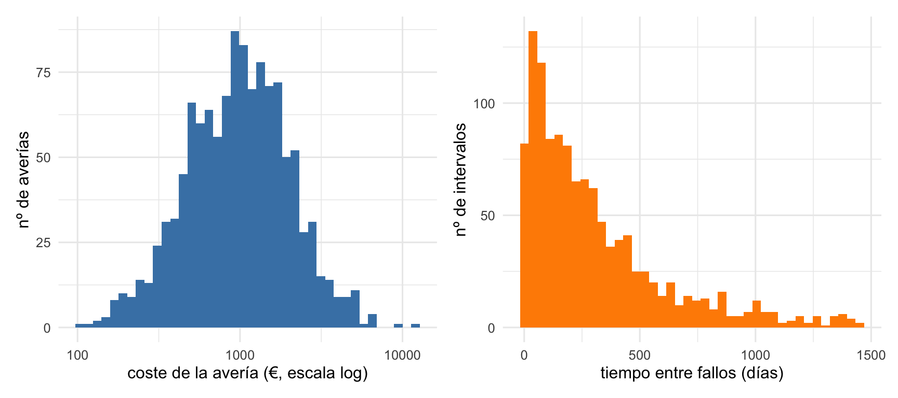
Figura 1: Distribución del coste de reparación (izquierda, eje log) y de los tiempos entre fallos observados (derecha). Ambas magnitudes son positivas y asimétricas a la derecha.
Reproducibilidad
1 · GLM Gamma
El Caso 1 preguntaba si ocurría un evento y el Caso 2 cuántas veces. Ahora la respuesta es un importe: lo que cuesta reparar una avería. Es una magnitud continua, estrictamente positiva y asimétrica a la derecha —unas pocas reparaciones se disparan mientras la mayoría se agrupa en valores modestos—, y esas tres propiedades bastan para descartar el modelo lineal gaussiano. La maquinaria del GLM ya la tenemos; aquí ponemos el peso en lo propio de una respuesta positiva: la distribución Gamma, el enlace log y el parámetro de dispersión.
Sobre esta unidad
Objetivo general: continuas positivas — el GLM Gamma (enlaces log e inverso), el parámetro de dispersión \(\phi\), la interpretación multiplicativa y el diagnóstico.
1.1 Contexto: qué modela
Trabajamos con banco$averias: una fila por avería, con su coste de reparación y las características de la avería y de la máquina. Empecemos mirando la respuesta.
Código
base <- banco$averiasc(n =nrow(base),media =mean(base$coste_euros),mediana =median(base$coste_euros),minimo =min(base$coste_euros),maximo =max(base$coste_euros)) |>round(1)
n media mediana minimo maximo
1194.0 1257.1 991.1 103.4 12023.4
La media supera a la mediana y el máximo queda muy lejos de ambas: la señal típica de una distribución asimétrica a la derecha.
Código
p1 <-ggplot(base, aes(coste_euros)) +geom_histogram(bins =40, fill ="steelblue") +labs(x ="coste de la avería (€)", y ="nº de averías")p2 <-ggplot(base, aes(coste_euros)) +geom_histogram(bins =40, fill ="steelblue") +scale_x_log10() +labs(x ="coste (€, escala log)", y =NULL)p1 + p2
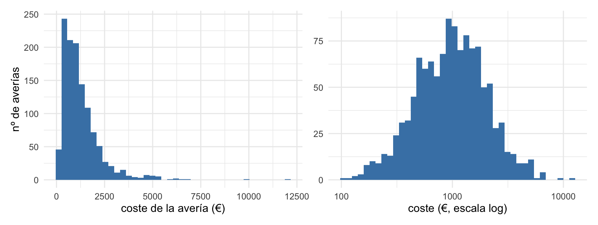
Figura 2: Distribución del coste de reparación en escala original (izquierda) y logarítmica (derecha). En la escala original la cola derecha es larga; en escala log la forma se vuelve casi simétrica, lo que anticipa que el modelo debe ser multiplicativo.
¿Por qué no vale el modelo lineal gaussiano? No es una objeción estética: falla en tres frentes que podemos comprobar. El primero es de principio: el gaussiano tiene soporte en toda la recta real, de modo que reparte probabilidad sobre lo imposible —importes negativos—. Lo ajustamos y lo miramos de cerca.
La media ajustada nunca se vuelve negativa (el mínimo ronda los 111 €), pero eso no salva al modelo: al asumir una Normal, reparte probabilidad por debajo de cero. El límite inferior del intervalo de predicción al 95 % cae bajo cero en el 80 % de las averías (hasta unos −1.570 €), y la probabilidad media que el gaussiano pone en «coste < 0» es del 11 %. No es un problema de puntería, sino de dominio: el coste vive en \((0,\infty)\) y el gaussiano insiste en habitar toda la recta. El segundo frente es la heterocedasticidad: la dispersión no es constante, sino que crece con el nivel del coste, como muestra la Figura 3.
Figura 3: Residuos del ajuste lineal gaussiano frente a los valores ajustados (izquierda) y QQ-plot normal de esos residuos (derecha). El abanico creciente delata heterocedasticidad y la curvatura en la cola, la asimetría.
El tercer frente es el que da nombre a la familia que usaremos: en datos de importes, lo que suele mantenerse aproximadamente constante no es la varianza sino el coeficiente de variación —la dispersión relativa—. Una reparación de 5.000 € varía en cientos de euros; una de 500 €, en decenas. Lo comprobamos por tramos del coste ajustado:
Tabla 3: Media, desviación típica y coeficiente de variación del coste por tramos (quintiles del valor ajustado). La desviación típica crece con la media, pero el CV se mantiene mucho más estable: es la firma de la familia Gamma.
La desviación típica se multiplica varias veces del primer al último tramo, mientras el CV se mueve en una banda estrecha. Esa es exactamente la estructura que codifica la Gamma: \(\operatorname{Var}(Y)\propto\mu^2\) —desviación típica proporcional a la media y CV constante(McCullagh & Nelder, 1989, 8)—.
¿De qué depende el coste?
El modelo debe responder a una pregunta industrial. Antes de ajustarlo, miramos la relación del coste con los cinco predictores candidatos. Primero los categóricos (Figura 4):
Figura 4: Coste (eje log) por tipo de avería, proceso y criticidad. Las averías electrónicas cuestan más que las mecánicas; el coste varía por proceso; y crece con la criticidad de la máquina.
Y los continuos, coloreando los puntos por criticidad para ver si aparece alguna tendencia:
Figura 5: Coste (eje log) frente a la antigüedad de la máquina y su carga de uso, con los puntos y una recta por criticidad. La criticidad separa las nubes en bandas; las pendientes marginales son suaves —la de la carga, casi plana—, pero es la vista marginal: el modelo, que aísla cada efecto, tendrá la última palabra.
Conviene ser honestos con este gráfico: coloreando por criticidad se ven bandas —la criticidad separa las nubes—, pero las pendientes marginales son suaves, y la de la carga casi plana. Cuidado con concluir de ahí que no importan: es la vista marginal, que mezcla máquinas de toda criticidad y puede enmascarar el efecto de cada variable aislada —lo comprobaremos al ajustar el modelo (Sección 1.4)—. Lo que sí se intuye es la jerarquía: sobre el importe pesan sobre todo el tipo de avería y la criticidad, y menos la antigüedad y la carga. Estas dos, además, tienen su papel más fuerte en la frecuencia de fallo —las máquinas viejas o muy exigidas se averían antes—, la otra mitad del caso, que modelaremos en la Unidad 3.5.
Por último, condicionamos el coste por proceso y criticidad a la vez, que es donde el banco esconde su estructura más rica (Figura 6):
Código
ggplot(base, aes(proceso, coste_euros, fill = criticidad)) +geom_boxplot(alpha =0.7) +scale_y_log10() +labs(x =NULL, y ="coste (€, escala log)", fill =NULL) +theme(axis.text.x =element_text(angle =20, hjust =1))
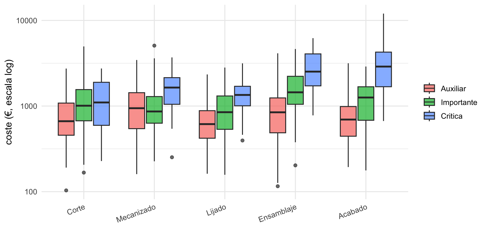
Figura 6: Coste (eje log) por proceso, diferenciando la criticidad con color. El salto de Auxiliar a Crítica es mucho mayor en Ensamblaje y Acabado —los cuellos de botella— que en Corte o Mecanizado: un indicio de interacción criticidad × proceso.
El gráfico sugiere dos cosas. Primera, que los cinco procesos se agrupan en dos fases: Corte, Mecanizado y Lijado se comportan de forma parecida (la fase 1 de la línea), y Ensamblaje y Acabado también entre sí (la fase 2, los cuellos de botella). Segunda, que el sobrecoste de una máquina crítica no es el mismo en ambas fases: se dispara en la fase 2, donde una avería crítica para la línea. Eso pide (a) resumir el proceso en una variable de dos niveles, fase_proceso, y (b) dejar que la criticidad interactúe con ella.
Código
base <- base |> dplyr::mutate(fase_proceso =factor(ifelse(proceso %in%c("Ensamblaje", "Acabado"), "fase2", "fase1"),levels =c("fase1", "fase2")))
1.2 Modelización y estimación
El modelo genérico
Una respuesta continua y positiva pide una distribución con soporte en \((0,\infty)\). La de referencia es la Gamma, y el modelo reúne los tres ingredientes de todo GLM (Nelder & Wedderburn, 1972):
Componente aleatoria:\(Y_i \sim \text{Gamma}(\mu_i,\phi)\), con la relación media-varianza \(\operatorname{Var}(Y_i)=\phi\,\mu_i^{2}\), de donde el coeficiente de variación\(\sqrt{\operatorname{Var}(Y_i)}/\mu_i=\sqrt{\phi}\)no depende de \(\mu_i\): es constante (el supuesto que acabamos de ver plausible en la Tabla 3).
Enlace log:\(\log\mu_i=\eta_i\), de modo que \(\mu_i=e^{\eta_i}>0\) —garantiza una media positiva y hace que los efectos sean multiplicativos—.
La Gamma pertenece a la familia exponencial, con \(\phi\) como parámetro de dispersión (Dobson & Barnett, 2018, 3), así que hereda toda la maquinaria del marco: IWLS, deviance e inferencia.
Enlace log frente a enlace inverso
El enlace canónico de la Gamma no es el log sino el inverso, \(\eta=1/\mu\)(McCullagh & Nelder, 1989, párr. 8.3.3). Que el canónico exista no obliga a usarlo: para importes trabajaremos con el log, que da la lectura multiplicativa que necesitamos (\(e^{\beta}\) es un factor) y evita predicciones inadmisibles (el inverso no garantiza \(\mu>0\) para todo \(\eta\)).
🔧 En R. Ajustar una Gamma con glm()
El ajuste es el mismo glm() de siempre; solo cambia la familia:
glm(coste_euros ~ ..., family =Gamma(link ="log"), data = base)
Tres detalles prácticos:
Gamma con mayúscula. El argumento es la familiaGamma(); en minúscula, gamma es la función gamma de R. Es una confusión de nombres habitual.
Enlaces admitidos:"inverse" (el canónico, η = 1/μ), "log" (η = log μ) e "identity" (η = μ). El enlace por defecto es el inverso, así que para la lectura multiplicativa hay que pedir link = "log" explícitamente.
Estimación idéntica al resto de GLM: máxima verosimilitud por IWLS. Lo único que la Gamma añade es el parámetro de dispersión\(\phi\), que R estima aparte de los \(\beta\) (véase más abajo).
El modelo del caso
Con el tipo de avería, la antigüedad y la carga como efectos principales, y la criticidad en interacción con la fase del proceso (criticidad * fase_proceso incluye ambos efectos principales y su interacción):
Tabla 4: Coeficientes estimados del GLM Gamma (escala log) y su error estándar. Es solo estimación: la significación, los intervalos y los factores se tratan más adelante.
Sobre la estimación: los \(\hat\beta\) se obtienen por máxima verosimilitud mediante IWLS. La novedad es \(\phi\), que no se estima junto a los \(\beta\) sino aparte; R devuelve por defecto la estimación basada en el estadístico de Pearson, \[\hat\phi=\frac{1}{n-p}\sum_i\frac{(y_i-\hat\mu_i)^2}{\hat\mu_i^{2}},\] más recomendable que la basada en la deviance cuando la forma de la Gamma es pequeña (McCullagh & Nelder, 1989, párr. 8.3.6).
La Tabla 4 muestra solo estimación: coeficiente y error estándar. La significación de cada uno —su estadístico de Wald, su intervalo de confianza y su \(p\)-valor— la reservamos para la Sección 1.4, donde reunimos todo el aparato inferencial bajo una sola idea. Aquí nos quedamos con las estimaciones para pasar a interpretarlas.
Antes de interpretar los coeficientes conviene mirar ese \(\hat\phi\), porque fija la escala de la incertidumbre de todo el modelo. Lo extraemos del summary y, a su lado, calculamos lo que de verdad tiene sentido físico: el coeficiente de variación implicado\(\sqrt{\hat\phi}\) —recuérdese que en la Gamma \(\operatorname{Var}(Y)=\phi\,\mu^2\), de modo que \(\sqrt{\phi}\) es la dispersión relativa, la misma en todos los niveles de coste—:
El cv_implicado es la lectura útil: dice que, alrededor del coste medio que predice el modelo, una reparación cualquiera se desvía en ese porcentaje con independencia de si es cara o barata —la firma Gamma de CV constante que motivó la familia—. Conviene retener esta cifra: al validar contra el DGP (Sección 1.5) comprobaremos que sale más alta que la dispersión «pura» con la que se simularon los datos, y esa brecha no es ruido, sino la pista de que al modelo le falta algo —lo que comentamos a continuación—.
Estamos ignorando el agrupamiento (y se nota)
Cada máquina aporta varias averías, y las de una misma máquina se parecen entre sí: no son independientes. Aquí las tratamos como si lo fueran —un modelo de efectos fijos sobre todas las averías—. Esa simplificación tiene un precio visible: el \(\hat\phi\) que acabamos de estimar sale inflado respecto de la dispersión «pura» de la Gamma, porque absorbe la variabilidad entre máquinas que el modelo no incluye. Lo confirmaremos al validar contra el DGP (Sección 1.5) y lo resolveremos con el efecto aleatorio de máquina de la Unidad 3.3.
1.3 Interpretación
Con enlace log, \(\log\mu = \beta_0 + \beta_1 x_1 + \dots + \beta_p x_p\), así que la media es un producto de factores: \[\mu = e^{\beta_0}\, e^{\beta_1 x_1}\, e^{\beta_2 x_2}\cdots e^{\beta_p x_p}.\] Si el predictor \(x_j\) aumenta en una unidad (con el resto fijo), la media se multiplica por \(e^{\beta_j}\):
\[\frac{\mu(x_j+1)}{\mu(x_j)} = \frac{e^{\beta_j (x_j+1)}}{e^{\beta_j x_j}} = e^{\beta_j}.\] Por eso \(e^{\beta_j}\) es un factor: un \(e^{\beta_j}=1{,}05\) significa «un 5 % más caro»; un \(0{,}90\), «un 10 % más barato». Para un predictor categórico, \(e^{\beta_j}\) compara ese nivel con el de referencia.
Una lectura rápida con los propios \(\beta\). Como los coeficientes de los predictores caen todos entre 0 y 1 (el intercepto aparte), conviene una lectura de tanteo antes de la exacta. El desarrollo de Taylor de la exponencial en torno a cero, \(e^{\beta}=1+\beta+\tfrac{\beta^{2}}{2}+\cdots\), se reduce para \(\beta\) pequeño a \(e^{\beta}\approx 1+\beta\): es decir, el propio coeficiente es, aproximadamente, el incremento relativo de la media (\(\beta\times 100\,\%\)), sin necesidad de exponenciar. Así, leyendo directamente los coeficientes de la Tabla 4, un \(\beta=0{,}03\) es «un 3 % más» (\(e^{0.03}=1.03\)) y un \(\beta=0{,}11\), «un 11 % más» (\(e^{0.11}=1.116\)). La aproximación es excelente cerca de cero y se queda corta a medida que \(\beta\) se acerca a 1: para \(\beta=0{,}57\) daría \(+57\,\%\), cuando el factor exacto es \(e^{0{,}57}=1{,}77\) —el incremento real es del \(77\,\%\)—. Regla práctica: \(\beta\times 100\,\%\) como lectura mental de los efectos pequeños, y el factor exacto de la Tabla 5 para los grandes.
La tabla da los factores ya calculados (columna exp(beta)):
Tabla 5: Coeficientes exponenciados, exp(β̂): el factor multiplicativo que cada predictor aplica sobre el coste medio. Es la escala en la que interpretamos (los intervalos y la significación, en la Sección 1.4).
Leemos los factores de la Tabla 5 (entre paréntesis, la lectura rápida \(1+\beta\)):
Tipo de avería (referencia Mecanica). Las electrónicas son, con diferencia, las más caras: un 54 % más que una mecánica (\(e^{0{,}43}=1{,}54\)); las hidráulicas, un 29 % más; las eléctricas, un 12 %.
Criticidad de la máquina. Encarece mucho la reparación: en la fase 1, una máquina crítica cuesta un 77 % más que una auxiliar (\(e^{0{,}57}\); lectura rápida \(\approx +57\,\%\)), y una importante, ya un 29 % más (\(\approx +26\,\%\)). Es, junto con el tipo de avería, el motor más potente del coste.
El factor de la criticidad, sin embargo, no cuenta toda la historia: como entra en interacción con la fase del proceso, su efecto no es un único número, sino que depende de la fase. Sumar a mano el término principal y el de interacción para cada combinación es incómodo; es más claro pedir directamente el coste medio predicho por criticidad dentro de cada fase (Tabla 6):
Tabla 6: Coste medio predicho (€) por criticidad y fase del proceso (resto de variables en su valor de referencia/medio). El salto de Auxiliar a Crítica es mucho mayor en la fase 2 (cuellos de botella).
La lectura industrial: en la fase 1 que una máquina sea crítica encarece la reparación de forma moderada; en la fase 2, el sobrecoste se dispara —porque ahí la avería no solo cuesta el arreglo, sino que para la línea—. Señala dónde una avería sale más cara —las máquinas críticas de Ensamblaje y Acabado— y, por tanto, dónde conviene concentrar repuestos y capacidad de respuesta; si además compensa prevenirla dependerá de con qué frecuencia falle, que es ya otra pregunta (la Unidad 3.5). Lo vemos también en euros predichos frente a la antigüedad (Figura 7):
Código
marginaleffects::plot_predictions(m_gamma,condition =c("antiguedad_anios", "criticidad", "fase_proceso")) +labs(x ="antigüedad de la máquina (años)", y ="coste medio predicho (€)",colour =NULL, fill =NULL)
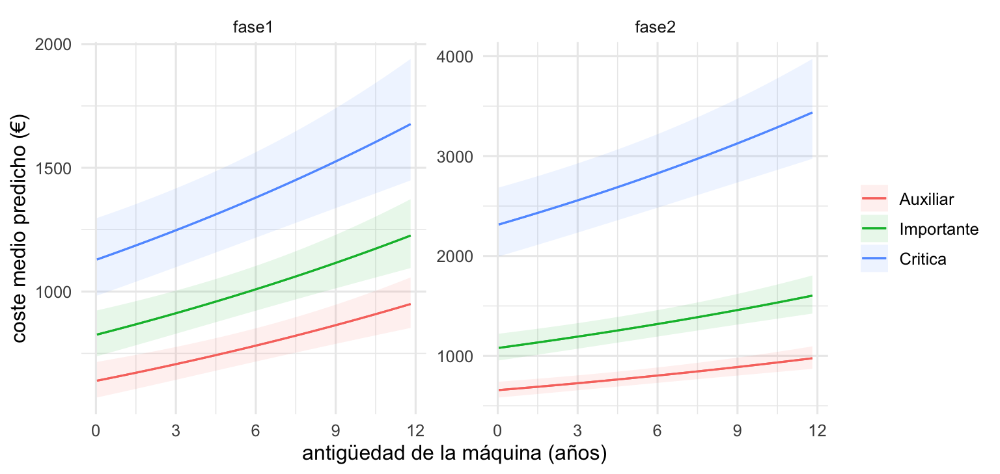
Figura 7: Coste medio predicho frente a la antigüedad, por criticidad y fase del proceso. Las curvas se separan mucho más por criticidad en la fase 2: es la interacción.
🔧 En R. Tres herramientas para leer el modelo
Hemos usado tres piezas del ecosistema, cada una para una tarea distinta de interpretación:
broom::tidy(m_gamma, exponentiate = TRUE) ordena los coeficientes en un data frame limpio (una fila por término) y, con exponentiate = TRUE, los devuelve como \(e^{\hat\beta}\): la escala del factor. Encima, dplyr::transmute()crea las columnas que queremos y descarta el resto (a diferencia de mutate(), que las añade): aquí, quedarnos solo con term y exp(beta). La misma función, añadiendo conf.int = TRUE y el estadístico de Wald, arma la tabla integral de la Sección 1.4.
emmeans::emmeans(m_gamma, ~ criticidad | fase_proceso, type = "response") calcula medias marginales estimadas: el coste predicho para cada nivel de criticidad dentro de cada fase (la barra | fija la fase). Hace por nosotros la suma «principal + interacción» y, con type = "response", devuelve el resultado en euros (deshace el enlace log) en lugar de en escala lineal.
marginaleffects::plot_predictions(m_gamma, condition = ...) dibuja esas mismas predicciones a lo largo de un predictor continuo (la antigüedad), abriendo una curva por cada combinación de criticidad y fase_proceso. Es la versión gráfica de la tabla anterior: la interacción se ve en que las curvas se abren mucho más en la fase 2.
La idea de fondo: tidy sirve para leer coeficientes (efectos en escala del factor); emmeans y marginaleffects, para leer predicciones (la respuesta en su escala natural, ya combinados todos los términos). Con interacciones, casi siempre es más honesto interpretar sobre predicciones.
1.4 Inferencia y selección
Toda la inferencia de este modelo comparte una raíz común: \(\phi\) es desconocida y se estima de los datos. Eso desplaza las distribuciones de referencia respecto de Poisson o binomial —donde \(\phi=1\) es conocida—, igual que en el modelo lineal cambia todo según trabajemos con \(\sigma^2\) conocida o estimada. La consecuencia es que operamos con la familia \(t\)/\(F\) en vez de con normal/\(\chi^2\). Con esa idea en la mano, la inferencia tiene dos niveles:
Un coeficiente aislado (¿es \(\beta_j\neq 0\)?): contraste de Wald, el cociente \(\hat\beta_j/\operatorname{ee}(\hat\beta_j)\) referido a una \(t\) de Student con \(n-p\) grados de libertad. Lo leeremos en la tabla integral de más abajo; sirve para juzgar la significación de cada término uno a uno.
Un término completo o un modelo frente a otro anidado (¿aporta la interacción?, ¿sobra fabricante?): contraste \(F\), cociente de deviances escaladas. Es el que necesitamos para decisiones de modelización, porque un factor con varios niveles —o una interacción— no se juzga por un único coeficiente, sino por el bloque entero.
Primer nivel: cada coeficiente. Reunimos en una sola tabla los coeficientes con su estadístico de Wald (estimación, error estándar, \(t\) y \(p\)-valor) y, pegada, su versión exponenciada —el factor— con su intervalo de confianza al 95 % (Tabla 7):
Tabla 7: Tabla integral de coeficientes: estadístico de Wald (β̂, error estándar, t, p) junto al factor exp(β̂) y su intervalo de confianza al 95 %. El intervalo del factor que no contiene el 1 señala un efecto significativo.
Casi todas las variables resultan significativas. Los \(p\)-valores son pequeños en casi todos los términos y, en la escala del factor, sus intervalos de confianza quedan por encima de 1 —el 1, «sin efecto», cae fuera—. Es la misma afirmación en dos escalas: «\(\beta\neq 0\) en escala log» equivale a «\(e^{\beta}\neq 1\)». Merece subrayarse que la antigüedad y la carga, cuyas pendientes parecían planas en el EDA (Figura 5), salen significativas —y la carga, con un efecto nada pequeño (un ~32 % del menos al más exigido) pese a su pendiente marginal casi plana—: el diagrama mostraba la relación marginal (máquinas de toda criticidad mezcladas), mientras el modelo aísla el efecto parcial, con el resto fijo. Es un caso de manual de cómo la confusión puede esconder un efecto real a la vista simple. La única excepción es el efecto principal de la fase, y no es un defecto, sino justo lo que el diseño anticipaba.
La fase, significativa solo en interacción con la criticidad. El efecto principal de fase_proceso —comparar la fase 2 con la fase 1 en una máquina auxiliar— no es significativo (\(\hat\beta\approx 0{,}03\), \(p\approx 0{,}6\); su factor ronda 1 y el intervalo cruza el 1): para una máquina poco crítica, que su proceso sea final o inicial no cambia el coste de repararla. Pero la interacción criticidad × fase2 sí es muy significativa, y con un tamaño de efecto grande: al término de una avería crítica en la fase 2 le corresponde un factor extra \(e^{0{,}69}\approx 1{,}99\) —casi el doble— sobre lo que ya cuesta ser crítica. El matiz importa: el coeficiente principal de la fase la evalúa solo en el nivel de referencia de la criticidad (Auxiliar), donde no hay diferencia; el efecto de la fase «vive» en el término de interacción, que actúa sobre las máquinas importantes y críticas. Por eso sería un error retirar fase_proceso mirando únicamente su \(p\)-valor principal: un efecto principal no significativo cuya interacción sí lo es debe mantenerse (principio de jerarquía o marginalidad), pues la interacción no tiene sentido sin él.
Por qué \(t\) y \(F\), y no \(z\) y \(\chi^2\)
Es la misma causa en los dos niveles. En Poisson y binomial la dispersión es conocida (\(\phi=1\)): el estadístico de Wald es asintóticamente normal (z value) y la diferencia de deviances, \(\chi^2\). En la Gamma, \(\phi\)se estima, lo que añade incertidumbre; R lo tiene en cuenta refiriendo el cociente de Wald a una \(t\) y el de deviances escaladas a una \(F\) —como en el modelo lineal—. Por eso la tabla de coeficientes trae t value/Pr(>|t|) y en los contrastes de modelos pasamos test = "F"; usar test = "Chisq" produciría valores \(p\) demasiado pequeños.
🔧 En R. Contrastar términos y comparar modelos
Tres piezas, según lo que se pregunte:
Un término dentro del modelo — anova(m_gamma, test = "F") da la tabla de deviances término a término. En la Gamma se pasa test = "F" (porque \(\phi\) se estima); test = "Chisq" daría \(p\) demasiado pequeños. drop1(m, test = "F") hace lo análogo quitando un término cada vez.
Dos modelos anidados (¿aporta la interacción?, ¿sobra fabricante?) — se ajusta el vecino y se enfrentan con anova(m_reducido, m_completo, test = "F"). update(m, . ~ . + fabricante) construye ese modelo vecino sin reescribir la fórmula entera.
Modelos no anidados, misma respuesta y familia — AIC(m1, m2, m3); gana el menor. (Para comparar entre respuestas en escalas distintas, cuidado con el jacobiano: Unidad 3.2.)
Segundo nivel: términos y modelos. Pasamos de los coeficientes uno a uno a los bloques. La tabla de análisis de la deviance término a término:
Código
anova(m_gamma, test ="F")
¿Aporta la interacción? Es la decisión de modelización clave. La contrastamos frente al modelo con solo los efectos principales (misma criticidad en las dos fases):
Código
m_sin_int <-glm(coste_euros ~ tipo_averia + criticidad + fase_proceso + antiguedad_anios + carga,family =Gamma(link ="log"), data = base)anova(m_sin_int, m_gamma, test ="F")
¿Entra el fabricante? Lo añadimos como candidato y dejamos que la evidencia decida. El contraste \(F\) del bloque frente al modelo sin él:
Código
m_fab <-update(m_gamma, . ~ . + fabricante)anova(m_gamma, m_fab, test ="F")
El bloque resulta significativo —lo aporta sobre todo uno de sus tres niveles— y, como confirma el AIC(Akaike, 1974) (comparable solo entre modelos sobre los mismos datos y la misma familia), añadir fabricantereduce el criterio (Tabla 8):
Código
AIC(m_sin_int, m_gamma, m_fab) |>round(1)
Tabla 8: Comparación por AIC: sin interacción, con interacción, y añadiendo fabricante. El menor AIC corresponde al modelo con fabricante.
El modelo que nos quedamos (de momento). La interacción criticidad × fase se mantiene (el \(F\) la respalda y el AIC baja al incluirla). Y fabricante, contra lo que cabría esperar de una simple etiqueta de catálogo, también baja el AIC y sale significativo; siguiendo la evidencia, lo incluimos provisionalmente, de modo que el modelo con el que seguimos es m_fab. Es una decisión que dejamos en cuarentena: un único nivel significativo y un efecto pequeño invitan a la cautela, y en la validación contra el DGP (Sección 1.5) veremos si ese efecto es real o un espejismo. Sobre m_fab hacemos el diagnóstico.
Con los efectos principales ya contrastados, conviene traducir los números a decisiones: cada coeficiente significativo es una palanca para la planta.
Lo primero que dice el modelo es qué pesa en el coste de una reparación.
Manda la criticidad —decenas de puntos porcentuales— y el tipo de avería (la más cara, una electrónica, un 54 % más que una mecánica).
Le sigue el nivel de uso (carga, un ~44 % por unidad; ~32 % del menos al más exigido).
La antigüedad pesa poco por año (~3 %), aunque a lo largo de la vida de una máquina se acumula hasta un sobrecoste apreciable (casi un 50 % entre la más nueva y la más vieja).
Para un responsable de mantenimiento, el grueso del gasto por intervención lo marcan la naturaleza del fallo, la posición de la máquina en la línea y cuánto se le exige, más que su edad.
Lo segundo es una jerarquía de severidad muy concreta. Las averías electrónicas son las más caras de reparar (un 54 % sobre una mecánica): justifican mantener stock de repuestos electrónicos y personal cualificado, porque cuando ocurren, cuestan. Y por encima de todo está la criticidad en los cuellos de botella, que se dan en los últimos procesos de fabricación (ensamblado y acabado): una máquina crítica en Ensamblaje o Acabado no solo cuesta más de arreglar, sino que detiene la línea, y por eso su sobrecoste casi se duplica frente a la misma máquina en un proceso inicial. Es el hallazgo con más consecuencias prácticas del modelo: si una de esas máquinas se avería, es la reparación más cara del sistema. Sobre esa base, la prioridad de repuestos, tiempos de respuesta y redundancia empieza ahí.
Conviene, eso sí, no pedirle al modelo más de lo que dice. Todo lo anterior es una lectura de severidad —cuánto cuesta una avería si ocurre—; no hemos modelado la frecuencia (cada cuánto se avería una máquina) ni el mantenimiento. La frecuencia de fallo y el efecto del mantenimiento son el objeto de la Unidad 3.5; y el presupuesto esperado = frecuencia × severidad —donde la prevención se paga o no— se cierra con el enfoque Tweedie de la Unidad 3.4.
Lo tercero es un matiz que evita una decisión equivocada, y que la interacción hace explícito: la fase del proceso no encarece las reparaciones «en general». Concentrar esfuerzo en las máquinas auxiliares de la fase 2 no evitaría ningún sobrecoste —para ellas, estar en un proceso final es indiferente al coste—. El sobrecoste de la fase 2 es específico de las máquinas críticas (y, en menor medida, de las importantes); leer el efecto principal aislado llevaría a repartir esfuerzo donde no rinde. Es la diferencia entre «mirar a la fase 2» y «mirar a las máquinas críticas de la fase 2».
Por último, un aviso que el propio ajuste desliza y que el caso irá a explotar: parte de la variabilidad del coste no la explican estas variables, sino la máquina en sí —algunas son crónicamente caras—. Es la fragilidad que infla el \(\hat\phi\) y que, bien modelada, permite señalar máquinas concretas para sustitución o vigilancia reforzada. De cómo estimarla —y de por qué mejora tanto la precisión— se ocupa la Unidad 3.3.
1.5 Bondad de ajuste, diagnóstico, validación y predicción
Residuos: cuáles usar
Los residuos crudos \(y-\hat\mu\) no sirven en un GLM Gamma (su dispersión crece con \(\hat\mu\)). Los de deviance corrigen bastante, pero en respuestas muy asimétricas siguen mostrando patrones espurios. La herramienta adecuada son los residuos cuantil aleatorizados(Dunn & Smyth, 1996): si el modelo es correcto se distribuyen uniformemente, sea cual sea la familia. Es lo que evalúa la Figura 8.
Código
DHARMa::simulateResiduals(m_fab, n =1000, plot =TRUE)
Object of Class DHARMa with simulated residuals based on 1000 simulations with refit = FALSE . See ?DHARMa::simulateResiduals for help.
Scaled residual values: 0.746 0.237 0.225 0.738 0.627 0.736 0.608 0.605 0.436 0.146 0.559 0.574 0.526 0.549 0.272 0.58 0.081 0.282 0.11 0.14 ...
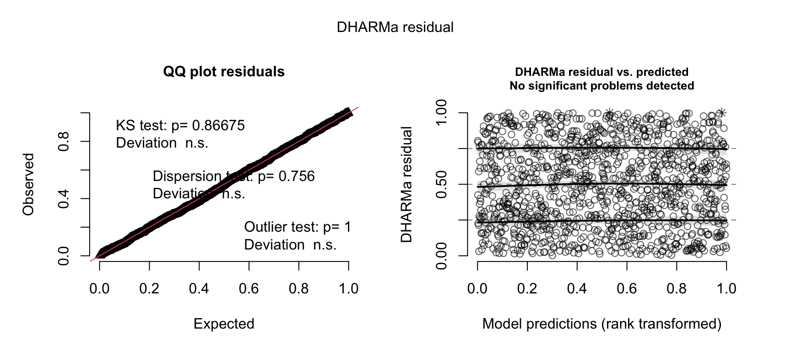
Figura 8: Diagnóstico con residuos cuantil simulados (DHARMa). Izquierda: QQ-plot uniforme con los contrastes de bondad de ajuste. Derecha: residuos frente a valores ajustados; buscamos una nube sin estructura.
🔧 En R. Diagnóstico con residuos cuantil (DHARMa)
Los residuos crudos y los de deviance engañan en un GLM Gamma; los residuos cuantil aleatorizados(Dunn & Smyth, 1996) son uniformes si el modelo es correcto, sea cual sea la familia. DHARMa los obtiene por simulación:
DHARMa::simulateResiduals(m_fab, n =1000, plot =TRUE)
simulateResiduals() genera n réplicas de la respuesta bajo el modelo y sitúa cada residuo como su cuantil dentro de esa réplica simulada. Con plot = TRUE dibuja los dos paneles.
Panel izquierdo (QQ uniforme): los puntos deben seguir la diagonal, y los contrastes que superpone —uniformidad (KS), dispersión y atípicos— salir no significativos.
Panel derecho: residuos frente a valor predicho; buscamos una nube sin estructura (ni abanico ni curvatura).
Volveremos a DHARMa en la Unidad 3.3, donde simulateResiduals sabe además respetar el agrupamiento por máquina del modelo mixto.
¿Es correcta la función de varianza?
Es el supuesto central: contrastar cómo crece la varianza con la media. La familia postula \(\operatorname{Var}(Y)=\phi\,\mu^{p}\), con \(p=2\) para la Gamma, \(p=1\) para Poisson y \(p=3\) para la inversa gaussiana (McCullagh & Nelder, 1989, párr. 12.6.2). Esa relación es una potencia, incómoda de juzgar a ojo; pero tomando logaritmos se vuelve una recta: \[\log\operatorname{Var}(Y)=\log\phi + p\,\log\mu.\] En escala log–log, entonces, la nube de puntos (varianza frente a media, agrupando por valor ajustado) debe alinearse sobre una recta de ordenada en el origen \(\log\phi\) y pendiente \(p\). Por eso ajustamos una recta a esos puntos y miramos su pendiente: si sale \(\approx 2\), respalda la Gamma; un valor cercano a 1 apuntaría a Poisson y a 3, a la inversa gaussiana. La Figura 9 recoge esa nube y la recta ajustada.
Código
mv <- base |> dplyr::mutate(grupo = dplyr::ntile(fitted(m_fab), 12)) |> dplyr::group_by(grupo) |> dplyr::summarise(media =mean(coste_euros), varianza =var(coste_euros), .groups ="drop")pendiente <-coef(lm(log(varianza) ~log(media), data = mv))[2]ggplot(mv, aes(media, varianza)) +geom_point(size =2) +geom_smooth(method ="lm", se =FALSE, colour ="firebrick") +scale_x_log10() +scale_y_log10() +labs(x ="media del grupo (€, log)", y ="varianza del grupo (log)",subtitle =paste0("pendiente estimada p = ", round(pendiente, 2)))
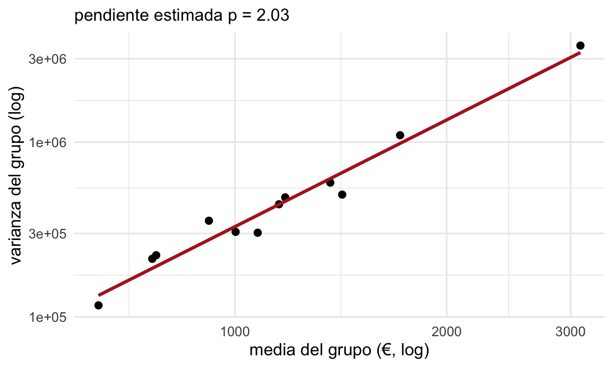
Figura 9: Relación media-varianza empírica en escala log-log. La pendiente estima la potencia p en Var(Y) ∝ μ^p: p ≈ 2 respalda la Gamma.
Validación contra el DGP
La ventaja de trabajar con datos simulados: comparamos lo estimado con la verdad. Empezamos por los efectos que el modelo identifica con precisión —tipo de avería, antigüedad y carga— (Tabla 9):
Tabla 9: Coeficientes estimados frente a los valores verdaderos del proceso generador, con el intervalo de confianza al 95 %.
Se recuperan bien. ¿Y la criticidad y su interacción? Conviene mirar el efecto combinado de una máquina crítica en cada fase (base + interacción), no cada coeficiente por separado (Tabla 10):
Tabla 10: Efecto de una máquina Crítica (frente a Auxiliar) sobre el coste, por fase: en escala log y como factor multiplicativo, estimado frente al verdadero del DGP.
La criticidad se recupera «en bloque», no «en piezas» (y anticipa la 3.3)
Dos cosas se cumplen y una avisa:
El efecto combinado de la criticidad —cuánto encarece una máquina crítica en cada fase— se recupera razonablemente, y confirma la lectura industrial: el sobrecoste es mucho mayor en la fase 2.
Pero el reparto de ese efecto entre el término «base» y el de «interacción» es impreciso: sus intervalos de confianza son anchos. La criticidad se apoya en relativamente pocas máquinas, y —sobre todo— cada máquina aporta varias averías correlacionadas que el modelo de efectos fijos trata como independientes.
Esa misma heterogeneidad entre máquinas no modelada infla el \(\hat\phi\) por encima de la dispersión verdadera de la Gamma (attr(banco,"verdad")$phi_coste).
Los intervalos anchos y la \(\hat\phi\) inflada son la misma señal: la fragilidad de máquina que el modelo no ve. Es exactamente el problema que resuelven —y con más precisión estiman— los modelos mixtos de la Unidad 3.3.
Y queda la cuenta pendiente que dejamos «en cuarentena»: el fabricante que la selección hizo entrar en el modelo. La verdad del DGP zanja la duda —en el proceso generador del coste no interviene, así que su efecto verdadero es cero— (Tabla 11):
Tabla 11: El fabricante frente a su verdad: efecto verdadero nulo (no está en el DGP del coste) frente a lo estimado. Un nivel sale «significativo»: es un falso positivo.
El fabricante: un falso positivo que anticipa la 3.3
Lo incluimos siguiendo la evidencia (\(F\) significativo, AIC menor), pero el DGP lo desmiente: su efecto verdadero es cero. ¿Cómo puede un efecto inexistente salir «significativo» y hasta mejorar el AIC? Por la misma pseudorréplica que infla \(\hat\phi\). Cada máquina aporta varias averías correlacionadas; por puro azar, las máquinas de un fabricante resultaron algo más baratas, y el modelo —que trata cada avería como independiente— cuenta esa coincidencia muchas veces e infla la evidencia hasta convertirla en significación. No es un fallo del test, sino del supuesto de independencia que le damos.
La prueba de que es un espejismo: con inferencia que respeta el agrupamiento —errores estándar por máquina, o el efecto aleatorio de la Unidad 3.3— el efecto se desvanecerá. La moraleja va más allá de la incertidumbre: un modelo que ignora la correlación no solo estima mal los errores típicos, también selecciona mal (elige incluir lo que no debería). Cuando reajustemos con el agrupamiento y volvamos a testar fabricante, lo esperable es que salga del modelo.
Predicción
Predecir con un GLM Gamma-log es directo: el modelo da el predictor lineal\(\hat\eta=x^{\top}\hat\beta\) en escala log, y la media en euros es \(\hat\mu=e^{\hat\eta}\). En R, predict(m, newdata, type = "response") hace la exponenciación; los intervalos se calculan en la escala del enlace —donde la Normal aproxima bien— y se exponencian, que es justo lo que devuelve marginaleffects::predictions. Por ejemplo, para una avería mecánica y una electrónica en una máquina crítica de la fase 2 (el punto caliente del sistema), a edad y carga medias (?@tbl-u31-pred-marginal):
Es una predicción marginal: vale para una máquina cualquiera de ese perfil —la media de la población—. Es la única que un GLM puede dar, porque no distingue entre máquinas. En la Unidad 3.3, al añadir el efecto aleatorio de máquina, aparecerá una segunda predicción, la condicional: cuánto costará reparar esta máquina en concreto. La diferencia entre ambas es, en una frase, lo que aportan los modelos mixtos.
Tarea del estudiante (3.1) · qué te llevas al estudio de caso
Esta unidad te da la pieza central de la severidad: un GLM Gamma con enlace log sobre un importe individual. En la cartera de la Unidad 3.8 ese importe es coste_k de siniestros.csv —una fila por parte—, no coste_medio de la póliza.
Propuesta 2 · Por dónde se cuela el sexo en la tarifa(unidad base). El modelo de severidad con y sin el proxy es exactamente el ajuste de esta unidad, repetido dos veces. Ensáyalo aquí: quita fabricante del modelo del coste de una avería y comprueba cuánto se mueven los demás coeficientes. Si no se mueve nada, no hay canal; si se mueve, lo hay.
Propuesta 1 · La prima pura por tres caminos. La «vía A» necesita una predicción de coste medio por siniestro en la escala del euro, no del log. Practica aquí la lectura multiplicativa y el paso de \(\hat\eta\) a euros.
Aviso para las dos. En la cartera, coste_medio es NA cuando la póliza no tuvo partes y promedia un número distinto de siniestros en cada póliza: no es la respuesta de un modelo de severidad. La respuesta es coste_k.
2 · Elegir familia y escala
En la Unidad 3.1 dimos por buena la Gamma casi sin discutirla: el coste era positivo y asimétrico, el CV parecía estable, y funcionó. Pero «funcionó» no es «era la mejor opción». Hay al menos otras dos formas razonables de modelar un importe positivo —la inversa gaussiana y la lognormal ajustada por OLS sobre \(\log Y\)—, y esta unidad va de saber elegir entre ellas y justificar la elección. Por el camino aparecerá la trampa que dejamos anunciada: qué ocurre al devolver a euros las predicciones de un modelo ajustado en logaritmos.
Sobre esta unidad
Objetivo general: continuas positivas — alternativas a la Gamma (inversa gaussiana, lognormal / log-OLS), la función de varianza como criterio y modelar la dispersión; saber elegir y justificar la elección.
Partimos del modelo tal como quedó al cerrar la unidad anterior, con fabricante incluido provisionalmente (su reexamen, sabiendo que probablemente es un falso positivo del agrupamiento, queda para la Unidad 3.3). Para elegir familia da igual: es una cuestión sobre la función de varianza, y fabricante apenas mueve las predicciones.
Código
f_coste <- coste_euros ~ tipo_averia + criticidad * fase_proceso + antiguedad_anios + carga + fabricantem_gam <-glm(f_coste, family =Gamma(link ="log"), data = base) # el m_fab de la Unidad 3.1
2.1 Qué distingue a una familia de otra
Todas las familias que vamos a considerar comparten el enlace log y, por tanto, la misma lectura multiplicativa. Lo que no comparten es la función de varianza: cómo crece la dispersión cuando crece la media. Las tres candidatas encajan en una misma expresión, \[\operatorname{Var}(Y)=\phi\,\mu^{p},\] y la familia queda determinada por la potencia \(p\):
\(p\)
Familia
Qué supone
1
Poisson (cuasi)
desviación típica \(\propto\sqrt{\mu}\)
2
Gamma
desviación típica \(\propto\mu\) → CV constante
3
Inversa gaussiana
desviación típica \(\propto\mu^{3/2}\) → colas más pesadas
Elegir familia es, en buena medida, elegir \(p\). Y \(p\) no hay que adivinarlo: se estima de los datos, agrupando por valor ajustado y viendo cómo escala la varianza con la media (McCullagh & Nelder, 1989, párr. 12.6.2). Es el diagnóstico más informativo de toda la unidad, así que lo hacemos antes que nada.
En la Unidad 3.1 ya usamos este gráfico para comprobar el supuesto de la Gamma; ahora lo usamos para elegir, añadiendo las tres pendientes teóricas como referencia visual. Recuérdese la forma analítica: como \(\operatorname{Var}(Y)=\phi\,\mu^{p}\), en escala log–log es una recta, \(\log\operatorname{Var}=\log\phi+p\,\log\mu\), de pendiente \(p\). Es lo que dibuja la Figura 10.
Código
mv <- base |> dplyr::mutate(grupo = dplyr::ntile(fitted(m_gam), 14)) |> dplyr::group_by(grupo) |> dplyr::summarise(media =mean(coste_euros), varianza =var(coste_euros), .groups ="drop")p_hat <-coef(lm(log(varianza) ~log(media), data = mv))[2]# Rectas teóricas de referencia, ancladas al centroide de la nube en escala log10.# Con scale_*_log10(), geom_abline() dibuja log10(y) = intercept + slope * log10(x).refs <- tibble::tibble(p =1:3,familia =c("p = 1", "p = 2 (Gamma)", "p = 3 (inv. gaussiana)"),intercepto =mean(log10(mv$varianza)) - p *mean(log10(mv$media)))ggplot(mv, aes(media, varianza)) +geom_abline(data = refs, aes(slope = p, intercept = intercepto, colour = familia),linetype =2, linewidth =0.6) +geom_point(size =2) +geom_smooth(method ="lm", se =FALSE, colour ="black", linewidth =0.7) +scale_x_log10() +scale_y_log10() +scale_colour_manual(values =c("grey55", "firebrick", "steelblue")) +labs(x ="media del grupo (€, log)", y ="varianza del grupo (log)", colour =NULL,subtitle =paste0("pendiente estimada (línea negra): p = ", round(p_hat, 2)))
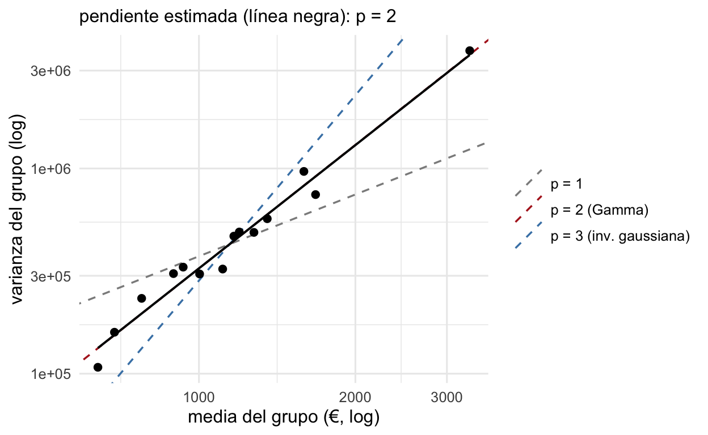
Figura 10: Relación media-varianza empírica del coste, en escala log-log, con las tres pendientes teóricas de referencia (p = 1, 2, 3). La recta negra ajustada estima la potencia p de Var(Y) ∝ μ^p.
La pendiente cae prácticamente sobre 2. Antes de mirar un solo AIC ya tenemos una respuesta —y una que no depende de convenios de cálculo ni de correcciones de escala—. Aun así, ajustemos las alternativas: el objetivo de la unidad no es solo acertar, es saber comparar.
🔧 En R. Más allá de la Gamma — familias positivas (y a medida) en glm()
La Gamma es la primera respuesta para una continua positiva, pero no la única —y elegir entre ellas es el asunto de esta unidad—. Conviene tener a la vista el mapa completo de lo que ofrece el marco.
Familias positivas de serie. Además de Gamma() —\(\operatorname{Var}\propto\mu^{2}\)—, glm() trae inverse.gaussian(), con \(\operatorname{Var}\propto\mu^{3}\): la misma idea (media positiva, dispersión relativa creciente) pero con una cola aún más pesada, apropiada cuando la asimetría es extrema. Su enlace canónico es \(1/\mu^{2}\), aunque también admite log e identity. Cuál encaja mejor con el coste —Gamma frente a inversa gaussiana— es lo que resolvemos enseguida (Sección 2.2).
Sin comprometerse con una distribución completa. Si solo confías en la relación media–varianza y no en toda la forma distribucional, quasi(link = ..., variance = "mu^2") (o "mu^3", "constant"…) ajusta por cuasi-verosimilitud: usa la misma ecuación de estimación que la Gamma pero estima \(\phi\) sin postular la densidad (McCullagh & Nelder, 1989, 9). Es la vía cuando la función de varianza es lo único que quieres fijar.
Familias construidas. El marco admite ir más lejos:
Tweedie —familia con \(\operatorname{Var}=\phi\,\mu^{p}\) y potencia \(p\) libre (statmod::tweedie)—. Para \(1<p<2\) es una mezcla Poisson–Gamma que genera ceros y positivos a la vez: exactamente el coste_total por máquina-año que modelaremos en la Unidad 3.4.
Objeto family() a medida. R deja definir una familia propia (linkfun, linkinv, variance, dev.resids, aic…) si necesitas una combinación media-varianza-enlace que no viene de serie.
Y una que no es familia glm. La lognormal no se ajusta como GLM, sino como un lineal gaussiano sobre log(coste_euros). Parece equivalente al enlace log, pero no lo es —modela la media del logaritmo, no el logaritmo de la media—, y devolver las predicciones a euros esconde una trampa que abordamos en la Sección 2.3.
2.2 Inversa gaussiana
La inversa gaussiana mantiene el soporte positivo y el enlace log, pero asume \(\operatorname{Var}(Y)=\phi\,\mu^{3}\): la dispersión crece más deprisa con la media. Es la elección natural cuando la cola derecha es más pesada de lo que la Gamma puede acomodar. La Tabla 12 recoge sus factores.
Tabla 12: Coeficientes exponenciados (factores) del modelo con familia inversa gaussiana y enlace log, con su intervalo de confianza al 95 %. Compárense con los de la Gamma en la Unidad 3.1.
Los factores son muy parecidos a los de la Gamma, y no es casualidad: con el mismo enlace, ambas estiman la misma media y difieren solo en cómo ponderan las observaciones. La diferencia está en el peso de las averías caras: al asumir varianza \(\propto\mu^{3}\), la inversa gaussiana confía menos en las predicciones grandes y les da menos influencia. Si la cola no es tan pesada como supone —y aquí, con \(p\approx 2\), no lo es—, ese descuento sale caro en ajuste. Lo confirmaremos con el AIC.
2.3 Lognormal y log-OLS
La tercera vía es la más tentadora por familiar: si \(\log Y\) parece normal —y en la Figura 2 lo parecía—, ¿por qué no aplicar mínimos cuadrados a \(\log Y\) y olvidarnos de los GLM? La Tabla 13 resume ese ajuste.
Código
m_ln <-lm(update(f_coste, log(coste_euros) ~ .), data = base) # mismos predictores que m_gambroom::glance(m_ln) |> dplyr::transmute(R2 =round(r.squared, 3), R2_aj =round(adj.r.squared, 3),`F`=round(statistic, 1), p_valor =signif(p.value, 3),sigma =round(sigma, 3), n = nobs)
Tabla 13: Bondad del ajuste OLS sobre log(coste): R², R² ajustado, estadístico F global y su p-valor, error típico residual (σ) y tamaño muestral. Un ajuste legítimo y muy significativo —que es justo lo que hace insidiosa la trampa de la retransformación—.
Funciona: el \(F\) global es contundente (\(p\) minúsculo) y el ajuste no muestra patologías —un \(R^2\approx 0{,}31\) es lo razonable con tanta heterogeneidad entre máquinas—. Nada en él avisa del problema, y por eso es insidioso. Porque hay una diferencia conceptual que no es un tecnicismo:
Log-OLS y GLM-log no estiman lo mismo (y cómo corregirlo)
El GLM con enlace log modela \(\log \operatorname{E}[Y]\) —el logaritmo de la media—. El OLS sobre \(\log Y\) modela \(\operatorname{E}[\log Y]\) —la media de los logaritmos—. Por la desigualdad de Jensen, \(\operatorname{E}[\log Y] \le \log\operatorname{E}[Y]\): no son la misma cantidad. El segundo estima algo próximo a la mediana de \(Y\), no a su media.
De dónde sale el sesgo. Escribe el modelo log-OLS como \(\log Y_i = x_i^{\top}\beta+\varepsilon_i\). La media en la escala original es \[\operatorname{E}[Y_i \mid x_i]=e^{x_i^{\top}\beta}\,\operatorname{E}\!\left[e^{\varepsilon_i}\right],\] de modo que exponenciar el ajuste, \(e^{x_i^{\top}\hat\beta}\), olvida el factor\(\operatorname{E}[e^{\varepsilon}]\ge 1\) (otra vez Jensen). Ese factor que falta es justamente el sesgo a la baja.
La corrección de smearing de Duan(Duan, 1983) estima ese factor sin suponer una distribución para el error: lo aproxima con la media de los residuos exponenciados, y multiplica por ella la predicción ingenua, \[\hat s=\frac{1}{n}\sum_{j=1}^{n} e^{\hat\varepsilon_j},\qquad
\widehat{\operatorname{E}}[Y_i\mid x_i]=e^{x_i^{\top}\hat\beta}\,\hat s .\] Es no paramétrico: usa la distribución empírica de los residuos, no una fórmula cerrada. Si los errores fueran normales y homocedásticos, \(\hat s\) tendería a \(e^{\hat\sigma^{2}/2}\) —la corrección paramétrica clásica—, pero el smearing no lo exige y sigue siendo consistente cuando esa hipótesis falla. El GLM-log, en cambio, no necesita nada de esto: modela la media directamente.
La consecuencia práctica aparece al volver a euros. Si uno exponencia sin más los valores ajustados, subestima el coste medio de forma sistemática (Tabla 14):
Tabla 14: Coste medio observado frente al predicho por tres vías: exponenciando sin corregir el ajuste log-OLS, aplicando la corrección de smearing de Duan, y directamente con el GLM Gamma.
La retransformación ingenua se queda muy por debajo del coste medio real (aquí, más de un 15 %). La corrección de Duan —el factor \(\hat s\) del callout anterior— lo endereza casi por completo. Y el GLM Gamma acierta sin necesitar corrección alguna, porque modela la media directamente: nunca sale de la escala en la que queremos la respuesta.
Por qué esto importa en un informe
Un 15 % de sesgo sistemático en el coste medio no es un detalle académico: aplicado a un presupuesto anual de mantenimiento, es dinero real mal planificado —y siempre a la baja, que es la peor dirección para una previsión de gasto—. Además el error es silencioso: el modelo log-OLS tiene un \(F\) contundente, residuos de aspecto impecable y nada advierte de que sus predicciones en euros están sesgadas.
2.4 Modelar la dispersión
Las tres familias comparten un supuesto que aún no hemos cuestionado: que \(\phi\) es constante, la misma para toda avería. Podría no serlo. Para comprobarlo, un truco sencillo: los residuos de Pearson al cuadrado estiman la dispersión observación a observación, así que basta modelarlos frente a las covariables y ver si alguna los mueve (Tabla 15).
Tabla 15: Modelo auxiliar para la dispersión: residuos de Pearson al cuadrado explicados por las covariables. Un valor p pequeño señala que la dispersión no es constante respecto de esa variable.
El resultado es casi limpio: ni el tipo de avería, ni la criticidad, ni la fase, ni la carga mueven la dispersión. Pero asoma un matiz: la dispersión crece débilmente con la antigüedad (su \(p\) es pequeño). No es motivo para cambiar de familia —la función de varianza sigue diciendo \(p\approx 2\)—, y tampoco es ruido: es un indicio de estructura. Las máquinas no son intercambiables; su coste se dispersa de forma distinta según la edad, algo que un modelo de efectos fijos no puede capturar. Lo retendremos: reaparecerá, ya explicado, en la Unidad 3.3, donde el efecto aleatorio de máquina —con una pendiente aleatoria en la edad— absorbe justamente esta heterogeneidad. Cambiar la distribución no arregla un problema de dependencia.
Cuando la dispersión sí está claramente estructurada, la herramienta formal son los GLM dobles: un predictor lineal para la media y otro para la dispersión, ajustados conjuntamente (McCullagh & Nelder, 1989, 10). En R están en paquetes como dglm o gamlss; aquí, con una señal tan tenue y de origen estructural, no son el camino —lo es el modelo mixto—.
2.5 Elegir, comparar y conectar
Llega el momento de comparar las tres familias con un criterio común. Y aquí hay una trampa técnica que cuesta disgustos:
El AIC de la lognormal no es comparable sin corregir (y cómo corregirlo)
La Gamma y la inversa gaussiana modelan \(Y\) en euros; el log-OLS modela \(\log Y\). Sus verosimilitudes viven en escalas distintas y sus AIC no se pueden comparar directamente. La buena noticia es que la corrección es exacta y lícita —es el jacobiano de la transformación, la vía con la que Box y Cox pusieron en pie de igualdad modelos ajustados sobre respuestas transformadas (Box & Cox, 1964)—: un simple cambio de variable\(y\mapsto\log y\). Si el log-OLS supone \(\log Y_i\sim\mathcal{N}(x_i^{\top}\beta,\sigma^2)\), la densidad de \(Y_i\) en euros es \[f_{Y}(y_i)=f_{\log Y}(\log y_i)\,\left|\frac{d\log y_i}{dy_i}\right|
=\frac{1}{y_i}\,f_{\mathcal N}\!\left(\log y_i;\,x_i^{\top}\beta,\sigma^2\right),\] y el factor jacobiano\(\lvert d\log y/dy\rvert = 1/y_i\) arrastra un \(-\log y_i\) a cada término de la log-verosimilitud. Como el número de parámetros \(k\) no cambia, \[\ell_{Y}=\ell_{\log}-\sum_{i}\log y_i,\qquad
\operatorname{AIC}_{Y}=-2\,\ell_{Y}+2k=\operatorname{AIC}_{\log}+2\sum_{i}\log y_i .\] Con ese término —y solo con él— los tres AIC quedan en la misma escala y ya son comparables. Sin corregir, la lognormal parece ganar por miles de puntos: es puro artefacto de escala.
🔧 En R. Comparar AIC entre modelos sobre respuestas distintas
AIC()no sirve para enfrentar el log-OLS con los GLM: cada logLik se calcula en la escala en que se ajustó el modelo (log Y frente a Y) y AIC() la toma tal cual. Hay que llevar la log-verosimilitud del log-OLS a euros a mano:
ll_ln <-as.numeric(logLik(m_ln)) -sum(log(base$coste_euros)) # + jacobiano del cambio y -> log ygl_ln <-attr(logLik(m_ln), "df") # nº de parámetros (incluye sigma)aic_ln <--2* ll_ln +2* gl_ln # ya comparable con AIC(m_gam), AIC(m_ig)
logLik(m) devuelve la log-verosimilitud; as.numeric() la extrae como número suelto.
El término - sum(log(y)) es el jacobiano de \(y\mapsto\log y\): sin él, la lognormal «gana» por miles de puntos —puro artefacto de escala—.
attr(logLik(m), "df") da los grados de libertad (los parámetros que AIC() contaría por dentro).
La Gamma y la inversa gaussiana sí se comparan entre sí con AIC() directamente: ya viven en la misma escala (euros).
Con esa corrección hecha, las tres familias ya son comparables (Tabla 16):
Tabla 16: Comparación de las tres familias por AIC en la escala del euro. Se muestra además el AIC de la lognormal SIN el jacobiano, para ilustrar lo engañoso de compararlo tal cual.
Con las tres en la misma escala, la Gamma gana. La lognormal corregida queda en segundo lugar, a una distancia ya apreciable (una diferencia de AIC por encima de 10 es fuerte), y la inversa gaussiana es la peor de las tres —coherente con la potencia estimada, mucho más cerca de 2 que de 3—. Nótese de paso la magnitud del artefacto de escala: sin el jacobiano, la lognormal exhibía un AIC de otro orden por completo, y «habría ganado» por pura ilusión de cálculo.
Validación contra el DGP
La Tabla 17 enfrenta la familia y la potencia estimadas con las del proceso generador:
Código
verdad <-attr(banco, "verdad")tibble::tibble(cantidad =c("familia del coste", "potencia p de Var(Y) ∝ μ^p", "dispersión φ"),verdadero =c("Gamma con enlace log", "2", as.character(round(verdad$phi_coste, 3))),estimado =c("Gamma (AIC más bajo de las tres)",as.character(round(p_hat, 2)),as.character(round(summary(m_gam)$dispersion, 3))))
Tabla 17: Contraste con el proceso generador: la familia y la potencia de la relación media-varianza verdaderas frente a las estimadas, y el parámetro de dispersión.
Las dos vías —el diagnóstico media-varianza y la comparación por AIC— coinciden y aciertan: la familia es la Gamma. Que coincidan es tranquilizador, pero conviene fijar el orden de importancia:
El criterio, en orden
La función de varianza manda. Es un diagnóstico de la estructura del problema y no depende de convenios de cálculo. Si la potencia estimada está cerca de 2, la Gamma es la candidata natural.
El AIC arbitra, pero solo entre modelos ajustados sobre la misma respuesta y la misma escala. Comprueba siempre que la comparación sea legítima (el jacobiano) antes de leerla.
La interpretabilidad decide los empates. Entre dos familias con ajuste equivalente, gana la que estima directamente la cantidad que hay que comunicar —la media en euros—, sin correcciones intermedias donde perder el control del sesgo.
Y si dos familias empatan de verdad, dilo en el informe. La elección de familia es una decisión del analista, no un dictamen de los datos.
Una última observación que enlaza con lo que viene. La familia está bien elegida, y sin embargo \(\hat\phi\) (en torno a 0,33) dobla su valor verdadero (0,17); ninguna de las tres familias arregla eso, porque no es un problema de familia sino de estructura. Sobra variabilidad porque las averías se agrupan por máquina —cada máquina aporta varias, correlacionadas— y el modelo no lo sabe. Es la misma señal que ya vimos inflar \(\hat\phi\) en la 3.1 y asomar en la dispersión de la Sección 2.4. Cambiar la forma de la distribución no puede resolver un problema de dependencia; para eso hacen falta los efectos aleatorios de la Unidad 3.3.
Tarea del estudiante (3.2) · qué te llevas al estudio de caso
Aquí has aprendido a elegir, no a ajustar: la relación media-varianza como criterio, el jacobiano para comparar escalas y el smearing para volver a euros.
Propuesta 5 · ¿Qué distribución describe el coste de un parte?(unidad base). Es esta unidad entera, trasladada a coste_k: estimar la potencia \(p\) de \(\operatorname{Var}=\phi\mu^{p}\) agrupando por coste predicho, ajustar Gamma, inversa gaussiana y log-OLS, y compararlas con el AIC corregido. La ampliación —modelar la dispersión— es el cabo que la Sección 2.4 dejó suelto.
Aviso. El AIC del log-OLS no es comparable sin el jacobiano; es el error más frecuente al enfrentar las tres familias, y el que un artículo científico no puede permitirse.
3 · Efectos Aleatorios y Modelos Mixtos
Las dos unidades anteriores trataron cada avería como una observación independiente: una fila, un coste. Pero el banco no es así. Una misma máquina sufre varias averías a lo largo de su vida, y sus costes se parecen entre sí: una máquina «mala» resulta cara de reparar una y otra vez. Ignorar ese parentesco no es un pecado venial —falsea la inferencia—. Esta unidad extiende la Gamma para dar a la máquina su propio nivel en el modelo: es la reactivación del hilo de efectos mixtos. Y, de paso, salda las dos deudas que dejamos abiertas: aquella variabilidad entre máquinas que, sin sitio en el modelo, inflaba la dispersión \(\hat\phi\) (de \(\approx 0{,}17\) verdadera a \(\approx 0{,}33\)), y el falso positivo de fabricante que la 3.1 marcó para reexaminar aquí.
Sobre esta unidad
Objetivo general: mixtos (espiral) — el GLMM Gamma con intercepto y pendiente aleatoria (en la edad) por máquina; componentes de varianza; interpretación condicional vs marginal; y el cierre de la \(\hat\phi\) inflada y del control fabricante.
3.1 Contexto: por qué las averías de una máquina no son independientes
Seguimos con base (= banco$averias), pero ahora la mirada es otra: no la avería suelta, sino el conjunto de averías de cada máquina.
Cada máquina aporta un puñado de averías —unas pocas de media, hasta más de una decena las peores—, y esas averías comparten dueño. ¿Cuánto importa? Una medida cruda: descomponer la variabilidad del log-coste en la parte que hay entre máquinas (diferencias de nivel entre unas y otras) y la parte que queda dentro de cada máquina (Tabla 18).
Tabla 18: Descomposición cruda de la variabilidad de log(coste): desviación típica total, entre medias de máquina y dentro de cada máquina. Que la variación entre máquinas supere a la de dentro anticipa una fuerte correlación intra-máquina. (Es cruda: mezcla el efecto de las covariables con el intrínseco de la máquina; el modelo los separará.)
La variación entre máquinas es mayor que la de dentro: buena parte de por qué una reparación es cara o barata es, sencillamente, de qué máquina se trata. Tratar las ~1.200 averías como independientes fingiría un tamaño muestral que no tenemos —son unos cientos de máquinas, no 1.200 observaciones libres— y estrecharía los intervalos de forma engañosa (justo lo que dejó colar el falso positivo de fabricante).
Ese «nivel de máquina», además, no es un número fijo: como cada máquina se avería a distintas edades y no todas envejecen igual, su coste puede además cambiar con la edad a un ritmo propio. El efecto de cada máquina tiene por eso dos caras —un nivel de partida (unas máquinas salen caras, otras baratas) y un ritmo al que ese nivel cambia con la edad—, que se traducen en un intercepto y una pendiente aleatorios (en la edad). Es lo que anticipa la Figura 11 y lo que ajustará el modelo de la Sección 3.2. Lo vemos máquina a máquina, en una muestra de las que más averías acumulan:
Código
set.seed(1)frecuentes <-names(which(table(base$id_maquina) >=5))muestra <-sample(frecuentes, 24)base |> dplyr::filter(id_maquina %in% muestra) |>ggplot(aes(antiguedad_anios, coste_euros, group = id_maquina, colour = id_maquina)) +geom_line(alpha =0.5) +geom_point(alpha =0.6, size =0.9) +scale_y_log10() +labs(x ="edad de la máquina (años)", y ="coste de la avería (€, escala log)") +theme(legend.position ="none")
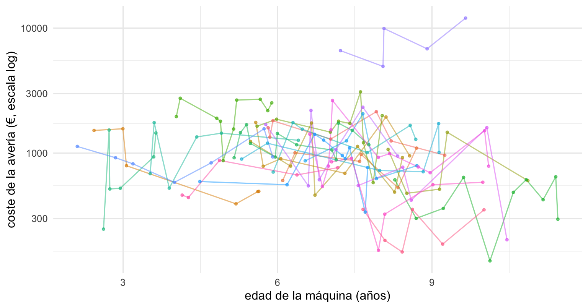
Figura 11: Coste de reparación (eje log) frente a la edad de la máquina, para 24 máquinas con varias averías (una línea y color por máquina). Las líneas se separan sobre todo en NIVEL —unas máquinas son caras avería tras avería, otras baratas: intercepto aleatorio— y con pendientes algo distintas —cada una encarece con la edad a su ritmo: pendiente aleatoria—.
Dos rasgos, dos piezas del modelo: las máquinas parten de niveles distintos (intercepto aleatorio) y encarecen con la edad a ritmos distintos (pendiente aleatoria en la edad) —esta última es, además, la señal que ya asomó en la 3.2, cuando la dispersión crecía débilmente con la antigüedad—.
3.2 El modelo mixto Gamma
Mantenemos la Gamma con enlace log de la Sección 3.1 —el coste sigue siendo positivo y asimétrico— y le añadimos los efectos aleatorios de máquina. Para la avería \(k\) de la máquina \(i\), \[\log \mu_{ik} = \underbrace{x_{ik}^{\top}\beta}_{\text{efectos fijos (los de 3.1)}}
\;+\; \underbrace{b_{0i} + b_{1i}\,\widetilde{\text{edad}}_{ik}}_{\text{máquina } i},
\qquad Y_{ik}\sim\text{Gamma}(\mu_{ik},\phi),\] donde \(b_{0i}\) es el intercepto aleatorio (máquinas crónicamente caras o baratas) y \(b_{1i}\) la pendiente aleatoria sobre la edad (cada máquina encarece a su ritmo). Usamos la edad centrada\(\widetilde{\text{edad}}=\text{edad}-\overline{\text{edad}}\), para que \(b_{0i}\) se lea como el nivel de la máquina a su edad típica y para estabilizar el ajuste. Lo ajustamos con glmmTMB, que admite la familia Gamma con estructura aleatoria flexible:
El summary de un GLMM trae más que el de un GLM. Además de los efectos fijos (bloque Conditional model, con sus \(z\) y \(p\)), muestra los componentes de varianza de los efectos aleatorios (bloque Random effects: desviación típica del intercepto y de la pendiente de máquina, y su correlación) y los estadísticos globales (AIC, dispersión, nº de averías y de máquinas). El término (1 + edad_c | id_maquina) pide precisamente ese intercepto y esa pendiente aleatorios por máquina. Arrastramos fabricante desde la 3.1 —donde entró provisionalmente, bajo sospecha de ser un falso positivo—; lo pondremos a prueba en la Sección 3.4, ahora que el agrupamiento sí está modelado.
🔧 En R. Cómo ajustar un GLM mixto
Un GLMM es un glm() al que se le añade estructura aleatoria en la fórmula. El paquete de referencia es glmmTMB (con la misma sintaxis, también lme4::glmer):
La clave está en la notación de los efectos aleatorios, (expr | grupo):
(1 | maquina) — intercepto aleatorio: cada máquina tiene su propio nivel.
(1 + x | maquina) — intercepto y pendiente de x, aleatorios y correlacionados.
(1 | maquina) + (0 + x | maquina) — los mismos, pero sin correlación (independientes).
(1 | a) + (1 | b) — efectos cruzados (cada fila pertenece a un a y a un b).
(1 | a/b) — efectos anidados (b dentro de a); equivale a (1 | a) + (1 | a:b).
Sobre la estimación: la verosimilitud de un GLMM integra sobre los efectos aleatorios y no tiene forma cerrada; glmmTMB la aproxima por Laplace (vía el motor TMB) y lme4 por Laplace o cuadratura de Gauss–Hermite adaptativa. La salida trae dos bloques —los efectos fijos (Conditional model) y los componentes de varianza de los aleatorios (Random effects)—; cómo leerlos en limpio, en el callout siguiente.
3.3 Interpretación
Un GLMM se lee en dos capas: los efectos fijos (la tendencia media de la población de máquinas) y los componentes de varianza (cuánta heterogeneidad hay alrededor).
🔧 En R. Salida ordenada con broom.mixed
summary() imprime todo en bruto; para tenerlo como con broom::tidy en un GLM, glmmTMB no trae método propio, pero broom.mixed sí:
broom.mixed::tidy(m) — efectos fijos y componentes de varianza en un único tibble; con effects = "fixed" o "ran_pars" te quedas con un bloque.
Efectos fijos ordenados (effects = "fixed"), con conf.int = TRUE y exponentiate = TRUE para el intervalo y la escala del factor\(e^{\beta}\) —así armamos la Tabla 19, como en 3.1—.
Componentes de varianza ordenados (effects = "ran_pars"): las desviaciones típicas de los efectos aleatorios y sus correlaciones en un tibble (es la Tabla 21). En formato de matriz de covarianzas, glmmTMB::VarCorr(m).
broom.mixed::glance(m) — una fila con AIC, BIC, logLik y deviance; y augment(m, data) pega a los datos los valores ajustados y los residuos.
Para la familia Gamma se prefiere glmmTMB a glmer: es más robusto y admite extensiones —modelar la dispersión, inflación de ceros, o la familia Tweedie de la Unidad 3.4—.
Efectos fijos. Se interpretan como en 3.1, de forma multiplicativa (\(e^{\beta}\) es el factor sobre el coste medio), con el matiz de que ahora valen «para una máquina dada». Los de nivel-avería (el tipo) apenas se mueven respecto de 3.1; en cambio los de nivel-máquina se reajustan —la criticidad y la carga suben, la edad baja—, porque ahora comparten variabilidad con el intercepto aleatorio: el modelo separa lo que es de la máquina de lo que es de la avería, y de paso da intervalos más anchos y honestos. Y fabricante, que arrastramos, asoma con factores próximos a 1 e intervalos que cruzan el 1: primer indicio de que sobra, que la selección confirmará.
Tabla 19: Efectos fijos del GLMM, exponenciados: factor multiplicativo sobre el coste medio, con intervalo de confianza de Wald al 95 %.
Componentes de varianza. Es la parte nueva —el bloque Random effects del summary (§3.2)—, y la que responde a «¿cuánta heterogeneidad entre máquinas?». Tres lecturas:
Intercepto de máquina. Su desviación típica —en torno a \(0{,}36\) en escala log— mide cuánto varía el nivel de coste entre máquinas: una máquina «crónicamente cara», una desviación por encima, sale sobre un \(e^{0{,}36}\approx 1{,}43\) —un 43 % más que la media, a igualdad de tipo, criticidad, fase, edad y carga—. Es la fragilidad de máquina, ahora con nombre y sitio.
Pendiente de máquina. Su desviación típica dice cuánto varía el ritmo al que el coste crece con la edad. Es pequeña, y es exactamente la heterogeneidad que en la 3.2 se colaba como una dependencia de la dispersión con la antigüedad: no era un defecto de la familia, era estructura de máquina.
Correlación intercepto–pendiente. El bloque trae además un número más sutil: la correlación entre el intercepto y la pendiente de cada máquina —aquí, positiva y moderada (\(\approx 0{,}56\))—. Diría que las máquinas más caras a la edad típica tienden también a encarecer algo más rápido con la edad. Su magnitud solo se lee en relación con las desviaciones típicas: cercana a \(\pm 1\), intercepto y pendiente serían casi redundantes (sabido el nivel, el ritmo queda determinado); cercana a 0, aportan información distinta. Ahora bien, es un número resbaladizo: como veremos en la Sección 3.4, la correlación entre efectos aleatorios depende de dónde se centre la edad, así que conviene interpretarla con mucha cautela.
3.4 Inferencia y selección
En un GLMM se infiere de forma distinta según el parámetro. Recorremos la lista, y de cada uno decimos cómo se contrasta y qué sale en nuestros datos:
Efectos fijos → el IC de Wald de cada coeficiente (confint), o anova entre modelos anidados o AIC+BIC para seleccionar variables.
Varianzas de los aleatorios → LRT con corrección de frontera (÷2) + AIC + BIC.
BLUP (los efectos de cada máquina) → predicción, no inferencia; los usamos en la Sección 3.5.
Efectos fijos y selección de variables
Tenemos dos vías para la inferencia:
La primera es el IC de cada efecto: confint da el intervalo de Wald de los coeficientes —en factor, es la Tabla 19: un factor cuyo IC no cruza el 1 es significativo—.
La segunda es anova, que compara modelos anidados y nos resulta útil, junto con los criterios AIC/BIC para la selección de variables. La tabla de contrastes por término lo resume (car::Anova, Wald tipo II, Tabla 20):
Código
car::Anova(m_glmm)
Tabla 20: Contrastes de Wald por término de los efectos fijos (car::Anova, tipo II).
Ahora todos los efectos sustantivos son significativos salvo fabricante —la cuenta pendiente de la Unidad 3.1—. Lo confirmamos comparando los dos modelos anidados (con LRT, AIC y BIC):
Código
m_sinfab <-update(m_glmm, . ~ . - fabricante) # el mismo modelo, sin fabricanteanova(m_sinfab, m_glmm)
El falso positivo de fabricante se disuelve (como anticipamos)
En la Unidad 3.1, con un modelo de efectos fijos, fabricante salía significativo y hasta bajaba el AIC —un espejismo de la pseudorréplica: las averías correlacionadas de cada máquina inflaban la evidencia—. Aquí, con el efecto aleatorio de máquina absorbiendo esa correlación, quitarlo no empeora el ajuste (LRT no significativo, y AIC y BIC bajan). No aporta —nunca aportó—: lo retiramos. Es la misma enfermedad que inflaba \(\hat\phi\), vista desde la selección de variables: ignorar la correlación no solo estima mal la incertidumbre, también hace elegir mal.
Seguimos pues la inferencia utilizando el modelo m_sinfab.
Tabla 21: Componentes aleatorios de máquina: desviaciones típicas del intercepto y de la pendiente (escala log del predictor) y su correlación.
La del intercepto es grande (sd \(\approx 0{,}36\)): la fragilidad de máquina es indudable. La de la pendiente, pequeña (sd \(\approx 0{,}07\)).
Para juzgar si la pendiente hace falta, puesto que la hipótesis nula \(\sigma^2=0\) se sitúa en la frontera del espacio de parámetros (\(\sigma^2\geq 0\)), el estadístico sigue una mezcla de \(\chi^2\) (\(\tfrac12\chi^2_0+\tfrac12\chi^2_1\), según Self & Liang (1987) y Stram & Lee (1994)): anova sale conservador, y el \(p\) correcto es aproximadamente la mitad de su valor. Para obtener un test razonable, comparamos intercepto solo frente a intercepto + pendiente (sin correlación, para aislar su varianza):
Código
# partimos de m_sinfab (ya sin fabricante) y cambiamos solo la estructura aleatoria:m_int <-update(m_sinfab, . ~ . - (1+ edad_c | id_maquina) + (1| id_maquina)) # solo interceptaciónm_uncorr <-update(m_sinfab, . ~ . - (1+ edad_c | id_maquina) + (1| id_maquina) + (0+ edad_c | id_maquina)) # interceptacion + pendienteanova(m_int, m_uncorr)
El \(p\) de anova queda al filo (\(\approx 0.054\)); con la corrección de frontera (÷2) baja a \(\approx 0.03\): la pendiente aleatoria es significativa, aunque pequeña —coherente con el DGP y con la señal que ya vimos en la dispersión de la Unidad 3.2—. Así que la mantenemos.
El mismo anova trae además AIC y BIC, que aquí discrepan —como suele pasar en el filo—: el AIC (penalización 2 por parámetro) baja al añadir la pendiente y la conserva; el BIC (penalización \(\log n\), más severa) sube y la descartaría. El LRT corregido y el diseño rompen el empate a favor de mantenerla.
El menú para contrastar la varianza de un efecto aleatorio
Todas comparan el modelo con el efecto aleatorio frente al modelo sin él:
LRT ingenuo (anova): válido, pero conservador —la varianza cae en la frontera—.
LRT + corrección de frontera (÷2): el \(p\) correcto es la mitad, porque la nula es una mezcla \(\tfrac12\chi^2_0+\tfrac12\chi^2_1\). Es lo que usamos.
Bootstrap paramétrico: no depende de la asíntota. Simula bajo el modelo sin el efecto, reajusta ambos y sitúa el LRT observado en esa distribución. Es la vía rigurosa, pero costosa (cientos de reajustes).
AIC / BIC: complementan —gana el criterio menor—, pero pueden discrepar en el filo (como aquí).
Así se aplicaría el bootstrap paramétrico de la pendiente (lo dejamos sin ejecutar por su coste —son cientos de reajustes—; basta poner eval: true para correrlo):
Código
set.seed(1)lrt_obs <-as.numeric(2* (logLik(m_uncorr) -logLik(m_int))) # LRT observadosim <-simulate(m_int, nsim =500) # respuestas bajo H0 (sin pendiente)lrt_boot <-vapply(sim, function(y) { d <-transform(base, coste_euros = y)as.numeric(2* (logLik(update(m_uncorr, data = d)) -logLik(update(m_int, data = d))))}, numeric(1))mean(lrt_boot >= lrt_obs, na.rm =TRUE) # p-valor bootstrap
El \(p\) que arroja ronda 0,03, en línea con la regla del ½: aquí la corrección de frontera no engaña.
Correlación intercepto–pendiente
Aquí 0 es un punto interior (una correlación vive en \([-1,1]\) y 0 no es un extremo), así que vale el anova\(\chi^2\) ordinario: el modelo con correlación (m_sinfab) frente al que la fuerza a 0 (m_uncorr):
Código
anova(m_uncorr, m_sinfab)
El contraste sí es muy significativo (\(p<0{,}001\)): en esta parametrización, nivel y ritmo covarían (\(\approx 0{,}56\)). Pero conviene un aviso de rigor que rara vez se cuenta: la correlación entre efectos aleatorios no es un número portátil —depende de dónde se centre la covariable—. Al anclar la edad en su media, el nivel «a edad típica» y la pendiente salen correlacionados; anclándola en otra edad, esa correlación cambiaría, e incluso cambiaría de signo. De hecho, la validación (§3.5) confirmará que el proceso generador produce el nivel y el ritmo de forma independiente. Por eso —parsimonia y fidelidad— nos quedamos sin correlación: un parámetro que se mueve con la parametrización no es una conclusión sólida sobre el sistema. La moraleja: una correlación entre aleatorios significativa no siempre es un hallazgo real y portable.
El modelo final es, por tanto, m_uncorr —intercepto y pendiente (no correlada) de máquina, sin fabricante—; lo renombramos para la sección siguiente:
Código
m_final <- m_uncorr
3.5 Bondad de ajuste, diagnóstico, validación y predicción
Bondad de ajuste
El \(R^2\) de un mixto se parte en dos (Nakagawa et al., 2017): el marginal (solo los efectos fijos) y el condicional (fijos + aleatorios). La distancia entre ambos mide cuánto aporta conocer la máquina.
El salto del \(R^2\) marginal al condicional es grande: para anticipar el coste de una avería, saber qué máquina es pesa tanto como sus covariables observadas. Ese salto es, en una cifra, el argumento de la unidad.
La misma idea, en un solo número, es el coeficiente de correlación intraclase (ICC): la fracción de la variabilidad —ya descontadas las covariables— que corresponde a estar en la misma máquina. Es la versión limpia de la descomposición cruda entre/dentro de la Sección 3.1:
Código
performance::icc(m_final)
Salen dos ICC. El ajustado (\(\approx 0{,}48\)) mide la fracción de la variabilidad no explicada por las covariables que corresponde a la máquina —casi la mitad—; el no ajustado (\(\approx 0{,}31\)) la mide sobre la variabilidad total, covariables incluidas. Los dos dicen lo mismo en una cifra: qué máquina es pesa muchísimo en por qué una reparación sale cara o barata. Es la versión limpia —ya descontadas criticidad, tipo, etc.— de la fuerte correlación intra-máquina que el modelo de efectos fijos ignoraba, y que por eso acababa inflando \(\hat\phi\) y estrechando los intervalos. La distinción ajustado/no ajustado importa: el primero responde «de lo que las covariables no explican, ¿cuánto es de la máquina?»; el segundo, «del total, ¿cuánto?».
Diagnóstico: residuos
En un GLMM los residuos crudos son aún menos informativos que en un GLM. Recurrimos otra vez a los residuos cuantil simulados de DHARMa, que saben tratar la estructura jerárquica:
Código
sim <- DHARMa::simulateResiduals(m_final, n =1000)plot(sim)
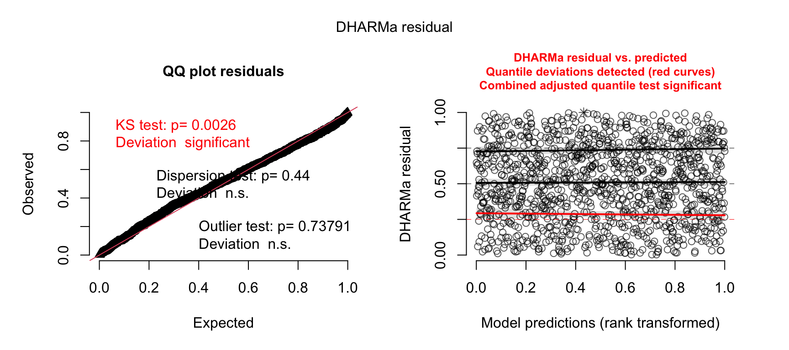
Figura 12: Diagnóstico DHARMa del GLMM Gamma. Izquierda: QQ-plot uniforme con los contrastes de bondad de ajuste. Derecha: residuos frente a predicho. Buscamos uniformidad y ausencia de estructura, ahora respetando el agrupamiento por máquina.
Lectura del gráfico. A la izquierda en la Figura 12, los puntos siguen la diagonal del QQ uniforme y los contrastes que DHARMa superpone —uniformidad (KS), dispersión y valores atípicos— no salen significativos; a la derecha, la nube de residuos frente al predicho no muestra estructura (ni abanico ni curvatura). El modelo ajusta bien: ahora que respeta el agrupamiento, han desaparecido los patrones que un GLM de efectos fijos dejaría en los residuos de máquinas repetidas.
Comprobación explícita de la dispersión (φ). El contraste de dispersión —el que aparece en el gráfico— merece sacarse aparte, porque es la forma de validar que φ está bien capturada, y —a diferencia de la validación contra el DGP de más abajo— funciona con datos reales, sin conocer la verdad:
Código
DHARMa::testDispersion(sim, plot =FALSE)
DHARMa nonparametric dispersion test via sd of residuals fitted vs.
simulated
data: simulationOutput
dispersion = 1.0831, p-value = 0.44
alternative hypothesis: two.sided
No es significativo: ni sobre- ni infradispersión. Es decir, una vez que los efectos aleatorios se llevan la variabilidad entre máquinas, lo que queda en los residuos es exactamente la dispersión que la Gamma espera. La \(\hat\phi\) que en 3.1 salía inflada (≈ 0,33) ha vuelto a su sitio —y lo confirmamos aquí sin necesitar el DGP; la validación de abajo lo rematará con la verdad en la mano—.
🔧 En R. Diagnóstico de residuos y dispersión en un GLMM
Los residuos cuantil de DHARMa (introducidos en la Unidad 3.1) valen también aquí, con una ventaja: sobre un modelo de glmmTMB, simulateResidualsrespeta la estructura jerárquica.
sim <- DHARMa::simulateResiduals(m, n =1000) # residuos simulados, respetando el agrupamientoplot(sim) # QQ uniforme + residuos vs. predicho
Lo nuevo del GLMM es comprobar que los efectos aleatorios han dejado la dispersión en su sitio:
sigma(m)^2# estimación de phi (en la Gamma, Var = phi * mu^2)DHARMa::testDispersion(sim) # contraste de sobre/infradispersión
Un testDispersionno significativo indica que la variabilidad entre máquinas ya la absorben los aleatorios y lo que queda es la de la familia. Es la comprobación válida con datos reales, sin conocer la verdad.
Validación contra el DGP
La ventaja de los datos simulados: ahora validamos también los componentes de varianza, no solo los efectos fijos (Tabla 22).
Tabla 22: Componentes de varianza y dispersión estimados frente a la verdad del proceso generador. φ es la dispersión que estima el propio modelo (el «sigma^2» que imprime el summary).
Los tres se recuperan bien: el intercepto de máquina muy cerca de la verdad, la pendiente prácticamente en el clavo (con pocas averías por máquina esa varianza es difícil de precisar —lo que explica que su contraste quedara al filo—), y —lo esencial— el parámetro de dispersión\(\hat\phi\)cae de los \(\approx 0.33\) inflados de la 3.1 a \(\approx 0.17\), prácticamente el verdadero \(0.167\). La razón es la que veníamos anunciando: la variabilidad entre máquinas ya no tiene que esconderse dentro de \(\phi\), porque tiene su propio nivel. El círculo que abrimos en la 3.1 —\(\hat\phi\) inflada, intervalos demasiado estrechos, un control que salía «significativo» sin serlo— se cierra aquí.
Predicción: marginal y condicional
Un modelo mixto predice en dos niveles, y conviene no confundirlos:
La predicción marginal usa solo los efectos fijos (re.form = NA): responde por una máquina cualquiera del perfil dado. Es la única que da un GLM (la predicción que conseguíamos en la Unidad 3.1): no hay máquina concreta que añadir.
La predicción condicional añade los efectos aleatorios de una máquina concreta —sus BLUP— (re.form = NULL): responde por esa máquina. La Figura 13 pone las dos una al lado de la otra.
Figura 13: Coste medio predicho frente a la edad. En negro, la predicción MARGINAL (población, re.form = NA); en color, las CONDICIONALES de seis máquinas concretas (con sus efectos aleatorios, re.form = NULL). Las condicionales se separan sobre todo en nivel —unas máquinas caras, otras baratas— y con pendientes algo distintas.
Añadir el efecto aleatorio desplaza la curva a la altura de cada máquina (y le da su pendiente): la marginal responde «¿cuánto cuesta reparar una máquina cualquiera de este perfil?»; la condicional, «¿cuánto costará reparar esta máquina?» —para decidir sobre una unidad concreta, p. ej. si conviene sustituirla—. Un GLM solo da la primera; el efecto aleatorio es lo que hace posible la segunda.
Dos matices importan al leer estas curvas. Primero, los efectos por máquina que suma la condicional son BLUP, estimaciones encogidas hacia la media: una máquina con pocas averías se acerca al comportamiento medio (menos datos, menos confianza en su nivel propio), y solo las que acumulan muchas se despegan del promedio —por eso las condicionales son prudentes, no exageradas—. Segundo, y aquí reaparece Jensen (como en la retransformación de la Unidad 3.2): con enlace log, la predicción marginal \(e^{x^\top\hat\beta}\) es la de la máquina típica (efecto aleatorio nulo), que por la asimetría es la mediana, no la media poblacional. Promediar el coste sobre todas las máquinas da algo mayor —un factor \(e^{\sigma^2/2}\) con \(\sigma^2\) la varianza del intercepto aleatorio; aquí, un ~7 % más—. Para presupuestar la flota entera, conviene tenerlo en cuenta.
🔧 En R. Predicción en un GLMM
Predicción marginal (solo efectos fijos, la máquina «típica»): predict(m, newdata, type = "response", re.form = NA).
Predicción condicional (añade los efectos aleatorios de cada máquina, sus BLUP): predict(m, newdata, type = "response", re.form = NULL) —el newdata debe traer la columna de grupo (id_maquina)—. Con re.form = ~(1 | id_maquina) se incluye solo parte de la estructura aleatoria.
Los efectos por grupo, si los quieres ver: ranef(m) (los BLUP) y fixef(m) (los fijos).
Tarea del estudiante (3.3) · qué te llevas al estudio de caso
El efecto aleatorio no es un adorno: en esta unidad ha resuelto una \(\hat\phi\) inflada y un falso positivo. Esa es la herramienta que la cartera te va a pedir.
Propuesta 4 · ¿Hay agencias caras?(unidad base). Un GLMM Gamma sobre coste_k con (1 | id_agencia), la misma estructura que aquí con (1 | id_maquina). Ensaya aquí las tres lecturas que allí necesitarás: el contraste de frontera para \(\sigma_u\), los BLUP con su caterpillar, y la diferencia entre predicción condicional y marginal.
Propuesta 1 y Propuesta 7. En ambas los datos vienen agrupados —varios partes por póliza, varios años por póliza—; ignorarlo produce los errores estándar optimistas que esta unidad ha diagnosticado.
Aviso. Antes de dar por hecho que un agrupamiento actúa sobre una respuesta, compruébalo: que n_gestiones tenga efecto de agencia no obliga a que coste_k lo tenga. Esa comprobación es la propuesta 4.
4 · El coste agregado: la familia Tweedie
Las tres unidades anteriores han contestado bien a una pregunta muy concreta: cuánto cuesta una avería. Pero esa no es la pregunta que haría la dirección de la fábrica. La suya es presupuestaria: ¿cuánto costará el mantenimiento el año que viene? Y para responderla no basta con el importe de una reparación, porque el gasto anual de una máquina depende de dos cosas a la vez: cuántas veces se avería y cuánto cuesta cada avería.
Esa composición cambia por completo el tipo de dato. El coste de una avería era una magnitud positiva y asimétrica —el terreno de la Gamma—. El coste anual de una máquina, en cambio, es cero cuando no ha fallado, y solo entonces toma valores positivos. Es una respuesta mitad discreta y mitad continua, con la mitad de las observaciones exactamente en el cero, y ninguna de las familias vistas hasta ahora la genera: la Gamma no admite el cero y la Poisson no es continua.
La unidad recorre ese problema en tres movimientos. Primero identifica la familia que falta, completando el mapa de la Unidad 3.2 —resulta que las familias que conocemos ocupan puntos sueltos de una misma recta, y el coste agregado vive en el hueco—. Después la pone a trabajar sobre el banco y responde a la pregunta del presupuesto, con su cifra y su margen. Y por último reconoce lo que las tres unidades anteriores ya habían encontrado —que las máquinas no son intercambiables— y comprueba qué cambia al modelarlo.
Sobre esta unidad
Objetivo general: modelar una respuesta continua positiva con masa en el cero, que es lo que resulta de agregar por periodos una magnitud que solo aparece cuando ocurre un evento. La familia es la Tweedie (Poisson–Gamma compuesta), y su interés no es solo técnico: es la síntesis de frecuencia y severidad en un único modelo, y por tanto el punto donde el Caso 2 y el Caso 3 se juntan. En seguros, esa misma composición se llama prima pura.
Los datos cambian: dejamos averias —una fila por avería— y pasamos a banco$panel, con una fila por máquina y año y el coste total como respuesta. El seguimiento mensual solo lo usaremos para recuperar la edad de cada máquina en cada año.
4.1 El hueco en la recta de las varianzas
Un dato que no encaja en ninguna familia
La pregunta de la dirección —¿cuánto costará el mantenimiento el año que viene?— tiene su tabla natural en el banco: panel, la última de las cinco vistas, con una fila por máquina y año. Sus columnas:
Columna
Qué representa
id_maquina, anio
la máquina y su año de seguimiento (1–4)
coste_total
la suma de los costes de reparación de ese año (€); vale 0 si no hubo averías — la respuesta
n_averias
nº de averías del año (la frecuencia que hay detrás del coste)
exposicion
fracción del año en observación (las altas escalonadas la reducen) — el offset
Hay 1531 máquina-años (no \(400\times4 = 1600\): las máquinas de alta tardía aportan menos años), y el retrato de la respuesta es peculiar: la mitad de las filas valen exactamente cero (49.9 %) y la otra mitad son importes positivos y asimétricos —media de 1957 € con un máximo de 20191 €—. Una sola máquina lo resume:
M002 alterna años a cero (sin averías) con años de más de mil euros, y su último año enseña la composición: dos averías, 1219 € entre ambas. Ese es el perfil típico del panel:
Figura 14: Distribución del coste anual por máquina: la mitad de los máquina-años no registran avería (coste 0) y el resto forma una cola positiva y asimétrica (derecha, eje log). Ninguna familia del curso genera esta mezcla de masa en cero y densidad continua positiva.
Y aquí está el problema que plantea la Figura 14: ninguna familia del curso genera este dato —esa mezcla de una barra en el cero y una densidad continua a su derecha—. La Gamma y la inversa gaussiana viven en \((0,\infty)\) —su densidad ni siquiera está definida en el cero, y el log-OLS de la Unidad 3.2 tropieza con \(\log(0)\)—. La Poisson es de conteos, no de importes continuos. Y la gaussiana no respeta ni el soporte ni la asimetría. Podríamos partir el problema en dos —¿hay coste? y ¿cuánto?—, pero antes conviene mirar el cero de cerca, porque no es un dato aparte: es el mismo mecanismo. Un año cuesta 0 exactamente cuando la máquina no falla, \(\Pr(\text{coste}=0)=\Pr(N=0)\):
Con la tasa media de 0.8 averías por máquina-año, una Poisson homogénea pondría el 44.8 % de los años a cero; observamos el 49.9 %. Ese exceso de ceros es una vieja conocida —la huella de la heterogeneidad entre máquinas, la misma que en el Caso 2 hinchaba los ceros de los conteos—, y el resto de la fila lo confirma: el cero del coste y el importe positivo son las dos caras de la pareja frecuencia × severidad que este caso lleva trabajando desde el principio.
La recta de las varianzas, completada
La Unidad 3.2 nos dio la regla para estas situaciones: las familias se distinguen por su función de varianza, \(\operatorname{Var}(Y)=\phi\,\mu^{p}\), y elegir familia es, en buena medida, elegir la potencia \(p\). Allí la recta tenía tres paradas (1, 2 y 3) porque el coste por avería no necesitaba más; el curso completo da para el mapa entero:
(No todas las familias viven en esta recta: la binomial, \(\operatorname{Var}=\mu(1-\mu)/n\), y la binomial negativa, \(\operatorname{Var}=\mu+\mu^2/\theta\), tienen funciones de varianza propias; la recta ordena las de tipo potencia.)
El hueco \(1<p<2\) no está vacío. Tweedie (1984) demostró que para cada \(p\) fuera de \((0,1)\) existe una familia de dispersión exponencial con esa función de varianza —hoy se llaman modelos Tweedie(Jørgensen, 1987, 1997)—, y las de \(1<p<2\) son exactamente lo que buscamos: la Poisson–Gamma compuesta. Su receta es literalmente la de nuestro coste anual:
el número de averías del año por el coste de cada una. ¿Y dónde viven aquí los ceros? En un detalle fácil de pasar por alto: la suma puede tener cero sumandos, y una suma vacía vale 0. Se ve condicionando en \(N\):
si \(N = 0\) —con probabilidad \(e^{-\lambda}\)—, no hay nada que sumar y \(S = 0\)exactamente: una masa puntual en el cero, el año sin averías;
si \(N = k \ge 1\), la suma de \(k\) Gammas i.i.d. de forma \(\alpha\) es otra Gamma, de forma \(k\alpha\): los positivos que el histograma muestra como «una densidad» son en realidad una mezcla de Gammas ponderada por la Poisson.
La suma hay que recorrerla entera —el dato agregado no dice cuántas averías hubo—, y ahí está el precio de esta familia: no es una fórmula que se cierre en dos líneas, y la Tweedie no tiene densidad en forma cerrada. La escribiremos del todo, con sus parámetros atados al predictor, al plantear la verosimilitud en la Sección 4.2, que es donde importa saber evaluarla. Retengamos aquí lo que sí cierra el argumento de esta sección: la forma de cada Gamma es \(\alpha=(2-p)/(p-1)\), de modo que fijar \(p\) es fijar la forma de la mixtura entera.
M002 es la mixtura en miniatura: sus dos años a 0 € son años con \(N=0\), y su último año —dos averías, 1219 € entre ambas— es una realización de la Gamma de forma \(2\alpha\). Y nótese lo que separa esta construcción de los modelos «con cero» del Caso 2 (hurdle, ZIP): aquí el cero y los positivos no tienen parámetros separados. Los gobierna el mismo \(\lambda\): una covariable que sube la frecuencia reduce a la vez los ceros (\(e^{-\lambda}\) baja) y sube el coste esperado, todo con un único predictor lineal. Es un solo mecanismo, no dos modelos pegados.
La varianza de \(S\) es \(\phi\,\mu^{p}\) con \[p \;=\; \frac{\alpha+2}{\alpha+1}\;\in\;(1,2),\] más cerca de 1 cuanto más «Poisson» es la mezcla (costes poco variables) y más cerca de 2 cuanto más pesa la Gamma. Y como es una familia de dispersión exponencial, es un GLM de pleno derecho: enlace log, offset de exposición, deviance y todo el recetario del curso siguen valiendo. Es la síntesis hecha distribución: la frecuencia del Caso 2 y la severidad de este caso, compuestas en una sola respuesta —en seguros, la prima pura(Smyth & Jørgensen, 2002)—. Su único peaje es el computacional que acabamos de anticipar, y lo pagará el software por nosotros.
La pendiente del panel
¿Está nuestro coste anual de verdad en el hueco? La regla empírica de la Unidad 3.2 sale del propio enunciado de la familia: si \(\operatorname{Var}(S)=\phi\,\mu^{p}\), al tomar logaritmos
una recta de pendiente \(p\) en escala log-log. Para dibujarla hacen falta muchos pares (media, varianza), y estimar cada par exige réplicas de una misma unidad. El panel las trae de serie: cada máquina aporta hasta cuatro costes anuales. El plan, por tanto: un punto por máquina —la media y la varianza de sus máquina-años—, y sobre esa nube una regresión de \(\log(\text{varianza})\) sobre \(\log(\text{media})\), cuya pendiente estima \(p\).
Código
# un punto por maquina: media y varianza de sus (hasta 4) costes anualesmv_panel <- pn |> dplyr::group_by(id_maquina) |> dplyr::summarise(media =mean(coste_total), varianza =var(coste_total), .groups ="drop") |> dplyr::filter(media >0, varianza >0) # sin averia en todo el seguimiento no hay# punto: media y varianza 0 no tienen logaritmo# en log-log, la pendiente de la recta estima la potencia p de Var = phi * mu^pajuste_p <-lm(log(varianza) ~log(media), data = mv_panel)round(c(maquinas =nrow(mv_panel), pendiente =coef(ajuste_p)[["log(media)"]],IC_inf =confint(ajuste_p)["log(media)", 1],IC_sup =confint(ajuste_p)["log(media)", 2]), 2)
El filtro descarta las 47 máquinas que no registraron avería alguna en los cuatro años —su media y su varianza son exactamente cero— y deja 353 puntos. La Figura 15 superpone a esa nube las dos pendientes que delimitan el hueco —\(p=1\) (Poisson) y \(p=2\) (Gamma), ancladas al centroide para que solo se compare la inclinación— y la recta ajustada:
Código
# rectas de referencia: misma pendiente p que la familia, intercepto anclado al# centroide de la nube (asi la comparacion visual es solo de inclinacion)refs <- tibble::tibble(p =c(1, 2),familia =c("p = 1 (Poisson)", "p = 2 (Gamma)"),intercepto =mean(log10(mv_panel$varianza)) - p *mean(log10(mv_panel$media)))ggplot(mv_panel, aes(media, varianza)) +geom_abline(data = refs, aes(slope = p, intercept = intercepto, colour = familia),linetype =2, linewidth =0.6) +geom_point(alpha =0.45, size =1.3) +geom_smooth(method ="lm", se =FALSE, colour ="black", linewidth =0.7) +scale_x_log10() +scale_y_log10() +scale_colour_manual(values =c("grey55", "firebrick")) +labs(x ="media del coste anual por máquina (€, log)",y ="varianza por máquina (log)", colour =NULL)
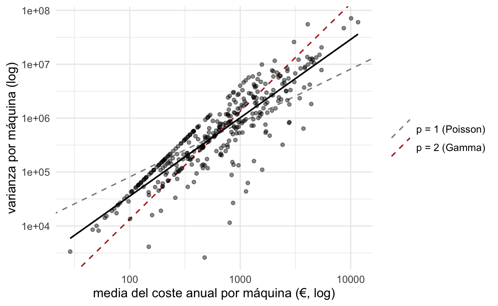
Figura 15: Relación media-varianza del coste anual, una máquina por punto, en escala log-log, con las pendientes de referencia p = 1 (Poisson) y p = 2 (Gamma). La recta ajustada (negra) cae entre ambas: el coste anual vive en el hueco de la recta de varianzas.
La pendiente sale 1.45, con intervalo \((1.37,\ 1.54)\): ni la Poisson (\(p=1\)) ni la Gamma (\(p=2\)) —en la Figura 15, la recta negra queda visiblemente entre las dos de referencia: de lleno en el hueco—.
En R: estimar la potencia de la relación media-varianza
Es la técnica de la Unidad 3.2, aquí con el agrupamiento que dan las réplicas del panel.
mv <- datos |># un punto por unidad con réplicas dplyr::group_by(id) |> dplyr::summarise(media =mean(y), varianza =var(y)) |> dplyr::filter(media >0, varianza >0) # sin logaritmo de cerocoef(lm(log(varianza) ~log(media), data = mv))[2] # la pendiente estima p
Hacen falta réplicas: sin varias observaciones por unidad no hay varianza que calcular. Si no las hay —como en 3.2, con una fila por avería—, se agrupa por deciles del valor ajustado (dplyr::ntile(fitted(modelo), 10)), que es la variante clásica (McCullagh & Nelder, 1989, párr. 12.6.2).
El filtro no es cosmético: las unidades sin ningún positivo tienen media y varianza cero, y no admiten logaritmo. Conviene contar cuántas se pierden y decirlo.
Para dibujarlo: scale_x_log10() + scale_y_log10() y rectas de referencia con geom_abline(slope = p), ancladas al centroide de la nube (mean(log10(v)) - p*mean(log10(m))) para que la comparación sea solo de inclinación.
Léase como exploración: la pendiente es marginal —mezcla la varianza condicional con la heterogeneidad entre unidades— y sirve para acotar el terreno, no para fijar \(p\). El \(p\) bueno lo estima el modelo por máxima verosimilitud.
En la Unidad 3.2 esta misma regla señaló la Gamma para el coste por avería; agregado al año, con sus ceros, el dato pide la familia que faltaba. Y no conviene pedirle a esta pendiente más de lo que da: es una exploración marginal —compara máquinas heterogéneas entre sí—, y su papel termina en acotar el terreno. La palabra definitiva sobre \(p\), condicional y por máxima verosimilitud, la tendrá el modelo.
4.2 El presupuesto: la Tweedie en acción
Los datos: cambiamos de tabla
Conviene decirlo con claridad, porque cambiamos de terreno. Las Unidades 3.1–3.3 trabajaron sobre averias —una fila por avería, con su importe—. Desde la Sección 4.1 trabajamos sobre pn, el panel anualbanco$panel: 1531 filas máquina-año, y la respuesta ya no es un evento sino un euro (coste_total). El cambio no es un capricho: la pregunta es presupuestaria, y un presupuesto se hace por años, no por meses.
Un detalle práctico antes de modelar: la edad no está entre las columnas de pn —que trae la respuesta, la exposición y las covariables basales de la máquina—, y sí en sg, como antiguedad. Pero no basta con copiarla de una tabla a otra, porque no tienen la misma granularidad: sg da una edad por mes (doce valores para cada máquina-año; en M227 iban de 5.33 a 6.32) y aquí necesitamos una por máquina-año. Hay que agregar, y el resumen natural es la media: la edad a mitad del periodo que la fila representa —coherente con que los meses observados son los que cuenta la exposición—.
Código
# de granularidad mensual (sg) a anual (pn): edad media del año observado.# El año de calendario del estudio es el mismo en las dos tablas.sg <- banco$seguimiento # panel mensual; aquí solo lo usamos para la edadsg$anio <- sg$tstart %/%365+1edad_my <-aggregate(antiguedad ~ id_maquina + anio, data = sg, FUN = mean)names(edad_my)[3] <-"edad"pn <-merge(pn, edad_my, by =c("id_maquina", "anio"), all.x =TRUE)c(filas =nrow(pn), edad_NA =sum(is.na(pn$edad)))
filas edad_NA
1531 0
Las 1531 filas se emparejan sin un solo NA: las dos tablas describen exactamente los mismos máquina-años, como debe ser —salen del mismo banco—.
Qué predictores, y por qué
¿Qué covariables tiene sentido meter en el modelo? La respuesta no se improvisa: se apoya en lo que ya sabemos del caso y en lo que enseñan los datos antes de ajustar nada.
Lo que sabemos: el coste anual es la composición de dos procesos que este caso ya ha modelado por separado —o los modelará—, y disponemos de las covariables candidatas de cada uno. Del lado del riesgo, lo que el Caso 2 enseñó sobre frecuencias y lo que la ficha de la máquina permite anticipar: la edad, la carga y el mantenimiento —las mismas que las Unidades 3.5 y 3.6 usarán para modelar el tiempo entre fallos—. Del lado del coste por avería (Unidades 3.1–3.3): el tipo de avería, el proceso y la criticidad. Dos de ellas —edad y carga— salieron en los dos. La lista de candidatas para el coste anual es, pues, la unión de ambas, con dos ajustes prácticos: tipo_averiano puede entrar (es un atributo de cada avería, no de la máquina-año: en un año con tres averías habría tres tipos), y fabricante entra como control —el curso lo ha tratado así desde el Caso 1, y conviene ver qué hace aquí—.
Lo que enseñan los datos: antes de modelar, miremos cómo se mueve el coste anual con cada candidata. Como la exposición varía, comparamos euros por año de exposición, y añadimos el porcentaje de años a cero, que es la otra mitad de la historia:
Tabla 23: Exploración previa: coste por año de exposición (€) y porcentaje de máquina-años sin ninguna avería, según cada covariable candidata (las continuas, por cuartiles). Todas separan, y algunas mueven a la vez el gasto y la proporción de ceros.
Código
p1 <- pn |> dplyr::mutate(bin =cut(edad, breaks =c(0, 2, 4, 6, 8, 12))) |> dplyr::group_by(bin) |> dplyr::summarise(eur =sum(coste_total) /sum(exposicion), .groups ="drop") |>ggplot(aes(bin, eur)) +geom_col(fill ="steelblue") +labs(x ="edad de la máquina (años)", y ="€ por año de exposición")p2 <- pn |> dplyr::group_by(criticidad, plan_mantenimiento) |> dplyr::summarise(eur =sum(coste_total) /sum(exposicion), .groups ="drop") |>ggplot(aes(criticidad, eur, fill = plan_mantenimiento)) +geom_col(position ="dodge") +scale_fill_manual(values =c("firebrick", "steelblue")) +labs(x =NULL, y =NULL, fill =NULL)p1 + p2
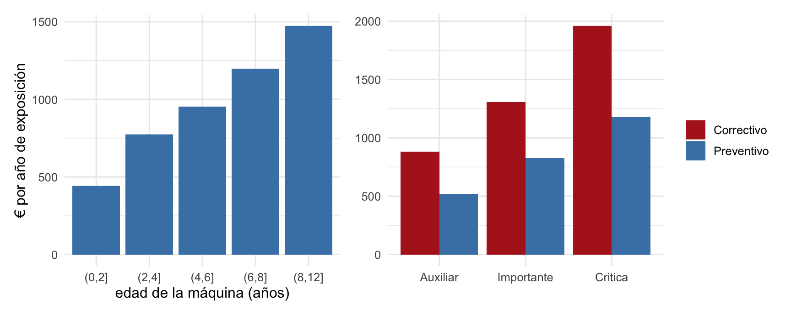
Figura 16: Coste anual por euro de exposición según la edad de la máquina (izquierda) y según criticidad y plan de mantenimiento (derecha). La edad marca la tendencia más fuerte; la criticidad ordena el gasto de menor a mayor, y el plan preventivo lo reduce en los tres niveles.
La exploración respalda la lista y adelanta lo que el modelo tendrá que cuantificar. En la Tabla 23, el gasto casi se triplica entre las máquinas más nuevas y las más viejas (539 € frente a 1486 € por año, con los años sin avería cayendo del 66 % al 38 %) —la tendencia más nítida, y la que dibuja el panel izquierdo de la Figura 16—; la criticidad ordena el gasto de menos a más (724 / 1100 / 1512 €); el plan preventivo lo baja de 1204 € a 780 € y sube los años sin avería del 41 % al 60 %, y el panel derecho de la Figura 16 muestra que esa rebaja se repite dentro de cada nivel de criticidad; y el proceso separa a Ensamblaje y Acabado (≈ 1300 €) de Lijado (646 €). La carga es la más floja de las candidatas: en la Tabla 23 sube de 867 € a 1094 € entre cuartiles extremos, pero sin orden monótono (el segundo cuartil es el más caro, 1147 €). Y el fabricante, que no debería hacer nada, muestra diferencias pequeñas (912–1139 €) —téngalas presentes: volverán—.
Un aviso sobre cómo leer esta tabla: son comparaciones crudas, una covariable cada vez, y las covariables están enredadas entre sí (el plan preventivo, recordemos, se asignó a las máquinas viejas y críticas, Unidad 3.1). Que el preventivo aparezca más barato pese a cubrir las máquinas de más riesgo ya insinúa un efecto real, pero solo el modelo, ajustando todo a la vez, puede separarlos.
El modelo
La Sección 4.1 identificó la familia; toca escribir el modelo. Para la máquina \(i\) en el año \(t\), con exposición \(e_{it}\) (fracción de año observada), el coste anual es
Es la estructura GLM de siempre —enlace log y offset—, y conviene ver dónde vive cada parámetro, porque no todos hacen lo mismo:
\(\boldsymbol\beta\) (con \(\beta_0\)) está en la media: son los efectos de las covariables sobre el coste anual esperado, la parte que se interpreta;
\(\phi\) y \(p\) no aparecen en la media: viven en la función de varianza\(\phi\,\mu^{p}\) —la misma expresión con la que la Sección 4.1 ordenó todas las familias del curso—. \(\phi\) es la dispersión, como en la Gamma de la Unidad 3.1; \(p\) es el índice, que aquí no se fija de antemano, sino que se estima: dirá en qué punto del hueco \((1,2)\) cae el coste anual.
Que \(p\) sea un parámetro tiene más alcance del que parece, porque no solo gradúa la varianza: fija toda la forma de la mixtura. La forma de la Gamma de las averías individuales es \(\alpha = (2-p)/(p-1)\), y con ella queda determinada la partición entre el cero y los positivos. Estimar \(p\) es, por tanto, dejar que los datos decidan cuánto de Poisson y cuánto de Gamma hay en el coste anual.
Y hay un regalo escondido en la estructura compuesta. Con enlace log, el coste esperado se factoriza en sus dos canales —frecuencia por severidad—,
—con \(\lambda\) y \(\mu_Y = \alpha\theta\) los de la mixtura de la Sección 4.1—, de modo que el coeficiente de una covariable en la Tweedie es la suma de sus dos efectos: el que tiene sobre el riesgo de fallar —la frecuencia, que el Caso 2 modeló con una Poisson— y el que tiene sobre el coste de cada avería (la Gamma de la Unidad 3.1).
Eso responde a la pregunta obvia sobre el predictor —¿uno para la frecuencia y otro para la severidad?—: no; hay un único \(\mathbf{x}\), y en él entran todas las candidatas de la subsección anterior: edad, carga, proceso, criticidad, plan_mantenimiento y fabricante.
Y con ello, la pregunta que viene detrás: ¿cómo decide el modelo qué covariable actúa sobre la frecuencia y cuál sobre la severidad? La respuesta es tajante y conviene decirla pronto: no lo decide, y no puede decidirlo. Él solo ve una columna de costes anuales y un predictor, y de cada covariable estima su efecto total sobre el coste anual, sin preguntarse por qué vía llega. La razón es de fondo: el dato está agregado. Un año con 2400 € puede ser una máquina que falla mucho con reparaciones baratas o una que falla poco con reparaciones caras; el coste_total no distingue, y sin esa información la descomposición no está en los datos. Cuánto cuesta esa renuncia lo vemos, con números, tras el ajuste.
¿Y por qué no «dos modelos», uno para el cero y otro para el importe?
Se puede: un modelo en dos partes (hurdle) ajusta un binario «¿hubo coste?» y una Gamma para el importe positivo —la estrategia del exceso de ceros del Caso 2—. La diferencia es de supuesto: el hurdle da a ceros y positivos parámetros separados (útil si el cero tiene un mecanismo propio: máquinas paradas, contratos sin cobertura…); la Tweedie los liga a través de \(\lambda\), porque entiende el año a cero no como un fenómeno aparte, sino como el mismo proceso de averías cuando \(N=0\). A mecanismo único, modelo único —y con la mitad de parámetros—.
El ajuste: verosimilitud y estimación
La estimación es por máxima verosimilitud, y la verosimilitud tiene la forma que anticipa la mixtura: cada máquina-año contribuye con la masa del cero o con la densidad del positivo,
Cada sumando \(W_k\) es «probabilidad de que haya \(k\) averías por densidad de que esas \(k\) sumen \(s\) euros». Y conviene detenerse en lo que significan las tres igualdades de la derecha, porque son la clave de todo: \(\lambda\), \(\alpha\) y \(\theta\)no son parámetros libres. Basta mover \(\boldsymbol\beta\) —y con él \(\mu_{it}\)— para que cambien a la vez la frecuencia \(\lambda_{it}\) y la severidad \(\theta\) de cada máquina-año; \(\phi\) y \(p\) son comunes a todas las filas. Por eso el mismo \(\lambda_{it}\) aparece en los dos factores de \(L\): los ceros no se descartan ni se modelan aparte, entran en la verosimilitud con su propia probabilidad, y son ellos los que aportan buena parte de la información sobre la frecuencia. Ese acoplamiento es lo que permite estimar todo a la vez.
El único obstáculo es la suma infinita, que no tiene forma cerrada y hay que evaluar numéricamente —truncándola con cuidado, como explica el callout siguiente—. Con ella resuelta, la maximización es la de cualquier GLM.
Cómo se evalúa la suma infinita: el método de Dunn y Smyth
Una serie infinita no se puede evaluar; hay que truncarla. Pero truncar por la fuerza bruta —sumar los primeros \(M\) términos y parar— es mala idea, porque los sumandos \(W_k\)primero crecen y luego decaen: cortar pronto deja fuera justo los que más pesan, y cortar tarde es tirar tiempo de cálculo en cada una de las miles de evaluaciones que pide la maximización.
La observación de Dunn & Smyth (2005) es que ese máximo se puede localizar de antemano. Tratando \(\log W_k\) como función continua de \(k\) y derivando, el término dominante cae en
que es la misma expresión de \(\lambda\) evaluada en el dato\(s\) en lugar de en la media: cuanto más caro es el año, más averías está suponiendo la mixtura. Con los parámetros de nuestro ajuste, un año de 1500 € tiene su término dominante en \(k^{*}\approx 1\), uno de 5000 € en \(k^{*}\approx 2\) y uno de 20 000 € en \(k^{*}\approx 5\).
A partir de ahí la suma es finita: se recorre una ventana \(k \in [k^{*}-K,\ k^{*}+K]\) y se descartan los términos que caen por debajo de la precisión de la máquina, lo que en la práctica deja unas pocas decenas de sumandos —en nuestro caso, una ventana de \(\pm 10\) ya reproduce la densidad con diez cifras significativas—.
Queda un detalle numérico. En la parametrización \((\mu,\phi,p)\) los \(W_k\) no son probabilidades: pueden alcanzar magnitudes enormes —con \(\phi = 0.01\), el mayor ronda \(10^{1736}\), muy por encima del \(10^{308}\) que admite la doble precisión—. La solución es la habitual en verosimilitudes: trabajar en escala logarítmica, sacando el término dominante como factor común, \[\sum_k W_k \;=\; W_{k^{*}} \sum_k \exp\!\big(\log W_k - \log W_{k^{*}}\big),\] de modo que todos los sumandos quedan entre 0 y 1. Con nuestros datos —\(\hat\phi\approx 175\)— no había riesgo de desbordamiento, pero el algoritmo es el mismo.
Todo esto lo hace glmmTMB por nosotros; conviene saber que está ahí, porque explica que ajustar una Tweedie sea más lento que ajustar una Gamma: cada evaluación de la log-verosimilitud lleva dentro una de estas sumas por observación, y la maximización pide miles de evaluaciones.
glmmTMB hace las dos cosas y estima \(\boldsymbol\beta\), \(\phi\) y \(p\) conjuntamente:
Código
m_tw <-glmmTMB(coste_total ~ edad + carga + proceso + criticidad + plan_mantenimiento + fabricante +offset(log(exposicion)),family = tweedie, data = pn)summary(m_tw)
Merece la pena recorrer la salida por partes, porque es la primera vez que vemos un summary de esta familia:
La cabecera confirma qué se ha ajustado (Family: tweedie ( log )) y sobre qué fórmula y datos, con los criterios de ajuste global —AIC, BIC, logLik, -2*log(L)— que usaremos al comparar modelos, y los grados de libertad residuales (1517 = 1531 filas − 14 parámetros: los 12 coeficientes más \(\phi\) y \(p\)).
La línea Dispersion parameter for tweedie family da \(\hat\phi \approx 175\).
La tabla Conditional model es la de siempre —Estimate, Std. Error, z value, Pr(>|z|)—, con los coeficientes en escala log por el enlace. Cada uno es un efecto sobre el coste anual esperado, y su Wald contrasta \(H_0:\beta_j = 0\).
Falta justo el parámetro más característico de la familia: el summary no imprime \(p\). Hay que pedirlo aparte, y de paso recogemos \(\phi\) con precisión —los dos parámetros de la función de varianza, estimados, no fijados—:
Código
c(phi =sigma(m_tw), # dispersión: Var = phi * mu^pp =family_params(m_tw)[[1]]) # índice de la familia (family_params no lo llama "p")
phi p
174.576129 1.351448
\(\hat p = 1.35\) cae donde la familia lo exige, dentro de \((1,2)\): los datos, por su cuenta, han situado el coste anual en el hueco que la Sección 4.1 había señalado con una exploración. Volveremos sobre su valor exacto en la validación.
Interpretación
Con enlace log, la lectura es la multiplicativa de todo el caso, ahora sobre el coste anual esperado. De dónde sale, en una línea: deshacer el logaritmo convierte la suma del predictor en un producto de factores,
de modo que subir una covariable en una unidad —o pasar del nivel de referencia a otro nivel de un factor— multiplica el coste anual esperado por una cantidad que no depende de dónde se parta:
Por eso \(e^{\beta_j}\) se lee como «un \((e^{\beta_j}-1)\times 100\) % más (o menos) de gasto anual, a igualdad del resto», y por eso el offset\(e_{it}\) entra como un factor más: duplicar la exposición duplica el coste esperado. Conviene verlo en euros:
Tabla 24: Efectos multiplicativos sobre el coste anual esperado: exp(coeficiente) y su intervalo de confianza al 95 %. Un valor de 1.15 significa un 15 % más de gasto anual, a igualdad del resto.
De la Tabla 24 salen tres lecturas que la dirección entendería:
La edad es el motor. Cada año multiplica el gasto anual por \(e^{0.137}\approx 1.15\): un 15 % más por año cumplido, que compuesto sobre una década explica la diferencia que ya asomaba en la exploración.
La criticidad ordena el gasto. Una máquina Crítica cuesta al año \(e^{0.873}\approx 2.4\) veces lo que una Auxiliar comparable, y una Importante, 1.6 veces.
El mantenimiento preventivo se paga solo. Su factor es \(e^{-0.617}\approx 0.54\): casi la mitad de gasto anual, y ahora sí ajustado por edad y criticidad —recuérdese que el plan se asignó precisamente a las máquinas más viejas y críticas, así que la comparación cruda de la exploración lo perjudicaba—.
Un matiz importante de lectura, y es el que distingue a esta familia: estos factores actúan sobre el coste anual, no sobre el riesgo ni sobre el precio de una reparación. Que una Crítica cueste 2.4 veces más no dice si se avería más a menudo o si cada avería es más cara. Eso es justo lo que la Tweedie no puede separar —y merece su propio apartado—.
El precio del predictor único
Si el modelo estima el efecto total de cada covariable, ¿puede al menos decirnos cómo se reparte entre frecuencia y severidad? Sí y no, y la respuesta es de las que enseñan. Los dos canales se recuperan del ajuste —\(\hat p\) y \(\hat\phi\) bastan para despejarlos (Jørgensen, 1997)—:
mu <-fitted(m_tw)p_hat <-family_params(m_tw)[[1]] # el índice p (family_params no lo llama "p")phi_hat <-sigma(m_tw) # en tweedie, sigma() ES phi: Var = phi * mu^plambda <- mu^(2- p_hat) / (phi_hat * (2- p_hat)) # averías esperadas al añomu_Y <- (2- p_hat) * phi_hat * mu^(p_hat -1) # coste esperado por avería# frecuencia: averías esperadas al año, frente a la tasa observadac(lambda_modelo =round(mean(lambda), 2),observada =round(sum(pn$n_averias) /sum(pn$exposicion), 2))
lambda_modelo observada
0.73 0.80
Código
# severidad: coste esperado por avería, frente al observado en la tabla de averíasc(coste_averia_modelo =round(mean(mu_Y)),observado =round(mean(banco$averias$coste_euros)))
coste_averia_modelo observado
1210 1257
La descomposición es creíble: 0.73 averías esperadas al año frente a 0.80 observadas, y 1210 € por avería frente a 1257 € —el modelo, sin haber visto nunca una avería individual, reconstruye las dos piezas del mecanismo con solo el agregado anual—. Pero mírese la primera fórmula en escala log: \(\log\lambda = (2-p)\log\mu + \text{cte}\) y \(\log\mu_Y = (p-1)\log\mu + \text{cte}\). Como \(\log\mu\) es el predictor lineal, el reparto de cualquier coeficiente está decidido por \(p\), y por nada más:
\[\beta \;\longmapsto\; \underbrace{(2-p)\,\beta}_{\text{a la frecuencia}}
\;+\; \underbrace{(p-1)\,\beta}_{\text{a la severidad}} .\]
Con \(\hat p = 1.35\), el modelo manda el 65 % de todo efecto a la frecuencia y el 35 % a la severidad —de cada covariable, sin excepción—. Y ese es el precio: el reparto no lo estiman los datos, lo impone \(p\). Si en el proceso real una covariable actuara solo sobre el coste y nada sobre el riesgo, el modelo seguiría partiéndole el efecto 65/35, y acertaría en el total mientras falla en la descomposición. Si el reparto importa —y para decidir dónde intervenir, importa—, hay que separar los datos y ajustar dos modelos: una Poisson sobre n_averias y una Gamma sobre el coste por avería. La Tweedie es el modelo del presupuesto, no el del diagnóstico de por qué sube. En la validación comprobaremos hasta qué punto el reparto impuesto se aleja del verdadero.
Inferencia
Los Wald de la tabla anterior contrastan coeficientes uno a uno, lo que deja mal cubiertos a los factores de varios niveles: proceso gasta cuatro coeficientes y criticidad dos, y la pregunta relevante no es si un nivel concreto difiere de su referencia, sino si el factor entero aporta. Eso es un contraste de razón de verosimilitudes, término a término:
Código
drop1(m_tw, test ="Chisq")
Tabla 25: Contraste de razón de verosimilitudes por término (cada uno frente al modelo sin él). Todos los términos aportan; el fabricante lo hace de forma marginal.
En la Tabla 25 todos los términos aportan, pero con jerarquías muy distintas: edad domina (\(\chi^2\approx 105\) con 1 g.l.), seguida de criticidad (\(\approx 79\) con 2) y plan (\(\approx 61\) con 1); el proceso aporta con holgura (\(\approx 37\) con 4) y la carga, más modestamente (\(\approx 12\), \(p\approx 5\times10^{-4}\)) —coherente con lo poco que separaba en la exploración—.
El fabricante también supera el 5 % (\(\chi^2\approx 7.8\) con 2 g.l., \(p\approx 0.02\)), y no es la primera vez que un control sin efecto aparenta tenerlo: es el patrón que el Caso 1 y el Caso 2 ya mostraron, y que se repite siempre en el mismo escenario —efectos fijos sobre filas repetidas por la misma unidad—. Sigamos, que el diagnóstico tiene algo que decir al respecto.
Queda una pregunta que en esta familia no es menor: ¿y la incertidumbre de \(\phi\) y \(p\)? Los dos son parámetros estimados como cualquier otro, así que también deberían tener intervalo —solo que summary no lo imprime—. Se los pedimos a confint, que con full = TRUE va más allá de los coeficientes:
Código
ic <-confint(m_tw, full =TRUE) # más allá de los coeficientes: dispersión y familiaic[!grepl("^cond\\.", rownames(ic)), , drop =FALSE]
La dispersión sale con su intervalo, \(\hat\phi = 174.6\) con IC 95 % \((149.5,\ 203.9)\): bien determinada y lejos de cualquier frontera. Pero el índice \(p\) no aparece, y no es un descuido nuestro: confint cubre coeficientes y dispersión, no el parámetro de familia. Para él, la vía natural es el perfil de verosimilitud —reajustar el modelo con \(p\) fijado en una rejilla de valores e invertir el contraste—, que además es más fiable que un Wald para un parámetro acotado a \((1,2)\). No es un trámite ocioso: en la validación compararemos \(\hat p\) con el valor que dicta el mecanismo, y ahí la anchura del intervalo es justamente lo que está en juego.
Para los efectos, en cambio, los intervalos ya los teníamos —exponenciados y listos para leer en euros— en la Tabla 24.
Bondad de ajuste
¿Cuánto mejora este modelo sobre no saber nada? Y, más importante para un presupuesto: ¿acierta en las magnitudes que va a predecir? Empecemos por lo global, comparándolo con el modelo nulo —solo intercepto y exposición—:
Tabla 26: Ajuste global del modelo frente al nulo (solo intercepto y offset): caída del AIC y contraste de razón de verosimilitudes entre ambos, que están anidados.
Los dos modelos están anidados —el nulo es este mismo con todos los coeficientes a cero— y ambos estiman su \(\phi\) y su \(p\), que por tanto se cancelan al contar parámetros: cabe, pues, un contraste de razón de verosimilitudes con 11 grados de libertad, además de la comparación por AIC. En la Tabla 26 el AIC cae unos 240 puntos y el LRT alcanza 262 con 11 g.l. (\(p \approx 9\times10^{-50}\)): las covariables aportan mucho más de lo que cuestan, y el modelo nulo queda descartado sin margen de duda. Con una cautela que el diagnóstico confirmará: el LRT supone filas independientes, y aquí no lo son del todo; con una diferencia de esta magnitud la conclusión no está en juego, pero conviene no leer el \(p\)-valor como si fuera exacto. Pero un presupuesto no se juzga por el AIC, sino por si los euros predichos se parecen a los observados. Dos comprobaciones, y las dos con una lógica de calibración: agrupamos las filas por su predicción y miramos qué pasó de verdad en cada grupo.
Tabla 27: Calibración: máquina-años agrupados en deciles del coste predicho, con la media predicha y la media observada en cada decil. Un modelo bien calibrado mantiene las dos columnas próximas en todo el rango.
La misma información se ve de un vistazo enfrentando las dos columnas: si el modelo estuviera bien calibrado, los diez puntos caerían sobre la diagonal.
Figura 17: Calibración del modelo: coste medio observado frente al predicho en cada decil de predicción. La diagonal marca el acuerdo perfecto; los puntos se mantienen cerca de ella en todo el rango, de los años más baratos a los más caros.
La correspondencia de la Tabla 27 y la Figura 17 es buena en todo el recorrido —de ~205 € en el decil más barato a ~2500 € en el más caro, con los puntos pegados a la diagonal—, sin el sesgo sistemático que delataría una mala especificación de la media: no hay una curvatura que indique que el modelo se queda corto en los caros o se pasa en los baratos. Las desviaciones son pequeñas y de signo alterno; la mayor, en el decil más barato, ronda el 18 % sobre una base de 205 €. Y la segunda comprobación es la que la familia se juega de verdad, porque afecta a la mitad de las filas: ¿cuántos años a cero predice el modelo? Recuérdese que \(\Pr(S=0)=e^{-\lambda}\), con \(\lambda\) recuperable del ajuste:
49.9 % observados frente a 50.5 % esperados. Es un resultado notable si se piensa en lo que ha pasado: nadie ha modelado los ceros —no hay un submodelo de «¿hubo avería?»—, y sin embargo la familia los reproduce casi exactamente, porque los deduce de la frecuencia. Compárese con la Sección 4.1, donde una Poisson homogénea se quedaba en el 44.8 %: la diferencia la ponen las covariables, que reparten la propensión a fallar entre máquinas.
Diagnóstico
La bondad de ajuste dice que las medias cuadran; el diagnóstico pregunta si los supuestos se sostienen. Con una respuesta mitad discreta mitad continua, los residuos clásicos son inservibles —no hay forma de que se parezcan a una normal—, así que recurrimos a los residuos cuantil simulados de DHARMa(Dunn & Smyth, 1996), la herramienta del curso desde el Caso 1: se simulan respuestas del modelo ajustado y se sitúa cada observación en su distribución simulada; si el modelo es correcto, los residuos resultantes son uniformes.
Código
res_tw <- DHARMa::simulateResiduals(m_tw, n =250, seed = SEMILLA_CURSO)plot(res_tw)
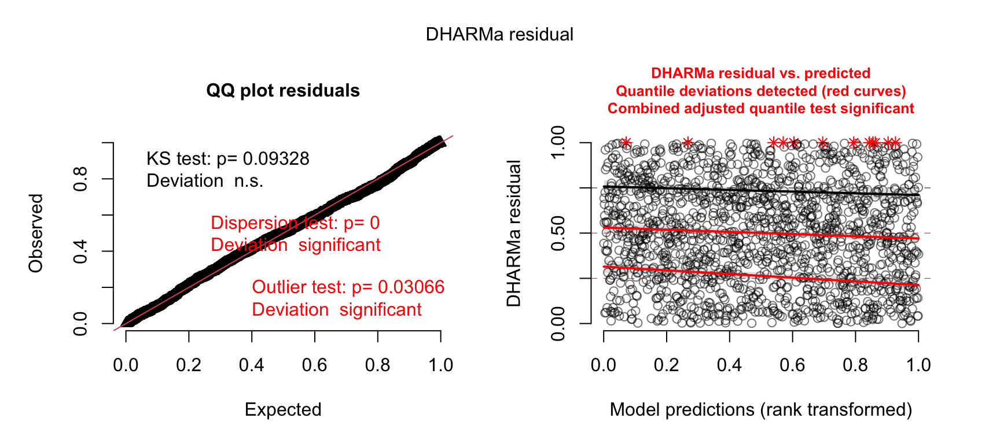
Figura 18: Residuos cuantil simulados (DHARMa) del modelo Tweedie: gráfico Q-Q frente a la uniforme (izquierda) y residuos frente a valor predicho (derecha).
Código
DHARMa::testDispersion(res_tw, plot =FALSE)
DHARMa nonparametric dispersion test via sd of residuals fitted vs.
simulated
data: simulationOutput
dispersion = 1.3872, p-value < 2.2e-16
alternative hypothesis: two.sided
La Figura 18 no delata ningún desajuste grosero de forma, pero el contraste de dispersión es tajante: los residuos observados se dispersan 1.39 veces más de lo que el modelo ajustado es capaz de generar (\(p < 2.2\times10^{-16}\)). El dato varía más de lo que la Tweedie estimada admite —y conviene subrayar lo llamativo del hallazgo, porque las medias estaban bien calibradas: acertar en la media no garantiza acertar en la varianza, y esta familia se juega en la varianza buena parte de su utilidad—. ¿De dónde sale esa variabilidad sobrante? La sospecha es la de siempre en este caso, y se puede comprobar directamente: si las cuatro filas de una misma máquina fueran independientes, sus residuos no deberían parecerse entre sí más de lo que se parecen los de máquinas distintas.
Código
u <-residuals(res_tw) # residuos cuantil, uniformes si el modelo es correctoobs <-var(tapply(u, pn$id_maquina, mean)) # ¿cuánto varían las medias por máquina?set.seed(SEMILLA_CURSO) # referencia: lo mismo, rompiendo el agrupamientonulo <-replicate(200, var(tapply(runif(nrow(pn)), pn$id_maquina, mean)))round(c(varianza_observada = obs, esperada_si_independientes =mean(nulo),p_valor =mean(nulo >= obs)), 4)
El veredicto es contundente: las medias por máquina varían 0.0303, frente al 0.0224 que permitiría la independencia —ninguna de las 200 réplicas llega a lo observado, \(p < 0.005\)—. Dicho sin tecnicismos: hay máquinas caras y máquinas baratas más allá de lo que explican edad, criticidad, proceso, carga y plan. Es la fragilidad —la misma que la Unidad 3.3 encontró en el coste por avería—, que aquí reaparece en el coste anual y que este modelo, de efectos fijos, no recoge.
Dos consecuencias, y conviene no confundirlas. Los coeficientes apenas sufren —es la lección de la Unidad 3.3—: el retrato del gasto sigue siendo válido. Los errores estándar, en cambio, son optimistas, porque el modelo cree tener 1531 observaciones independientes cuando tiene 400 máquinas seguidas cuatro años. Ahí está, muy probablemente, el fabricante que se cuela con \(p\approx 0.02\). La Sección 4.3 se ocupa de esto.
Predicción: el presupuesto
Llegamos a lo que la dirección pidió. Y merece la pena subrayar por qué en este modelo la predicción es especialmente valiosa: la respuesta ya está en euros y en la unidad de gestión —máquina y año—, así que la predicción es directamente la cifra que se lleva a la hoja de presupuesto. No hay que componer nada ni traducir hazards.
El escenario del año 5 se construye solo: el parque del último año observado, un año más viejo, y expuesto el año completo. Nótese lo que hace el offset aquí: fijar exposicion = 1 es pedir el coste de un año entero de servicio, que es lo que se presupuesta.
Código
nd <-subset(pn, anio ==4) # el parque completo en su último año observadond$edad <- nd$edad +1# un año más viejas: así llegan al año 5nd$exposicion <-1# presupuestamos el año entero# predecimos en la escala del ENLACE y volvemos con exp(): así el intervalo# respeta el soporte positivo y sale asimétrico, como debepr <-predict(m_tw, newdata = nd, type ="link", se.fit =TRUE)pred5 <-exp(pr$fit)lo5 <-exp(pr$fit -1.96* pr$se.fit)hi5 <-exp(pr$fit +1.96* pr$se.fit)round(c(maquinas =nrow(nd), total_eur =sum(pred5), media_eur =mean(pred5),historico_eur_maq_anio =sum(pn$coste_total) /sum(pn$exposicion)))
La incertidumbre del total no se obtiene sumando los intervalos individuales: las 400 predicciones comparten los mismos coeficientes estimados, así que sus errores están correlados y esa suma exageraría el margen. Lo correcto es propagar la incertidumbre de \(\hat{\boldsymbol\beta}\) a la suma con el método delta: si \(T=\sum_i \mu_i\), su gradiente respecto a \(\boldsymbol\beta\) es \(\sum_i \mu_i \mathbf{x}_i\), y
Unos 538 000 € para el parque, 1345 € por máquina, frente a los 1009 € por máquina-año del histórico. Esa diferencia es la lección de la sección: el presupuesto no es la media del pasado, porque la flota envejece y el modelo lo incorpora —un año más son un 15 % más de gasto esperado—. Presupuestar con el histórico habría dejado el ejercicio corto en torno a un tercio.
La cifra que se lleva a la reunión es, pues, 538 000 €, con un intervalo de confianza al 95 % de 485 000 a 591 000 € —un margen de \(\pm 10\,\%\)—. Y compárese con la suma ingenua de los intervalos individuales (416 000 – 697 000 €), dos veces y media más ancha: al agregar, los errores no se acumulan, porque todas las predicciones comparten los mismos coeficientes.
La predicción también dice dónde se va el dinero, que es lo que permite actuar:
Tabla 28: Presupuesto previsto para el año 5, por criticidad: número de máquinas, coste medio por máquina y total del grupo.
En la Tabla 28, las Críticas cuestan de media el doble que las Auxiliares (1987 € frente a 969 €), de modo que concentran una parte del presupuesto muy superior a su peso en número: son 78 de 400 máquinas (el 20 %) y se llevan 155 000 € de los 538 000 (el 29 %). Son las candidatas naturales a revisar la política de mantenimiento. Y ese es el entregable que la dirección entiende —una cifra, un desglose y una recomendación—, salido de un solo modelo que resume las dos mitades del caso.
Dos incertidumbres distintas, y solo hemos cuantificado una
El intervalo anterior mide la incertidumbre sobre la media: cuánto puede desplazarse el coste esperado porque los coeficientes están estimados. No es lo mismo que preguntar cuánto costará realmente el año que viene: el gasto observado será una realización Tweedie alrededor de esa media, y su dispersión —gobernada por \(\phi\) y \(p\)— es mucho mayor que la del propio intervalo.
La distinción importa para presupuestar. Con un intervalo de la media se responde «¿dónde está el gasto medio?»; para dotar una partida hace falta un intervalo de predicción y, mejor aún, un percentil alto de la predictiva —¿cuánto reservar para que la partida se quede corta solo uno de cada diez años?—, que se obtiene simulando del modelo ajustado en vez de derivando. Y a los dos les falta todavía el agrupamiento que el diagnóstico reclamó: con la fragilidad reconocida, los márgenes se ensancharían. Buen material para el estudio de caso.
Validación contra el DGP
Este modelo tiene tres tipos de resultado que confrontar con la verdad, y cada uno pide su propio procedimiento. Conviene fijarlo antes de mirar ningún número:
Qué validamos
Dónde está la verdad
Cómo se compara
Los efectos\(\boldsymbol\beta\)
repartidos en dos vectores del DGP: beta_hazard (riesgo) y beta_coste (importe)
cada coeficiente, contra la suma de sus dos canales
El índice\(p\)
en ningún sitio: no es un parámetro del DGP
se deriva de la forma de la Gamma, \(p=(\alpha+2)/(\alpha+1)\)
El reparto frecuencia/severidad
en la comparación de los dos canales, covariable a covariable
contra el reparto fijo \((2-p)/(p-1)\) que el modelo impone
1 · Los efectos. La regla es la de la factorización: si el coeficiente Tweedie mide el efecto total sobre el coste anual, su contraparte verdadera es la suma del efecto sobre el riesgo y del efecto sobre el importe. Ponemos las tres columnas —los dos canales y su suma— junto a lo estimado:
Tabla 29: Validación de los efectos: los dos canales del DGP (log-hazard y log-coste), su suma —la contraparte del coeficiente Tweedie— y lo estimado con su error estándar. Para Ensamblaje, Acabado y las criticidades, la verdad omite la interacción criticidad × proceso-cuello del canal de coste, que el modelo de efectos principales reparte entre esos términos.
La Tabla 29 aprueba con matices instructivos. edadclava la suma (0.137 frente a \(0.10 + 0.03 = 0.13\)): dos canales pequeños que, juntos, son el motor del presupuesto. proceso y criticidad caen donde deben, con el reparto de la interacción que anuncia el caption. carga vuelve a ser la de siempre: estimada 0.86 frente a una suma de 1.30, pero con SE 0.245 —el intervalo la cubre; es la covariable entre-máquinas y paga el precio de serlo—.
El plan es el único con la celda vacía, y por una razón que ya conocemos: su verdad no es un número del DGP, sino el promedio anual de una protección que decae. Se deriva a primer orden como \(\beta_{\text{plan}} \approx \theta_{\text{mant}}\cdot \mathbb{E}[\texttt{prot\_mant}]\) en las máquinas preventivas:
Código
# la protección decae con escala tau, y ambos valores están en la verdad del DGPtau <- verdad$beta_hazard[["tau_mant"]]prot <-ifelse(is.na(sg$dias_desde_mant), 0, exp(-sg$dias_desde_mant / tau))prot_prev <-mean(prot[sg$plan_mantenimiento =="Preventivo"])round(c(tau = tau, E_prot_preventivo = prot_prev,beta_plan_derivado = verdad$beta_hazard[["mant_inmediato"]] * prot_prev), 3)
tau E_prot_preventivo beta_plan_derivado
60.000 0.524 -0.628
Derivado \(-0.63\), estimado \(-0.617\). El mecanismo del DGP es un reloj: la revisión protege al máximo el día que se hace y su efecto se desvanece con escala \(\tau = 60\) días. Promediado a lo largo del año, ese reloj deja exactamente la huella que el modelo recoge en una etiqueta fija. Volveremos sobre él en la Unidad 3.6, donde se modela tal cual, sin promediar.
2 · El índice \(p\). No hay parámetro que leer, pero sí que derivar: el coste anual se genera literalmente con la receta de la Sección 4.1 —averías Poisson y costes Gamma de forma común \(\alpha = 1/\phi_{\text{coste}}\)—, y en una Poisson–Gamma compuesta el índice queda determinado por esa forma.
Código
alfa <-1/ verdad$phi_coste # forma de la Gamma del coste por averíaround(c(phi_coste = verdad$phi_coste, alfa = alfa,p_mecanismo = (alfa +2) / (alfa +1),p_estimado = p_hat,pendiente_marginal_6.2 =coef(ajuste_p)[["log(media)"]]), 3)
El mecanismo dicta \(p = 8/7 \approx 1.143\) —cerca del extremo Poisson: con \(\alpha = 6\), la Gamma del coste es poco variable— y \(\hat p = 1.35\) queda entre ese valor y el 1.45 de la pendiente marginal. El triángulo se lee de un vistazo: condicionar en las covariables baja el índice desde la nube (1.45) pero no hasta el mecanismo (1.143), porque dentro de cada máquina queda varianza que el predictor no recoge —la fragilidad que el diagnóstico acaba de destapar—. El panel no es Tweedie exacto, y \(\hat p\) absorbe la diferencia sin quejarse.
Eso deja una predicción contrastable, y conviene anotarla antes de seguir: si el exceso de \(\hat p\) sobre el mecanismo viene de heterogeneidad que el predictor no recoge, darle a la máquina un parámetro propio debería bajar el índice. La Sección 4.3 hace justamente eso; allí se verá si la predicción se cumple.
3 · El reparto entre canales. Aquí toca cobrarse la promesa de la Sección anterior: el modelo impone a toda covariable el mismo reparto, \((2-p)\) a la frecuencia y \((p-1)\) a la severidad. ¿Cuánto se aleja del verdadero? La tabla de arriba ya trae los dos canales; basta pasarlos a porcentaje y enfrentarlos:
Tabla 30: Validación del reparto: porcentaje del efecto total que va a la frecuencia según el DGP, frente al porcentaje fijo que el modelo impone a todas las covariables. El total es correcto; el reparto, no.
El contraste de la Tabla 30 es tan claro como instructivo. Para edad, el DGP manda el 77 % del efecto a la frecuencia y el modelo supone un 65 %: se equivoca poco. Para carga (62 %) o Acabado (62 %) acierta casi por completo, y para Ensamblaje (43 %) o Mecanizado (50 %) se queda a medio camino. Pero para criticidad el DGP manda el 0 % —una máquina crítica no se avería más, solo cuesta más de reparar— y el modelo insiste en su 65 %: se equivoca del todo. Nótese que el acierto es casual: el modelo aplica el mismo 65 % a todo, así que acierta donde el reparto verdadero se parece a esa cifra y falla donde no. La conclusión práctica ya la habíamos anticipado y ahora está verificada: el coeficiente total es de fiar, la descomposición no lo es. Si un jefe de planta pregunta si conviene actuar sobre la frecuencia (revisar más) o sobre la severidad (repuestos más baratos), este modelo no puede responderle: hacen falta los dos modelos por separado.
En R: recetario de la Tweedie con glmmTMB
Todo lo que hemos hecho en esta sección, en orden y con las trampas señaladas.
1 · Ajustar. Como cualquier GLM, cambiando la familia; el enlace log es el que da la lectura multiplicativa y el offset, la escala por unidad de exposición.
m <-glmmTMB(y ~ x1 + x2 +offset(log(exposicion)), family = tweedie, data = datos)
2 · Leer los parámetros de la varianza. El summary muestra \(\hat\phi\) pero no el índice \(p\); hay que pedirlo aparte —y ojo, family_params() no lo llama "p"—:
sigma(m) # phi (en tweedie, sigma() ES phi: Var = phi * mu^p)family_params(m)[[1]] # p (acceso posicional, robusto al nombre)
3 · Interpretar.broom.mixed::tidy(m, effects = "fixed", conf.int = TRUE, exponentiate = TRUE) da los factores multiplicativos con su intervalo, listos para leer en la escala de la respuesta.
4 · Inferir.drop1(m, test = "Chisq") contrasta cada término entero por razón de verosimilitudes —lo que procede con factores de varios niveles, donde el Wald por coeficiente se queda corto—. Para \(\phi\), confint(m, full = TRUE) añade la fila sigma; los coeficientes salen con prefijo cond. (cuidado al filtrar por nombre). El índice \(p\)no viene en esa tabla: su intervalo pide un perfil de verosimilitud.
5 · Comparar.anova(m0, m1) entre modelos anidados ajustados sobre las mismas filas; AIC()/BIC() entre no anidados. Recuérdese que \(\phi\) y \(p\) también son parámetros: si los dos modelos los estiman, se cancelan al contar grados de libertad.
6 · Diagnosticar.DHARMa::simulateResiduals(m) y su plot(), más DHARMa::testDispersion(). Los residuos clásicos no sirven con una respuesta mitad discreta mitad continua. Comprobaciones propias de esta familia: la proporción de ceros que el modelo espera, \(e^{-\lambda}\), frente a la observada, y la calibración por deciles del ajuste.
7 · Predecir. En la escala del enlace y con se.fit, volviendo con exp() para que el intervalo respete el soporte positivo:
pr <-predict(m, newdata = nd, type ="link", se.fit =TRUE)mu <-exp(pr$fit); ic <-exp(pr$fit +c(-1.96, 1.96) * pr$se.fit)
Para un agregado (la suma sobre muchas unidades), los intervalos individuales no se suman: hay que propagar vcov(m)$cond por el método delta, o simular \(\boldsymbol\beta\) de su distribución muestral. Y téngase presente que todo esto son intervalos de la media: un intervalo de predicción exige simular de la predictiva.
8 · Recuperar los dos canales. Con \(\hat p\) y \(\hat\phi\) se despejan frecuencia y severidad —\(\lambda = \mu^{2-p}/[\phi(2-p)]\) y \(\mu_Y = (2-p)\phi\mu^{p-1}\)—, pero el reparto de cada efecto entre ambos lo impone \(p\), no los datos (Sección 4.2).
Veredicto. El modelo recupera el mecanismo allí donde el dato agregado lo permite: los efectos totales, el índice de la familia dentro del rango correcto, los ceros y la calibración en euros. Y falla exactamente donde el diagnóstico avisó y donde la teoría predice: el reparto entre canales —que el dato agregado no identifica— y la inferencia —los errores estándar que ignoran el agrupamiento, con fabricante colándose a \(p\approx 0.02\) pese a ser nulo en los dos canales—. Los dos problemas pendientes tienen el mismo origen, datos agrupados tratados como sueltos, y son la puerta de la siguiente sección.
4.3 Datos agrupados: modelo y validación
La sección anterior terminó con dos cabos sueltos y un diagnóstico común: tratamos como sueltas 1531 filas que vienen de 400 máquinas. Los cabos eran el fabricante, significativo pese a ser nulo en el proceso generador, y el índice \(\hat p = 1.35\), por encima del 1.143 que dicta el mecanismo. Toca recogerlos, y de paso preguntarnos cómo se valida un modelo cuando los datos vienen agrupados.
El agrupamiento, dentro del modelo
El efecto aleatorio no necesita más justificación que el diseño del dato: cada máquina aporta hasta cuatro filas, sus averías son recurrentes y comparten todo lo que la máquina tiene de propio y no está medido. Tratar esas filas como independientes es el supuesto que el diagnóstico de la Sección 4.2 desmintió. La herramienta la conocemos desde el Caso 1 y la usamos en la Unidad 3.3 sobre el coste por avería: un intercepto aleatorio por máquina. Sobre la Tweedie se escribe igual que sobre cualquier otra familia, y su lectura es la de siempre —cada máquina tiene un nivel de gasto propio, multiplicativo, que las covariables no explican—:
Antes de ajustarlo conviene preguntarse si el nivel es lo único que cambia de una máquina a otra, o si además cambia cómo evoluciona su gasto: eso sería una pendiente aleatoria. La pregunta tiene una respuesta parcial antes de mirar ningún dato, y es puramente estructural: una pendiente aleatoria por máquina solo tiene sentido para una covariable que varíe dentro de la máquina. Si una covariable es constante para ella, su «pendiente» no se distingue de su nivel. Revisemos, pues, qué covariables varían dentro de cada máquina, contando cuántos valores distintos toman:
edad carga proceso criticidad
400 0 0 0
plan_mantenimiento
0
El resultado deja una sola candidata: la edad cambia en las 400 máquinas, mientras que carga, proceso, criticidad y plan son atributos fijos de cada una —para ellas, una pendiente aleatoria ni siquiera está definida—. La pregunta se reduce entonces a si las máquinas envejecen de forma distinta: si el desgaste de unas se acelera más que el de otras.
Planteada así, la pregunta es lo bastante razonable como para llevarla al modelo. Y ese es el punto de método: no la resolvemos con una exploración previa —ajustar una recta a los tres o cuatro puntos de cada máquina daría pendientes tan ruidosas que cualquier nube parecería heterogénea—, sino estimándola donde corresponde, con agrupamiento parcial y la verosimilitud de la familia.
Planteamos, pues, el modelo mixto con interceptación y pendiente aleatoria en edad: \[S_{it} \;\sim\; \operatorname{Tw}_p(\mu_{it},\ \phi), \qquad
\operatorname{Var}(S_{it}) \;=\; \phi\,\mu_{it}^{\,p},\]
\[\log \mu_{it} \;=\; \underbrace{\beta_0 + \mathbf{x}_{it}^{\top}\boldsymbol\beta}_{\text{parte fija}}
\;+\; \log e_{it}
\;+\; \underbrace{u_{0i} \;+\; u_{1i}\,\texttt{edad}_{it}}_{\text{parte aleatoria de la máquina}},\]
Tabla 31: Dos estructuras aleatorias para la misma media: solo intercepto de máquina, o intercepto y pendiente en la edad. La segunda añade dos parámetros: la varianza de la pendiente y su correlación con el intercepto.
Código
VarCorr(m_tw_ris)$cond$id_maquina # desviaciones típicas y correlación de los efectos
La respuesta llega antes de poder compararlos, y es contundente: la Tabla 31sale llena de NA. No hay AIC, ni verosimilitud, ni contraste. El ajuste con pendiente aleatoria no ha convergido a una solución utilizable, y el porqué está en las varianzas: la desviación típica de la pendiente es \(0.011\) —frente a \(0.68\) del intercepto—, y la correlación entre ambos efectos sale \(0.9997\), es decir, prácticamente \(1\).
Esa correlación pegada a uno es la señal. Significa que el modelo no distingue dos efectos: lo que llama «pendiente» es una copia reescalada del intercepto, de modo que la matriz \(\boldsymbol\Sigma\) es degenerada y la verosimilitud no tiene un máximo bien definido en ese borde. El modelo, con libertad para que cada máquina envejezca a su ritmo, no encuentra en los datos con qué sostener ese segundo efecto.
Este desenlace tiene nombre propio y conviene reconocerlo, porque es de los más frecuentes al ajustar modelos mixtos: un ajuste singular. Sus dos síntomas típicos son justo los que vemos —una varianza que se va a cero, o una correlación que se pega a \(\pm 1\)— y la lección práctica es que no se arregla insistiendo: cambiar de optimizador o dar más iteraciones no crea información que no está. Lo que procede es simplificar la estructura aleatoria, que es lo que hacemos. Seguimos, pues, con el intercepto solo.
Y conviene subrayar una cosa, porque es la que da valor didáctico al episodio: el modelo no ha fallado, ha respondido. Le preguntamos si las máquinas envejecen de forma distinta y ha contestado que con estos datos esa pregunta no se puede sostener. Un anova lleno de NA no es un problema técnico que ocultar: es un resultado que se reporta.
Con la estructura decidida —intercepto aleatorio, sin pendiente—, ponemos el modelo al lado del de efectos fijos de la Sección 4.2:
Tabla 32: El modelo Tweedie con y sin intercepto aleatorio de máquina: estimaciones, errores estándar y p-valores. Los coeficientes apenas se mueven; los errores estándar se ensanchan.
El summary trae ahora un bloque que no habíamos visto en esta familia, el de los efectos aleatorios, y con él la magnitud de la heterogeneidad entre máquinas:
Dos bloques nuevos respecto al summary de la Sección 4.2. El de Random effects da la varianza y la desviación típica del intercepto de máquina —el parámetro \(\sigma_u\)—, junto al número de grupos (400 máquinas para 1531 observaciones). Y la cabecera trae un AIC que ya incorpora el coste de ese parámetro extra, de modo que puede compararse con el del modelo de efectos fijos.
La Tabla 32 deja la primera lectura. Los coeficientes casi no se mueven; los errores estándar, sí: es la lección de la Unidad 3.3, ahora sobre el coste anual —el retrato del gasto no dependía del agrupamiento, pero la confianza que merecía sí, y los errores estándar crecen entre un 30 y un 45 %—. Con ellos, la evidencia sobre el fabricante se debilita: el nivel C pasa de \(p = 0.017\) a \(0.123\) y el B queda en la frontera (\(0.022 \to 0.046\)). Son contrastes por nivel, así que de momento solo cabe anotarlo: la pregunta que importa —¿aporta el factor entero?— la resolveremos en la subsección siguiente.
Las otras dos lecturas están en los parámetros que no salen en la tabla de coeficientes. Recuperamos el índice \(p\) de los dos ajustes, para ver si cambia al reconocer el agrupamiento, y la desviación típica del efecto de máquina, que es el parámetro nuevo:
Código
c(sd_maquina =round(sqrt(unlist(VarCorr(m_tw_re)$cond)), 3), # el parámetro nuevop_fijo =round(family_params(m_tw)[[1]], 3), # índice sin efecto aleatoriop_mixto =round(family_params(m_tw_re)[[1]], 3)) # ...y con él
El índice \(p\) baja, de 1.351 a 1.266. Este es el hallazgo bonito de la sección, y conviene entender por qué, porque confirma la predicción que dejamos anotada en la validación anterior. Sin efecto aleatorio, \(\hat p\) tenía que dar cuenta de toda la variabilidad no explicada, incluida la que producen las máquinas crónicamente caras; su única palanca para ensanchar la varianza era subir el índice. Al dar a esa heterogeneidad un parámetro propio —\(\sigma_u\)—, el índice se libera de ese trabajo. El segundo cabo suelto de la Sección 4.2, atado: aquel «\(\hat p\) absorbe la diferencia sin quejarse» tenía nombre, y era la heterogeneidad entre máquinas.
Y \(\sigma_u\) vale 0.749, en escala logarítmica —en el modelo final, tras la criba de la Sección 4.3, quedará en 0.757; usamos aquí el del ajuste que acabamos de leer—: una máquina situada una desviación típica por encima de la media gasta \(e^{0.749}\approx 2.1\) veces lo que una comparable situada en la media. Es una heterogeneidad considerable —del mismo orden que el efecto de la criticidad—, y es justo la que la exploración de las dos mitades nos había enseñado.
En R: efectos aleatorios con glmmTMB
La sintaxis es la de lme4, y funciona igual sobre cualquier familia —Tweedie incluida—.
glmmTMB(y ~ x + (1| grupo) +offset(log(exposicion)), family = tweedie, data = datos)glmmTMB(y ~ x + (1+ z | grupo) + ..., family = tweedie, data = datos) # + pendiente
(1 | grupo) añade un intercepto aleatorio; (1 + z | grupo) añade además una pendiente en zcorrelacionada con el intercepto. Para imponer correlación cero se escriben por separado: (1 | grupo) + (0 + z | grupo).
Una pendiente aleatoria exige que la covariable varíe dentro del grupo. Si es un atributo fijo de la unidad, su «pendiente» no se distingue del intercepto y el modelo no la puede estimar.
Leer las varianzas: VarCorr(m)$cond$grupo da la matriz, con las desviaciones típicas y la correlación como atributos. Es lo primero que hay que mirar tras ajustar.
Reconocer un ajuste singular: una desviación típica prácticamente nula, una correlación pegada a \(\pm 1\), o un anova() que devuelve NA. No se arregla cambiando de optimizador: se simplifica la estructura aleatoria.
Intervalos: confint(m, full = TRUE) añade a los coeficientes la dispersión y la desviación típica del efecto aleatorio —ojo, glmmTMB prefija con cond.ambos, así que conviene filtrar por los nombres de los coeficientes, no por el prefijo—. El parámetro de familia (la \(p\) de la Tweedie) no aparece ahí.
Contrastar términos: drop1(m, test = "Chisq") reajusta el modelo sin cada término y da un LRT válido —glmmTMB ajusta por máxima verosimilitud—. Para contrastar una varianza, recuérdese el problema de la frontera.
Inferencia y selección
Con los errores estándar honestos toca rehacer toda la criba de la Sección 6.3, no solo mirar el fabricante: al cambiar la estructura del modelo puede cambiar el veredicto de cualquier término. Y el contraste por término no puede ser el Wald por nivel —proceso gasta cuatro coeficientes y criticidad dos—, sino el de razón de verosimilitudes sobre el factor entero. drop1 lo hace reajustando el modelo sin cada término:
Código
drop1(m_tw_re, test ="Chisq")
Tabla 33: Contraste de razón de verosimilitudes por término dentro del modelo con efecto aleatorio de máquina. Cada fila compara el modelo completo con el que prescinde de ese término.
Como glmmTMB ajusta por máxima verosimilitud, los modelos que compara drop1 están anidados, difieren solo en efectos fijos y se ajustan sobre las mismas filas —las tres condiciones del LRT—.
La criba de la Tabla 33 confirma que el fabricanteno aporta: \(\chi^2 = 4.57\) con 2 g.l., \(p = 0.10\), y todo lo demás se queda: edad, carga, proceso, criticidad y plan siguen aportando con holgura. Reajustamos pues el modelo sin fabricante y con interceptación aleatoria:
Los factores se sostienen y el retrato del gasto es el mismo de la Sección 6.3, pero conviene leerlo con detalle, porque es el modelo con el que nos quedamos:
La edad sigue siendo el motor: cada año multiplica el gasto anual por \(1.145\) —un 14.5 %—, con un intervalo estrecho, de \(1.11\) a \(1.18\). Es el efecto mejor determinado del modelo, y el que arrastra el presupuesto cuando la flota envejece.
La criticidad ordena el gasto: una máquina Crítica cuesta \(2.16\) veces lo que una Auxiliar comparable, y una Importante, \(1.53\) veces.
El plan preventivo es la palanca: su factor es \(0.498\), con intervalo de \(0.40\) a \(0.62\). Reduce el gasto anual a la mitad, y ahora ajustado por edad, criticidad y —esto es nuevo— por el nivel propio de cada máquina.
La carga tiene el efecto más incierto: su factor, \(2.78\), parece enorme, pero corresponde a pasar de una máquina parada a una a pleno uso, un salto que nadie observa; por décima de carga el aumento es de un 11 %. Y su intervalo, de \(1.40\) a \(5.52\), recuerda que es la covariable entre-máquinas de siempre, la peor determinada de todas.
El proceso aporta como factor, no nivel a nivel: Ensamblaje (\(1.50\)) y Acabado (\(1.46\)) encarecen respecto a Corte, Lijado (\(0.92\)) queda por debajo y ninguno de los intervalos es espectacular. Es un buen recordatorio de que el contraste que decide si el factor se queda es el del término entero —el de la subsección anterior—, no la lectura de sus niveles por separado.
Dos comparaciones con la Tabla 24 merecen atención. Los efectos que dependen de comparar máquinas entre sí se han movido: la criticidad baja de \(2.39\) a \(2.16\) y la carga sube de \(2.37\) a \(2.78\), porque parte de lo que antes se les atribuía era, en realidad, nivel propio de cada máquina, y ahora ese nivel tiene dónde alojarse. En cambio, la edad —que varía dentro de cada máquina— apenas se inmuta (\(1.147 \to 1.145\)): es la misma lección de la Unidad 3.3. Y todos los intervalos son más anchos, como debe ser.
Un matiz de lectura que el modelo mixto introduce y conviene no pasar por alto: estos factores son condicionales. El \(2.16\) de la criticidad compara dos máquinas con el mismo nivel propio\(u_i\) —o, si se prefiere, describe qué le pasaría a una máquina dada si cambiara de criticidad—. No es exactamente el cociente entre el gasto medio de las Críticas y el de las Auxiliares de la población, que es lo que estimaba el modelo de efectos fijos. Los dos números responden a preguntas distintas, y la Sección de predicción mostrará que la diferencia se paga en euros.
Faltan los tres parámetros que no viven en el predictor lineal. Dos de ellos tienen intervalo por la vía de la Sección 4.2 —confint cubre dispersión y componentes de varianza, pero no el parámetro de familia—:
Código
ic <-confint(m_re, full =TRUE)# se descartan las filas de los COEFICIENTES; el resto es lo que buscamos.# (ojo: glmmTMB prefija con "cond." tanto los coeficientes como la sd del efecto aleatorio)ic[!rownames(ic) %in%paste0("cond.", names(fixef(m_re)$cond)), , drop =FALSE]
c(p =round(family_params(m_re)[[1]], 3)) # el índice, sin IC por esta vía
p
1.266
Un contraste que cae en la frontera
Si en vez de contrastar el fabricante quisiéramos contrastar el propio efecto aleatorio —\(H_0:\sigma_u = 0\) frente a \(H_1:\sigma_u > 0\)—, el LRT habitual no vale: bajo la hipótesis nula el parámetro está en el borde del espacio (una varianza no puede ser negativa), y la distribución de referencia deja de ser una \(\chi^2_1\) para ser una mezcla de \(\chi^2_0\) y \(\chi^2_1\) —lo que en la práctica divide el \(p\)-valor por dos(Self & Liang, 1987). Con una diferencia de verosimilitud como la de aquí la conclusión no cambia; conviene saberlo porque el problema reaparece siempre que se contrasta una varianza, y porque explica que muchos autores prefieran decidir la estructura aleatoria por diseño —hay agrupamiento, luego se modela— en lugar de por contraste.
Bondad de ajuste
¿Compensa el parámetro extra? La comparación es legítima —los dos modelos se ajustan sobre las mismas 1531 filas y están anidados— y el AIC ya descuenta el coste:
Código
# gemelo de efectos fijos de nuestro modelo final: mismo predictor, sin (1 | id_maquina)m_fijo_sf <-glmmTMB(coste_total ~ edad + carga + proceso + criticidad + plan_mantenimiento +offset(log(exposicion)), family = tweedie, data = pn)lrt_re <-as.numeric(2* (logLik(m_re) -logLik(m_fijo_sf))) # solo difieren en sigma_udata.frame(modelo =c("efectos fijos (6.3, con fabricante)", "efectos fijos, sin fabricante","+ efecto aleatorio (final)"),k =c(attr(logLik(m_tw), "df"), attr(logLik(m_fijo_sf), "df"), attr(logLik(m_re), "df")),logLik =round(c(logLik(m_tw), logLik(m_fijo_sf), logLik(m_re)), 1),AIC =round(c(AIC(m_tw), AIC(m_fijo_sf), AIC(m_re)), 1),BIC =round(c(BIC(m_tw), BIC(m_fijo_sf), BIC(m_re)), 1),LRT =c(NA, NA, round(lrt_re, 1)),# varianza en la frontera: la referencia es una mezcla, y el p-valor se divide por dosp_valor =c(NA, NA, signif(0.5*pchisq(lrt_re, 1, lower.tail =FALSE), 3)))
Tabla 34: Ajuste global y contraste del efecto aleatorio. El LRT se calcula sobre el par que difiere ÚNICAMENTE en la varianza de máquina —los dos modelos sin fabricante—, y su p-valor se corrige por estar el parámetro en la frontera.
La Tabla 34 incluye un tercer ajuste que no habíamos visto: el gemelo de efectos fijos de nuestro modelo final, con su mismo predictor pero sin el efecto de máquina. Está ahí por una razón de método: el LRT exige modelos anidados, y comparar directamente el modelo final con el de la Sección 4.2 no valdría, porque difieren en dos cosas a la vez —uno gana la varianza de máquina, el otro pierde el fabricante, que la subsección anterior descartó—. Con el gemelo, el contraste aísla exactamente lo que queremos medir.
Y el veredicto es rotundo por las tres vías: el AIC cae 161 puntos entre el modelo de la Sección 4.2 y el final, el BIC —más severo con los parámetros— también, y el contraste del efecto aleatorio da un \(p\)-valor indistinguible de cero. Reconocer el agrupamiento no era un refinamiento opcional: era lo que faltaba.
Vale la pena repetir además las dos comprobaciones que la familia se juega. La primera es la de los ceros: el modelo no los modela aparte, los deduce de la frecuencia, así que reconstruir su proporción es una prueba genuina. Recuperamos \(\lambda\) de los parámetros ajustados —como en la Sección 4.2— y promediamos \(e^{-\lambda}\) sobre las 1531 filas:
Todo sale de tres extractores y un contraste, pero cada uno tiene su letra pequeña.
logLik(m); AIC(m); BIC(m) # ajuste globalattr(logLik(m), "df") # nº de parámetros: incluye phi, p y sigma_uanova(m0, m1) # LRT entre modelos ANIDADOS
attr(logLik(m), "df") cuenta más de lo que se ve. En una Tweedie mixta suma los coeficientes más la dispersión, el índice y la varianza del efecto aleatorio. Es el número que hay que declarar al comparar, no el de filas de la tabla de coeficientes.
El LRT exige anidamiento estricto: mismas filas, mismo mecanismo de estimación y que un modelo sea el otro con parámetros fijados a cero. Si dos ajustes difieren en dos cosas a la vez, hay que fabricar el eslabón intermedio, como hicimos con el gemelo de efectos fijos.
Si lo que se contrasta es una varianza, el \(p\)-valor de anova() es conservador: con un solo componente en la frontera, la corrección más simple es dividirlo por dos (Self & Liang, 1987).
El AIC compara modelos ajustados a los mismos datos, aunque cada uno estime su propio índice \(p\). Lo que no es comparable entre ajustes distintos es la devianza evaluada con índices distintos: si se usa como pérdida —en validación cruzada, por ejemplo—, hay que fijar un \(p\) común.
Calibración: dplyr::ntile(fitted(m), 10) agrupa por predicción y permite comparar medias. Agrupar por lo observado responde a otra pregunta —la discriminación— y arrastra regresión a la media.
Ceros esperados: no hay función que los dé. Se deducen de los parámetros, \(\Pr(S=0)=e^{-\lambda}\) con \(\lambda = \mu^{2-p}/[\phi(2-p)]\), y se promedian sobre las filas.
La segunda es la calibración: agrupamos las filas por lo que el modelo predice y comprobamos si lo predicho se cumple. Cada modelo ordena las filas por su predicción, de modo que los deciles de la Tabla 35 no contienen las mismas máquina-años, pero la pregunta que responde cada columna es la misma.
Tabla 35: Calibración de los dos modelos, cada uno por deciles de su propia predicción: media predicha y media observada en cada decil. El modelo con efecto aleatorio abre mucho más el abanico de predicciones.
Figura 19: Calibración de los dos modelos: cada punto es un decil de la propia predicción, con lo predicho en el eje horizontal y lo observado en el vertical. La diagonal marca el acuerdo perfecto. El modelo de efectos fijos se mantiene pegado a ella pero recorre un tramo corto; el que incluye el efecto aleatorio abarca mucho más rango —hasta más de 4000 €— a costa de separarse en los extremos.
La Figura 19 resume en un gráfico lo que la Tabla 35 dice en columnas. El modelo de efectos fijos apenas se despega de la diagonal —está bien calibrado— pero su recorrido es corto: de 205 € a 2516 €, un factor de doce entre el decil más barato y el más caro. El modelo con efecto aleatorio recorre de 138 € a 3396 € —un factor de veinticinco— y llega a deciles cuyo gasto real supera los 4000 €, que el otro modelo sencillamente no identifica.
El precio de esa amplitud se ve en los extremos: sus predicciones se quedan por encima de lo observado en los deciles baratos (138 frente a 65 en el primero) y por debajo en los caros (3396 frente a 4168 en el último). Ese patrón —predicciones menos extremas que la realidad— es la firma del encogimiento: los efectos aleatorios se estiman contrayéndolos hacia cero, tanto más cuanto menos información hay sobre cada grupo, y aquí cada máquina aporta solo tres o cuatro años. Es una propiedad deseada, no un error —protege de tomarse al pie de la letra una racha de mala suerte—, pero conviene saberlo.
Los ceros, por su parte, siguen bien reproducidos: 50.3 % esperados frente a 49.9 % observados, tan bien como con el modelo de efectos fijos.
Hay una segunda mirada, complementaria, que responde a la pregunta inversa y que a la dirección de la fábrica le importa más: no «cuando el modelo dice 2000 €, ¿se gastan 2000 €?», sino «cuando el gasto real fue alto, ¿lo vio venir el modelo?». Para eso hay que agrupar por lo observado —los mismos grupos para los dos modelos— y mirar qué predijo cada uno:
Figura 20: Capacidad de anticipación: máquina-años agrupados por su gasto real —los que no tuvieron ninguna avería y los cinco quintiles de los que sí—, con el gasto medio observado en cada grupo (rojo) y el que había predicho cada modelo. El modelo con efecto aleatorio sigue mucho mejor el recorrido del gasto real; el de efectos fijos apenas se mueve.
La Figura 20 es más elocuente que cualquier tabla. Donde el gasto real recorre de 0 € a más de 5000 €, el modelo de efectos fijos apenas se mueve —de 825 € a 1593 €—: sabía tan poco de cada máquina que predecía casi lo mismo para todas. El modelo con efecto aleatorio recorre de 563 € a 2812 €, siguiendo la pendiente del gasto real. Resumido en un número, la correlación de rangos entre lo predicho y lo observado casi se duplica: de 0.34 a 0.60.
Calibración y discriminación: dos preguntas, dos herramientas
Las dos miradas anteriores —la Tabla 35 y la Figura 20— parecen lo mismo y no lo son. La diferencia está en por qué se agrupa, y de ahí salen las dos propiedades que se le piden a un modelo predictivo —independientes entre sí—:
Calibración
Discriminación
Pregunta
¿se cumple lo que el modelo anuncia?
¿separa lo caro de lo barato?
Cómo se mira
agrupando por la predicción
agrupando por lo observado
Falla si…
predice 2000 € donde se gastan 800 €
predice lo mismo para todos
Que sean independientes se ve con un caso extremo: un modelo que prediga siempre la media general está perfectamente calibrado —en promedio acierta— y no discrimina nada. Es casi lo que le ocurre a nuestro modelo de efectos fijos, cuyas predicciones apenas se separan de esa media.
Cómo se cuantifica cada una. La calibración se resume en lo cerca que quedan las dos columnas —o, más formalmente, ajustando observado ~ predicho y comprobando que la pendiente vale 1—. La discriminación necesita una medida de orden, y el curso ha usado una distinta en cada tipo de respuesta, aunque todas midan lo mismo:
binaria (Sección 2.7): el AUC de la curva ROC —la probabilidad de puntuar más alto a un caso que a un control—;
tiempo a evento (lo veremos en la Unidad 3.6): el índice de concordancia, que es la misma idea sobre pares de máquinas ordenadas por riesgo;
respuesta continua, como aquí: la correlación de rangos entre predicho y observado, que vuelve a ser la probabilidad de ordenar bien dos observaciones.
Y una advertencia sobre la Figura 20: al agrupar por el resultado, cada grupo recoge —además de su nivel real— una parte de azar, así que ningún modelo alcanza los extremos. Es regresión a la media, no un defecto: un modelo predice la media, no la suerte. Por eso este gráfico sirve para comparar modelos entre sí, pero no para juzgar si uno está bien calibrado; para eso está la tabla anterior.
Diagnóstico
Repetimos sobre el modelo final la batería de la Sección 4.2: residuos cuantil simulados y sus contrastes.
Código
res_re <- DHARMa::simulateResiduals(m_re, n =250, seed = SEMILLA_CURSO)plot(res_re)
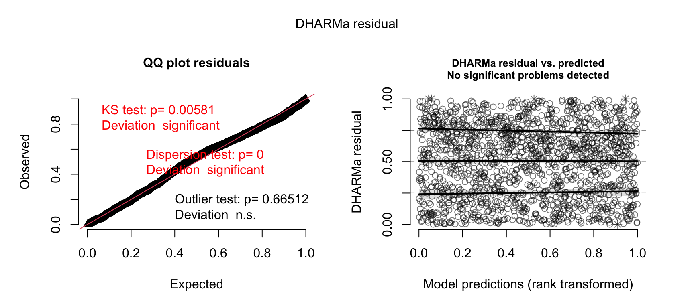
Figura 21: Residuos cuantil simulados (DHARMa) del modelo con efecto aleatorio de máquina: gráfico Q-Q frente a la uniforme (izquierda) y residuos frente al valor predicho (derecha).
Código
DHARMa::testDispersion(res_re, plot =FALSE)
DHARMa nonparametric dispersion test via sd of residuals fitted vs.
simulated
data: simulationOutput
dispersion = 1.3588, p-value < 2.2e-16
alternative hypothesis: two.sided
La Figura 21 no delata desajustes de forma, pero conviene leer el contraste de dispersión con cuidado, porque no dice lo que uno esperaría: el exceso sigue ahí, y prácticamente igual que antes —1.36 frente al 1.39 de la Sección 4.2, con el mismo \(p\) ínfimo—. Añadir el efecto aleatorio ha mejorado el AIC en 162 puntos y ha cambiado el índice, pero no ha absorbido la variabilidad sobrante.
Merece la pena detenerse, porque el resultado desmonta una expectativa razonable. Cabía pensar que el exceso de dispersión era la heterogeneidad entre máquinas y que, al darle su propio parámetro, desaparecería. No es así, y el motivo está en qué mide cada contraste. DHARMa simula estos residuos condicionando en los efectos aleatorios estimados —volveremos sobre ello enseguida—, de modo que el \(u_i\) de cada máquina ya está dentro tanto de lo observado como de lo simulado: lo que testDispersion mide es la variabilidad que queda dentro de cada máquina-año, y esa el efecto aleatorio no la toca. Su origen lo señalará la validación: al agregar por año desaparece de las covariables el tipo de avería —que cambia de una avería a otra y mueve el importe en un factor apreciable—, y esa varianza sigue en el dato aunque ya no esté en el predictor. Parte de ella la absorbe \(\hat p\); el resto aparece aquí.
Así que el efecto aleatorio no ha venido a arreglar la dispersión. Ha venido a arreglar otra cosa, y esa es la prueba que suspendió el modelo anterior: ¿queda dependencia dentro de cada máquina? Repetimos el mismo contraste, comparando cuánto varían las medias de residuos por máquina con lo que permitiría la independencia:
La señal ha desaparecido: donde el modelo de la Sección 4.2 daba 0.0303 frente al 0.0224 de la independencia, ahora las medias por máquina varían menos de lo que variarían si las filas fueran independientes. El efecto aleatorio ha hecho su trabajo —y, si acaso, se ha pasado—.
Ese «pasarse» no es casual y conviene entenderlo, porque afecta a cómo se leen todos estos residuos: DHARMa simula, por defecto, condicionando en los efectos aleatorios estimados, es decir, usando el \(u_i\) de cada máquina. Como ese \(u_i\) se ha ajustado con los datos de esa misma máquina, la parte del diagnóstico que mira entre máquinas sale algo mejor de lo que corresponde —de ahí que la dependencia no solo desaparezca, sino que se pase de largo—, mientras que la que mira dentro de cada máquina-año no obtiene ninguna ventaja: por eso el contraste de dispersión seguía siendo tajante dos chunks más arriba. No es un error del diagnóstico, es su alcance: lo que evalúa es si el modelo describe bien la historia de cada máquina, que es justamente la pregunta que importa para nuestro presupuesto. Para juzgar en cambio el ajuste a una máquina nueva habría que simular re-sorteando los efectos aleatorios (re.form = NA), un diagnóstico distinto para una pregunta distinta.
En R: diagnóstico de un modelo mixto con DHARMa
Los residuos clásicos no sirven con una respuesta mitad discreta mitad continua; DHARMa los sustituye por residuos cuantil simulados, que bajo un modelo correcto son uniformes.
res <- DHARMa::simulateResiduals(m, n =250, seed = SEMILLA_CURSO)plot(res) # Q-Q uniforme + residuos frente a predichoDHARMa::testUniformity(res) # ¿son uniformes? (Kolmogorov-Smirnov)DHARMa::testDispersion(res) # ¿sobra o falta variabilidad?DHARMa::testZeroInflation(res) # ¿hay más ceros de los que el modelo genera?
residuals(res) devuelve el vector de residuos escalados, que sirve para construir contrastes propios —como el de agrupamiento que usamos aquí—.
La simulación es condicional por defecto (re.form = NULL) y por eso los residuos salen optimistas, como acabamos de ver; re.form = NA da la versión marginal, que es la que corresponde si el modelo va a predecir unidades nuevas.
recalculateResiduals(res, group = id) agrega observaciones y residuos por grupo y devuelve un objeto DHARMa nuevo: es la vía estándar para diagnosticar al nivel del grupo en lugar de al de la fila.
Un contraste que no salta no siempre es buena noticia. Tras añadir un efecto aleatorio es normal que la señal de agrupamiento desaparezca «con creces» y que la dispersión se quede corta: conviene leerlo como el alcance del diagnóstico, no como una virtud del modelo.
Predicción: el presupuesto revisado
Y aquí el agrupamiento deja de ser una cuestión técnica para convertirse en euros. Con efectos aleatorios hay dos predicciones posibles, y no dan lo mismo:
Código
nd_re <-subset(pn, anio ==4); nd_re$edad <- nd_re$edad +1; nd_re$exposicion <-1cond <-predict(m_re, newdata = nd_re, type ="response") # con su u_imarg <-predict(m_re, newdata = nd_re, type ="response", re.form =NA) # con u = 0sd_u <-unname(sqrt(unlist(VarCorr(m_re)$cond)))round(c(condicional =sum(cond),marginal_u_cero =sum(marg),marginal_corregida =sum(marg) *exp(sd_u^2/2), # corrección de Jensenefectos_fijos_6.3 =sum(pred5)))
La condicional (497 000 €) usa el historial de cada máquina: es la que corresponde a nuestro presupuesto, porque las 400 máquinas ya están en la fábrica y sabemos cuáles han salido caras.
La marginal con \(u = 0\) (399 000 €) describe una máquina «de nivel medio»… pero no es el gasto medio de la población, y por eso sale casi 100 000 € más baja. Aquí reaparece el efecto de Jensen de la Unidad 3.2: como el enlace es log, \(\mathbb{E}[e^{u}] = e^{\sigma_u^2/2} > 1\), y poner \(u = 0\) devuelve algo parecido a la mediana, no a la media. Multiplicar por \(e^{\sigma_u^2/2}\) la lleva a la escala correcta: 532 000 €.
Y esa última cifra vale como comprobación de coherencia interna, porque casi reproduce el presupuesto de la Sección 4.2 (538 000 €, un 1 % de diferencia). No es casualidad: el modelo de efectos fijos estima precisamente la media poblacional, así que debe coincidir con la predicción marginal —una vez corregida— del modelo mixto. Los dos modelos no discrepaban sobre cuánto gasta el parque en promedio; discrepaban sobre la precisión de esa cifra y sobre el gasto de cada máquina.
La moraleja presupuestaria es concreta: cuál de las tres se lleva a la reunión depende de para qué máquinas se presupuesta, y confundirlas cuesta decenas de miles de euros. Para el parque actual, la condicional; para valorar una ampliación con máquinas que aún no existen, la marginal corregida; la de \(u = 0\), para nada —es una mediana disfrazada de media—.
Del valor esperado al intervalo de predicción
Todas esas cifras son medias, y en la Sección 4.2 quedó pendiente la pregunta que de verdad interesa para dotar una partida: no cuánto se gastará en promedio, sino entre qué valores se moverá el gasto real del año que viene. Eso es un intervalo de predicción, y con esta familia se obtiene sin fórmulas nuevas: simulando el mecanismo. Ya tenemos todas las piezas de la Sección 4.1 —para cada máquina, las averías que espera y lo que cuesta cada una—, así que basta jugar el año muchas veces:
Código
alfa_re <- (2- p_re) / (p_re -1) # forma de la Gamma de cada averíalambda_i <- cond^(2- p_re) / (phi_re * (2- p_re)) # averías esperadas de cada máquinatheta_i <- phi_re * (p_re -1) * cond^(p_re -1) # escala de su costeset.seed(SEMILLA_CURSO)totales <-replicate(4000, { N <-rpois(length(cond), lambda_i) # ¿cuántas averías tiene cada máquina?sum(rgamma(length(cond), shape = N * alfa_re, scale = theta_i)) # ...y cuánto cuestan})round(c(prevision =sum(cond),media_simulada =mean(totales),IC90_inf =unname(quantile(totales, 0.05)),IC90_sup =unname(quantile(totales, 0.95)),percentil90 =unname(quantile(totales, 0.90))))
Que la media simulada reproduzca la previsión es la comprobación de que la simulación es fiel al modelo. Lo nuevo es lo demás: el gasto real del parque caerá, con un 90 % de confianza, en una banda de en torno al ±9 % alrededor de la previsión. Y si la dirección quiere una partida que se quede corta solo uno de cada diez años, la cifra a dotar no es la previsión sino el percentil 90.
Conviene ver ahora la misma cuenta para una sola máquina, porque el contraste es la lección de todo el apartado:
Código
i <-order(cond)[length(cond) %/%2] # una máquina de previsión medianauna <-rgamma(4000, shape =rpois(4000, lambda_i[i]) * alfa_re, scale = theta_i[i])round(c(prevision = cond[i], prob_cero_pct =mean(una ==0) *100,mediana =median(una), percentil90 =unname(quantile(una, 0.90))))
Para el parque, la incertidumbre del resultado casi desaparece: son 400 máquinas cuyos azares se compensan, y por eso la banda de predicción acaba siendo del mismo orden que la incertidumbre de la media que calculamos en la Sección 4.2. Para una máquina no se compensa nada: su previsión ronda los 800 €, pero lo más probable —más de un 40 % de las veces— es que no gaste nada, y uno de cada diez años superará los 2000 €. La media, ahí, no describe casi ningún año concreto.
De ahí una regla práctica que excede al ejemplo: las medias se agregan bien y la incertidumbre no. Presupuestar el parque con la suma de las previsiones es razonable; prometer esa cifra para una máquina concreta, no.
En R: predecir con efectos aleatorios, y con incertidumbre
Con un modelo mixto, predict() admite dos predicciones distintas, y hay que elegir a conciencia:
predict(m, newdata = nd, type ="response") # CONDICIONAL: usa el u_i del grupopredict(m, newdata = nd, type ="response", re.form =NA) # MARGINAL: pone u = 0predict(m, newdata = nd, type ="response", allow.new.levels =TRUE) # grupo nunca visto
La condicional requiere que el grupo esté en los datos de ajuste; es la que corresponde cuando se predice sobre las mismas unidades observadas.
La marginal con re.form = NA no es el promedio de la población: con enlace log devuelve algo parecido a la mediana, y hay que multiplicar por \(e^{\sigma_u^2/2}\) para llevarla a la media (el efecto de Jensen de la Unidad 3.2).
Incertidumbre de la media: se.fit = TRUE en la escala del enlace, volviendo con exp(). Para un agregado, los intervalos individuales no se suman: método delta con vcov(m)$cond, como en la Sección 4.2.
Intervalo de predicción: exige simular la respuesta, no solo la media. En una Tweedie se hace sin paquetes adicionales, generando la mixtura a partir de \((\hat\mu, \hat\phi, \hat p)\) —rpois para las averías y rgamma para su coste—; comprobar que la media simulada reproduce la previsión es la validación de que la simulación es fiel.
Un percentil alto de esa predictiva es lo que se dota cuando la partida no puede quedarse corta; la media, por definición, se queda corta la mitad de los años.
Validación contra el DGP
Cerramos como en las secciones anteriores —4.1 y 4.2—, confrontando con la verdad lo que este modelo añade. La Tabla 36 indica —como la de la Sección 4.2— de dónde sale cada valor verdadero, porque ninguno se lee directamente del banco:
Código
sd_logZ <-sqrt(trigamma(1/ verdad$theta_frail)) # sd(log Z) de la fragilidad del DGPtibble::tibble(cantidad =c("sd del efecto de máquina", "índice p"),estimado =c(round(sqrt(unlist(VarCorr(m_re)$cond)), 3),round(family_params(m_re)[[1]], 3)),verdad =c(round(2* sd_logZ, 3),round((1/verdad$phi_coste +2) / (1/verdad$phi_coste +1), 3)),de_donde =c("2 × sd(log Z): la fragilidad entra dos veces","(alfa+2)/(alfa+1), con alfa = 1/phi del coste"))
Tabla 36: Validación del modelo final: los dos parámetros que el efecto aleatorio pone en juego, con el valor estimado y la procedencia del valor verdadero. Ninguno se lee directamente del DGP: los dos se derivan de él.
Primero, lo que el modelo ha sabido descartar. El fabricante es, por diseño, un control sin efecto: su verdad es cero en los dos canales del DGP. En efectos fijos salía significativo; al reconocer el agrupamiento, el contraste conjunto lo ha expulsado. Es la lección que el curso repite desde el Caso 1, ahora en su versión más cara: el ruido se disfraza de señal cuando se ignora la estructura de los datos, y la cura no es un contraste más exigente, sino un modelo que represente esa estructura.
El índice se acerca a su valor. De 1.351 en efectos fijos a 1.266 con el efecto aleatorio, frente al 1.143 del mecanismo: recorre buena parte del camino, que es justo lo que la explicación de la subsección anterior predecía. Que no lo agote también tiene sentido, y por una razón que ningún modelo anual puede remediar: en el proceso generador, cada avería cuesta según su tipo —mecánica, eléctrica, hidráulica o electrónica, con efectos que van de 0 a 0.45 en escala log (Unidad 3.1)—, y el tipo cambia de una avería a otra dentro del mismo año. Al agregar el gasto anual esa variabilidad desaparece de las covariables pero no de los datos, así que sigue habiendo dispersión que solo \(\hat p\) puede absorber. Es el precio del dato agregado, y ya lo pagamos en la Sección 4.2 al perder la descomposición en canales.
Y \(\sigma_u\) mide la fragilidad… por partida doble. Aquí está la sorpresa. La desviación estimada, \(0.757\), es más del doble del \(0.357\) que tiene la fragilidad del DGP en escala log. ¿Falla la estimación? No: fallaría la comparación ingenua, y el motivo es la composición que vertebra toda la unidad. En el proceso generador, la misma\(Z_i\) multiplica el riesgo de fallar y el coste de cada avería; como el coste anual es el producto de ambos, la máquina entra en él dos veces:
Y \(0.757\) frente a \(0.714\) es un acuerdo excelente. Es la segunda vez que el mismo latente aparece en el caso: el GLMM Gamma de la Unidad 3.3 lo vio en el importe de cada avería, y aquí reaparece en el euro anual, elevado al cuadrado porque este lo sufre dos veces. Y volverá dos veces más: la Unidad 3.6 lo encontrará en el riesgo, como fragilidad de Cox, y la Unidad 3.7, en el indicador de fallo. Un solo latente, cuatro respuestas.
¿El efecto de máquina predice, o solo describe?
Queda una duda razonable sobre el modelo que hemos elegido. Su parámetro estrella, \(\sigma_u = 0.76\), se ha estimado con los mismos datos que luego explica: cada \(u_i\) se ajusta al historial de su máquina, así que no sorprende que el ajuste mejore. La pregunta que importa para presupuestar es otra: ese historial, ¿sirve para anticipar el año que viene, o solo para describir los años ya vistos?
Eso solo lo responde salir de la muestra. El experimento es sencillo y aísla exactamente esa pregunta: el mismo modelo y la misma partición, cambiando únicamente si al predecir una fila retenida se usa el \(u_i\) de su máquina —estimado con sus otros años— o se ignora.
Conviene detallar qué hace el cálculo, porque la tabla resume varias operaciones encadenadas:
Se parte el panel en cinco pliegues de filas y, en cada vuelta, se reajusta el modelo completo con las otras cuatro quintas partes. Nada de lo que se evalúa ha intervenido en el ajuste.
Para las máquina-años retenidas se calculan dos predicciones: la condicional, que usa el \(\hat u_i\) de esa máquina —disponible porque sus otros años sí estaban en el entrenamiento—, y la marginal, que lo ignora y predice como si fuera una máquina cualquiera con esas covariables.
Cada predicción se puntúa con la devianza Tweedie media sobre las filas retenidas, la pérdida propia de la familia: cuanto menor, mejor predicción. Se evalúa siempre con el mismo\(p\) —el del modelo final—, porque cada reajuste estima el suyo y con índices distintos las devianzas no serían promediables.
La tabla da la media de esa devianza sobre los cinco pliegues y su error estándar entre pliegues, que es la escala con la que hay que leer la diferencia.
Código
# la devianza se evalúa con un p COMÚN: cada ajuste del bucle estima el suyo y,# con índices distintos, las devianzas no serían promediablesp_cv <-family_params(m_re)[[1]]dev_tw <-function(y, mu, p = p_cv) {mean(2* (y^(2-p)/((1-p)*(2-p)) - y*mu^(1-p)/(1-p) + mu^(2-p)/(2-p)))}set.seed(SEMILLA_CURSO)pliegues <- rsample::vfold_cv(pn, v =5)purrr::map_dfr(pliegues$splits, function(s) { ent <- rsample::analysis(s); pru <- rsample::assessment(s) m <-glmmTMB(formula(m_re), family = tweedie, data = ent)c(condicional =dev_tw(pru$coste_total,predict(m, pru, type ="response", allow.new.levels =TRUE)),marginal =dev_tw(pru$coste_total,predict(m, pru, type ="response", re.form =NA)))}) |> dplyr::summarise(dplyr::across(dplyr::everything(),list(media = mean, ee = \(x) sd(x) /sqrt(length(x))))) |>round(1)
Tabla 37: Validación cruzada de cinco pliegues sobre el modelo final: error de predicción fuera de muestra usando el historial de cada máquina (condicional) o prescindiendo de él (marginal). Solo cambia la predicción; el modelo y la partición son los mismos.
La respuesta es afirmativa y con margen: usar el historial reduce el error de predicción en torno a un 13 %, muy por encima de la variabilidad entre pliegues. El efecto aleatorio no es un adorno descriptivo —se gana el sitio prediciendo—, y esta es la contrapartida fuera de muestra de lo que la subsección anterior mostraba en euros: los 497 000 € de la previsión condicional no son una cifra más precisa por casualidad, sino porque esa información funciona.
Y si la máquina fuera nueva: la partición por grupos
Hay un matiz en lo anterior que conviene no pasar por alto, porque es la fuente de confusión más habitual al validar modelos mixtos. La columna «marginal» de la tabla no dice cuánto erraríamos con una máquina nueva. Y no lo dice por un detalle del montaje: en esa columna la máquina retenida sí estaba en el entrenamiento —solo hemos decidido ignorar su \(u_i\) al predecir—, de modo que sus otros años han contribuido a estimar los coeficientes comunes, el \(\hat\sigma_u\) y el \(\hat p\). La comparación con la columna condicional es impecable, porque ambas comparten exactamente el mismo ajuste; pero como estimación del error ante una máquina desconocida, esa cifra es optimista.
Para responder a esa otra pregunta hay que cambiar la partición, no la predicción: dejar fuera máquinas enteras, de modo que ninguna fila de la máquina evaluada haya intervenido en el ajuste. El cálculo es el mismo de antes con dos cambios:
Los pliegues se forman por máquina (group_vfold_cv) en vez de por fila: si una máquina cae en el pliegue de prueba, van sus cuatro años.
Solo cabe la predicción marginal: la máquina no existía al ajustar, así que no hay \(\hat u_i\) que usar. re.form = NA es aquí obligatorio, no una opción.
Código
set.seed(SEMILLA_CURSO)pliegues_maq <- rsample::group_vfold_cv(pn, group = id_maquina, v =5)d_nuevas <- purrr::map_dbl(pliegues_maq$splits, function(s) { ent <- rsample::analysis(s); pru <- rsample::assessment(s) m <-glmmTMB(formula(m_re), family = tweedie, data = ent)dev_tw(pru$coste_total, predict(m, pru, type ="response", re.form =NA))})round(c(maquina_nueva_media =mean(d_nuevas),maquina_nueva_ee =sd(d_nuevas) /sqrt(length(d_nuevas))), 1)
?(caption)
maquina_nueva_media maquina_nueva_ee
336.6 21.9
Puestas junto a las de la Tabla 37, las tres cifras de la ?@tbl-u34-cv-grupos ordenan el problema de menor a mayor dificultad, y esa es la lectura que conviene llevarse:
Máquina conocida, usando su historial (≈ 284): la situación de nuestro presupuesto. Es la más fácil, porque el modelo sabe quién es cada máquina.
Máquina conocida, ignorando su historial (≈ 329): peor, y la diferencia con la anterior mide lo que vale ese conocimiento.
Máquina nueva (≈ 323): predecir a ciegas sobre una unidad jamás vista. Que salga en la misma zona que la anterior tiene sentido —en ambas se predice sin \(u_i\)—, y la pequeña diferencia entre las dos es justamente el optimismo que anticipábamos: en la segunda, los parámetros comunes sí se habían estimado con años de esa misma máquina.
De ahí la regla, que no es «usa siempre la partición agrupada» sino: la partición debe imitar el uso real del modelo. Para presupuestar el parque actual, la validación por filas con predicción condicional es la honesta, porque en producción también conoceremos el historial de cada máquina. Para decidir la compra de una máquina que aún no existe, la honesta es la agrupada. Dar la primera cifra cuando la pregunta es la segunda sería prometer una precisión que no se tendrá.
Un apunte antes de seguir, porque enlaza con lo que viene. Con 1531 filas y trece parámetros, ninguno de estos modelos tiene margen real para sobreajustar. Esa holgura —muchos datos, pocos parámetros— es justamente la que hace innecesaria la regularización, una herramienta que el Caso 2 sí necesitó y cuyos límites en este terreno veremos en la Unidad 3.7.
En R: validación cruzada con datos agrupados
rsample construye los pliegues; el bucle de ajuste y evaluación es el mismo en los dos casos.
rsample::vfold_cv(datos, v =10) # reparte FILASrsample::group_vfold_cv(datos, group = id, v =10) # reparte GRUPOS enteros# de cada split: analysis() es el entrenamiento, assessment() la pruebapurrr::map_dbl(pliegues$splits, \(s) { m <-glmmTMB(formula, family = tweedie, data = rsample::analysis(s))perdida(rsample::assessment(s)$y, predict(m, rsample::assessment(s), type ="response"))})
La pérdida debe ser comparable entre ajustes. Si se usa la devianza Tweedie, hay que evaluarla con un \(p\) común —el de un ajuste de referencia—: cada modelo del bucle estima el suyo, y con índices distintos las devianzas no se pueden promediar.
Lee el error estándar entre pliegues antes de interpretar diferencias: la variabilidad de la partición suele ser mayor que el efecto que se quiere medir.
La predicción debe ser coherente con la partición. Con vfold_cv el grupo está en el entrenamiento y cabe predecir de forma condicional; con group_vfold_cv el grupo es nuevo y solo cabe la marginal (re.form = NA), que ahí no es una opción sino la única posible. Mezclarlas —evaluar predicciones condicionales y presentarlas como estimación del error ante unidades nuevas— es el error clásico de este montaje.
Ignorar el efecto aleatorio no equivale a no haber visto el grupo. Predecir con re.form = NA sobre una unidad que sí estaba en el entrenamiento sigue siendo optimista: sus filas han contribuido a estimar los coeficientes comunes y las varianzas. Para el error ante una unidad realmente nueva hay que cambiar la partición, no solo la predicción.
El grupo del group_vfold_cv debe ser el de la dependencia real —aquí la máquina—, no cualquier factor a mano.
Tarea del estudiante (3.4) · qué te llevas al estudio de caso
Esta unidad es la que más directamente se traslada: cambia máquinas por pólizas y años de mantenimiento por años de póliza, y el modelo es el mismo.
Propuesta 7 · El presupuesto del año que viene(unidad base). Tweedie sobre el coste anual con offset = log(expo_anual), índice \(p\) estimado, efecto aleatorio de póliza y predicción agregada con su incertidumbre. La ampliación —el intervalo de predicción por simulación— retoma lo que la Sección 4.3 dejó planteado.
Propuesta 1 · La prima pura por tres caminos. La «vía B» es una Tweedie directa sobre coste_total; el interés está en enfrentarla con la vía A y ver dónde discrepan. El reparto \((2-p)\) / \((p-1)\) entre frecuencia y severidad que estudiamos en la Sección 4.2 es justamente el precio que paga la vía B.
Dos avisos. El primero: panel.csv de la cartera trae el recuento anual, no el euro; hay que construirlo agregando siniestros.csv y conservando los ceros. El segundo: la proporción de ceros cambia mucho con la granularidad —póliza-año frente a póliza completa—, y con ella el \(\hat p\) que estimarás. Elige una y justifícala.
5 · Del coste al tiempo: modelos de vida acelerada (AFT)
Hasta aquí la respuesta ha sido un coste: cuántos euros cuesta reparar una avería. Ahora giramos la misma espina —la avería— y preguntamos por su ritmo: ¿cuántos días pasan entre un fallo y el siguiente? Un tiempo de espera es también una magnitud positiva y asimétrica —el mismo terreno de la Gamma—, así que el instinto de las unidades anteriores sigue valiendo. Pero aparece un ingrediente nuevo que lo cambia todo: al cerrar la ventana de observación a los 1460 días, cada máquina tiene una última espera que aún no ha terminado en fallo. De ella no sabemos cuándo se romperá, solo que a esa fecha todavía no lo ha hecho. Eso es censura, y modelarla bien es el corazón de esta unidad —la reactivación del hilo de supervivencia—.
Sobre esta unidad
Objetivo general: continuas positivas + supervivencia. Recorremos el ciclo completo de un modelo sobre el tiempo entre fallos: descripción con Kaplan–Meier y log-rank; el modelo de vida acelerada (AFT) y la censura en la verosimilitud; interpretación con el factor de aceleración y la forma de la Weibull; inferencia (Wald y razón de verosimilitudes); elección de distribución por AIC; y diagnóstico y validación (residuos de Cox–Snell, contraste con el DGP). La respuesta cambia de escala —del euro al día—, pero el marco de máxima verosimilitud es el mismo.
5.1 Contexto: el tiempo entre fallos y la censura
Trabajamos con intervalos: una fila por intervalo entre fallos (un gap), con su duración en días y si ese intervalo acabó en un nuevo fallo o en censura. Como las averías son recurrentes, una misma máquina aporta varios intervalos —tantos como fallos tuvo, más una última espera abierta—.
Alrededor de una de cada cuatro esperas está censurada por la derecha: es la última de cada máquina, la que seguía corriendo cuando cerró el estudio (sabemos que \(T\) supera lo observado, no su valor). Ignorar la censura —analizar solo los intervalos que acabaron en fallo, o tratar la última espera como si el fallo hubiera ocurrido justo al cierre— sesga cualquier conclusión: en el primer caso descartas justo las esperas más largas (las máquinas más fiables), y en el segundo inventas fallos que no han ocurrido. La supervivencia existe precisamente para usar toda la información, también la parcial.
Dos detalles del banco que conviene saber
Primero, los tiempos de fallo son continuos: aunque el DGP simula día a día, el instante exacto se extrae dentro de cada día, así que no hay empates. Segundo —y más importante—, al ser eventos recurrentes, las varias filas de una misma máquina no son independientes: comparten su fragilidad (una máquina «mala» encadena esperas cortas). En esta unidad tratamos los intervalos como si lo fueran —una aproximación honesta que basta para estimar y para interpretar la dirección de los efectos—, y dejamos esa correlación intra-máquina para la Unidad 3.6, donde una fragilidad la modela de forma explícita. La censura, además, no es única: cada máquina se censura en el instante que le resta hasta el cierre, que depende de su alta (escalonada) y de su historial de fallos.
El objeto que empaqueta «tiempo + estado» es Surv(tiempo_entre, evento), y es la respuesta de todo lo que sigue. A continuación se muestran los 12 primeros tiempos entre averías, seguidos de un + cuando la observación está censurada (evento=0):
Código
library(survival)head(Surv(iv$tiempo_entre, iv$evento), 12) # un "+" marca las esperas censuradas
Los mismos datos permiten un primer vistazo relacional: ¿cómo se relaciona el tiempo entre fallos con las covariables candidatas —plan, edad, carga, proceso—? Un descriptivo rápido (sobre los fallos observados, como orientación) lo insinúa (Figura 22):
Código
fallos <- iv[iv$evento ==1, ]fallos$proceso <-factor(fallos$proceso,levels =c("Acabado", "Ensamblaje", "Mecanizado", "Corte", "Lijado"))e_plan <-ggplot(fallos, aes(plan_mantenimiento, log(tiempo_entre))) +geom_boxplot(fill ="steelblue", alpha =0.6) +labs(x ="plan de mantenimiento", y ="log(tiempo entre fallos)",subtitle ="Plan: el preventivo alarga")e_proc <-ggplot(fallos, aes(proceso, log(tiempo_entre))) +geom_boxplot(fill ="steelblue", alpha =0.6) +labs(x ="proceso", y =NULL, subtitle ="Proceso: diferencias leves") +theme(axis.text.x =element_text(angle =30, hjust =1))e_edad <-ggplot(fallos, aes(antiguedad_ini, log(tiempo_entre))) +geom_point(size =0.5, alpha =0.3, colour ="grey30") +geom_smooth(method ="lm", se =FALSE, colour ="firebrick") +labs(x ="antigüedad al inicio del intervalo (años)", y ="log(tiempo entre fallos)",subtitle ="Edad: a más años, menos espera")e_carga <-ggplot(fallos, aes(carga, log(tiempo_entre))) +geom_point(size =0.5, alpha =0.3, colour ="grey30") +geom_smooth(method ="lm", se =FALSE, colour ="firebrick") +labs(x ="carga de uso", y =NULL, subtitle ="Carga: a más uso, menos espera")(e_plan + e_proc) / (e_edad + e_carga) # patchwork
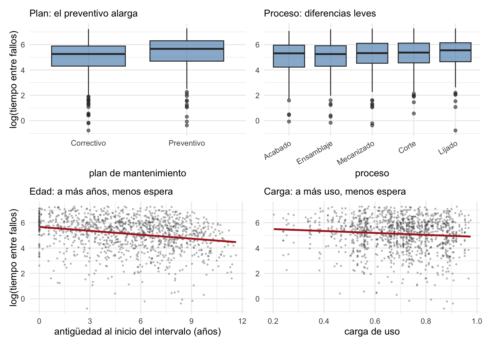
Figura 22: Descriptivo relacional entre el tiempo entre fallos (en escala log) y las cuatro covariables candidatas, sobre los fallos observados. Arriba, las categóricas (plan y proceso); abajo, las continuas (edad y carga) con recta de tendencia. Es descriptivo: usa solo los fallos observados, no corrige la censura.
Las cuatro dejan una señal con sentido físico: el plan preventivo desplaza la nube hacia esperas más largas; a mayor edad de la máquina al empezar el intervalo, esperas más cortas (el desgaste); a mayor carga de uso, también más cortas (cuanto más se le exige, antes vuelve a fallar); y el proceso ordena de forma más tenue —el lijado aguanta algo más, las etapas de más trajín algo menos—. Son justo las cuatro que un modelo del riesgo de fallo debería recoger. La criticidad y el fabricante no aparecen: gobiernan el coste (Unidad 3.1), no la frecuencia, y su irrelevancia para el tiempo la confirmaremos con un contraste formal en la Sección 5.4.
5.2 Kaplan–Meier: la mirada descriptiva
Antes de modelar, describimos. El estimador de Kaplan–Meier(Kaplan & Meier, 1958) reconstruye la función de supervivencia \(S(t)=\Pr(T>t)\) —aquí la probabilidad de que una máquina aguante sin averiarse al menos \(t\) días desde su último fallo— respetando la censura: cada intervalo contribuye mientras está en observación y sale del conjunto de riesgo al fallar o al censurarse. Lo miramos por plan de mantenimiento (preventivo -si se aplica mantenimiento periódico- o correctivo -sin plan de mantenimiento-), que es la pregunta de negocio (¿interesa aplicar mantenimiento siempre/específico?, Figura 23):
Código
km <-survfit(Surv(tiempo_entre, evento) ~ plan_mantenimiento, data = iv)survminer::ggsurvplot(km, data = iv, conf.int =TRUE, risk.table =TRUE,censor =TRUE, legend.labs =c("Correctivo", "Preventivo"),xlab ="días desde el último fallo",ylab ="S(t) = probabilidad de seguir sin averiarse")
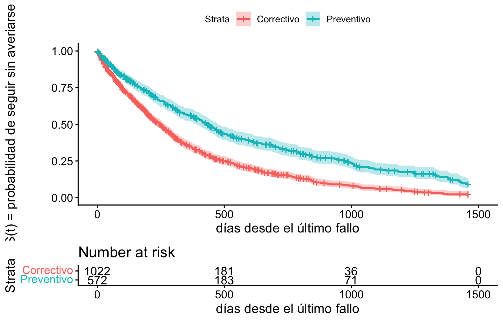
Figura 23: Curvas de Kaplan–Meier del tiempo entre fallos, por plan de mantenimiento, con intervalos de confianza y marcas de censura. La curva del plan preventivo se mantiene por encima: sus máquinas tardan más en volver a averiarse.
La curva del plan preventivo domina a la del correctivo: a cualquier horizonte, la probabilidad de seguir sin fallar es mayor. Lo resumimos con las medianas de supervivencia —la mediana del correctivo ronda los 250 días y la del preventivo supera los 430 (el cálculo a continuación)— y lo contrastamos seguidamente con la prueba de log-rank(Mantel, 1966):
Código
km # imprime las medianas por grupo
Call: survfit(formula = Surv(tiempo_entre, evento) ~ plan_mantenimiento,
data = iv)
n events median 0.95LCL 0.95UCL
plan_mantenimiento=Correctivo 1022 803 248 222 268
plan_mantenimiento=Preventivo 572 391 434 387 476
Código
survdiff(Surv(tiempo_entre, evento) ~ plan_mantenimiento, data = iv) # log-rank
Call:
survdiff(formula = Surv(tiempo_entre, evento) ~ plan_mantenimiento,
data = iv)
N Observed Expected (O-E)^2/E (O-E)^2/V
plan_mantenimiento=Correctivo 1022 803 657 32.6 75.4
plan_mantenimiento=Preventivo 572 391 537 39.8 75.4
Chisq= 75.4 on 1 degrees of freedom, p= <2e-16
La diferencia es muy significativa: el plan preventivo espacia las averías. El log-rank es un buen titular, pero no cuantifica cuánto ni ajusta por otras variables (las máquinas con plan preventivo tienden además a ser más críticas y algo más viejas —el plan se asignó no al azar—). Para eso necesitamos un modelo.
🔧 En R. Describir supervivencia (paquete survival)
Cuatro funciones cubren todo lo descriptivo de esta sección:
Surv(tiempo_entre, evento) — construye la respuesta «tiempo + estado»; al imprimirla, un + marca las observaciones censuradas. Es el objeto que todas las funciones siguientes esperan.
survfit(Surv(...) ~ plan_mantenimiento) — estima la curva de Kaplan–Meier por grupo; al imprimir el objeto, devuelve el n, los eventos y la mediana de supervivencia de cada grupo.
survminer::ggsurvplot() — dibuja esas curvas con intervalo de confianza, marcas de censura y tabla de riesgo (risk.table).
survdiff(Surv(...) ~ plan_mantenimiento) — prueba de log-rank: contrasta si las curvas de supervivencia difieren entre grupos (sin cuantificar cuánto ni ajustar por covariables).
5.3 El modelo AFT y la censura en la verosimilitud
El modelo de vida acelerada (accelerated failure time, AFT) es el puente natural desde lo que ya sabemos. Modela el logaritmo del tiempo como lineal en las covariables: \[\log T_i = \beta_0 + \beta_1 x_{i1} + \dots + \sigma\,\varepsilon_i,\] donde \(\varepsilon\) tiene una distribución de media 0 y escala 1, y \(\sigma\) es un parámetro de escala. La distribución que se elige para \(\varepsilon\)fija la familia del tiempo \(T\): como \(T=e^{\log T}\), esa distribución —definida en la escala del log-tiempo— se exponencia y se convierte en la de \(T\) —en la escala del tiempo—; de ahí los nombres «log-»:
Las dos últimas se leen en el propio nombre (exponenciar una normal da una log-normal; una logística, una log-logística); la de valor extremo → Weibull es la menos evidente, pero es un hecho conocido. Elegir dist= en survreg no es, pues, más que elegir la forma de \(\varepsilon\). Es, en esencia, una regresión sobre \(\log T\) —emparentada con el log-OLS de la Unidad 3.2—, con una diferencia capital:
La censura entra en la verosimilitud
En las Unidades 3.1 y 3.2 todas las observaciones eran completas y cada una contribuía a la verosimilitud con su densidad\(f(t_i)\). Con censura, una última espera que a la fecha de cierre seguía sin fallar no aporta «falló en \(t_i\)», sino «no había fallado todavía en \(t_i\)», y su contribución correcta es la función de supervivencia\(S(t_i)=\Pr(T>t_i)\). La verosimilitud combina las dos clases de aporte: \[L=\prod_{i:\,\text{fallo}} f(t_i)\;\prod_{i:\,\text{censura}} S(t_i).\] Esta es la idea que distingue la supervivencia de una regresión ordinaria sobre \(\log T\): no se tiran las observaciones incompletas, se usan como desigualdades. Ajustar lm(log(tiempo_entre) ~ ...) sobre los intervalos que acabaron en fallo sería sencillamente incorrecto (Aitkin & Clayton, 1980).
¿Por qué empezar por la Weibull?
Antes de ajustar, conviene mirar la respuesta. El tiempo entre fallos es positivo y marcadamente asimétrico a la derecha —una cola larga de esperas largas, con valores extremos—, el mismo terreno que el coste en la Unidad 3.1: descarta de entrada el gaussiano y nos sitúa en la familia positiva/de supervivencia. ¿Pero cuál de ellas? Una pista está en la escala logarítmica: si el tiempo fuera log-normal, \(\log T\) saldría aproximadamente simétrico; aquí, en cambio, \(\log T\) es claramente asimétrico hacia la izquierda, y esa cola izquierda es justo la huella de la distribución de valor extremo que define la Weibull (recuerda: \(\varepsilon\) de valor extremo \(\Rightarrow T\) Weibull). La Figura 24 enfrenta las dos escalas.
Código
fallos <- iv[iv$evento ==1, ] # los fallos observados (la censura no tiene un tiempo de fallo que dibujar)p_t <-ggplot(fallos, aes(tiempo_entre)) +geom_histogram(bins =40, fill ="steelblue", colour ="white") +labs(x ="tiempo entre fallos (días)", y ="frecuencia",subtitle ="T: positiva, cola larga a la derecha")p_logt <-ggplot(fallos, aes(log(tiempo_entre))) +geom_histogram(bins =40, fill ="darkorange", colour ="white") +labs(x ="log(tiempo entre fallos)", y ="frecuencia",subtitle ="log T: asimétrica hacia la izquierda")p_t + p_logt # patchwork
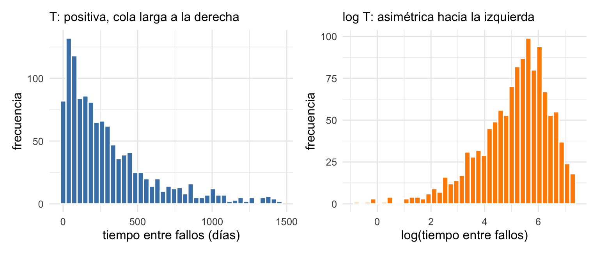
Figura 24: Distribución del tiempo entre fallos (solo los intervalos que acabaron en avería). Izquierda: en su escala original, T es positiva y con cola larga a la derecha (valores extremos), el terreno de la familia de supervivencia. Derecha: en escala logarítmica, log T queda asimétrico hacia la izquierda; esa cola izquierda —y no la simetría que exigiría una log-normal— es la firma de la distribución de valor extremo de la Weibull.
A esa señal empírica se suma una razón de fondo: la Weibull es el caballo de batalla de la supervivencia paramétrica —generaliza la exponencial añadiéndole un parámetro de forma— y es la única familia que es a la vez AFT y de riesgos proporcionales, lo que la convierte en el puente natural hacia el Cox de la Unidad 3.6. Es, pues, un punto de partida razonado, no definitivo: los histogramas son una motivación heurística —y con solo los fallos observados, la censura no está corregida—, así que la elección se confirma (o se corrige) por AIC y por los residuos de Cox–Snell en la Sección 5.6, que sí respetan la censura.
Ajustamos un AFT con las cuatro covariables que el descriptivo relacional de la Sección 5.1 señaló —plan, edad, carga y proceso— mediante survival::survreg, que maximiza la verosimilitud incorporando la censura. Empezamos por la Weibull:
Call:
survreg(formula = formula_aft, data = iv, dist = "weibull")
Value Std. Error z p
(Intercept) 6.88609 0.15108 45.58 <2e-16
plan_mantenimientoPreventivo 0.61406 0.06212 9.89 <2e-16
antiguedad_ini -0.09939 0.00967 -10.28 <2e-16
carga -0.70487 0.18936 -3.72 0.0002
procesoMecanizado -0.09910 0.09060 -1.09 0.2741
procesoLijado 0.07539 0.09682 0.78 0.4362
procesoEnsamblaje -0.05720 0.09020 -0.63 0.5260
procesoAcabado -0.12538 0.09009 -1.39 0.1640
Log(scale) -0.00217 0.02326 -0.09 0.9256
Scale= 0.998
Weibull distribution
Loglik(model)= -8390.2 Loglik(intercept only)= -8493.6
Chisq= 206.82 on 7 degrees of freedom, p= 4.1e-41
Number of Newton-Raphson Iterations: 5
n= 1594
🔧 En R. Ajustar un AFT con survreg()
Un solo motor, survival::survreg(), cubre toda la familia paramétrica:
survreg(Surv(tiempo_entre, evento) ~ ..., dist = "weibull") — ajusta el AFT por máxima verosimilitud incorporando la censura de forma automática (densidad \(f\) para los fallos, supervivencia \(S\) para los censurados). La fórmula usa el mismo Surv(...) de la sección anterior como respuesta.
dist = — elige la familia, que no es más que la forma de \(\varepsilon\): "weibull", "exponential", "lognormal" o "loglogistic". Cambiarla es el experimento de la Sección 5.6.
summary(aft_w) — imprime los coeficientes en escala log-tiempo (columna Value), sus errores estándar y el término Log(scale)\(=\log\sigma\).
aft_w$scale — el \(\sigma\) de la Weibull; su inversa 1/aft_w$scale es la forma (shape), que leeremos en la Sección 5.4. Y broom::tidy(aft_w, conf.int = TRUE) ordena la salida para exponenciar los coeficientes en factores de aceleración.
5.4 Interpretación: el factor de aceleración
En un AFT los coeficientes viven en la escala del log-tiempo, así que \(e^{\beta}\) es un factor de aceleración: el número por el que se multiplica el tiempo de espera cuando la covariable sube una unidad. Un factor mayor que 1 alarga la espera (avería más tarde); menor que 1, la acorta. El 1 es el punto neutro —la covariable no toca el tiempo—, y como el efecto es multiplicativo, lo que mide la fuerza es la distancia a 1: cuanto más se aleja el factor de 1 —hacia arriba o hacia abajo—, mayor es el efecto sobre la espera (un 1.8 la alarga casi el doble; un 0.5, la reduce a la mitad). Ojo, esa distancia es multiplicativa, no aditiva: 0.5 y 2 son efectos de igual magnitud en sentidos opuestos (en la escala log, \(\log 0.5\) y \(\log 2\) equidistan de 0). Es una lectura distinta —y más intuitiva para mantenimiento— que el hazard ratio que veremos en la Unidad 3.6: aquí hablamos de estirar o encoger el reloj, no de multiplicar un riesgo instantáneo.
Tabla 38: Factores de aceleración del AFT Weibull (coeficientes exponenciados): factor multiplicativo sobre el tiempo entre fallos, con intervalo de confianza al 95 %. Se omite el término de escala.
La lectura de negocio del plan preventivo es el titular: su factor de aceleración ronda 1.85, es decir, el mantenimiento preventivo casi duplica el tiempo hasta la siguiente avería, a igualdad del resto. Y ese factor se puede traducir a días concretos, que es justo la cifra que un análisis coste-beneficio del plan necesita. Es la misma conclusión del Kaplan–Meier, pero ahora cuantificada y ajustada por la edad, la carga y el proceso.
Merece la pena ver la cuenta. Construimos una máquina de referencia —con la antigüedad y la carga medias de la flota y un proceso fijo (Corte, la categoría de referencia)— y, cambiando solo el plan, le pedimos al modelo la mediana del tiempo entre fallos con predict(aft_w, type = "quantile", p = 0.5): la mediana es el cuantil 0.5 de la distribución de \(T\) que el AFT ajusta para ese perfil. La diferencia entre ambas medianas, dias_ganados, es la vida útil que el preventivo añade:
Código
# Días de espera predichos (mediana) para una máquina promedio, según el plannd <-data.frame(plan_mantenimiento =factor(c("Correctivo", "Preventivo"),levels =c("Correctivo", "Preventivo")),antiguedad_ini =mean(iv$antiguedad_ini),carga =mean(iv$carga),proceso =factor("Corte", levels =levels(iv$proceso)))pred <-predict(aft_w, newdata = nd, type ="quantile", p =0.5)data.frame(plan = nd$plan_mantenimiento, mediana_dias =round(pred),dias_ganados =c(NA, round(diff(pred))))
La mediana sube de unos 245 días con plan correctivo a unos 450 con preventivo: en torno a 200 días —cerca de siete meses— de marcha adicional entre averías para una máquina típica, el factor de aceleración (\(\approx 1.85\)) puesto en el lenguaje del calendario.
El resto de la Tabla 38 afina la historia. La carga es el predictor continuo más fuerte con diferencia: su factor de aceleración muy por debajo de 1 dice que una máquina muy exigida vive una fracción del tiempo entre fallos de una poco cargada —el desgaste es, sobre todo, cuestión de cuánto se le pide—. La edad al empezar el intervalo también acorta la espera, como cabía esperar: cada año de antigüedad recorta en torno a un 10 % el tiempo hasta el próximo fallo. El proceso aporta diferencias más tenues —las etapas de más trajín (mecanizado, acabado) tienden a esperas algo más cortas y el lijado a algo más largas—, pero individualmente quedan cerca del ruido.
Y hay un contraste que cierra un hilo de la Unidad 3.1. Allí la criticidad era el motor del coste: una avería en una máquina crítica costaba mucho más. Aquí, sobre el tiempo, no aparece:
Código
# ¿Aporta la criticidad algo a la explicación del TIEMPO entre fallos?aft_crit <-survreg(update(formula_aft, . ~ . + criticidad), dist ="weibull", data = iv)anova(aft_w, aft_crit) # contraste de razón de verosimilitudes
¿Un LRT si el AFT no es un GLM?
El contraste de razón de verosimilitudes no es privativo de los GLM. anova() sobre dos survreganidados calcula \(2(\ell_{\text{compl}}-\ell_{\text{red}})\) —lo que la tabla etiqueta como Deviance— y lo compara con una \(\chi^2\) de tantos grados de libertad como parámetros se añaden. Lo que lo legitima es la estimación por máxima verosimilitud de modelos anidados, no el ser un GLM: la «deviance» del GLM es solo su caso particular. Como el AFT es plenamente paramétrico, el LRT vale aquí igual.
El contraste no es significativo: la criticidad, que en la Unidad 3.1 era el motor del coste, es irrelevante para cuándo ocurre la avería. No es una contradicción, es una lección: una misma variable puede ser decisiva para una respuesta e inerte para otra. Modelar es siempre modelar una respuesta concreta, no «las variables importantes» en abstracto.
Conviene además leer la forma de la Weibull, porque es la que cuenta cómo se acumula el riesgo dentro de una espera. Y aquí importa fijar la parametrización, que se presta a confusión. La Weibull tiene dos parámetros —forma\(k\) y escala\(\lambda\)— y su función de riesgo (hazard) es \[h(t)=\frac{k}{\lambda}\left(\frac{t}{\lambda}\right)^{k-1},\] de modo que \(k>1\) da un riesgo creciente con el tiempo, \(k<1\)decreciente y \(k=1\)constante (la exponencial). Ahora bien, survreg no estima \(k\) directamente: ajusta el AFT en la forma \(\log T=\mu+\sigma\,\varepsilon\) y estima la escala del error\(\sigma\) —la que el summary imprime como Log(scale)\(=\log\sigma\)—. La forma se recupera con la relación \(k=1/\sigma\); es decir, del modelo ajustado, como 1/aft_w$scale:
Código
forma_weibull <-1/ aft_w$scale # forma k = 1/sigma; k>1 creciente, k<1 decreciente, k=1 constanteround(c(sigma_escala = aft_w$scale, forma_k = forma_weibull), 3)
sigma_escala forma_k
0.998 1.002
La forma sale prácticamente igual a 1, y eso es una pequeña sorpresa que merece pararse. Un valor \(\approx 1\) dice que el riesgo instantáneo de fallo no cambia con el tiempo transcurrido desde el último fallo: el proceso de espera es esencialmente sin memoria. ¿No habíamos dicho que las máquinas se desgastan? Sí —y el DGP lo confirma—, pero el envejecimiento vive entre intervalos, no dentro de uno: lo captura la covariable antiguedad_ini (la edad al empezar la espera), no la duración de la espera en curso. Una máquina más vieja encadena esperas más cortas, pero dentro de cada espera el reloj no «recuerda» cuánto lleva sin fallar. Es una distinción sutil y fácil de pasar por alto, y aquí el dato la hace visible.
🔧 En R. Leer e interpretar un AFT
Cuatro gestos cubren toda la interpretación de esta sección:
broom::tidy(aft_w, conf.int = TRUE) — ordena los coeficientes (escala log-tiempo) con su intervalo; basta exponenciarlos (exp) para pasar a factores de aceleración y sus IC.
predict(aft_w, newdata, type = "quantile", p = 0.5) — predice un cuantil del tiempo para un perfil dado; con p = 0.5 es la mediana (cambia p para otros cuantiles).
anova(aft_w, aft_crit) — contraste de razón de verosimilitudes entre dos survreganidados; no es la deviance de un GLM, sino \(2\Delta\ell \sim \chi^2\), válido por ser un ajuste por máxima verosimilitud.
aft_w$scale es la escala \(\sigma\) del error; 1/aft_w$scale es la forma\(k\) de la Weibull (\(k>1\) riesgo creciente, \(k=1\) exponencial).
5.5 Inferencia: del error estándar al contraste
Hemos estimado e interpretado; toca cuantificar la incertidumbre. Como el AFT se ajusta por máxima verosimilitud, la inferencia sigue el guion habitual de la verosimilitud, en dos niveles.
Un coeficiente cada vez: Wald. El summary(aft_w) trae, junto a cada estimación \(\hat\beta\) (Value), su error estándar —de la raíz de la diagonal de la inversa de la información observada— y un estadístico \(z=\hat\beta/\text{EE}\) con su \(p\) normal. Es el contraste de Wald de \(H_0:\beta=0\): ¿mueve esta covariable el tiempo, a igualdad del resto? El intervalo de confianza es \(\hat\beta\pm z_{1-\alpha/2}\,\text{EE}\) en la escala log-tiempo; exponenciado, es el IC del factor de aceleración que ya leímos en la Tabla 38.
Aquí no hay problema de retransformación (a diferencia de 3.2)
Exponenciar el IC del coeficiente da un IC exacto para el factor de aceleración, no una aproximación sesgada. Dos razones: exponenciar es monótono —cada extremo del intervalo va al extremo correspondiente— y el factor es un cociente que multiplica por igual todos los cuantiles del tiempo, no una media de una variable asimétrica. Por eso no reaparece el sesgo de retransformación que en la Unidad 3.2 obligaba al smearing de Duan: aquel venía de estimar \(E[\log Y]\) por OLS y exponenciar; aquí ajustamos toda la distribución por verosimilitud, y cualquier resumen (mediana, media, cuantiles) sale directo de ella.
Varios parámetros a la vez: razón de verosimilitudes. Cuando la pregunta abarca varios coeficientes —¿aporta la criticidad, con sus dos niveles?— el instrumento no es Wald sino el LRT entre modelos anidados, con anova(), como en la Sección 5.4.
Código
# ¿Son significativas todas las variablesanova(aft_w)
Y hay un caso especialmente limpio: exponencial frente a Weibull es contrastar \(H_0:\sigma=1\) (forma \(k=1\)), porque la exponencial es la Weibull con la forma fijada. Podemos preguntar directamente si liberar la forma aporta:
Código
# ¿Aporta la forma libre de la Weibull, o basta la exponencial? H0: sigma = 1 (k = 1)aft_exp <-survreg(formula_aft, dist ="exponential", data = iv)anova(aft_exp, aft_w)
El contraste sale no significativo (deviance \(\approx 0.01\) sobre 1 g.l., \(p\approx 0.93\)): liberar la forma no mejora el ajuste de forma apreciable —coherente con la forma \(\approx 1\) y con lo que el AIC confirmará en la Sección 5.6—. Para modelos no anidados (familias distintas de \(\varepsilon\), como Weibull frente a log-normal) el LRT ya no aplica y la comparación pasa por el AIC, la herramienta de la sección siguiente.
Wald frente a verosimilitud perfilada
Los errores estándar y los \(p\) de survreg/broom son de Wald: suponen que la verosimilitud es aproximadamente cuadrática alrededor del máximo. Con censura fuerte, muestras pequeñas o parámetros cerca de una frontera, esa aproximación flaquea, y un intervalo por verosimilitud perfilada (o directamente un LRT) es más fiel. En este banco —1594 intervalos, censura moderada— Wald y perfil coinciden en la práctica; conviene, aun así, saber cuál se está usando.
5.6 Elección de distribución, diagnóstico y validación
La Weibull es una elección, no la única. La familia AFT ofrece varias formas de \(\varepsilon\), e —igual que en la Unidad 3.2 con las familias de la Gamma— la decisión se toma comparando ajustes, no asumiendo por defecto o simplemente mirando los datos (como hicimos al inicio de plantear el modelo en la Sección 5.3, si bien el histograma ya nos daba alguna pista interesante). Ajustamos pues el modelo con todas las distribuciones posibles, y los comparamos con el AIC (Tabla 39).
Tabla 39: Comparación de distribuciones AFT por AIC (mismo predictor, distinta forma de la respuesta). La exponencial es la Weibull con forma fija en 1.
La exponencial gana, y lo hace por la puerta de atrás: iguala prácticamente el ajuste de la Weibull —era de esperar, con una forma tan cercana a 1— pero con un parámetro menos, así que el AIC la prefiere por parsimonia. Es la confirmación numérica de lo que ya sospechábamos: el hazard constante de la exponencial basta porque el proceso de espera es sin memoria. La log-normal y la log-logística —cuyo hazard sube y luego baja, describiendo un pico de riesgo intermedio— quedan claramente detrás: aquí no hay tal pico. Nos quedamos con la Weibull como modelo de trabajo (engloba a la exponencial y deja la forma libre para que el dato hable), sabiendo que la exponencial sería una simplificación defendible.
El AIC ordena las familias con un número, pero esa misma decisión también se puede ver en un gráfico —y, a diferencia de los histogramas de la Sección 5.3, uno que sí tiene en cuenta la censura—. La idea es sencilla. Cada familia AFT tiene una fórmula cerrada para su supervivencia \(S(t)\), y si a esa \(S(t)\) le aplicamos la transformación adecuada, el resultado queda lineal en \(\log t\). La Weibull lo ilustra bien: como \(S(t)=\exp\!\big(-(t/\lambda)^{k}\big)\), tomando dos veces logaritmos, \[\log\!\big(-\log S(t)\big)=k\,\log t-k\,\log\lambda,\] que es una recta en \(\log t\) con pendiente \(k\) (la forma). Así, si los tiempos fueran Weibull, al dibujar \(\log(-\log\hat S)\) frente a \(\log t\) los puntos caerían sobre una recta. Cada familia tiene su propia transformación linealizadora: la Weibull, \(\log(-\log S)\); la log-logística, \(\operatorname{logit}(1-S)\); la log-normal, \(\Phi^{-1}(1-S)\) (el probit). Estimamos \(S(t)\) por Kaplan–Meier, aplicamos las tres transformaciones y miramos cuál sale más recta: esa apunta a la familia que mejor describe los datos (Figura 25).
Código
km1 <-survfit(Surv(tiempo_entre, evento) ~1, data = iv)d <-data.frame(t = km1$time, S = km1$surv)d <-subset(d, t >0& S >1e-6& S <1-1e-6)niveles <-c("Weibull: log(-log S)", "Log-logística: logit(1-S)", "Log-normal: probit(1-S)")lin <-rbind(data.frame(logt =log(d$t), y =log(-log(d$S)), familia = niveles[1]),data.frame(logt =log(d$t), y =log((1- d$S) / d$S), familia = niveles[2]),data.frame(logt =log(d$t), y =qnorm(1- d$S), familia = niveles[3]))lin$familia <-factor(lin$familia, levels = niveles)ggplot(lin, aes(logt, y)) +geom_point(size =0.6, alpha =0.5, colour ="grey30") +geom_smooth(method ="lm", se =FALSE, colour ="firebrick", linewidth =0.8) +facet_wrap(~ familia, scales ="free_y") +labs(x ="log(tiempo entre fallos)", y ="transformada de S(t)")
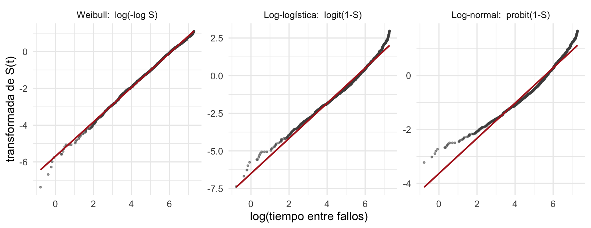
Figura 25: Diagnóstico gráfico de familia AFT sobre la supervivencia de Kaplan–Meier (respeta la censura). Cada familia implica que una transformada de S(t) es lineal en log(t); el panel más recto identifica la mejor familia. La Weibull es la más lineal, y la pendiente de su recta estima la forma (≈ 1, casi exponencial).
La nube de la Weibull es la que mejor se pega a una recta (R² ≈ 0.998, frente a ≈ 0.99 de la log-logística y ≈ 0.97 de la log-normal): confirma gráficamente el veredicto del AIC. Y su pendiente, cercana a 1, vuelve a decir lo mismo que la forma del modelo —un proceso de espera casi sin memoria, a un paso de la exponencial—. La log-normal es la que peor se endereza: su curvatura delata el pico de riesgo intermedio que aquí no existe.
Un diagnóstico gráfico complementario, ya sobre el modelo ajustado, son los residuos de Cox–Snell. Para cada intervalo se calcula el riesgo acumulado que el modelo predice hasta su tiempo observado, \(r_i=\hat H(t_i\mid x_i)=-\log \hat S(t_i\mid x_i)\) (en el código, la versión estandarizada y exponenciada del ajuste Weibull). Y se miran por una razón: hay un resultado clásico que dice que, si el modelo es correcto, esos residuos se comportan como una muestra —censurada— de una exponencial estándar\(\mathrm{Exp}(1)\) (los intervalos censurados heredan la censura y dan residuos censurados). Así que lo que se les pide es concreto: que su propia supervivencia de Kaplan–Meier coincida con la de una \(\mathrm{Exp}(1)\), es decir, con la curva teórica \(S(r)=e^{-r}\). Si ambas se solapan, la forma elegida encaja; una separación sistemática delataría que no. Es lo que examina la Figura 26.
Código
# Residuo estandarizado de valor extremo; su exponencial es un residuo de Cox–Snell ~ Exp(1)res_cs <-exp((log(iv$tiempo_entre) - aft_w$linear.predictors) / aft_w$scale)km_res <-survfit(Surv(res_cs, iv$evento) ~1)plot(km_res, conf.int =FALSE, xlim =c(0, 4),xlab ="residuo de Cox–Snell", ylab ="supervivencia del residuo")curve(exp(-x), from =0, to =4, add =TRUE, col ="firebrick", lwd =2)legend("topright", c("KM de los residuos", "exponencial estándar teórica"),lty =1, col =c("black", "firebrick"), bty ="n")
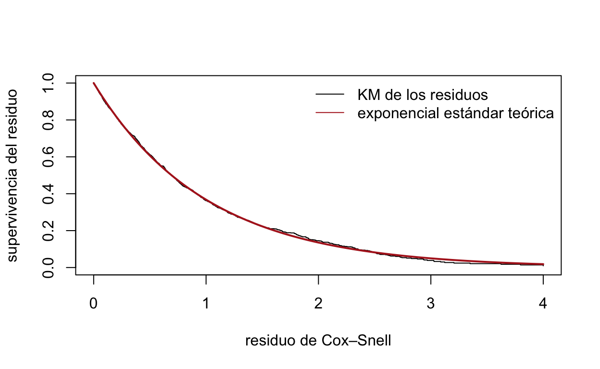
Figura 26: Residuos de Cox–Snell del AFT Weibull: supervivencia de Kaplan–Meier de los residuos (negro) frente a la de una exponencial estándar (rojo). Si el modelo ajusta, ambas curvas coinciden. El acuerdo razonable respalda la elección de distribución.
Validación contra el DGP
Aquí hay un matiz de rigor que quiero dejar claro, porque distingue este caso de los anteriores.
El AFT es una aproximación, no el modelo verdadero
En 3.1 la Gamma era la familia del proceso generador, y recuperábamos sus coeficientes casi exactos. Aquí no. El DGP genera las averías como un proceso recurrente: una intensidad de fallo que crece con la edad de la máquina, un mantenimiento preventivo cuyo efecto protector decae con los días transcurridos desde la última intervención, y una fragilidad de máquina que liga entre sí todas sus esperas. El AFT de intervalos es la mejor aproximación paramétrica a ese proceso, no su forma exacta. Por eso la validación aquí es cualitativa: comprobamos que la dirección de los efectos es correcta, no que los números coincidan con parámetros verdaderos que, en la escala AFT, no existen tal cual.
Con esa cautela, el modelo acierta en lo que importa: el plan preventivo sale protector (alarga la espera), la carga y la edad la acortan, y la forma \(\approx 1\) retrata fielmente la parte sin memoria del proceso. Lo que el AFT ingenuo no puede capturar es doble, y ambas grietas apuntan a la Unidad 3.6:
La correlación intra-máquina. Los varios intervalos de una máquina comparten su fragilidad, así que no son independientes; tratarlos como si lo fueran encoge los errores estándar. El síntoma es concreto: una covariable sin efecto real en el DGP —el fabricante— puede cruzar el umbral de significación en el ajuste ingenuo. Es el mismo falso positivo que ya dio en el coste (3.1) y que el agrupamiento corrigió en el GLMM (3.3): no es que el fabricante importe, es que la correlación no modelada infla la confianza. Una fragilidad (3.5) disciplina aquí ese espejismo.
La no proporcionalidad. El efecto del mantenimiento se debilita con el tiempo, y un factor de aceleración constante solo puede promediar ese efecto cambiante. Esa grieta —la no proporcionalidad— es justo la que abrirá la Unidad 3.6 con el modelo de Cox y su diagnóstico.
Diagnóstico de un AFT: recomendaciones básicas
Un guion reutilizable para cualquier modelo de vida acelerada:
Elige la familia comparando, no por defecto.AIC entre familias no anidadas (Weibull, exponencial, log-normal, log-logística) y razón de verosimilitudes para las anidadas (exponencial frente a Weibull \(=\) contrastar \(\sigma=1\)).
Míralo también en un gráfico —y que respete la censura. El diagrama linealizado (la transformada de \(S(t)\) de Kaplan–Meier frente a \(\log t\)): la familia correcta sale recta.
Comprueba la bondad de ajuste global con los residuos de Cox–Snell: su Kaplan–Meier debe seguir una exponencial estándar \(\mathrm{Exp}(1)\).
Lee la forma\(k=1/\sigma\) y contrástala con el mecanismo: \(k>1\) riesgo creciente (desgaste), \(k=1\) constante (sin memoria), \(k<1\) decreciente.
Cuida la independencia. Con eventos recurrentes o agrupamiento (varias filas por unidad), los errores estándar ingenuos son optimistas: la corrección es una fragilidad o errores robustos (Unidad 3.6).
Ante censura fuerte o muestras pequeñas, prefiere la verosimilitud perfilada al Wald. Y, si hay una «verdad» conocida (DGP/simulación), valida la dirección de los efectos, sin exigir coincidencia exacta cuando el AFT es solo una aproximación.
Tarea del estudiante (3.5)
Sobre el banco de averías del caso, con la tabla intervalos:
Estimad la supervivencia entre fallos por Kaplan–Meier según el plan de mantenimiento y contrastadla con log-rank. Interpretad las medianas de supervivencia en días.
Ajustad un AFT Weibull e interpretad en tiempo (factor de aceleración) el efecto del plan, la antigüedad y la carga. ¿Cuántos días de marcha entre fallos añade, aproximadamente, el plan preventivo a una máquina promedio?
Comparad exponencial, Weibull, log-normal y log-logística por AIC, y respaldad la elección con diagnóstico: el gráfico linealizado de familia y los residuos de Cox–Snell (su Kaplan–Meier debería seguir una \(\mathrm{Exp}(1)\)). Justificad la elección conectándola con la forma del hazard que cada una implica. ¿Qué dice una forma de Weibull \(\approx 1\) sobre la memoria del proceso de fallo, y por qué es coherente con un desgaste que depende de la edad y no del tiempo desde el último fallo?
La censura es esencial: reajustad el modelo descartando las esperas censuradas (la última de cada máquina) y comparad los coeficientes. ¿En qué dirección se sesga el resultado al tirar la información parcial?
Discutid una limitación del AFT ingenuo en este problema: ¿por qué los intervalos de una misma máquina no son independientes, y qué efecto tiene eso sobre los errores estándar y la significación? Poned un ejemplo con una variable que el DGP sabe sin efecto.
(Palanca de decisión) El intervalo_mant es una variable prescriptiva: acortar el intervalo entre mantenimientos debería retrasar el fallo. Explorad, sobre las máquinas con plan preventivo, si un intervalo más corto se asocia a esperas más largas, y discutid por qué esta pregunta se responde mejor con el modelo de la Unidad 3.6.
Y en el estudio de caso (3.8). Todo lo anterior es el ensayo de la Propuesta 3 · ¿Cuánto dura un cliente?, donde la respuesta es el tiempo hasta la baja de una póliza: Kaplan–Meier descriptivo, elección de la distribución del error entre las cuatro —allí la log-logística deja de ser una candidata más— y lectura en factores de aceleración. Dos avisos que esta unidad ya ha preparado: el par correcto es Surv(antiguedad, baja) y nuncat_baja, que en las pólizas censuradas contiene información del futuro; y las pólizas, a diferencia de nuestras máquinas, aportan una sola espera, así que la dependencia intra-sujeto del apartado 5 no se plantea ahí en los mismos términos.
6 · Cox: del tiempo al riesgo
Todo lo anterior ha comprometido siempre una distribución para la respuesta, ajustada por máxima verosimilitud: la Gamma del coste en el GLM de la Unidad 3.1, sus alternativas —inversa gaussiana y log-normal— al elegir familia y escala en la Unidad 3.2, el GLMM Gamma con efecto aleatorio de máquina de la Unidad 3.3, y la Weibull —con la exponencial y la log-normal como rivales— del AFT para el tiempo entre fallos en la Unidad 3.5. Todos son un GLM o un pariente cercano (el AFT no es GLM), y todos parten de fijar la forma de la respuesta. El modelo de Cox da un paso al lado. No especifica ninguna distribución para el tiempo de fallo: deja el riesgo de base libre y estima solo cómo lo desplazan las covariables. Esa renuncia —no comprometerse con una forma— es su gran fortaleza y la razón de su popularidad, pero también lo saca del marco: Cox no es un GLM. Esta unidad lo sitúa como la frontera del recorrido y aprovecha para las dos lecciones que mejor enseña sobre este banco: cómo se disciplina la correlación entre las averías de una misma máquina —una fragilidad más errores robustos, que cierran el falso positivo del fabricante que dejó abierto la Unidad 3.5— y cómo el diagnóstico de la proporcionalidad depara aquí una sorpresa instructiva.
Y el hilo de supervivencia tampoco arranca aquí: lo venimos tejiendo desde los casos anteriores, y siempre dentro del marco GLM. En la Unidad 1.5 definimos la función de supervivencia\(S(t)\) y el hazard, describimos con Kaplan–Meier y modelamos el tiempo a evento en tiempo discreto: troceando el seguimiento en formato persona-periodo y ajustando un GLM binario con enlace cloglog, cuyos coeficientes ya se leían como hazard ratios(Allison, 1982). En la Unidad 2.6 pasamos a las tasas: el hazard a trozos (piecewise), ajustado como un GLM de Poisson con offset de exposición —y allí ya asomaron la comparación con Cox y la fragilidad—. En ambos casos, el truco para no salir del GLM era el mismo: discretizar el tiempo.
Lo que este bloque añade es la mirada en tiempo continuo, sin trocear. La Unidad 3.5 la abrió con el AFT, que sí compromete una distribución para el tiempo. Y el Cox de esta unidad da el último paso: modela el hazard en continuo pero deja el riesgo de base \(h_0(t)\) completamente libre, ni troceado ni con una forma impuesta. Esa es a la vez su novedad y su precio: máxima flexibilidad sobre la forma del riesgo a cambio de salir del marco GLM (verosimilitud parcial, semiparamétrico). No es casual que la promesa ya estuviera escrita: la Unidad 1.5 aplazó «la maquinaria de Cox» expresamente al Caso 3. Aquí la desarrollamos.
Sobre esta unidad
Objetivo general: supervivencia (espiral). Cubrimos el modelo de riesgos proporcionales de Cox: qué estima y por qué no es un GLM (verosimilitud parcial); su interpretación (hazard ratios y la equivalencia con el AFT); la fragilidad como efecto aleatorio de la supervivencia (eco del GLMM de 3.3); el diagnóstico de la proporcionalidad (Schoenfeld); y el Cox extendido con covariables dependientes del tiempo.
6.1 Contexto: el reto y los datos
La segunda mitad del caso pregunta por el ritmo del fallo. Ya no es cuánto cuesta una avería, sino cuándo vuelve: dado que una máquina lleva un tiempo sin averiarse, ¿cuál es su riesgo instantáneo de hacerlo ahora, y cómo lo suben o bajan su plan de mantenimiento, su edad, su carga y su proceso? El Cox responderá con un hazard ratio por covariable. Pero el reto de esta unidad tiene una segunda capa: comprobar si esos efectos son constantes en el tiempo —el supuesto de proporcionalidad— y, sobre todo, descubrir que el riesgo de una máquina cambia a lo largo de su vida por razones que el modelo más simple no puede ni representar. Ahí acabaremos necesitando un Cox extendido.
Los datos son los mismos intervalos entre fallos de la Unidad 3.5: la tabla banco$intervalos, con una fila por espera entre dos averías consecutivas, donde la última espera de cada máquina llega censurada al cierre de la ventana (≈ 1 de cada 4). Las columnas que nos importan son:
Columna
Qué representa
id_maquina
identificador de la máquina (se repite: varias esperas por máquina)
n_intervalo
número de orden de la espera dentro de la máquina
tiempo_entre
duración de la espera —tiempo entre fallos o hasta el fin de la observación—, en días (la respuesta)
evento
1 si la espera terminó en avería, 0 si terminó censurada
antiguedad_ini
edad de la máquina (años) al comenzar esa espera
plan_mantenimiento
plan de la máquina: Correctivo / Preventivo
carga, proceso, fabricante, criticidad
covariables fijas de la máquina
Su descripción por Kaplan–Meier y log-rank ya la hicimos en la Unidad 3.5, así que aquí solo la recordamos con un recuento, y con el aspecto de la base de datos:
Mientras el AFT de la Unidad 3.5 modelaba el tiempo entre averías, el Cox va a modelar directamente el riesgo de sufrir una nueva avería.
6.2 Riesgos proporcionales
El modelo de Cox (Cox, 1972) escribe el hazard\(h(t\mid x)\) —la propensión instantánea a fallar en el momento \(t\) habiendo llegado sin fallar hasta \(t\)— para una máquina con vector de covariables \(x=(x_1,\dots,x_p)\) como \[h(t\mid x) = h_0(t)\,\exp(\beta_1 x_1 + \dots + \beta_p x_p) = h_0(t)\,e^{x^\top\beta}.\] Dos piezas encajadas: un riesgo de base\(h_0(t)\) —común a todas las máquinas y sin forma prefijada (aquí está la renuncia que sacará a Cox del marco GLM)— y un multiplicador\(e^{x^\top\beta}\) que no depende de \(t\): mide cuánto se aparta esa máquina del riesgo base según sus características, y ese factor es el mismo en todo instante.
De ahí el nombre —riesgos proporcionales—, que conviene justificar con cuidado en la notación. Tomemos dos máquinas, \(A\) y \(B\), con vectores de covariables \(x_A\) y \(x_B\). (Ojo a la distinción: \(x_1,\dots,x_p\) son las componentes del vector de una máquina —plan, edad, carga…—, mientras que \(x_A\) y \(x_B\) son los vectores completos de dos máquinas distintas.) Su cociente de hazards es \[\text{HR}=\frac{h(t\mid x_A)}{h(t\mid x_B)}
=\frac{h_0(t)\,e^{x_A^\top\beta}}{h_0(t)\,e^{x_B^\top\beta}}
=\exp\!\big((x_A-x_B)^\top\beta\big).\]
El riesgo de base \(h_0(t)\)se cancela, y con él desaparece el tiempo: el hazard ratio entre dos perfiles es una constante, la misma a las dos semanas que a los dos años. Eso es la proporcionalidad: los hazards de dos máquinas se mantienen en razón fija a lo largo de toda su vida. Dicho en logaritmos —y esta es la imagen que usaremos para diagnosticarla en la Sección 6.7—, \[\log h(t\mid x)=\log h_0(t)+x^\top\beta,\] las curvas de log-hazard de dos máquinas son paralelas: difieren en un desplazamiento vertical constante \((x_A-x_B)^\top\beta\) en todo\(t\). Si en los datos ese desfase cambiara con el tiempo, la proporcionalidad fallaría —y es justo lo que la prueba de Schoenfeld irá a buscar—.
Frente al AFT de la Unidad 3.5, el contraste es de lente: el AFT estira o encoge el reloj (un factor de aceleración sobre el tiempo de espera); Cox multiplica el riesgo (un hazard ratio). En general son dos modelos distintos —una distribución suele ser AFT o PH, no ambas, y cada lente daría su propio ajuste—. La Weibull es la excepción: es la única familia que es a la vez AFT y de riesgos proporcionales, de modo que sus dos descripciones no compiten, sino que son el mismo modelo reexpresado, con el factor de aceleración y el hazard ratio ligados por una fórmula fija. De ahí que el efecto que midió el AFT Weibull de la Unidad 3.5 y el que estima Cox aquí coincidan; lo verificamos numéricamente en la Sección 6.4.
¿Cuándo es idóneo Cox —y cuándo no?
El modelo de Cox es el caballo de batalla del análisis de supervivencia, y con razón. En un ensayo clínico que compara un tratamiento con un control (oncología, cardiología), o en fiabilidad industrial al enfrentar dos diseños de componente, muchas veces basta un único número —el hazard ratio— para resumir «cuánto multiplica el riesgo» un factor, sin comprometerse con la forma del riesgo de base, que rara vez se conoce. Cuando el efecto de una covariable es aproximadamente un multiplicador constante del riesgo durante todo el seguimiento, Cox es difícil de batir: flexible en lo que no sabemos (\(h_0(t)\)) y parco en lo que queremos medir (\(\beta\)).
Pero esa misma virtud —un HR constante en el tiempo— es una exigencia fuerte, y muchas situaciones realistas la incumplen:
Efectos que se desvanecen o crecen. Un fármaco potente al inicio que pierde fuelle, o un factor de riesgo que se atenúa con la edad: el HR de un predictor fijo cambia con \(t\), y el número único de Cox solo puede promediarlo. (Distinto de nuestro mantenimiento, cuyo valor —no su coeficiente— cambia con el tiempo: eso se resuelve con una covariable dependiente del tiempo, Sección 6.8, sin salir de riesgos proporcionales.)
Curvas que se cruzan. Una cirugía con alto riesgo temprano y bajo después frente a un tratamiento conservador; una inmunoterapia con beneficio diferido (nada al principio, mucho después). Si las curvas de supervivencia se cruzan, los hazards no son proporcionales y Cox no puede representarlo.
Cuando importa el reloj absoluto. Si la pregunta es cuánto se prolonga la vida (y no cuánto se multiplica el riesgo), el AFT de la Unidad 3.5 suele ser más natural; y con fracción de «curados» o desgaste acelerado, hay modelos específicos.
La moraleja: la proporcionalidad no se asume, se comprueba —lo haremos con Schoenfeld en la Sección 6.7—. Y cuando el riesgo de una unidad cambia a lo largo de su vida, no siempre hay que abandonar Cox: si lo que cambia es el valor de un predictor (nuestro mantenimiento), basta extenderlo con una covariable dependiente del tiempo (Sección 6.8); solo la no proporcionalidad genuina —un predictor fijo cuyo efecto varía, o curvas que se cruzan— pide otras herramientas.
6.3 Estimación: la verosimilitud parcial (y por qué Cox no es un GLM)
Si \(h_0(t)\) queda sin especificar, no hay una densidad completa para el tiempo de fallo y, por tanto, no hay una verosimilitud ordinaria que maximizar: no podemos decir con qué probabilidad una máquina falla exactamente en \(t\), porque eso depende de la forma de \(h_0(t)\) que hemos renunciado a fijar. La idea de Cox (Cox, 1975) es cambiar la pregunta. En vez de «¿cuándo falla cada máquina?» —que necesita \(h_0(t)\)— pregunta, en cada instante en que se observa un fallo, algo mucho más modesto: «de todas las máquinas que en ese momento seguían en riesgo, ¿cuál fue la que falló?». Y esa probabilidad, resulta, no necesita \(h_0(t)\).
Veámoslo. Ordenemos los instantes de fallo observados \(t_{(1)}<t_{(2)}<\dots<t_{(D)}\) y llamemos \(R(t)\) al conjunto de riesgo en \(t\): las máquinas que en ese momento seguían bajo observación, sin haber fallado ni haber sido censuradas. En \(t_{(i)}\) falla una máquina —la \((i)\), con covariables \(x_{(i)}\)—. Condicionando a que en ese instante ocurre exactamente un fallo dentro de \(R(t_{(i)})\), la probabilidad de que sea precisamente la máquina \((i)\) es su hazard dividido por la suma de los hazards de todas las que estaban en riesgo:
Ahí está el truco: como el riesgo de base \(h_0(t_{(i)})\) es común a todas las máquinas en ese mismo instante, aparece idéntico en cada término del cociente y se cancela. Del cuándo solo sobrevive el quién: una comparación entre las covariables de las máquinas en riesgo. Por eso nunca hace falta especificar \(h_0(t)\).
La verosimilitud parcial es el producto de esas probabilidades sobre todos los fallos observados, y su logaritmo —lo que en realidad se maximiza— es una suma: \[L(\beta)=\prod_{i=1}^{D}\frac{e^{x_{(i)}^\top\beta}}{\displaystyle\sum_{j\in R(t_{(i)})} e^{x_j^\top\beta}},
\qquad
\ell(\beta)=\sum_{i=1}^{D}\Big[\,x_{(i)}^\top\beta-\log\!\!\sum_{j\in R(t_{(i)})} e^{x_j^\top\beta}\,\Big].\] De maximizar \(\ell(\beta)\) salen los \(\hat\beta\). La censura entra de forma natural: una máquina censurada nunca es numerador (no llega a fallar), pero sí figura en los denominadores —en los conjuntos de riesgo— hasta el instante en que se la deja de observar; así aporta su información parcial sin que inventemos un fallo. Y se llama parcial porque usa solo el orden de los fallos (quién falló antes que quién), no los tiempos exactos: descarta justo la parte que dependería de \(h_0(t)\) y, aun así, estima \(\beta\) de forma consistente y casi tan eficiente como si conociéramos la forma del riesgo de base.
Aquí se acaba el marco GLM
Fíjate en lo que falta. No hay familia exponencial para la respuesta, no hay función de enlace, no hay una componente aleatoria con distribución especificada: solo un orden de fallos y unos conjuntos de riesgo. Cox no encaja en la tríada del GLM (componente aleatoria + enlace + predictor lineal), y por eso lo llamamos semiparamétrico y lo situamos fuera del marco, como su frontera. Lo que sí conserva es el predictor lineal y la lectura multiplicativa —por eso se siente familiar—, pero el motor de estimación es otro.
Con esa maquinaria, el ajuste en R es un único comando. Lo corremos sobre los mismos intervalos de la Unidad 3.5 —una fila por espera, Surv(tiempo_entre, evento) como respuesta y la última espera de cada máquina censurada—. Tomamos las covariables del AFT y añadimos, como control, el fabricante —una etiqueta que el DGP genera sin efecto sobre el riesgo, pero que dejamos entrar de momento para ponerla a prueba, como haría cualquiera que no conociera la verdad—:
Código
cox_esp <-coxph(Surv(tiempo_entre, evento) ~ plan_mantenimiento + antiguedad_ini + carga + proceso + fabricante, data = iv)summary(cox_esp)
La salida entrega, para cada covariable, un coeficiente \(\hat\beta_j\)en la escala del log-hazard: el cambio en el logaritmo del riesgo instantáneo por unidad de esa covariable, a igualdad del resto. El signo ya orienta —\(\hat\beta_j>0\)agrava el riesgo (avería antes), \(\hat\beta_j<0\) lo protege—, pero como el modelo es multiplicativo lo que de verdad se interpreta es su exponencial, \(e^{\hat\beta_j}\), el hazard ratio por unidad; a él dedicamos la sección siguiente. El summary imprime además, de propina, los tres contrastes globales y la concordancia del modelo, que aprovecharemos más adelante.
En R: ajustar un modelo de Cox
La función es survival::coxph(), y su sintaxis calca la de glm() salvo en la respuesta, que se construye con Surv():
coxph(Surv(tiempo, evento) ~ x1 + x2, data = datos, ties="efron")
Surv(tiempo, evento) — la respuesta de supervivencia: cuánto se esperó y si el evento ocurrió (1) o la observación quedó censurada (0). Es lo único que distingue la fórmula de un GLM.
No hay argumento family, y esa ausencia es el corazón de la unidad: no se especifica ninguna distribución para el tiempo. Tampoco hay offset de exposición como en el Poisson de 2.6; aquí el tiempo en riesgo lo lleva la propia Surv().
ties = "efron" — el tratamiento de los empates: varios fallos registrados en el mismo instante, situación que la verosimilitud parcial no contempla en su forma pura. La aproximación de Efron (1977) es la recomendada y la usada por defecto; "breslow" es más rápida y menos precisa (Breslow, 1974), y "exact" es exacta pero costosa. (Aquí casi da igual: los tiempos son continuos y apenas hay empates.)
summary(cox) devuelve, por covariable, el coeficiente en escala log-hazard, su exponencial (el hazard ratio), el error estándar y el contraste de Wald; y al pie, los tres contrastes globales (\(H_0\): ninguna covariable importa) y la concordancia.
Sobre datos agrupados o con covariables que cambian en el tiempo la fórmula se amplía —frailty(), cluster(), Surv(tstart, tstop, evento)—, y a eso dedicamos las secciones 6.6 y 6.8.
6.4 Interpretación
Exponenciados, los coeficientes se leen como hazard ratios:
Tabla 40: Hazard ratios del modelo de Cox (coeficientes exponenciados) con intervalo de confianza al 95 %. Un HR < 1 protege (menos riesgo de volver a averiarse); un HR > 1 lo agrava. Referencia del proceso: Corte.
El plan preventivo tiene un hazard ratio de 0.54: reduce casi a la mitad (46%) el riesgo instantáneo de una nueva avería, a igualdad de condiciones en el resto de covariables. La carga es de nuevo el motor continuo dominante (HR \(\approx 2.0\) por unidad: una máquina muy exigida casi duplica su riesgo), y la antigüedad lo agrava suavemente —un 11 % por año— (HR \(\approx 1.11\): el desgaste se paga). El proceso aporta diferencias tenues, cerca del ruido. Y el control fabricante asoma: su nivel B parece «protector» (HR \(\approx 0.82\), \(p\approx 0.006\); el C apunta en la misma dirección sin separarse del ruido).
AFT y Cox: dos preguntas, dos escalas
Ambos modelan el mismo tiempo hasta el fallo, pero no responden a lo mismo.
Ojo a esa última fila: los dos van en sentidos opuestos. Alargar la vida es bueno; aumentar el riesgo, malo. Un mismo efecto protector sale \(>1\) en el AFT y \(<1\) en Cox.
Cuál elegir. Si la pregunta es «¿cuánto va a durar?» —planificar recambios, garantías, vida útil—, el AFT habla en las unidades del problema. Si la pregunta es «¿quién está en más peligro ahora?» —priorizar inspecciones, comparar grupos—, el hazard ratio de Cox es más directo. Y si no se quiere comprometer una distribución para el tiempo, solo Cox lo permite.
La lectura de Cox es un espejo, en la escala del riesgo, de lo que el AFT dijo en la del tiempo. Si analizamos los resultados para el plan preventivo en los dos modelos, AFT y Cox, tenemos que:
AFT:\(\text{AF}=1.85\). El mantenimiento preventivo multiplica por 1.85 el tiempo que la máquina aguanta sin averiarse: donde una correctiva dura 100 días, una preventiva dura unos 185. Se lee sobre el reloj: «dura un 85 % más».
Cox:\(\text{HR}=0.54\). El mantenimiento preventivo multiplica por 0.54 el riesgo instantáneo de averiarse en cualquier momento dado. Se lee sobre el riesgo: «en cada instante tiene un 46 % menos de riesgo».
No son dos resultados, es el mismo resultado en dos escalas. Y no es casualidad que encajen: como vimos en la Sección 6.2, en la Weibull las dos lecturas son el mismo modelo reexpresado, ligadas por \[\text{HR}=\text{AF}^{-1/\sigma},\] con \(\sigma\) la escala de la Weibull. Aquí \(\sigma\approx 1\), así que \(\text{HR}\approx 1/\text{AF} = 1/1.85 = 0.54\) —y en efecto Cox estima \(0.538\) por su cuenta—.
El ajuste vive en la escala del log-hazard; para leerlo hay que exponenciar.
broom::tidy(cox, exponentiate = TRUE, conf.int = TRUE) — la vía limpia: devuelve un data.frame con el HR por término y su intervalo de confianza al 95 %, listo para tabular. Sin exponentiate = TRUE obtendrías los \(\hat\beta\) en log-hazard.
exp(coef(cox)) y exp(confint(cox)) — la vía de base, equivalente y útil para extraer un valor suelto.
Cómo leerlos. El HR es un factor multiplicativo sobre el riesgo: \(1\) es «no hace nada», \(<1\)protege y \(>1\)agrava, y cuanto más se aleja de 1, mayor el efecto. Para factores, cada HR compara su nivel con la categoría de referencia (aquí Corte en proceso, Correctivo en plan); cambiarla con relevel() cambia las comparaciones, no el modelo.
Un intervalo que contiene el 1 es la lectura visual de «no significativo» al 5 %.
La escala importa. En covariables continuas el HR es «por unidad»: carga va de 0 a 1, así que su HR \(\approx 2\) es el salto de una máquina descargada a una a pleno rendimiento, no un cambio pequeño.
6.5 Inferencia y bondad de ajuste
La verosimilitud parcial se contrasta como cualquier verosimilitud, y la inferencia trabaja en dos niveles: efecto de los predictores y bondad del ajuste.
Efectos de los predictores
Empecemos por el detalle: qué covariables mueven el riesgo. La Tabla 40 trae, por coeficiente, el contraste de Wald (\(z=\hat\beta/\text{EE}\); \(H_0:\beta_j=0\), es decir HR \(=1\)) con su intervalo de confianza. Leído sobre los datos, separa el grano de la paja: el plan (\(p<10^{-3}\)), la carga (\(p\approx 0.0002\)) y la antigüedad (\(p<10^{-3}\)) tienen intervalos claramente alejados de 1 —son efectos reales—; los niveles de proceso, en cambio, cruzan el 1 (individualmente, ninguno se distingue del ruido); y del fabricante, solo el nivel B asoma (\(p\approx 0.006\)), lo bastante para hacernos dudar.
Y aunque el Wald por coeficiente es cómodo, para decidir si un factor entra —y para no fiarlo todo al Wald— el instrumento fiable es el contraste de razón de verosimilitudes (LR) de cada término completo, hecho para todos a la vez y con cada uno ajustado por el resto (tipo II, sin depender del orden de entrada). car::Anova lo entrega en una tabla (Fox & Weisberg, 2019):
Código
car::Anova(cox_esp, test.statistic ="LR") # LRT tipo II: cada término ajustado por los demás
La criba ordena el modelo. plan, antigüedad y carga aportan de forma abrumadora (\(\chi^2\approx 98\), \(99\) y \(14\) sobre 1 g.l., \(p<10^{-3}\)): son los motores reales del riesgo. Al nivel de significación del 5 %, no se consiguen evidencias a favor de considerar el proceso en el modelo (p-valor de 0.097), pero sí de incluir al fabricante (p-valor de 0.017), a pesar de que sabemos —según el DGP— que se diseñó como un factor de ruido sin efecto real. Ese falso positivo lo desmontaremos en la Sección 6.6, donde además de añadir el efecto aleatorio, contrastaremos los efectos con tests robustos de Wald en lugar de LR.
De momento, reajustamos el modelo prescindiendo de proceso y mostramos el AIC y BIC, así como el test LR para el nuevo modelo.
Código
# Crear el modelo actualizadocox_esp_opt <-update(cox_esp, . ~ . - proceso)# Combinar AIC y BIC en dos columnascriterios <-cbind(AIC =AIC(cox_esp, cox_esp_opt)$AIC,BIC =BIC(cox_esp, cox_esp_opt)$BIC)rownames(criterios) <-c("cox_esp", "cox_esp_opt")# Mostrar resultadocriterios
# y recalculamos la tabla de ANOVAcar::Anova(cox_esp_opt, test.statistic ="LR")
Mientras AIC no detecta diferencias, BIC respalda la retirada con claridad deproceso (de 15334 a 15314) —pues el BIC penaliza más los parámetros—. Al reajustar el modelo sin proceso, la variable fabricante permanece en el modelo pero pierde significatividad y consigue un p-valor cerca de la frontera del 5% (0.045).
El log-rank: comparar dos curvas (no medir un efecto)
En la Unidad 3.5 comparamos las curvas de Kaplan–Meier del plan correctivo frente al preventivo con el contraste de log-rank(Mantel, 1966). Su lógica cabe en una frase: en cada instante de fallo confronta los fallos observados en cada grupo con los esperados si ambas curvas fueran una sola, y acumula esas discrepancias en un estadístico \(\chi^2\) —aquí \(\approx 75\) sobre 1 g.l., con \(p\) del orden de \(10^{-18}\): las curvas difieren, sin ninguna duda—.
Pero conviene decir con la misma claridad lo que ese número no es. El log-rank es un contraste, no una medida: no produce magnitud alguna —ni hazard ratio ni intervalo— y compara las curvas brutas, sin ajustar por nada. Detecta que los grupos difieren, pero no dice cuánto ni por qué: la diferencia que acumula mezcla el efecto del plan con el de todo lo que viaje con él. Y esa ceguera también se paga en potencia: al ignorar los demás motores del riesgo, su estadístico (\(\approx 75\)) queda por debajo del contraste del plan ajustado por el resto de covariables en la criba tipo II de esta misma sección (\(\chi^2 \approx 98\)) —el ruido que edad y carga explican, el log-rank lo arrastra—.
El log-rank es el score de Cox
No es un primo lejano del Cox: es exactamente su test de score cuando el modelo contiene ese único factor. Comprobémoslo:
Código
# las dos vías, con el plan como único predictorcox_plan <-coxph(Surv(tiempo_entre, evento) ~ plan_mantenimiento, data = iv)sd_plan <-survdiff(Surv(tiempo_entre, evento) ~ plan_mantenimiento, data = iv)sc <-summary(cox_plan)$sctest # test de score del Cox: test, df, pvaluegl <-length(sd_plan$n) -1# log-rank: k - 1 grados de libertaddata.frame(via =c("Cox · test de score", "Log-rank · survdiff"),estadistico =round(c(sc["test"], sd_plan$chisq), 3),gl =c(sc["df"], gl),p_valor =signif(c(sc["pvalue"], pchisq(sd_plan$chisq, gl, lower.tail =FALSE)), 3),row.names =NULL)
La coincidencia se lee en las tres columnas: mismo estadístico (\(75.406\) frente a \(75.405\); la milésima la pone el tratamiento de los empates), mismo grado de libertad y mismo \(p\)-valor. No es una aproximación que casualmente cuadre: es la misma cantidad calculada por dos rutas —por eso summary(cox) etiqueta el test de score global como (logrank)—. El log-rank es, pues, un Cox sin ajustar: para describir dos grupos basta y no exige modelar nada; en cuanto se quiere medir el efecto (un HR con su intervalo) o controlar por otras covariables, el Cox es su extensión natural.
El modelo entero: la bondad del ajuste
Para \(H_0\): ninguna covariable importa (todas las \(\beta=0\)), el summary(cox_esp_opt) imprime los tres estadísticos clásicos —razón de verosimilitudes, Wald y score—, todos del orden de 205 sobre 5 g.l. Coinciden casi (lo habitual con muestra grande) y rechazan de forma abrumadora, con \(p<2\times10^{-16}\): algo en el conjunto de covariables mueve el riesgo.
En Cox existe además una medida que habla de cuán bien ordena el modelo el riesgo —la que el propio summary() ya imprime junto a los tests—: el índice de concordancia (la C de Harrell), que representa la probabilidad de que, tomadas dos máquinas al azar, el modelo asigne más riesgo a la que falla antes. Es el análogo en supervivencia del AUC de un clasificador: 0.5 es azar puro y 1 es discriminación perfecta.
Aquí vale ≈ 0.62: el modelo ordena claramente mejor que el azar, pero sin milagros —lo esperable cuando buena parte del riesgo depende de la fragilidad de cada máquina, heterogeneidad que el modelo basal aún no recoge y que ajustaremos en la Sección 6.6—. La concordancia vuelve en la Unidad 3.7 al comparar las tres lentes.
De la Inferencia al Diagnóstico
En el modelo de Cox el riesgo de base \(h_0(t)\) absorbe toda la «forma» de modo no paramétrico, y los \(\beta\) son los únicos parámetros (más la varianza de fragilidad, si la añadimos, en la Sección 6.6). El lugar que en otras familias dedicábamos a preguntar «¿está bien la varianza?» lo ocupan aquí dos preguntas distintas: la proporcionalidad (Sección 6.7) y la independencia de las observaciones (Sección 6.6).
6.6 Fragilidad: el diagnóstico de independencia
La criba de la Sección 6.5 dejó dentro del modelo al fabricante (bloque LR \(p\approx 0.017\)). Pero ese veredicto descansa en un supuesto que no se cumple: que las esperas son independientes. No lo son, pues existen varias por máquina, ligadas por su fragilidad (una máquina «mala» encadena averías cortas y caras), y esa correlación no modelada infla la confianza de cualquier efecto. Hemos, pues, de modelar la correlación y volver a contrastar todos los efectos.
Esa cura es la análoga en supervivencia del intercepto aleatorio del GLMM: una fragilidad, un factor latente \(Z_i\) por máquina que multiplica su hazard, \(h_i(t\mid x)=Z_i\,h_0(t)\exp(x^\top\beta)\)(Vaupel et al., 1979). coxph la ajusta con un término frailty(id_maquina)(Therneau & Grambsch, 2000). Arrancamos, pues, del modelo óptimo que conseguimos en la Sección 6.5 para valorar el ajuste tras incluir este efecto aleatorio:
Al reconocer que las esperas de una máquina son medidas repetidas del mismo latente, el modelo estima una varianza de fragilidad \(0.135\), claramente mayor que cero y muy significativa: el contraste del propio término frailty(id_maquina) da \(p=0.00016\), de modo que se rechaza\(H_0:\mathrm{Var}(Z)=0\) —hay heterogeneidad real entre máquinas—. Es, además, el mismo efecto por tres caminos: el DGP lo fija en \(\theta\approx0.12\), el GLMM Gamma de la Unidad 3.3 lo recuperó como varianza del intercepto de coste (\(\approx 0.13\), exactamente el \(Z\) que liga «falla más ↔︎ cuesta más») y aquí reaparece como fragilidad del riesgo (\(\approx 0.135\)). Tres respuestas distintas y la misma conclusión.
Cómo leer la salida de un Cox con fragilidad
La impresión de coxph(... + frailty(id_maquina)) añade piezas a las de un Cox normal:
Fila frailty(id_maquina) — el contraste de la varianza del efecto aleatorio: es donde se lee que la heterogeneidad entre máquinas es significativa.
se(coef) vs se2 — se2 es el error estándar tratando la fragilidad como conocida; se(coef)suma la incertidumbre de haberla estimado. Su diferencia es lo que la fragilidad añade a la incertidumbre de los efectos fijos.
I-likelihood (verosimilitud integrada) — la log-verosimilitud marginal, obtenida integrando fuera los \(Z_i\). Es la que gobierna la estimación de la varianza (no la partial likelihood penalizada que ajusta los \(\beta\)); sirve para comparar estructuras de efecto aleatorio, no por su valor absoluto.
Degrees of freedom for terms — grados de libertad efectivos de cada término; la fragilidad penalizada gasta muchos menos que un factor con las 400 máquinas, y son la razón de que un anova() entre modelos de fragilidad no aísle el efecto del fabricante.
Likelihood ratio test — el LRT global: el modelo entero (covariables + fragilidad) frente al nulo. No contrasta ningún término por separado.
La fragilidad nos ha dado la varianza; ahora, la pregunta de modelización: ¿qué efectos siguen en pie una vez reconocida la correlación? Como no sabemos a priori cuál estaba inflado, los contrastamos todos con un test válido. Una advertencia primero: un LRT entre dos modelos de fragilidad (con y sin un término) no vale —el término de fragilidad está penalizado, y anova() descuadra los grados de libertad: devuelve un contraste con g.l. fraccionarios dominado por el reajuste del efecto aleatorio—. Lo limpio es un Wald por término con errores robustos: car::Anova(test.statistic="Wald") sobre el ajuste con cluster(id_maquina), que corrige los errores estándar por el agrupamiento sin tocar los \(\hat\beta\):
Código
cox_esp_opt_clus <-coxph(Surv(tiempo_entre, evento) ~ plan_mantenimiento + antiguedad_ini + carga + fabricante +cluster(id_maquina), data = iv)car::Anova(cox_esp_opt_clus, test.statistic ="Wald") # Wald por término, con SE robustos por máquina
La lectura ya no es solo sobre el fabricante, sino sobre todos los efectos a la vez, con la correlación reconocida —y separa el grano de la paja—:
plan, antigüedad y carga aguantan con holgura (\(\chi^2\) grandes, \(p<2\cdot10^{-3}\)): son los motores reales del riesgo, y ninguna corrección los mueve;
fabricante se desinfla totalmente con un \(p=0.123\), lo que nos mueve a sacarlo del modelo y reajustar.
El reajuste deja la varianza de fragilidad en 0.142 y eleva la concordancia de \(\approx 0.62\) (Sección 6.5) a 0.683: conocer la fragilidad de cada máquina mejora notablemente la ordenación del riesgo. Nótese, además, que los coeficientes son ahora condicionales a esa fragilidad y crecen ligeramente en magnitud —el HR del plan pasa de 0.54 a 0.51—. No pierden por ello validez poblacional: 0.51 es el efecto que el modelo atribuye a cada máquina de la población, comparando máquinas de igual fragilidad —o una misma máquina bajo los dos planes—. Lo que ya no describen es el contraste marginal entre las dos subpoblaciones mezcladas —ese es el 0.54 del Cox sin fragilidad—, que sale atenuado hacia 1: con el tiempo, las máquinas frágiles del grupo de más riesgo caen antes, y las supervivientes de ambos grupos se parecen cada vez más.
Fragilidad = intercepto aleatorio de la supervivencia
Es el mismo latente \(Z_i\), mirado desde dos respuestas. En 3.3 entraba como (1 | id_maquina) sobre el coste (log-intercepto aleatorio de una Gamma); aquí entra como frailty(id_maquina) sobre el riesgo (multiplicador del hazard). Que la misma máquina «mala» sea cara y frecuente no es coincidencia: es una única fragilidad ligando las dos mitades del caso. Modelarla no es un adorno —es lo que evita concluir que «el fabricante B es más fiable» cuando no lo es.
6.7 Diagnóstico de la proporcionalidad
Todo lo anterior descansa en un supuesto: que los hazard ratios son constantes en el tiempo. Si el efecto de una covariable crece o mengua a lo largo de la espera, el HR único que estima Cox es un promedio engañoso. El diagnóstico estándar se basa en los residuos de Schoenfeld(Schoenfeld, 1982): si el supuesto se cumple, no deben mostrar tendencia con el tiempo. La prueba formal de Grambsch & Therneau (1994) lo contrasta covariable a covariable. Conviene ver de dónde salen ambos, porque la idea es elegante y explica por qué el diagnóstico funciona.
Qué son los residuos de Schoenfeld
Recordemos la verosimilitud parcial: en cada instante de fallo \(t_i\), el individuo que falla se compara con todo su conjunto de riesgo\(R(t_i)\). El modelo asigna a cada miembro \(\ell\) de ese conjunto una probabilidad de ser el que falla, \[\pi_\ell(\beta, t_i)=\frac{e^{x_\ell^\top\beta}}{\sum_{j\in R(t_i)}e^{x_j^\top\beta}},\] de modo que el valor esperado de la covariable \(k\) entre quienes fallan en \(t_i\) es la media ponderada \[\bar{x}_k(\beta, t_i)=\sum_{\ell\in R(t_i)}x_{\ell k}\,\pi_\ell(\beta, t_i).\]
El residuo de Schoenfeld de la covariable \(k\) en el fallo \(i\) es, sencillamente, la diferencia entre lo observado y lo esperado: \[s_{ik}=x_{ik}-\bar{x}_k(\hat\beta, t_i).\]
Tres rasgos hacen que sirvan para lo que queremos. Se definen solo en los instantes de fallo (las censuras no aportan). Son vectoriales: hay uno por covariable y por evento, no un único residuo por individuo. Y —la clave— suman cero por construcción: si el modelo es correcto, los residuos deben fluctuar alrededor de cero sin tendencia. Si el efecto de \(x_k\) fuese más fuerte al principio que al final, los primeros residuos serían sistemáticamente positivos y los últimos negativos: aparecería una pendiente. Buscar no proporcionalidad se reduce, pues, a buscar tendencia temporal en los residuos.
La prueba de Grambsch y Therneau
Grambsch & Therneau (1994) convierten esa idea en un contraste formal. Su punto de partida es suponer que el coeficiente puede variar en el tiempo según \[\beta_k(t)=\beta_k+\theta_k\,g(t),\] con \(g(t)\) una función del tiempo conocida (la escala del contraste). El supuesto de proporcionalidad equivale entonces a una hipótesis nula simple sobre un único parámetro: \[H_0:\ \theta_k=0\qquad\text{(el coeficiente no varía)}.\]
Su resultado central es que los residuos escalados —los de Schoenfeld reponderados por la inversa de la matriz de información, \(s^*_{ik}\)— estiman precisamente esa desviación: \[\mathbb{E}[s^*_{ik}]\;\approx\;\beta_k(t_i)-\beta_k\;=\;\theta_k\,g(t_i).\] Dicho en palabras: la media de los residuos escalados en el instante \(t\) aproxima el coeficiente que regiría en ese momento. Por eso el gráfico (Figura 27) se lee tan bien —la curva suavizada es, en la práctica, una estimación de \(\beta_k(t)\)— y por eso el contraste es, en el fondo, un test de pendiente cero en la regresión de \(s^*_{ik}\) sobre \(g(t_i)\). El estadístico resultante se distribuye, bajo \(H_0\), como una \(\chi^2\) con 1 grado de libertad por covariable (y con tantos g.l. como términos en la fila GLOBAL), y es asintóticamente equivalente al test de score del modelo ampliado con la interacción \(x_k\times g(t)\)(Therneau & Grambsch, 2000).
La elección de \(g(t)\) es el argumento transform de cox.zph: por defecto \(g(t)=\)KM, la escala de Kaplan–Meier —que reparte los eventos de forma uniforme y amortigua el efecto de las colas—, y también están disponibles "identity" (el tiempo tal cual) y "log". Como la prueba tiene más potencia cuando \(g\) se parece a la forma real de la desviación, una no proporcionalidad puede detectarse en una escala y pasar desapercibida en otra: ante la duda, conviene mirar más de una.
El diagnóstico sobre nuestro modelo
Lo aplicamos al modelo que hemos dado por bueno en la Sección 6.6 —cox_esp_final_frag: plan, antigüedad y carga, con fragilidad—, que es el que nos interesa validar:
Código
ph <-cox.zph(cox_esp_final_frag)ph
chisq df p
plan_mantenimiento 1.4190 0.74 0.17
antiguedad_ini 0.0987 0.78 0.65
carga 0.1432 0.69 0.56
GLOBAL 1.8581 114.63 1.00
Código
par(mfrow =c(1, 3))for (v inc("plan_mantenimiento", "antiguedad_ini", "carga")) {plot(ph, var = v)abline(h =0, lty =3, col ="red")}
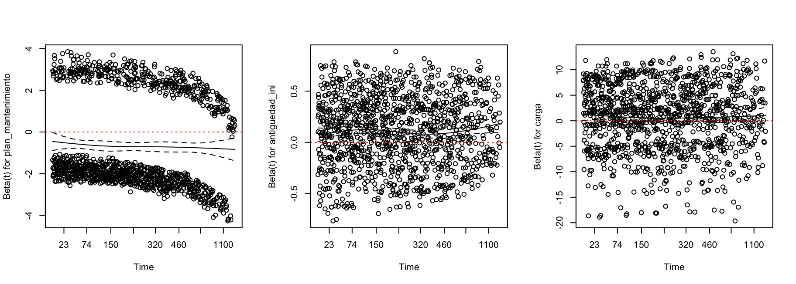
Figura 27: Residuos escalados de Schoenfeld del modelo óptimo frente al tiempo, con su banda de confianza: plan de mantenimiento, antigüedad y carga. Por el resultado de Grambsch y Therneau, la curva suavizada de cada panel estima el coeficiente \(\beta(t)\) que regiría en cada instante: si la proporcionalidad se cumple, debe ser horizontal. Lo es en los tres casos —la banda contiene una recta plana en todo el recorrido—, de modo que los tres hazard ratios pueden tomarse como constantes a lo largo de la espera, y la prueba no marca ninguno.
Y observamos que ninguna covariable viola la proporcionalidad: todos los p-valores de cox.zph son altos —el mínimo de 0.17—, y la Figura 27 lo confirma gráficamente: en ninguna de las tres covariables los residuos dibujan tendencia alguna. El modelo pasa el diagnóstico de proporcionalidad.
Una advertencia sobre la última fila: el GLOBAL sale con \(p=1.00\), pero no lo leamos como una validación rotunda. Ese contraste agrega los términos del modelo, y aquí la fragilidad aporta muchos grados de libertad que diluyen el estadístico (\(\chi^2 = 1.86\) sobre 114.6 g.l.): un \(p\) tan alto refleja sobre todo falta de potencia del test global, no una evidencia fuerte. Los contrastes por covariable —que sí tienen 1 g.l. cada uno— son los informativos, y son los que dan el veredicto limpio.
Un apunte de lectura sobre el panel del plan: las dos bandas de residuos —fallos de preventivas arriba, de correctivas abajo— descienden ambas con el tiempo, y no es tendencia del efecto: para una covariable binaria las bandas se sitúan en \(1-\bar{x}(t)\) y \(-\bar{x}(t)\), con \(\bar{x}(t)\) la proporción de preventivas aún en riesgo, que crece con la espera —las correctivas y las frágiles caen antes—. Las bandas dibujan la composición del conjunto de riesgo; el efecto \(\beta(t)\) lo dibuja solo la curva suavizada, que permanece plana.
En R: diagnosticar la proporcionalidad
La herramienta es survival::cox.zph(), que implementa la prueba de Grambsch & Therneau (1994) sobre los residuos de Schoenfeld.
ph <-cox.zph(cox) # tabla de contrastesph # chisq, df y p por covariable, más la fila GLOBALplot(ph, var ="x") # residuos frente al tiempo, con banda de confianza
Qué contrasta.\(H_0:\theta_k=0\) en \(\beta_k(t)=\beta_k+\theta_k g(t)\); es decir, el coeficiente es constante en el tiempo. Un \(p\)pequeño es la señal de alarma —indica que el efecto de esa covariable cambia a lo largo del seguimiento—. Aquí todos son altos: no hay evidencia contra la proporcionalidad.
Cómo leer el gráfico.plot(ph, var = ...) dibuja los residuos escalados frente al tiempo con una curva suavizada que estima \(\beta(t)\): plana y horizontal = proporcionalidad; con pendiente o curvatura = el efecto evoluciona. Es el complemento visual imprescindible del \(p\)-valor, porque además muestra cómo cambia el efecto, no solo que cambia.
La fila GLOBAL. Agrega todos los términos; con muchos grados de libertad (una frailty(), un factor con muchos niveles) pierde potencia y su \(p\) se dispara hacia 1 sin que eso signifique nada. Fíense de los contrastes por covariable.
transform = — la función \(g(t)\) del contraste ("km" por defecto, o "identity", "log"). La prueba tiene más potencia cuando \(g\) se parece a la desviación real, así que un efecto puede detectarse en una escala y no en otra; conviene mirar más de una si hay dudas.
ph$table, ph$y, ph$x — la tabla de contrastes y los residuos escalados con sus tiempos, por si se quiere rehacer el gráfico en ggplot2 (o usar survminer::ggcoxzph(ph), que lo hace directamente).
Advertencia importante.cox.zph solo examina las covariables que están en el modelo. Nunca detectará el efecto de una variable omitida, por relevante que sea —exactamente lo que ocurre aquí con el mantenimiento—.
¿Y si la proporcionalidad no se sostiene? El menú de opciones
Aquí el diagnóstico salió limpio, pero cuando sí falla —el efecto de un predictor fijo decae o crece, las curvas de supervivencia se cruzan— hay dos caminos.
Extender el Cox (seguir en supervivencia):
un efecto dependiente del tiempo\(\beta(t)\): se añade al modelo una interacción covariable × función del tiempo, \(x_k\cdot g(t)\), y su coeficiente estima el \(\theta_k\) del contraste de Grambsch y Therneau. Es la respuesta directa a lo que la prueba ha detectado;
estratificar por la variable que viola PH: cada estrato recibe su propio riesgo de base, sin estimarle un hazard ratio. Útil cuando esa variable es un control que no necesitamos interpretar.
Cambiar de modelo: el AFT (Unidad 3.5) no exige proporcionalidad; y, más allá de este curso, los hazards aditivos de Aalen (\(h(t\mid x)=h_0(t)+x^\top\beta(t)\)), los paramétricos flexibles (splines de Royston–Parmar) o el aprendizaje automático de supervivencia.
Y un puente hacia la síntesis: en la lente GLM en tiempo discreto o a trozos (Unidad 1.5, Unidad 2.6), la no proporcionalidad es, sencillamente, una interacción covariable × tiempo —y sigue siendo un GLM de pleno derecho—. Las tres lentes del fallo convergen en la Unidad 3.7.
Llegados a este punto, reflexionamos sobre el potencial real del mantenimiento, y es que cabe esperar que la protección que aporta a una máquina cada revisión (que renueva su protección, aunque no la rejuvenece) se vaya desvaneciendo con los días. Sin embargo, esta información de momento no la hemos incluido en el modelo, por lo que no podemos concluir sobre ella. Por otro lado, lo que cambia con el paso de los días es el valor de esa protección, lo que no implica que su efecto (sobre el fallo) cambie con el tiempo —hecho que sí violaría los riesgos proporcionales—. Planteamos pues, en la Sección 6.8, la incorporación de esta protección de los mantenimientos periódicos con un modelo de Cox extendido, que seguirá siendo de riesgos proporcionales.
6.8 Covariables que cambian con el tiempo: el Cox extendido
Contexto y datos
Hasta aquí hemos tratado el riesgo de fallo como algo que las covariables desplazan por un factor constante: una máquina de plan preventivo mantiene siempre la misma ventaja sobre una correctiva, viva la vida que viva. Conviene ahora plantear una pregunta que nuestro modelo, tal como está, no llega a responder: ¿es el riesgo de una máquina el mismo a lo largo de toda su vida? La intuición del ingeniero dice que no —y por dos motivos distintos que no conviene mezclar, dos “relojes” que corren a la vez—:
Reloj 1 · la edad. La máquina envejece: se desgasta, acumula horas y falla más cuanto más vieja. Es un reloj que solo avanza. > La edad entró en el modelo la Sección 6.6 como antiguedad_ini —la que la máquina tenía al comenzar cada espera—, sobrevivió a la criba, y el diagnóstico de la Sección 6.7 confirmó que su efecto es proporcional: un hazard ratio constante por año cumplido.
Reloj 2 · el mantenimiento. Cada intervención preventiva la rejuvenece temporalmente, y esa protección se desvanece hasta la siguiente revisión. Es un reloj que se reinicia una y otra vez cada vez que pasa un mantenimiento, y que viene a afectar en forma de sierra de dientes. >El modelo ajustado solo conocía la etiqueta plan. Y plan es un atributo de la máquina, no del momento: dice si tiene o no un programa de revisiones, pero entre las preventivas no distingue nada —una recién revisada y otra cuya última revisión quedó cuatro meses atrás comparten valor—. Su coeficiente condensa por tanto en un único número la ventaja del programa de mantenimiento promediada a lo largo de todo el ciclo, mezclando los días de máxima protección con los de mínima. Para ver y modelar ese segundo reloj necesitamos datos con más resolución temporal y una respuesta que admita covariables que cambian dentro del seguimiento.
Esa resolución la aporta el banco de datos banco$seguimiento —que renombramos como sg— y trocea la vida de cada máquina en meses, dedicando una fila a cada mes. Esa resolución más fina es la que permite que una covariable cambie de valor dentro del seguimiento: dias_desde_mant contiene, en cada mes, el número de días que transcurrieron desde el último mantenimiento al punto central del intervalo, es decir, hasta mitad de mes. A esta variable se le asocia además un indicador mant_reciente que se enciende y se apaga comprometiendo cuántos días acotan un mantenimiento reciente (por ejemplo, 45 en nuestro caso, y así mant_reciente=1 si dias_desde_mant\(\leq 45\)). Las variables disponibles en este banco de datos son:
Columna
Qué representa
id_maquina
identificador de la máquina (se repite: una fila por mes)
tstart, tstop
extremos del tramo mensual; periodo en riesgo en \((\text{tstart}, \text{tstop}]\)
exposicion
días en riesgo dentro del tramo (≈ 30 al ser tramos mensuales)
n_fallos, fallo
nº de averías del mes y su indicador (1 si hubo ≥ 1)
antiguedad
reloj 1 — edad de la máquina (en años) al inicio del tramo; crece mes a mes
dias_desde_mant
reloj 2 — días desde la última revisión programada; diente de sierra
mant_reciente
1 si esa revisión fue hace ≤ 45 días
plan_mantenimiento
plan de la máquina: Correctivo / Preventivo
intervalo_mant
periodicidad de la revisión: 60, 90 o 120 días (NA si es correctivo)
# los ocho primeros meses de una máquina preventiva que sí se averíahead(subset(sg, id_maquina =="M227",select =c(tstart, tstop, antiguedad,intervalo_mant, dias_desde_mant, mant_reciente, fallo)), 8)
Se muestran en la tabla superior las ocho filas con las que contribuye al banco de datos una sola máquina (M227, revisada cada 60 días), y en ellas se lee todo el mecanismo:
Los tramos encadenan sin huecos: el tstop de cada fila es el tstart de la siguiente.
antiguedad avanza despacio, de 5.33 a 5.91 años: el reloj 1, que solo sube.
dias_desde_mant alterna 27 y 57: el reloj 2. Con revisiones cada 60 días (intervalo_mant) y tramos de 30, la máquina se pasa la vida oscilando entre «recién revisada» y «a punto de revisión», y mant_reciente se enciende y se apaga con él.
fallo vale 1 en el primer mes y en el séptimo, y 0 en los demás. Esta es la respuesta del modelo: no el instante del fallo, ni tampoco el número de averías en el tramo (en n_fallos), sino si el tramo terminó en avería. En banco$averias esas dos mismas averías figuran con su día exacto, 3.1 y 186.5, pero no aquí.
El mantenimiento y la renovación
Detrás de estos datos hay un supuesto con nombre propio, la reparación mínima (minimal repair): se arregla el fallo concreto y la máquina queda como estaba justo antes de averiarse, no como nueva. Ni rejuvenece, ni consume la protección de la última revisión, ni adelanta la siguiente. Es el supuesto habitual en fiabilidad industrial para equipos complejos, donde una avería se resuelve sustituyendo una pieza entre muchas —y es también lo que justifica que la edad siga corriendo tras cada fallo—.
Si la protección de una revisión se agota con los días, los fallos deberían acumularse hacia el final de cada fase —el periodo entre dos revisiones—. Para comprobarlo hay que salvar un obstáculo: las fases duran 60, 90 o 120 días según la máquina, y 50 días sin revisar son «mucho» en una fase corta y «poco» en una larga. La solución es normalizar el reloj: dividir los días desde la revisión entre la duración del intervalo sitúa a cada máquina-mes en su fase, de 0 (recién revisada) a 1 (a punto de revisión), y hace comparables las tres periodicidades. Agrupamos esa fracción en quintiles y contamos fallos; como el diseño reparte la exposición de forma casi uniforme entre quintiles (47–55 mil días, columna exposicion), los recuentos son directamente comparables.
El patrón que buscábamos aflora con claridad en Figura 28: los fallos crecen de forma sostenida desde el primer quintil de la fase (64) hasta el cuarto (91), un 40 % más de averías cuando la revisión queda lejos que cuando está reciente. El último quintil (83) se desmarca ligeramente de la subida, una fluctuación compatible con el puro azar en recuentos de este tamaño. La lectura mecánica es la que el modelo extendido necesitará: la protección es máxima al salir de la revisión y se desvanece conforme avanza la fase —no es un atributo fijo de la máquina, sino un estado que se agota—.
Código
sg_prev <-subset(sg, !is.na(dias_desde_mant)) # solo preventivas: las correctivas no tienen relojsg_prev$tramo_fase <-cut(sg_prev$dias_desde_mant / sg_prev$intervalo_mant,breaks =seq(0, 1, by =0.2), include.lowest =TRUE)res <-aggregate(cbind(fallos = n_fallos, exposicion) ~ tramo_fase, data = sg_prev, sum)res
Código
ggplot(res, aes(tramo_fase, fallos)) +geom_col(fill ="firebrick", alpha =0.85) +labs(x ="fracción de la fase transcurrida (días desde revisión / intervalo)",y ="fallos acumulados")
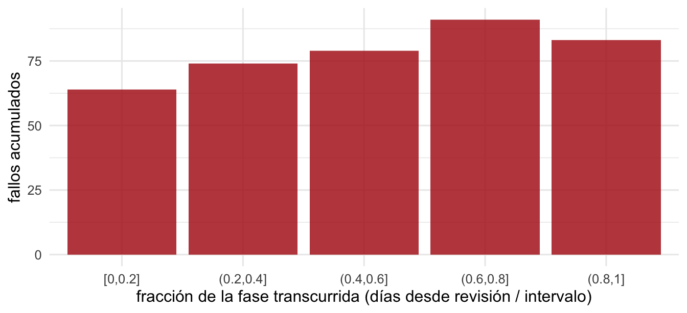
Figura 28: Fallos acumulados por quintil de la fase de mantenimiento —fracción transcurrida entre dos revisiones: dias_desde_mant / intervalo_mant—, en máquinas de plan preventivo. Con la exposición casi uniforme entre quintiles (tabla previa), los recuentos son directamente comparables.
Con este formato podemos mirar los dos relojes por separado y comprobar que ambos empujan el riesgo hacia arriba (Figura 29). Si agrupamos los meses por la edad de la máquina y calculamos la tasa de avería (fallos por 100 días de exposición), crece de forma sostenida: una máquina vieja falla más del doble que una nueva —el reloj 1—. Y si en cambio agrupamos por los días desde la última intervención, la tasa vuelve a crecer: es mínima recién revisada la máquina y se duplica cuando la revisión queda lejana —el reloj 2—. El modelo de la Sección 6.6 recogía el primero y resumía el segundo en una etiqueta fija; el extendido lo incorpora como covariable que se actualiza mes a mes.
Código
# Reloj 1 — edad (todas las máquinas)d1 <- sgd1$bin <-cut(d1$antiguedad, c(0, 2, 4, 6, 8, 10, 13))r1 <-aggregate(cbind(n_fallos, exposicion) ~ bin, data = d1, sum)r1$tasa <-100* r1$n_fallos / r1$exposicionr1$reloj <-"Reloj 1 · edad de la máquina (años)"# Reloj 2 — días desde el mantenimiento (preventivo)d2 <-subset(sg, plan_mantenimiento =="Preventivo")d2$bin <-cut(d2$dias_desde_mant, c(0, 15, 30, 45, 60, 90, 120))r2 <-aggregate(cbind(n_fallos, exposicion) ~ bin, data = d2, sum)r2$tasa <-100* r2$n_fallos / r2$exposicionr2$reloj <-"Reloj 2 · días desde el mantenimiento"rr <-rbind(r1[, c("bin", "tasa", "reloj")], r2[, c("bin", "tasa", "reloj")])ggplot(rr, aes(bin, tasa)) +geom_col(fill ="firebrick", alpha =0.85) +facet_wrap(~reloj, scales ="free_x") +labs(x =NULL, y ="fallos por 100 días de exposición")
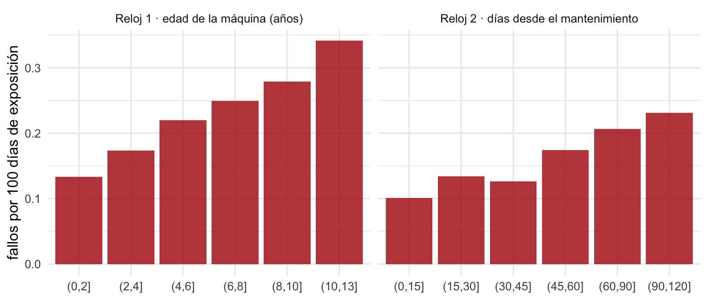
Figura 29: Los dos relojes, cuantificados: tasa de avería (fallos por 100 días de exposición) según la edad de la máquina (izquierda, todas las máquinas) y según los días desde el último mantenimiento (derecha, solo plan preventivo). Ambos ejes empujan el riesgo hacia arriba, pero son tiempos distintos.
El modelo extendido
El Cox extendido no es un modelo nuevo: es el mismo modelo de riesgos proporcionales, con la misma verosimilitud parcial y los mismos coeficientes constantes, ajustado sobre datos en otro formato. Lo único que cambia es que la respuesta pasa de Surv(tiempo, evento) a Surv(tstart, tstop, fallo), y ese cambio de formato es lo que permite que una covariable actualice su valor a lo largo del seguimiento.
¿Por qué hace falta? Porque dias_desde_mantno cabe en intervalos como una covariable corriente. Allí hay una fila por hueco entre fallos, y una covariable de esa fila es un solo número válido durante toda la espera. Pero un hueco puede durar meses y contener varios mantenimientos, de modo que dias_desde_mant no es un número: es una trayectoria que sube y se reinicia dentro de la propia fila. No hay un valor fijo que ponerle. El problema no es de proporcionalidad —es de formato: una fila por espera no tiene resolución temporal—.
Véase en M227. En banco$intervalos sus dos primeras esperas ocupan una fila cada una —de 0 a 3.1 días y de 3.1 a 186.5— y en esa segunda fila caben tres revisiones (días 48, 108 y 168), de modo que dias_desde_mant recorre ahí todo el diente de sierra: no hay un número que la resuma. En el panel, en cambio, esa misma espera se reparte en seis filas mensuales, cada una con su valor.
En R: el formato start-stop y el Cox extendido
Todo el cambio cabe en la respuesta: Surv() pasa de dos argumentos a tres.
coxph(Surv(tstart, tstop, evento) ~ x1 + x2, data = panel)
Surv(tstart, tstop, evento) — cada fila es un tramo en el que la unidad estuvo en riesgo, \((\text{tstart}, \text{tstop}]\), y evento marca si ese tramo terminó en fallo. Los tramos de una misma unidad deben ser contiguos y sin solaparse.
No hay que declarar cuál es la covariable temporal: coxph no necesita saberlo. Simplemente usa, en cada instante de fallo, los valores de la fila vigente.
Cuidado con el agrupamiento —pero por el motivo correcto. El troceado por sí solo no crea dependencia: si una unidad tiene un único evento y las filas son solo su covariable partida en tramos, la verosimilitud parcial y los errores estándar salen idénticos a los del formato sin trocear, y no hace falta corregir nada. Lo que exige frailty(id) o cluster(id) es que la unidad aporte varios eventos —nuestro caso, Sección 6.6— o que exista un agrupamiento real.
Construir el panel. Aquí banco$seguimiento viene ya troceado; en la práctica se construye partiendo de los datos por unidad y añadiendo un corte cada vez que alguna covariable cambia de valor.
Un peligro que evitar. Nunca debe entrar en la fila información del futuro (por ejemplo, un valor medido después del fallo): sería un sesgo de anticipación, y el modelo «predeciría» lo que ya sabe.
No empezamos de cero: tomamos el modelo óptimo de la Sección 6.6 —plan, antigüedad y carga, con frailty(id_maquina)—, lo trasladamos al panel y le añadimos el reloj del mantenimiento. Dos apuntes sobre el traslado: la fragilidad se conserva (las filas siguen agrupadas por máquina), y la edad pasa de antiguedad_ini —fija durante toda una espera— a antiguedad, que se actualiza mes a mes; es decir, ganamos una segunda covariable temporal sin esfuerzo.
Mantenemos también plan_mantenimiento, porque las correctivas no tienen reloj, de modo que para estas máquinas dias_desde_mant es NA en todas sus filas y mant_reciente vale siempre 0. Es una hipótesis razonable; la pondremos a prueba.
Call:
coxph(formula = Surv(tstart, tstop, fallo) ~ plan_mantenimiento +
antiguedad + carga + mant_reciente + frailty(id_maquina),
data = sg)
coef se(coef) se2 Chisq DF p
plan_mantenimientoPrevent -0.4332 0.0898 0.0794 23.2801 1 1.4e-06
antiguedad 0.1046 0.0130 0.0111 65.2820 1 6.5e-16
carga 0.6592 0.2306 0.1929 8.1711 1 0.00426
mant_reciente -0.4345 0.1065 0.1043 16.6425 1 4.5e-05
frailty(id_maquina) 161.1766 109 0.00087
Iterations: 8 outer, 29 Newton-Raphson
Variance of random effect= 0.141 I-likelihood = -6635.9
Degrees of freedom for terms= 0.8 0.7 0.7 1.0 109.0
Likelihood ratio test=472 on 112 df, p=<2e-16
n= 18252, number of events= 1144
Aflora el mecanismo: mant_reciente sale con coeficiente \(-0.43\) —hazard ratio \(\approx 0.65\): una revisión fresca recorta en torno a un tercio el riesgo instantáneo—, y ese efecto es local en el tiempo, no una etiqueta permanente. Retén también el coeficiente del plan, \(-0.43\): volveremos a él enseguida.
Toca cribar los efectos con la disciplina de la Sección 6.6 —Wald por término con errores robustos, sobre el ajuste gemelo con cluster(id_maquina)—:
Todos los términos aguantan, plan_mantenimiento incluido. Modelo cerrado… salvo por un detalle incómodo: para llegar hasta aquí hemos tomado dos decisiones arbitrarias, y conviene ver cuánto pesan.
Dos arbitrariedades que conviene quitar
El umbral de los 45 días. ¿Por qué 45 y no 30, o 60? mant_reciente es un acantilado: protección plena hasta el día 45, ninguna a partir del 46. Nada en los datos justifica ese salto.
La rejilla mensual. ¿Por qué tramos de 30 días? Dentro de cada uno la covariable queda congelada, y los meses con dos averías se cuentan como uno —1194 averías se quedan en 1144 meses-evento—.
Las dos tienen solución, y ninguna exige inventar nada: la primera se quita dando forma a la covariable, la segunda dejando de trocear.
La primera arbitrariedad: dar forma en vez de poner un umbral
La Figura 29 no muestra un escalón, sino un desvanecimiento gradual. Codifiquemos una nueva variable de protección por el mantenimiento, de la forma: \[\texttt{prot\_mant} = \exp(-\texttt{dias\_desde\_mant}/\tau),\] que vale 1 el día de la revisión y se apaga suavemente. Cambiamos un umbral arbitrario por una escala\(\tau\), que al menos podemos elegir con los datos: ajustamos para una rejilla de valores y miramos el AIC.
Código
taus <-c(20, 30, 40, 50, 60, 70, 80, 100, 120)perfil <-sapply(taus, function(tau) { sg$p <-ifelse(is.na(sg$dias_desde_mant), 0, exp(-sg$dias_desde_mant / tau)) m <-coxph(Surv(tstart, tstop, fallo) ~ antiguedad + carga + p, data = sg)c(AIC =AIC(m), coef_prot =coef(m)[["p"]]) # el coeficiente, para ver cómo depende de tau})data.frame(tau = taus, AIC =round(perfil["AIC", ], 1),coef_prot =round(perfil["coef_prot", ], 3))
El perfil cae con fuerza hasta \(\tau\approx 60\) y luego se aplana: el mínimo nominal está en \(\tau = 100\), pero 70, 80, 100 y 120 cambian en un solo punto de AIC. Tomamos \(\tau = 60\) por resultar más interpretable: a los dos meses la protección ha caído a un tercio (de -1.506 a -1.205, según el coeficiente de la variable). Definimos ya esta variable de protección por mantenimiento con el fijo de 60 días, que aplica a todas las máquinas por igual, independientemente del mantenimiento actual, que recordemos que estaba entre 60 y 120. Un detalle que será decisivo: para una máquina correctivaprot_mant vale exactamente 0 —protección nula, siempre—, que es justo lo que le corresponde. Con la covariable así codificada, volvemos a cribar:
Código
# definimos la variable de protección por mantenimientosg$prot_mant <-ifelse(is.na(sg$dias_desde_mant), 0, exp(-sg$dias_desde_mant /60))# Ajustamos el modelo con ellacox_mes_prot_clus <-coxph(Surv(tstart, tstop, fallo) ~ plan_mantenimiento + antiguedad + carga + prot_mant +cluster(id_maquina), data = sg)car::Anova(cox_mes_prot_clus, test.statistic ="Wald")
El veredicto cambia por completo: plan_mantenimiento deja de ser significativo —de \(\chi^2\approx 20.6\) (\(p\approx 6\times10^{-6}\)) con el indicador binario a \(\chi^2\approx 2.2\) (\(p\approx 0.14\)) ahora—, mientras edad, carga y mantenimiento se sostienen con holgura. Y la explicación es transparente una vez vista:
Por qué el plan sobra ahora (y no antes)
La ventaja del plan preventivo era el mantenimiento. Con el indicador binario, una correctiva y una preventiva con 50 días sin revisión compartían el mismo valor (mant_reciente = 0) pese a ser situaciones distintas —la segunda conserva algo de protección residual—; ese desajuste dejaba un residuo que la etiqueta plan recogía —justo el coeficiente \(-0.43\) que retuvimos al ajustar cox_mes_ind_frag—, y por eso parecía imprescindible. La forma continua reparte la protección de forma graduada y coloca a las correctivas en su lugar exacto (prot_mant = 0): ya no queda residuo que explicar, y el plan se vuelve redundante.
La lección va más allá del ejemplo: que una covariable resulte significativa puede depender de cómo hayamos codificado otra. Ser de plan preventivo no protege por sí mismo; protege porque te revisan periódicamente. Y una máquina correctiva no es otro mundo: es el extremo sin protección de la misma curva.
Retiramos el término prescindible y reajustamos, con la fragilidad de vuelta:
Call:
coxph(formula = Surv(tstart, tstop, fallo) ~ antiguedad + carga +
prot_mant + frailty(id_maquina), data = sg)
coef se(coef) se2 Chisq DF p
antiguedad 0.1044 0.0128 0.0110 66.4665 1 3.6e-16
carga 0.6616 0.2306 0.1926 8.2273 1 0.00413
prot_mant -1.1821 0.1329 0.1192 79.1470 1 < 2e-16
frailty(id_maquina) 163.9914 111 0.00073
Iterations: 8 outer, 29 Newton-Raphson
Variance of random effect= 0.143 I-likelihood = -6638.4
Degrees of freedom for terms= 0.7 0.7 0.8 110.5
Likelihood ratio test=470 on 113 df, p=<2e-16
n= 18252, number of events= 1144
El coeficiente de prot_mant sale próximo a \(-1.2\): al intervenir, el riesgo se multiplica por \(\exp(-1.2)\approx 0.30\) —cae a menos de un tercio— y remonta con los días. Una arbitrariedad menos, y un modelo más simple que el de partida.
¿Etiqueta o reloj? La comparación
La caída del plan merece confirmación formal: ¿describe mejor el riesgo el reloj del mantenimiento que la etiqueta del plan? Los dos contendientes, sobre el mismo panel mensual, difieren solo en cómo representan el mantenimiento:
\(\text{M}_{\texttt{plan}}\) es el modelo óptimo de la Sección 6.6 trasladado al panel: el mantenimiento como etiqueta fija de la máquina. \(\text{M}_{\texttt{reloj}}\) es nuestro modelo final: la etiqueta sustituida por el reloj que se actualiza mes a mes. El duelo se disputa entre los gemelos sin fragilidad (cox_mes_plan y cox_mes_opt), por dos razones que aquí solo enunciamos —las sistematizamos en las reglas del juego—: el AIC exige los mismos datos (ambos usan las 18 252 filas del panel) y no está definido a través del término penalizado de una fragilidad. Que prescindir de ella no distorsiona el retrato lo comprobamos sobre la marcha:
Las tres estimaciones se mueven muy poco —ninguna llega a un 3 %, y todas conservan signo, magnitud e interpretación—: la fragilidad no cambia el retrato del riesgo; cambia la confianza que merecen sus efectos y la discriminación del modelo. Con eso claro, el AIC puede ordenar las dos estructuras:
Ambos modelos tienen el mismo número de coeficientes (tres) y se ajustan a las mismas filas, de modo que la comparación es directa —con una salvedad honesta: prot_mant lleva dentro una \(\tau\) que elegimos sobre estos mismos datos, así que \(\text{M}_{\texttt{reloj}}\) gasta en realidad un poco más de flexibilidad de la que declara—. El AIC baja 12.2 puntos al sustituir la etiqueta del plan por el reloj del mantenimiento, y aun cargándole a prot_mant un parámetro extra por la \(\tau\) estimada seguirían siendo 10.2. (Ese 13312.9 no es nuevo: es exactamente el que ya vimos en la fila \(\tau = 60\) del perfil de \(\tau\), porque se trata del mismo modelo.) Una diferencia de esa magnitud es contundente —como referencia habitual, \(\Delta\)AIC > 10 indica que el modelo peor tiene muy poco apoyo (Burnham & Anderson, 2002)—. Eso sí, con una cautela: el AIC también supone observaciones independientes, y aquí no lo son. Léase, pues, como una ordenación indicativa —lo informativo es la magnitud de la diferencia—, no como un contraste.
Y el contraste formal ya lo teníamos hecho. Los dos modelos no están anidados (uno lleva plan, el otro prot_mant), así que no cabe un test entre ellos; pero la pregunta «¿aporta el reloj sobre el plan?» es justo la que respondió la criba robusta de cox_mes_prot_clus: \(\chi^2\approx 14\), \(p\approx 2\times10^{-4}\) para prot_mant, con el plan cayendo en la misma tabla. La respuesta es, pues, doble y consistente: el reloj ajusta mejor y lo hace con menos supuestos artificiales.
Una advertencia final que conviene no malinterpretar: la concordancia apenas se mueve (0.621 → 0.623). No contradice lo que vimos sobre la fragilidad, porque son comparaciones distintas: aquí cambiamos covariables manteniendo la estructura de agrupamiento, mientras que añadir la fragilidad subía la concordancia de ≈ 0.62 a ≈ 0.68 (Sección 6.6). La lección es que ajustar mejor el mecanismo no garantiza discriminar mejor entre máquinas: buena parte de lo que separa a unas de otras no es ninguna covariable observada, sino su fragilidad individual.
La segunda arbitrariedad: dejar de trocear, con tt()
Si cualquier troceado congela la covariable, la salida es no trocear. Y podemos permitírnoslo porque dias_desde_mant es una función determinista del tiempo: en vez de precalcularla, le decimos a coxphcómo calcularla y la evaluará exactamente en cada instante de fallo. Eso es tt(). Trabajamos sobre los datos en su forma exacta —una fila por espera, con sus tiempos reales— y pasamos la función:
Código
# 1) Calendario de revisiones de cada máquina. Para evaluar la protección en un# instante t cualquiera basta saber en qué día del ciclo caen las revisiones# (su "fase"), que leemos del panel: día de revisión = punto medio - dias_desde_mant.cal <-do.call(rbind, lapply(split(sg, sg$id_maquina), function(d) { med <- (d$tstart + d$tstop) /2data.frame(id_maquina = d$id_maquina[1],entry =min(d$tstart), # primer día observadointervalo_mant = d$intervalo_mant[1],fase =if (is.na(d$intervalo_mant[1])) NA_real_elsemedian((med - d$dias_desde_mant) %% d$intervalo_mant[1], na.rm =TRUE))}))# 2) Los datos, en su forma exacta: una fila por espera, en tiempo de calendario.# recuperados de la tabla iv=banco$intervalosag <-do.call(rbind, lapply(split(iv, iv$id_maquina), function(d) { d <- d[order(d$n_intervalo), ] d$tstart <- cal$entry[match(d$id_maquina[1], cal$id_maquina)] +cumsum(c(0, head(d$tiempo_entre, -1))) d$tstop <- d$tstart + d$tiempo_entre d}))ag$idx <-match(ag$id_maquina, cal$id_maquina) # clave para consultar `cal`# Solo para MIRARLO: los días desde la revisión al cerrarse el tramo. El modelo# NO usa esta columna —la recalcula `tt()` en cada instante—; la añadimos para# ver qué valor manejará. `NA` en las correctivas, que no tienen revisiones.ag$dias_desde_mant <-round((ag$tstop - cal$fase[ag$idx]) %% cal$intervalo_mant[ag$idx], 1)subset(ag, id_maquina =="M227",select =c(n_intervalo, tstart, tstop, evento, antiguedad_ini, dias_desde_mant))
Código
# 3) El ajuste. `tt` se invoca en CADA instante de fallo con las filas en riesgo:# x = los `idx` de esas filas, t = el instante del fallo.prot_tt <-function(x, t, ...) { fs <- cal$fase[x]; ivm <- cal$intervalo_mant[x]ifelse(is.na(ivm), 0, exp(-((t - fs) %% ivm) /60)) # protección en el instante t}cox_tt_opt <-coxph(Surv(tstart, tstop, evento) ~ antiguedad_ini + carga +tt(idx),data = ag, tt = prot_tt)round(coef(cox_tt_opt), 3)
antiguedad_ini carga tt(idx)
0.097 0.689 -1.249
Merece la pena comparar esa tabla con la del panel mensual: es la misma máquina M227, vista de otro modo. Allí eran 49 filas de 30 días, con dias_desde_mant alternando entre 27 y 57. Aquí son siete tramos que duran lo que dura cada espera —de 3 días el primero a 796 el tercero— y dias_desde_mant toma el valor que de verdad tenía en el instante del fallo: 15.1, 18.5, 34.5, 43.0… Ninguna avería se redondea a un mes, y ninguna se pierde.
Ojo a un malentendido fácil: idxno es una covariable, sino una clave de consulta. Lo que entra en el modelo es la misma \(\exp(-\texttt{dias\_desde\_mant}/60)\) de siempre; lo único que cambia es cuándo se calcula —ya no es una columna congelada, sino un valor evaluado en cada instante de fallo—. Por eso su coeficiente es comparable, aunque R lo etiquete crípticamente como tt(idx).
La Figura 30 lo hace visible sobre M227: tt() no consulta ninguna columna, sino que reconstruye la trayectoria completa de la protección y la evalúa solo en los instantes de fallo —en los dos suyos, donde M227 es numerador, y en los de las demás máquinas, donde comparece en el denominador del conjunto de riesgo—. Entre punto y punto, la curva no se consulta nunca: la verosimilitud parcial solo mira las covariables cuando alguien falla. La escalera del panel, a su lado, muestra lo que el congelado le hacía a esa misma información.
Código
fase_m <- cal$fase[cal$id_maquina =="M227"]prot_m <-function(t) exp(-((t - fase_m) %%60) /60) # la misma función que pasamos a tt()tj <-sort(ag$tstop[ag$evento ==1]) # instantes de fallo de TODO el bancotj <- tj[tj <=210] # ventana: dos primeras esperas de M227propios <- ag$tstop[ag$id_maquina =="M227"& ag$evento ==1& ag$tstop <=210]curva <-data.frame(t =seq(0, 210, by =0.5)); curva$prot <-prot_m(curva$t)riesgo <-data.frame(t = tj); riesgo$prot <-prot_m(riesgo$t)panel <-subset(sg, id_maquina =="M227"& tstop <=210)ggplot() +geom_line(data = curva, aes(t, prot), color ="grey65") +geom_segment(data = panel, aes(x = tstart, xend = tstop,y = prot_mant, yend = prot_mant),color ="steelblue", linewidth =1) +geom_point(data = riesgo, aes(t, prot), color ="firebrick", size =0.9) +geom_point(data =data.frame(t = propios, prot =prot_m(propios)),aes(t, prot), shape =4, size =3, stroke =1.2) +labs(x ="día de seguimiento (M227)", y ="protección del mantenimiento")
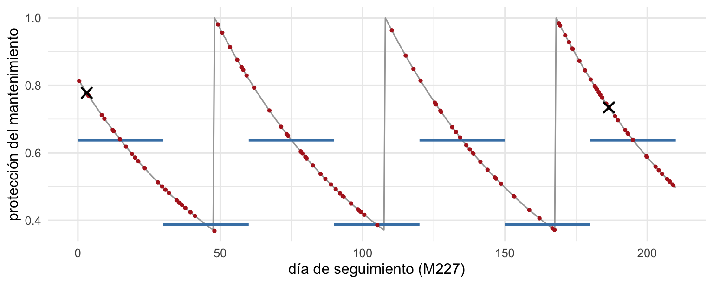
Figura 30: Qué evalúa tt(), visto sobre M227 (ventana: sus dos primeros fallos). La curva gris es su protección exacta, \(\exp(-\texttt{dias\_desde\_mant}/60)\), que salta a 1 en cada revisión (días 48, 108, 168) y se desvanece después; los tramos azules son la versión congelada que usaba el panel mensual (solo dos valores, que ni alcanzan los picos ni los valles de la curva). Cada punto rojo marca un instante en que falla alguna máquina del banco: en ese momento la verosimilitud parcial forma su conjunto de riesgo, y tt() calcula la protección que M227 tenía exactamente entonces para incluirla en el denominador —M227 participa como término de comparación en los fallos ajenos—. Las ✕ son sus dos fallos propios, en los que además es numerador.
Sin rejilla, sin eventos colapsados y sin congelado, el coeficiente de la protección sale en \(-1.249\). Y la fragilidad también cabe en el formato exacto —vuelve a salir significativa (\(p\approx 0.011\)), aunque con menos holgura que en el panel—:
Call:
coxph(formula = Surv(tstart, tstop, evento) ~ antiguedad_ini +
carga + tt(idx) + frailty(id_maquina), data = ag, tt = prot_tt)
coef se(coef) se2 Chisq DF p
antiguedad_ini 0.0916 0.0113 0.0100 66.1369 1.0 4.2e-16
carga 0.6977 0.2167 0.1889 10.3674 1.0 0.0013
tt(idx) -1.2384 0.1294 0.1192 91.5712 1.0 < 2e-16
frailty(id_maquina) 119.2434 86.2 0.0107
Iterations: 9 outer, 31 Newton-Raphson
Variance of random effect= 0.0984 I-likelihood = -6953.4
Degrees of freedom for terms= 0.8 0.8 0.8 86.2
Likelihood ratio test=435 on 88.6 df, p=<2e-16
n= 1594, number of events= 1194
Tenemos así las cuatro combinaciones —dos formatos de los datos, cada uno sin y con fragilidad— y podemos cerrar el cuadro reuniendo, para cada modelo, el coeficiente de la protección y su concordancia. (El AIC no cabe en esta tabla: panel y formato exacto son datos distintos — la regla la sistematizamos en las reglas del juego.)
Código
modelos <-list("panel mensual · sin fragilidad"= cox_mes_opt,"panel mensual · con fragilidad"= cox_mes_opt_frag,"tt() exacto · sin fragilidad"= cox_tt_opt,"tt() exacto · con fragilidad"= cox_tt_opt_frag)# la protección es el último coeficiente en los cuatro modelosdata.frame(coef_prot =sapply(modelos, function(m) round(unname(rev(coef(m))[1]), 3)),concordancia =sapply(modelos, function(m) round(unname(summary(m)$concordance[1]), 3)))
La tabla se lee en dos direcciones.
Por formatos: congelar la covariable atenúa el coeficiente —de \(-1.249\) a \(-1.205\) sin fragilidad (un 4 %), de \(-1.238\) a \(-1.182\) con ella (un 5 %)—; mantener fija la covariable dentro de cada tramo es un error de medida, y un error de medida encoge el efecto.
Por fragilidad: reconocerla apenas mueve la protección en ninguno de los dos formatos, pero sube la discriminación en ambos (concordancia 0.623 → 0.690 en el panel, 0.625 → 0.672 en el exacto) —la lección de la Sección 6.6, reproducida—.
Las cuatro estimaciones caben en una banda estrecha: ninguna decisión de construcción cambia la conclusión; lo que se mueve es la tercera cifra. Pero ahora sabemos cuánto cuesta cada atajo, que es distinto de suponer que no cuesta nada.
Con todo lo visto hasta ahora, quedaría por tomar una decisión respecto a qué modelo utilizar. Es coherente proponer la pareja del panel mensual (como haremos en la Unidad 3.7), formada por cox_mes_opt_frag —el ajuste con fragilidad, con el que se interpreta y se infiere— y su gemelo sin fragilidad cox_mes_opt, al que recurriremos cuando la herramienta no admita el término penalizado (el AIC al comparar, el survfit() al predecir); ya sabemos que ambos comparten retrato. ¿Por qué el panel y no tt()? Porque el formato start-stopse ve y se toca —con él se entiende qué es un conjunto de riesgo—, y ahora sabemos cuánto cuesta esa comodidad: un 4–5 % de atenuación, siempre conservadora, que no altera ninguna conclusión. En un trabajo publicable correspondería tt(); aquí el panel sirve para aprender, y haberlo contrastado es lo que permite seguir usándolo con la conciencia tranquila. La moraleja excede al ejemplo: toda discretización es una decisión de modelización, no un detalle de preparación de datos; lo barato no es evitarla, sino medir su efecto.
En R: tt() — uso y límites
La covariable temporal exacta se declara en dos piezas: un término tt(variable) en la fórmula y una función en el argumento tt = de coxph().
La función se evalúa en cada instante de fallo, con las filas en riesgo en ese momento: x son los valores de la variable envuelta en tt() para esas filas, t es el instante, y lo que devuelve es el valor de la covariable justo entonces — eso es lo que entra en el predictor lineal.
La variable envuelta puede ser una clave, no la covariable: nuestro tt(idx) pasa índices y la función consulta con ellos el calendario cal. R etiquetará el coeficiente como tt(idx), pero mide la protección.
Varios relojes → varios términos tt() y una lista de funciones en tt =, en el mismo orden.
Se combina con frailty() — lo acabamos de hacer— y admite el mismo Wald robusto vía cluster.
Su límite conceptual: exige que la covariable sea una función conocida del tiempo —el reloj del mantenimiento, la edad, o una interacción \(x\cdot g(t)\) si hubiera que modelar un \(\beta(t)\)—. Cuando la covariable se mide en fechas —una analítica repetida, un tratamiento que empieza y para— no hay fórmula que pasarle: la única vía es un panel start-stop con un tramo por valor medido, como nuestro banco$seguimiento.
Aguas abajo, el soporte es menor: las curvas predichas de la sección siguiente las obtendremos del gemelo de panel (cox_mes_opt), no del modelo con tt().
6.9 Cierre: comparar, predecir, validar
Cerramos la unidad con las tres tareas que convierten una colección de modelos en resultados: fijar las reglas con las que se comparan —mirando a todos los ajustes del recorrido—, predecir para ayudar a decidir —con la pareja de trabajo del panel—, y validar lo aprendido contra la verdad del generador —confrontando los tres óptimos con fragilidad—.
Comparar modelos de Cox: las reglas del juego
Entre esta unidad y el AFT de la Unidad 3.5 hemos ajustado quince modelos de supervivencia sobre tres representaciones de los mismos fallos, cada una con su respuesta:
esp — una fila por espera: tabla intervalos (iv), respuesta Surv(tiempo_entre, evento);
mes — panel mensual: tabla seguimiento (sg), respuesta Surv(tstart, tstop, fallo);
tt — tiempos exactos en calendario: tabla ag, respuesta Surv(tstart, tstop, evento) con la protección evaluada por tt().
El recopilatorio completo, en orden de aparición (la capa final indica la inferencia: nada = verosimilitud parcial ordinaria; clus = errores robustos; frag = fragilidad):
Tabla 41: Los quince modelos de supervivencia del caso (más los nueve ajustes anónimos del perfil de \(\tau\)).
Datos
Modelo
Predictores
Papel
esp
aft_w (U. 3.4)
plan + antiguedad_ini + carga + proceso
AFT Weibull: verosimilitud completa
esp
cox_esp
plan + antiguedad_ini + carga + proceso + fabricante
Cox basal completo (5.3)
esp
cox_esp_opt
plan + antiguedad_ini + carga + fabricante
tras la criba LR (5.5)
esp
cox_plan
plan
la identidad score = log-rank (5.5)
esp
cox_esp_opt_frag
ídem cox_esp_opt + frailty(id_maquina)
¿basta la fragilidad? (5.6)
esp
cox_esp_opt_clus
ídem cox_esp_opt + cluster(id_maquina)
criba robusta: cae el fabricante (5.6)
esp
cox_esp_final_frag
plan + antiguedad_ini + carga + frailty
óptimo de esperas (5.6–5.7)
mes
cox_mes_ind_frag
plan + antiguedad + carga + mant_reciente + frailty
el reloj como indicador de 45 días (5.8)
mes
cox_mes_ind_clus
ídem con cluster
su criba robusta
mes
cox_mes_prot_clus
plan + antiguedad + carga + prot_mant + cluster
criba con la forma continua: cae el plan
mes
cox_mes_plan
plan + antiguedad + carga
M\(_{\texttt{plan}}\), el rival de la comparación
mes
cox_mes_opt
antiguedad + carga + prot_mant
M\(_{\texttt{reloj}}\); base de la predicción
mes
cox_mes_opt_frag
ídem + frailty
modelo de trabajo (aquí y en 3.6)
tt
cox_tt_opt
antiguedad_ini + carga + tt(idx)
la protección exacta, sin congelar
tt
cox_tt_opt_frag
ídem + frailty
ídem con fragilidad
Por el camino los hemos comparado de muchas maneras, y cada vez con la herramienta que tocaba. Merece la pena sistematizar las reglas antes de pasar a la predicción, porque son las mismas que gobernarán el cierre de la Unidad 3.7:
perfil de \(\tau\); M\(_{\texttt{plan}}\) vs M\(_{\texttt{reloj}}\)
Término individual con eventos repetidos por máquina
Wald robusto (cluster)
el LRT ingenuo trata las filas como independientes y es anticonservador
fabricante en 5.6; plan y prot_mant en 5.8
Interviene una fragilidad
estructura → gemelos sin fragilidad; términos → Wald robusto; varianza → su propio contraste
el término penalizado gasta g.l. fraccionarios: ni anova() ni AIC a su través tienen respaldo
la comparación de M\(_{\texttt{plan}}\)/M\(_{\texttt{reloj}}\)
Distinta respuesta (esperas / panel / exacto)
AIC y LRT prohibidos; sí: coeficientes, concordancia (orientativa) y predicciones
las verosimilitudes viven en escalas distintas: miden datos diferentes
la tabla 2×2 de tt()
Cox frente a AFT (misma tabla)
tampoco AIC: verosimilitud parcial frente a completa
clases de verosimilitud distintas
el puente \(\text{HR}=\text{AF}^{-1/\sigma}\), en 5.4
Tres apostillas completan el cuadro. La primera desarrolla la regla de la fragilidad: el AIC se construye como \(-2\log L + 2k\), y un ajuste con frailty() no aporta ninguno de los dos ingredientes en su forma ordinaria — la verosimilitud está penalizada, y \(k\) no es un recuento de parámetros sino unos grados de libertad efectivos, fraccionarios y estimados de los propios datos (en torno a 110 de las 400 máquinas en nuestros ajustes) —. Nada de eso es lo que la teoría de Akaike respalda, y lo mismo descuadra los g.l. de un anova(). De ahí la receta: cuando la pregunta es de estructura de covariables, se compara sobre los gemelos sin fragilidad —legitimado porque los \(\hat\beta\) apenas cambian—; la fragilidad misma se contrasta con su propio test, y los términos, con el Wald robusto.
La segunda: cuando la corrección robusta actúa, su severidad depende de dónde varía la covariable. prot_mant cambia dentro de cada máquina —cada una recorre sus propios ciclos—, así que la información no procede de comparar máquinas entre sí y el agrupamiento apenas la penaliza (\(\chi^2\approx 14\) con o sin corrección). fabricante, en cambio, es una etiqueta constante dentro de cada máquina: toda su información es entre máquinas, que es justo donde la correlación intra-máquina infla la confianza —y por eso cayó de \(p\approx 0.017\) a \(p\approx 0.12\)—. La regla útil: cuanto más constante sea una covariable dentro del clúster, más severa será la corrección robusta.
La tercera: las reglas no son burocracia, sino la traducción práctica de una única idea —cada verosimilitud mide lo suyo. Comparar dos números solo tiene sentido si miden lo mismo sobre lo mismo; cuando no lo hacen, quedan los puentes que no dependen de la verosimilitud: coeficientes que estiman el mismo mecanismo, discriminación y predicciones.
Predicción: del modelo a la decisión
Un modelo ajustado no sirve solo para interpretar coeficientes: sirve para anticipar. Y aquí es donde el Cox extendido rinde su mejor fruto, porque permite preguntar algo que ningún modelo anterior podía responder: ¿cuánto ganaría esta máquina si la revisáramos cada 60 días en lugar de cada 120?
Conviene distinguir dos niveles de predicción, porque Cox los trata de forma muy distinta. En ambos niveles usaremos el gemelo sin fragilidad, cox_mes_opt, como anunciamos al tomar la decisión: en el nivel 1 apenas importa —los coeficientes difieren menos de un 3 % de los de cox_mes_opt_frag, y los cocientes salen casi idénticos—; en el nivel 2 es una necesidad práctica (survfit() no maneja el término penalizado) con un matiz conceptual que recoge la cautela 2: las curvas describen el promedio poblacional, no una máquina concreta.
Nivel 1 · Riesgo relativo. Es la predicción natural del modelo: el multiplicador \(e^{x^\top\beta}\), que compara perfiles entre sí sin necesidad del riesgo de base. Se obtiene con predict(..., type = "lp") (el predictor lineal) o type = "risk" (su exponencial).
Tomando como referencia una máquina joven, poco cargada y recién revisada, dejar que el mantenimiento envejezca multiplica el riesgo por más de 3; y una máquina vieja, muy cargada y sin protección llega a casi 9 veces el riesgo de la referencia. Estos cocientes son el pan de cada día de Cox: no dicen cuántas averías habrá, sino cuántas veces más riesgo tiene un perfil que otro.
Nivel 2 · Probabilidad absoluta. Para responder «¿qué probabilidad hay de que aguante un año sin avería?» hace falta el riesgo de base, que survfit() estima de forma no paramétrica (Breslow) y combina con el perfil. Con covariables dependientes del tiempo no basta un perfil fijo: hay que darle una trayectoria —una fila por tramo, con tstart, tstop y el valor de las covariables en cada uno—, y señalar con id a qué escenario pertenece cada fila.
Código
# construye la trayectoria de una máquina bajo una política de mantenimiento dadaescenario <-function(nombre, edad0, carga, intervalo, dias =360) { t <-0:(dias -1) prot <-if (is.na(intervalo)) 0elseexp(-(t %% intervalo) /60)data.frame(id = nombre, tstart = t, tstop = t +1,fallo =0, # survfit reconstruye Surv(): la respuesta debe estarantiguedad = edad0 + t /365, carga = carga, prot_mant = prot)}nd <-rbind(escenario("preventivo cada 60 d", 5, 0.75, 60),escenario("preventivo cada 120 d", 5, 0.75, 120),escenario("correctivo (sin revisiones)", 5, 0.75, NA))head(nd, 4)
Código
sf <-survfit(cox_mes_opt, newdata = nd, id = id)# survfit devuelve las tres curvas encadenadas; `sf$strata` dice cuántos# instantes aporta cada escenario, y con eso las separamos en formato largopred <-data.frame(tiempo = sf$time,surv =as.vector(sf$surv),escenario =rep(names(sf$strata), sf$strata))ggplot(pred, aes(tiempo, surv, color = escenario)) +geom_step(linewidth =0.8) +scale_y_continuous(limits =c(0, 1)) +labs(x ="días de seguimiento", y ="P(sin avería hasta t)", color =NULL)
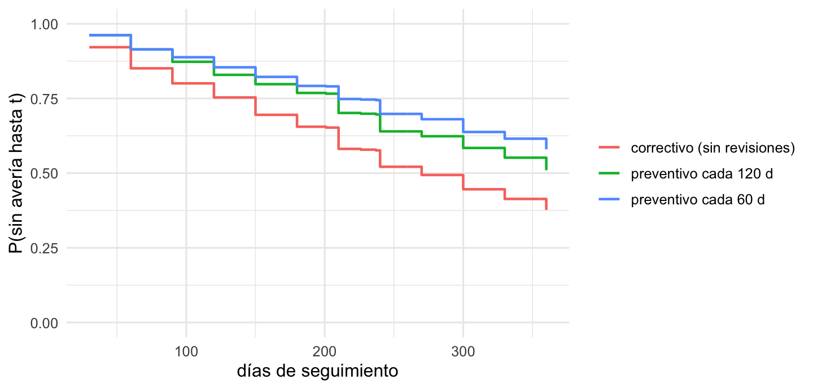
Figura 31: Predicción para una misma máquina (5 años, carga 0.75) bajo tres políticas de mantenimiento: probabilidad de llegar a cada día sin avería durante un año de seguimiento. Las curvas combinan el riesgo de base estimado por survfit() con la trayectoria de covariables de cada escenario. Los escalones son comunes a las tres curvas: proceden del riesgo de base, que solo salta en los instantes de fallo observados (mensuales, por el troceado del panel). Lo que distingue a las curvas es su separación creciente: cuanto más frecuente la revisión, más lenta la caída.
Y podemos leer la cifra concreta al cabo del año:
Código
# la supervivencia al final del año: el último valor de cada curvaaggregate(surv ~ escenario, data = pred, FUN =function(s) round(tail(s, 1), 3))
La Figura 31 lo resume, y la lectura es directamente accionable: al cabo de un año, la probabilidad de que esa máquina siga sin averiarse es del 58 % con revisiones cada 60 días, baja al 51 % si se espacian a 120, y cae al 38 % sin mantenimiento preventivo.
Conviene leer esos números con cuidado, porque no son proporcionales al esfuerzo. Duplicar la frecuencia de revisión —de 120 a 60 días— rinde 7 puntos; en cambio, pasar de no revisar a hacerlo cada cuatro meses gana 13. La primera revisión es, con diferencia, la más rentable, y a partir de ahí hay rendimientos decrecientes. Puestas junto al coste de cada intervención, esas cifras son exactamente el número que una jefatura de mantenimiento necesita para decidir cuántas revisiones compensa pagar.
Cuatro cautelas al predecir con Cox
El riesgo de base es no paramétrico. Solo está definido en el rango de tiempos observado: fuera de él, survfit no extrapola. Cox no sirve para pronosticar más allá del seguimiento.
Condicional vs marginal. Con frailty(id_maquina), los coeficientes son condicionales a la fragilidad de una máquina concreta. Las curvas de arriba se han calculado con el ajuste sin el término penalizado (prácticamente los mismos \(\hat\beta\)): describen el promedio poblacional de las curvas, \(\mathbb{E}_Z[S(t\mid Z)]\) —que no es la curva de ninguna máquina concreta, ni siquiera de una con fragilidad media: la \(Z_i\) de cada máquina desplazaría toda su curva—.
Aquí “supervivencia” es tiempo hasta la próxima avería. El proceso es recurrente; estas curvas describen el tiempo hasta el siguiente fallo desde el inicio del escenario, no la vida útil total.
Predicción \(\ne\) causalidad. El modelo dice que las máquinas revisadas fallan menos en estos datos; afirmar que revisarlas hará que fallen menos exige, además, que no haya confusión no observada. (Aquí sabemos que el mecanismo es causal porque lo hemos simulado; en la vida real, no.)
En R: predecir con un modelo de Cox
Dos funciones, según se quiera riesgo relativo o probabilidad absoluta.
predict(cox, newdata = perfiles, type ="lp") # predictor lineal x'βpredict(cox, newdata = perfiles, type ="risk") # su exponencial, exp(x'β)survfit(cox, newdata = perfiles) # curva de supervivencia S(t)survfit(cox, newdata = trayectorias, id = id) # ídem, con covariables temporales
type = "lp" / "risk" — el riesgo relativo, que no necesita el riesgo de base. Ojo: R los centra en la media de la muestra, así que su valor absoluto no significa nada; lo interpretable es el cociente entre dos perfiles, que es lo que hacemos al dividir por el perfil de referencia.
survfit(cox, newdata = ...) — combina los \(\hat\beta\) con el riesgo de base estimado por Breslow y devuelve \(\hat S(t)\) para cada perfil. Sus componentes útiles: $time, $surv, $strata. La función summary(sf, times = 360) extrae la supervivencia en instantes concretos.
Con covariables dependientes del tiempo, un perfil fijo no basta: hay que pasar una trayectoria (una fila por tramo, con tstart/tstop) e identificar los escenarios con id =. Y newdata debe incluir la variable respuesta, porque survfit reconstruye la fórmula del modelo.
survminer::ggsurvplot() dibuja estas curvas directamente en ggplot2, con intervalos y tabla de sujetos en riesgo, si se prefiere a construir el gráfico a mano.
Modelos con frailty(): survfit no maneja bien el término penalizado. Lo práctico es predecir con el ajuste sin fragilidad (que da prácticamente los mismos \(\hat\beta\)), leyendo el resultado como poblacional.
Validación contra el DGP
Como en las unidades anteriores, cerramos aprovechando que conocemos la verdad del proceso generador, almacenada en el propio banco:
El log-hazard verdadero suma un desgaste de 0.10 por año, una carga con coeficiente 0.80, un protector \(-1.20\,e^{-\texttt{dias\_desde\_mant}/60}\) —y ningún efecto propio del plan: las correctivas se generan con ese término a cero, como preventivas cuya revisión queda infinitamente lejos—, todo multiplicado por una fragilidad de varianza 0.12. La validación se reduce a cinco preguntas, casi todas contestadas ya por el camino:
¿Recuperan los modelos la forma del mecanismo? Sí: una protección máxima al salir de la revisión que se desvanece en decenas de días —el perfil de \(\tau\) acotó la escala y la Figura 28 la enseñó en los datos crudos—.
¿Y la magnitud de los efectos? La confronta la Tabla 42 sobre los tres óptimos con fragilidad; sí, con los matices que siguen a la tabla.
¿Descartan lo que no existe? El plan no tiene efecto propio en el DGP, y la criba robusta lo expulsó (\(\chi^2\approx 2.2\), \(p\approx 0.14\)) en cuanto el reloj entró bien codificado.
¿Reproducen la heterogeneidad?\(\theta = 0.12\); los tres formatos la estiman entre 0.098 y 0.143 —una horquilla que encierra la verdad—, en la misma vecindad que la varianza del intercepto aleatorio del coste en el GLMM de 3.3 (\(\approx 0.13\)).
¿Qué no determinan los datos por sí solos? La escala \(\tau\): su valle de AIC es plano (70–120), elegimos 60 por interpretabilidad, y solo la validación revela que era el valor exacto del mecanismo. Con \(\tau = 100\) el coeficiente habría salido \(-1.014\), un 15 % por debajo: la magnitud estimada está condicionada a la \(\tau\) fijada.
Código
# Las varianzas de fragilidad van transcritas de la salida impresa de cada ajuste# (la línea "Variance of random effect"): el objeto coxph penalizado no ofrece un# accesor estable (history[[1]]$theta llegó a devolver 0.185 para el ajuste de# esperas, en contra de su propia salida, que dice 0.1418).data.frame(parametro =c("antigüedad (por año)", "carga (0 a 1)", "protección mantenimiento","varianza de fragilidad"),DGP =c(verdad$beta_hazard[["antiguedad"]], verdad$beta_hazard[["carga"]], verdad$beta_hazard[["mant_inmediato"]], verdad$theta_frail),esperas =c(round(coef(cox_esp_final_frag)[["antiguedad_ini"]], 3),round(coef(cox_esp_final_frag)[["carga"]], 3), NA, 0.142),panel =c(round(coef(cox_mes_opt_frag)[["antiguedad"]], 3),round(coef(cox_mes_opt_frag)[["carga"]], 3),round(coef(cox_mes_opt_frag)[["prot_mant"]], 3), 0.143),exacto =c(round(coef(cox_tt_opt_frag)[["antiguedad_ini"]], 3),round(coef(cox_tt_opt_frag)[["carga"]], 3),round(coef(cox_tt_opt_frag)[["tt(idx)"]], 3), 0.098))
Tabla 42: La verdad del DGP frente a los tres modelos óptimos con fragilidad. La columna de esperas no tiene celda de protección: ese formato no puede alojar el reloj y lo resume en la etiqueta del plan (coeficiente −0.674, sin verdad directa que confrontar).
La lectura, fila a fila, es tranquilizadora con una excepción instructiva. La antigüedad sale clavada en los tres formatos (0.092–0.106 frente a 0.10). La protección queda a un 1.5 % de la verdad en el panel y a un 3 % en el exacto —recuérdese la condicionalidad a \(\tau\) de la pregunta 5—. La fragilidad rodea a \(\theta\) (dos estimaciones por encima, una por debajo). La excepción es la carga: 0.66–0.73 frente a 0.80. No es señal de sesgo, sino de poca precisión: su error estándar ronda 0.22–0.23 en los tres ajustes (véanse sus salidas), así que la desviación no llega a una desviación típica —la carga varía poco entre máquinas, y los datos no dan para fijarla mejor—. Y el plan del modelo de esperas (\(-0.674\)) es el caso aparte que anuncia el caption: no confronta con ninguna verdad porque es la forma reducida del mecanismo —el promedio del ciclo de protección que ese formato no puede representar—.
Aun así, la credencial del Cox extendido se sostiene: un modelo semiparamétrico, que no supone nada sobre la forma del riesgo de base, ha reconstruido el mecanismo de un proceso que desconocía, y ha sabido descartar la variable que no formaba parte de él.
La cautela de siempre: el DGP es un proceso recurrente y con fragilidad, y nuestro panel mensual lo aproxima. Los modelos sobre intervalos, que ni siquiera pueden alojar la covariable temporal, resumen con una etiqueta fija lo que el extendido incorpora tal cual —no es un error, es el precio de la lente más simple—.
En R: recetario completo de la unidad (paquete survival)
Resumen de conjunto: reúne en siete pasos lo que las secciones han ido presentando por separado, para tenerlo todo a mano al abordar la tarea.
1 · Ajustar.coxph(Surv(tiempo, evento) ~ x1 + x2 + ...), por verosimilitud parcial. Para covariables dependientes del tiempo, la respuesta va en formato start-stop, Surv(tstart, tstop, evento) (el Cox extendido de la Sección 6.8).
2 · Leer.summary(cox) da los hazard ratios, la concordancia (índice C) y los tres tests globales —razón de verosimilitudes, Wald y score/logrank—; broom::tidy(cox, exponentiate = TRUE, conf.int = TRUE) los ordena como HR con intervalo.
3 · Inferir sobre los efectos (más allá del Wald por coeficiente):
car::Anova(cox, test.statistic = "LR") — Anova con A mayúscula, del paquete car: LRT tipo II por término (cada uno ajustado por los demás, sin depender del orden). La opción recomendada para cribar todos los efectos (Fox & Weisberg, 2019); drop1(cox, test = "Chisq") es equivalente.
anova(m_reducido, m_completo) — anova en minúscula, de base: LRT entre dos modelos anidados.
anova(cox) — LRT secuencial (tipo I), dependiente del orden; no admite type= (el tipo II lo da car::Anova, no anova).
survdiff(... ~ grupo) — el log-rank = test de score de un Cox con ese factor.
Las tres estadísticas —Wald, LR y score— son asintóticamente equivalentes; con muestras finitas, la LR es la más fiable.
4 · Con datos agrupados (varias filas por unidad): frailty(id) añade un efecto aleatorio (estima la varianza; efectos condicionales), cluster(id) solo corrige los errores estándar (efectos marginales). Para contrastar efectos respetando el agrupamiento, car::Anova(cox_esp_opt_clus, test.statistic = "Wald") sobre el ajuste con cluster(id) (el LRT a través de la frailty() penalizada no vale).
5 · Diagnosticar la proporcionalidad.cox.zph(cox) (residuos de Schoenfeld); plot() la dibuja. Y survival::concordance() da el índice C por separado (vuelve en la Unidad 3.7).
6 · Comparar modelos. Las reglas completas, en las reglas del juego: LRT (anova(m1, m2)) entre anidados y AIC()/BIC() entre no anidados, siempre sobre las mismas filas y sin término de fragilidad por medio; con eventos repetidos por máquina, Wald robusto con cluster(); entre respuestas distintas (intervalos vs seguimiento vs exacto), nada de AIC ni LRT: solo coeficientes, concordancia y predicciones.
7 · Predecir.predict(cox, newdata, type = "lp" | "risk") da el riesgo relativo (no necesita el riesgo de base); survfit(cox, newdata) da la curva de supervivencia absoluta, y con covariables dependientes del tiempo se le pasa una trayectoria por escenario, survfit(cox, newdata, id = id) (Sección 6.9).
El puente al cierre
Acabamos de tratar el fallo con datos troceados por intervalos y covariables que cambian en el tiempo. Ese es, exactamente, el formato sobre el que la Unidad 3.7 montará las tres lentes —tiempo discreto, Poisson a trozos y Cox— para comprobar qué estima cada una del mismo proceso: la deuda que el curso lleva arrastrando desde el Caso 1. La frontera del marco GLM que hemos cruzado aquí es, precisamente, el punto de partida de esa comparación.
Tarea del estudiante (3.6)
Sobre el banco de averías del caso, con las tablas intervalos y seguimiento:
Ajustad un modelo de Cox con las covariables basales (plan_mantenimiento, antiguedad_ini, carga, proceso) e interpretad los hazard ratios del plan, la carga y la antigüedad. Comparad el HR del plan con el factor de aceleración del AFT de 3.5 mediante \(\text{HR}=\text{AF}^{-1/\sigma}\): ¿son coherentes?
Añadid el fabricante a un ajuste ingenuo: ¿sale significativo alguno de sus niveles? Reajustad con frailty(id_maquina) y comparad: ¿basta la fragilidad, por sí sola, para desmontar el falso positivo? Explicad, conectándolo con el GLMM de 3.3, qué representa la varianza de fragilidad y por qué la correlación intra-máquina infla la confianza de los efectos (la cuestión 6 completa la cura con los errores robustos).
Aplicad cox.zph al modelo que hayáis dado por bueno en el apartado anterior y examinad los residuos de Schoenfeld. ¿Alguna covariable pone en duda la proporcionalidad? (No debería.) Argumentad por qué la etiqueta fijaplan_mantenimiento supera el diagnóstico aunque la protección real varíe a lo largo del ciclo de mantenimiento, y qué información se pierde al resumirla en una covariable constante. Comentad también por qué la fila GLOBAL es poco informativa cuando el modelo lleva frailty().
Extended Cox, paso a paso. Partiendo del mejor modelo del apartado anterior, trasladadlo al panel seguimiento y añadid mant_reciente; cribad todos los efectos con car::Anova(..., test.statistic = "Wald") sobre el gemelo con cluster(id_maquina). Sustituid después el indicador por la forma continua \(\exp(-\texttt{dias\_desde\_mant}/\tau)\), eligiendo \(\tau\) por perfil de AIC, y volved a cribar: ¿sigue siendo necesario plan_mantenimiento? Explicad por qué cambia el veredicto y qué parámetro del DGP recupera el coeficiente final. ¿Por qué este efecto no cabe en una tabla con una fila por espera?
Comparad y predecid. Justificad por qué no es lícito comparar el AIC de este modelo con el del apartado 2, y realizad la comparación de forma correcta —las reglas del juego os guían—. Después, usad survfit() para predecir la probabilidad de que una máquina de vuestra elección aguante un año sin avería bajo dos políticas de mantenimiento distintas, y redactad la recomendación que daríais a la jefatura de planta (dos o tres frases, en lenguaje no técnico).
Inferencia y discriminación. Comprobad que el test de score de un Cox con solo el plan reproduce el log-rank de la Unidad 3.5. Añadid luego las SE cluster-robustas (cluster(id_maquina)) al modelo con fabricante y comparad su \(p\) con el de la fragilidad. Leed además la concordancia del summary: ¿discrimina el modelo mucho mejor que el azar?
Argumentad en qué sentido el modelo de Cox está fuera del marco GLM. ¿Qué componente del GLM sustituye la verosimilitud parcial?
Y en el estudio de caso (3.8). Esta unidad alimenta dos propuestas. La 6 · Del primer parte al historial completo reutiliza el montaje start-stop de los apartados 4 y 5, ahora sobre panel.csv, con edad_t y antig_veh_t como covariables que cambian de tramo a tramo, y lo extiende a Andersen–Gill; el apartado 6 —errores robustos frente a fragilidad— es justamente la discusión que allí hay que cerrar. Y la 3 · ¿Cuánto dura un cliente? te pide el cox.zph del apartado 3 sobre un banco donde el modelo verdadero no es de riesgos proporcionales: contrástalo con lo que aquí has aprendido sobre lo que un diagnóstico que no rechaza demuestra y lo que no.
7 · Más allá: las tres lentes y las fronteras
Con el presupuesto entregado y la vida útil modelada, el Caso 3 ha terminado su trabajo. Esta última unidad no añade modelos: mira hacia atrás y hacia fuera. Hacia atrás, para comprobar algo que el curso ha ido insinuando sin demostrarlo del todo; hacia fuera, para poner nombre a lo que queda al otro lado de la frontera.
Lo de atrás es una deuda pendiente. Hemos mirado el fallo de una máquina con tres lentes que parecían mundos distintos: en el Caso 1 era una respuesta binaria en tiempo discreto —¿falló en este periodo?—; en el Caso 2, un conteo con offset —¿cuántos fallos por unidad de exposición?—; y en este caso, un tiempo con censura, modelado por su riesgo instantáneo (Cox) o por su reloj (AFT). Cada una llegó con su vocabulario —probabilidades, tasas, hazards— y con su propia maquinaria de estimación. La Sección 7.1 las enfoca a las tres sobre los mismos datos y muestra que, en el fondo, ven lo mismo.
Lo de fuera es un mapa. La Sección 7.2 recorre las preguntas que este caso no ha respondido y señala dónde buscarlas, sin desarrollarlas: no para aprenderlas ahora, sino para reconocerlas cuando aparezcan.
Sobre esta unidad
Es una unidad de referencia y cierre. No hay modelos nuevos: hay reencuentro, comparación y criterio. Reactiva la Unidad 1.5 (tiempo discreto con cloglog), la Unidad 2.6 (riesgos a trozos con Poisson) y el Cox extendido de la Sección 6.8, y se apoya en los modelos que aquella unidad dejó ajustados.
Datos:banco$seguimiento (sg), una fila por máquina-mes, con la respuesta «¿hubo avería en este tramo?». Es el mismo panel sobre el que la Unidad 3.6 montó el Cox extendido.
7.1 El mismo fallo, tres lentes
La pregunta, y una tabla que ya conocemos
Si tres lentes describen el mismo proceso, deberían contar la misma historia. ¿La cuentan? La pregunta no es retórica: cloglog, Poisson y Cox se presentaron en momentos distintos del curso, sobre datos distintos, y nada garantiza a priori que sus coeficientes sean siquiera comparables. El experimento para averiguarlo se diseña solo: poner a las tres ante los mismos datos, con el mismo predictor, y dejar que cada una lea la respuesta a su manera.
No partimos de cero: la Unidad 2.6 ya tendió estos puentes por pares —Poisson y cloglog como dos enlaces del mismo hazard, y su comparación con Cox y Kaplan–Meier— sobre el banco de pólizas: el caso fácil, con un solo evento por póliza y covariables fijas. Esta síntesis es la prueba de estrés de aquel mapa: eventos recurrentes, una covariable que cambia dentro del seguimiento y una fragilidad real detrás —y, además, una cuarta lente, el AFT, que entonces no existía—.
Los datos ya los tenemos: sg, el panel mensual start-stop de la Sección 6.8 —una fila por máquina y mes, con la covariable del mantenimiento prot_mant actualizándose tramo a tramo—. Y el predictor también: el modelo óptimo al que llegó la Unidad 3.6, antiguedad + carga + prot_mant.
Dos recordatorios de esa tabla que enseguida serán relevantes. Primero, la rejilla mensual colapsa eventos: las 1194 averías se quedan en 1144 meses con fallo, porque 50 caen en un mes que ya tenía otra —retened el dato, porque una de las lentes sabrá recuperarlas—. Segundo, 90 máquinas entraron en observación después del día 0 (altas escalonadas): sus primeras filas empiezan tarde, y el formato start-stop recoge esa entrada retardada sin que tengamos que hacer nada.
Un vistazo a las columnas que las tres lentes van a usar, sobre la misma máquina M227 de la Sección 6.8:
En estas ocho filas está todo lo que las lentes van a leer:
Las respuestas: fallo marca los meses con avería (aquí, el 1.º y el 7.º) y n_fallos los cuenta; a ambas las acompañan exposicion —los días en riesgo del tramo— y el propio tramo \((\text{tstart}, \text{tstop}]\).
Y el predictor: antiguedad crece mes a mes (el reloj 1 de la Sección 6.8), carga es constante por máquina, y prot_mant oscila entre 0.64 y 0.39 —el diente de sierra del reloj 2: una máquina revisada cada 60 días, vista con rejilla de 30—.
Tres lentes, un solo riesgo
Fijemos antes la notación sobre el panel: en el tramo mensual\(j\) de la máquina \(i\), con exposición \(e_{ij}\) (días en riesgo), las tres lentes comparten el predictor lineal
y difieren solo en dos cosas: qué respuesta leen en cada fila, y cómo tratan el riesgo de base —el nivel de riesgo que corre por debajo de las covariables, que en las lentes GLM será un intercepto por periodo, \(\alpha_{s(j)}\), y en Cox una función libre \(h_0(t)\)—:
Lente 1 · tiempo discreto (Caso 1). Lee el indicadorfallo y modela la probabilidad de fallar en el tramo con enlace cloglog y la exposición como offset. Es el modelo persona-periodo de la Unidad 1.5: si por debajo hay un hazard proporcional en tiempo continuo, el cloglog agrupado estima sus mismos coeficientes(Allison, 1982; Prentice & Gloeckler, 1978): \[\texttt{fallo}_{ij}\sim\text{Bernoulli}(p_{ij}),\qquad
\operatorname{cloglog}(p_{ij})=\log\!\big(-\log(1-p_{ij})\big)
=\alpha_{s(j)}+\eta_{ij}+\log e_{ij}.\]
Lente 2 · riesgos a trozos (Caso 2). Lee el conteon_fallos y modela la tasa con una Poisson y log(exposicion) como offset. Con el tiempo troceado y un término por tramo, su verosimilitud coincide exactamente con la de un modelo de supervivencia exponencial a trozos (Holford, 1980; Laird & Olivier, 1981): es la lente de la Unidad 2.6. Al contar de verdad, recupera las 50 averías que el indicador colapsa: \[\texttt{n\_fallos}_{ij}\sim\text{Poisson}(\mu_{ij}),\qquad
\log \mu_{ij}=\alpha_{s(j)}+\eta_{ij}+\log e_{ij}.\]
Lente 3 · Cox (este caso). Lee Surv(tstart, tstop, fallo) y estima por verosimilitud parcial, dejando libre el riesgo de base(Cox, 1972): es el Cox extendido de la Sección 6.8: \[h_i(t)\;=\;h_0(t)\,\exp\{\eta_i(t)\},\] donde \(\eta_i(t)\) es el mismo predictor evaluado en el instante \(t\) —las covariables temporales toman el valor de la fila vigente—.
Queda un cabo: ese \(\alpha_{s(j)}\). Las dos lentes GLM necesitan decir algo sobre el riesgo de base, porque su intercepto lo es. Les damos lo mismo que Cox se toma gratis, pero en versión a trozos: un intercepto por periodo calendario. ¿Y por qué semestres, si las filas son meses? Porque aquí conviven dos rejillas que no tienen por qué coincidir. La rejilla de las filas —mensual— decide cada cuánto se actualizan las covariables, y esa no se toca: engrosarla congelaría más tiempo prot_mant y atenuaría su coeficiente (el precio que midió el tt() de 6.8). La rejilla del riesgo de base solo decide cuántos escalones tiene \(\alpha_{s(j)}\), y ahí mandan la parsimonia y los datos: un escalón por mes serían casi cincuenta parámetros a repartirse los 1144 meses con fallo; agrupando en semestres, \(s(j)\in\{1,\dots,8\}\), cada escalón se apoya en unos 140 fallos y el riesgo de base aún puede dibujar una tendencia a lo largo de los cuatro años. La elección es instrumental, no sustantiva: los \(\beta\) apenas dependen de ella —cambiad semestres por años o por meses y comprobadlo—.
Con eso, el experimento queda montado: tres especificaciones paralelas —mismo predictor, misma exposición, riesgo de base a trozos (lentes 1 y 2) o libre (lente 3)—. La tercera no es un modelo nuevo: es cox_mes_opt, el gemelo sin fragilidad del modelo final de la Sección 6.8, que reajustamos aquí para tener las tres lentes a la vista en un mismo bloque.
Código
# definimos el semestre en que se encuentra cada ventana (mes), con un máximo de 8 # el semestre 8 agrupa desde los días 1281 en adelantesg$semestre <-factor(1+pmin(sg$tstart %/%183, 7))# Lente 1 (Caso 1) · TIEMPO DISCRETO: binomial cloglog sobre el indicador m_cll <-glm(fallo ~ antiguedad + carga + prot_mant + semestre +offset(log(exposicion)),family =binomial("cloglog"), data = sg)# Lente 2 (Caso 2) · RIESGOS A TROZOS: Poisson sobre el conteo, con offset m_poi <-glm(n_fallos ~ antiguedad + carga + prot_mant + semestre +offset(log(exposicion)),family = poisson, data = sg)# Lente 3 (Caso 3) · COX extendido (start-stop), riesgo de base libre: cox_mes_opt cox_mes_opt <-coxph(Surv(tstart, tstop, fallo) ~ antiguedad + carga + prot_mant,data = sg)
En R: las tres lentes sobre un mismo panel
Las tres se escriben casi igual; lo que cambia es la respuesta y el trato del riesgo de base.
# 1 · tiempo discreto: indicador + enlace cloglog + offsetglm(fallo ~ x +factor(periodo) +offset(log(exposicion)),family =binomial("cloglog"), data = panel)# 2 · riesgos a trozos: conteo + Poisson + offsetglm(n_fallos ~ x +factor(periodo) +offset(log(exposicion)),family = poisson, data = panel)# 3 · Cox extendido: respuesta start-stop, riesgo de base librecoxph(Surv(tstart, tstop, fallo) ~ x, data = panel)
El offset va dentro de la fórmula, siempre como log() de la exposición: sin él, los coeficientes absorberían las diferencias de tiempo en riesgo entre filas.
El riesgo de base es explícito en las lentes GLM (factor(periodo)) e implícito en Cox. Si el factor tiene muchos niveles, conviene agrupar el tiempo en tramos más gruesos: es una decisión de parsimonia que no afecta a los \(\hat\beta\).
Comparar coeficientes entre modelos distintos: broom::tidy() los devuelve en el mismo formato (term, estimate, std.error…), y funciona igual con glm y con coxph; a partir de ahí, un dplyr::left_join() por term pone las columnas lado a lado.
Versión agrupada de cada lente: lme4::glmer(... + (1 | id)) para las dos GLM y coxph(... + frailty(id)) para Cox. Con cloglog, glmer es delicado: ayuda arrancar del ajuste fijo (etastart = predict(m_fijo)) y usar control = glmerControl(optimizer = "bobyqa").
Leer las varianzas: VarCorr() en los GLMM (desviación típica del intercepto, escala log) y la línea Variance of random effect en el coxph con frailty(). No son comparables sin transformar: van en parametrizaciones distintas.
Qué estima cada una, y cuánto coinciden
Ponemos los tres juegos de coeficientes lado a lado —omitiendo intercepto y semestres, que son el riesgo de base— y añadimos la verdad del proceso generador:
Tabla 43: Coeficientes (escala log-hazard) del mismo evento por las tres lentes, frente a la verdad del DGP. Las tres columnas son casi idénticas: cloglog, Poisson a trozos y Cox estiman el mismo hazard proporcional.
El resultado, en la Tabla 43, es de los que se recuerdan: las tres columnas cuentan la misma historia. Las diferencias viven en la tercera cifra decimal —solo carga se mueve en la segunda, y enseguida veremos por qué es la covariable menos precisa de las tres—.
¿Por qué coinciden? No es suerte: cada pareja tiene su teorema. Si el proceso subyacente tiene un hazard proporcional en tiempo continuo, el cloglog agrupado estima esos mismos coeficientes(Prentice & Gloeckler, 1978). Y la Poisson a trozos no es que se parezca a un modelo de supervivencia: es el modelo exponencial a trozos (Holford, 1980; Laird & Olivier, 1981), que aproxima al Cox tanto mejor cuanto más fino el troceado —con la rejilla mensual, ya casi indistinguibles—. La moraleja es la que el curso lleva tejiendo desde la Unidad 1.5: supervivencia = GLM con el enlace y el offset adecuados; lo único que Cox hace distinto es no gastar parámetros en el riesgo de base.
Y la lectura aplicada tampoco depende de la lente elegida: cada año de edad multiplica el riesgo por \(e^{0.102}\approx 1.11\), y una revisión recién hecha lo deja en \(e^{-1.205}\approx 0.30\) —el hazard ratio del mantenimiento con el que cerró la Sección 6.8—. Tres vocabularios, un solo mecanismo.
Del coeficiente a la decisión: las preguntas de la fábrica, respondidas
Un modelo no se ajusta para admirar sus coeficientes, sino para responder preguntas. Las que el caso viene arrastrando sobre el riesgo ya tienen respuesta, y —esta es la gracia— la misma con cualquiera de las tres lentes. Basta componer el predictor con los escenarios:
Código
b <-coef(cox_mes_opt)round(c(riesgo_10_anios =exp(10* b[["antiguedad"]]), # 10 años vs recién estrenadariesgo_carga_01 =exp(0.1* b[["carga"]]), # +0.1 de nivel de usorevision_dia_0 =exp(b[["prot_mant"]] *exp(-0/60)), # hazard ratio vs sin protección...revision_dia_30 =exp(b[["prot_mant"]] *exp(-30/60)), # ...según los días desde la revisiónrevision_dia_60 =exp(b[["prot_mant"]] *exp(-60/60)),revision_dia_120 =exp(b[["prot_mant"]] *exp(-120/60))), 2)
¿Cuánto pesa la edad? Una máquina de 10 años falla 2.8 veces más que una recién estrenada, a igualdad de todo lo demás: el desgaste es el motor principal del riesgo.
¿Y el uso? Cada décima de carga añade en torno a un 7 % de riesgo: real, pero secundario.
¿Qué compra una revisión? El día de la revisión, el riesgo queda en el 30 % del de una máquina sin protección; al mes ya ha rebotado al 48 %, a los dos meses al 64 % y a los cuatro apenas queda protección (85 %). La revisión no es un estado, es un depósito que se vacía —y por eso el intervalo de mantenimiento, no el plan, es la palanca de decisión que exploraron las Unidades 3.5 y 3.6—.
La pregunta de la dirección —¿cuánto costará?— no se responde con el riesgo a solas: es solo la mitad frecuencia, y ponerle precio fue el trabajo de la Tweedie en la Unidad 3.4.
¿Y por qué no el tt() de 6.8, que era la versión exacta?
Porque las lentes 1 y 2 solo existen sobre tiempo troceado: el troceado no es un atajo para ellas, es su definición, y la comparación exige los mismos datos para las tres. La versión exacta sigue siendo la referencia: por la Sección 6.8 sabemos que congelar la covariable atenúa prot_mant en torno a un 4 % (\(-1.25\) con tt() frente a \(-1.2\) aquí). Es decir, las tres lentes comparten esa misma atenuación, conocida y conservadora: se desvían juntas y en cuantía medida, que es justo lo que las hace comparables entre sí.
El AFT es la lente distinta
Falta una cuarta lectura, la de la Unidad 3.5, y no entra en esta tabla porque no estima un log-hazard: el AFT estima cuánto se estira el reloj (un factor de aceleración sobre el tiempo), no cuánto se multiplica el riesgo. Las dos familias solo coinciden en un caso especial —la Weibull, que es a la vez AFT y PH, con la exponencial como caso particular—… y nuestro banco está justo ahí: en 3.5 la Weibull dejó la forma en \(\approx 1\), así que aquí la traducción \(\text{HR} = \text{AF}^{-1/\sigma}\) funciona casi sin fricción. Que no engañe la suerte: fuera de la Weibull, AFT y PH responden a preguntas distintas, y elegir entre «acelerar el tiempo» y «multiplicar el riesgo» es, antes que una cuestión técnica, una cuestión de qué se quiere comunicar.
El riesgo de base que no estaba
Las lentes a trozos hacen algo que Cox no hace: enseñan el riesgo de base que estiman. Cada una reconstruye su propia escalera de escalones semestrales —los \(\alpha_{s(j)}\) que Cox dejó libres—; mirémoslas juntas, y contrastemos en ambas si los escalones aportan algo:
anova(update(m_cll, . ~ . - semestre), m_cll, test ="Chisq")
Código
anova(update(m_poi, . ~ . - semestre), m_poi, test ="Chisq")
Dos lecturas, y las dos compartidas.
La primera: las dos escaleras son casi la misma —escalón a escalón, cloglog y Poisson estiman pasos parecidos (0.071 y 0.093 en el semestre 2; 0.192 y 0.186 en el 3)—: la coincidencia entre lentes no se limita a los \(\beta\) de la tabla anterior, alcanza también al riesgo de base que cada una reconstruye.
La segunda: en ambas los escalones son minúsculos —ninguno llega a 0.2 en escala log— y los dos contrastes coinciden en el veredicto: quitar los semestres apenas mueve la deviance (5.2 y 4.9 con 7 grados de libertad; \(p = 0.640\) y \(0.669\)). El riesgo de base en tiempo calendario es plano, y lo es con las dos lentes: es una propiedad del proceso, no un artefacto de una verosimilitud. ¿Sorpresa? No, si se piensa en el DGP: toda la dinámica temporal del riesgo vive en la edad de la máquina y en el reloj del mantenimiento, y ambas están ya en el predictor. Despejadas las dos, no queda tendencia que recoger. La moraleja tiene su punta: la flexibilidad del riesgo de base libre de Cox aquí no se usa —pero eso solo se sabe después de mirar, y son las lentes a trozos, con sus escalones explícitos, las que lo dejan a la vista—.
¿Y la fragilidad?
A estas alturas del curso, la objeción llega sola: las tres lentes de arriba son de efectos fijos —ninguna sabe que los 18252 tramos vienen de solo 400 máquinas, cada una con su propensión propia a fallar—, y llevamos dos casos aprendiendo que ignorar el agrupamiento tiene consecuencias. ¿Invalida eso la comparación? Comprobémoslo, porque la simetría entre lentes alcanza también al agrupamiento: cada una tiene su versión agrupada —el intercepto aleatorio por máquina en las lentes GLM (el GLMM de la Unidad 3.3 y del Caso 2) y la fragilidad en Cox (cox_mes_opt_frag, el modelo final de la Sección 6.8, que reajustamos aquí igual que hicimos con su gemelo sin fragilidad)—. Repetimos la tabla con las tres:
Código
# el cloglog es numéricamente delicado: se arranca del ajuste fijo (etastart);# bobyqa evita en ambos un aviso de convergencia del optimizador por defectomm_cll <-glmer(fallo ~ antiguedad + carga + prot_mant + semestre +offset(log(exposicion)) + (1| id_maquina), family =binomial("cloglog"), data = sg,etastart =predict(m_cll), control =glmerControl(optimizer ="bobyqa"))mm_poi <-glmer(n_fallos ~ antiguedad + carga + prot_mant + semestre +offset(log(exposicion)) + (1| id_maquina), family = poisson, data = sg,control =glmerControl(optimizer ="bobyqa"))cox_mes_opt_frag <-coxph(Surv(tstart, tstop, fallo) ~ antiguedad + carga + prot_mant +frailty(id_maquina), data = sg)sel <-c("antiguedad", "carga", "prot_mant")tibble::tibble(term = sel,cloglog_GLMM =round(fixef(mm_cll)[sel], 3),Poisson_GLMM =round(fixef(mm_poi)[sel], 3),Cox_frailty =round(coef(cox_mes_opt_frag)[sel], 3),verdad_DGP =c(verdad_hz[["antiguedad"]], verdad_hz[["carga"]], verdad_hz[["mant_inmediato"]]))
Tabla 44: Las tres lentes con el agrupamiento por máquina explícito —intercepto aleatorio (GLMM) en las lentes GLM, fragilidad gamma en Cox—, frente a la verdad del DGP. Los coeficientes apenas se separan de los de la tabla de efectos fijos.
En la Tabla 44, las tres columnas vuelven a contar la misma historia y, frente a la Tabla 43 de efectos fijos, nada se mueve más allá de la segunda cifra decimal. La objeción queda respondida: el agrupamiento importa para la inferencia —lo vimos en la Sección 6.6 con el falso positivo de fabricante, y volverá a asomar enseguida con el error estándar de carga—, pero no para el retrato del mecanismo; la comparación en efectos fijos era justa. Lo nuevo de esta tabla está en el propio efecto de máquina:
Código
# theta_Cox va transcrita de la salida impresa de cox_mes_opt_frag ("Variance of# random effect"): el accesor history[[1]]$theta no es estable (ver 3.6, @tbl-u36-dgp)c(sd_cloglog =round(sqrt(unlist(VarCorr(mm_cll)))[[1]], 3),sd_Poisson =round(sqrt(unlist(VarCorr(mm_poi)))[[1]], 3),theta_Cox =0.143,sd_logZ_DGP =round(sqrt(trigamma(1/attr(banco, "verdad")$theta_frail)), 3))
con \(\hat\theta = 0.143\) (frente al \(\theta = 0.12\) del DGP).
Una varianza vive, pues, en la escala del logaritmo (\(\sigma_u^2\)) y la otra en la del multiplicador (\(\theta\)): no son comparables tal cual. El puente es llevar la gamma a la escala log: si \(Z \sim \text{Gamma}(1/\theta,\ \theta)\), entonces
donde \(\psi'\) es la función trigamma —es el valor sd_logZ_DGP del chunk—, justo donde caen las dos estimaciones de los GLMM.
Tres lentes, dos parametrizaciones y un solo efecto de máquina detrás: el mismo par de hilos en espiral del curso.
Dónde vive el efecto aleatorio: la espiral, cerrada
Merece la pena mirar atrás. En el Caso 1 el efecto aleatorio fue a la clínica, y la Unidad 1.5 argumentó por qué no al paciente: sus filas persona-periodo no son réplicas, sino la factorización de una única espera. En el Caso 2 fue a la agencia, y la fragilidad individual de cada póliza —inestimable con un solo episodio— quedó integrada en la binomial negativa (Gamma × Poisson = NB, Unidad 2.6). Aquí, por primera vez, el sujeto se repite —cada máquina aporta varias esperas— y la fragilidad puede bajar al nivel individual, donde resulta estimable y significativa. La regla que unifica los tres casos: el efecto aleatorio vive donde hay réplicas.
Validación contra el DGP
Las dos tablas de la sección han comparado puntos; la validación en regla pide también la incertidumbre. Cerramos con la estimación y su intervalo de confianza al 95 % (Wald) en cada lente, frente al valor verdadero del proceso generador:
Tabla 45: Estimación e intervalo de confianza al 95 % (Wald) de cada covariable en las tres lentes, frente al valor verdadero del DGP. Los nueve intervalos cubren su verdad.
En la Tabla 45, los nueve intervalos cubren su valor verdadero: validación superada en las tres lentes. Pero la lectura fina es más instructiva, porque las covariables no aprueban igual. antiguedad y prot_mant lo hacen con nota: intervalos estrechos y centrados en la verdad (0.10 y \(-1.20\)). carga aprueba de otra manera: su intervalo es enorme —\((0.29,\ 1.03)\) en el Cox, casi cuatro décimas a cada lado— y el 0.80 verdadero queda a menos de un error estándar del punto estimado. No hay sesgo que explicar; hay poca información.
Un matiz más, que conecta con la subsección anterior: estos intervalos salen de los modelos de efectos fijos, que ignoran el agrupamiento, y son por tanto optimistas. Para carga —la covariable a la que el agrupamiento muerde—:
Con el error estándar honesto de la fragilidad, el intervalo se ensancha en torno a un 20 % y la verdad queda aún más cómodamente dentro —el de las covariables intra-máquina apenas se inmuta—. Y la asimetría entre covariables tiene una causa precisa que merece retenerse: carga es constante por máquina, así que sobre ella solo informan comparaciones entre máquinas —400 datos efectivos, enredados además con la fragilidad—. antiguedad y prot_mantvarían dentro de cada máquina, y sobre ellas informan los 18252 tramos con contrastes intra-máquina que la fragilidad no contamina. La precisión no la da el tamaño de la tabla, sino dónde varía la covariable —la misma lección de diseño que el GLMM de la Unidad 3.3 contaba con la \(\hat\phi\) inflada, ahora en clave de supervivencia—.
Con esto queda saldada la deuda: el fallo de una máquina admite tres lecturas —probabilidad por periodo, tasa por tramos, hazard—, y las tres son, por debajo, el mismo modelo lineal generalizado del riesgo. Lo que separaba al Caso 1 del Caso 2 y del Caso 3 no era la estadística, sino la forma en que se presentaban los datos. Toca ahora mirar hacia fuera.
7.2 Más allá del GLM: un mapa para seguir
El caso está cerrado: tenemos un modelo que responde a la pregunta que lo abrió y sabemos qué vale su respuesta. Pero un curso no termina cuando se acaban las respuestas, sino cuando se ven las preguntas que quedan fuera. Esta última sección no enseña modelos nuevos —ya hemos visto bastantes—: solo pone nombre a lo que hay al otro lado de la frontera, para que se reconozca cuando aparezca y se sepa dónde buscar.
Conviene ordenarlo por preguntas, no por técnicas, que es como se presentan los problemas en la práctica. A continuación de cada pregunta te cuento Dónde mirar y qué librerías/funciones utilizar en R:
1. ¿Y si el cero tuviera un mecanismo propio —máquinas paradas, sin contrato de mantenimiento— en vez de ser «no hubo averías»?
Modelos en dos partes (hurdle) e inflados de ceros, que separan la probabilidad de gastar de la cuantía. En R: glmmTMB(..., ziformula = ~ 1); pscl::hurdle()
2. ¿Y si el efecto de la edad no fuera una recta en escala log?
Modelos aditivos (GAM): la covariable entra como una curva suave estimada de los datos. En R: mgcv::gam(y ~ s(edad) + ...)
3. ¿Y si quisiéramos modelar la secuencia de averías de cada máquina, en vez de trocearla en esperas?
Procesos de eventos recurrentes (Andersen–Gill y variantes). En R: coxph(Surv(inicio, fin, evento) ~ x + cluster(id))
4. ¿Y si distinguiéramos por qué falla —mecánica, eléctrica…—, o quisiéramos seguir estados (operativa → degradada → averiada)?
Riesgos competitivos y modelos multiestado. En R: survival::survfit() con etype; paquetes cmprsk, mstate.
5. ¿Y si el efecto de una covariable cambiara a lo largo del tiempo de forma suave, en vez de ser constante?
Riesgos a trozos aditivos (PAMM) y paramétricos flexibles de Royston–Parmar. En R: pammtools; flexsurv::flexsurvspline()
6. ¿Y si interesara la diferencia de riesgo en lugar del cociente —cuántas averías más al año, no cuántas veces más—?
Modelo aditivo de Aalen. En R: timereg::aalen()
7. ¿Y si quisiéramos que la incertidumbre de todos los parámetros llegara hasta la predicción final?
Ajuste bayesiano: la predictiva incorpora de serie la incertidumbre de estimación. En R: brms::brm(..., family = tweedie()); rstanarm
Dos observaciones sobre esta lista. La primera es que casi todas son extensiones, no sustituciones: un GAM sigue siendo un GLM con el predictor lineal relajado; los eventos recurrentes siguen siendo Cox con otra respuesta; el modelo en dos partes son dos GLM. Lo aprendido no caduca —se recombina—. La segunda es que la más ambiciosa es la última, y por una razón que este caso ha dejado a la vista: nuestro intervalo de predicción trataba \(\hat\beta\), \(\hat\phi\), \(\hat p\) y \(\hat\sigma_u\) como si fueran exactos. Un ajuste bayesiano no necesita esa concesión.
Un límite distinto: hasta dónde llega la selección automática
Cierro con una frontera de otro tipo, que no es un modelo sino una herramienta: la regularización. En el Caso 2 usamos glmnet para penalizar una Poisson con muchos predictores —encoger los coeficientes hacia cero y, con penalización \(\ell_1\), seleccionar variables (Friedman et al., 2010; Tibshirani, 1996)—. En este estudio de caso que hemos ido trabajando en este último bloque no hace falta la regularización: con trece parámetros y 1531 filas no hay sobreajuste que corregir, como ya demostró la validación cruzada. Pero su límite en este terreno es instructivo y merece un minuto.
Conviene primero corregir una idea extendida: suele decirse que glmnet no cubre familias como la Gamma. Ya no es cierto —desde la versión 4.0 admite cualquier objeto family de stats::glm(), resolviéndolo por Newton proximal en lugar de por descenso por coordenadas—. El límite real está en otro sitio, y es más interesante: la penalización actúa sobre \(\boldsymbol\beta\), no sobre los parámetros de la familia. En una Tweedie eso significa que \(p\) hay que fijarlo de antemano, o recorrer una rejilla en \(p\)y en \(\lambda\), validando en dos dimensiones a la vez.
Y ahí está la moraleja que cierra la unidad, porque resume lo que la Tweedie nos ha enseñado: seleccionar automáticamente es fácil cuando toda la estructura del modelo vive en el predictor lineal. Cuando parte de ella vive en la función de varianza —como aquí—, la selección deja de ser un botón y vuelve a ser lo que ha sido durante todo el curso: una decisión de modelización.
Tarea del estudiante (3.7) · qué te llevas al estudio de caso
Esta unidad no aporta un modelo al estudio de caso: aporta criterio y el catálogo de extensiones. Recuerda que el artículo de la Unidad 3.8 exige investigar y aplicar una extensión no vista en clase, y que casi todas están en la tabla de la Sección 7.2.
Propuesta 6 · Del primer parte al historial completo. Las lentes de riesgos a trozos y Cox sobre el mismo panel son literalmente las de esta unidad; su ampliación —Andersen–Gill— es la primera fila de aquella tabla llevada a la práctica.
Propuesta 1 toma de la tabla el modelo en dos partes; la 3, los paramétricos flexibles de Royston–Parmar; y la 7 se apoya en el límite de la regularización que cierra esta unidad.
Aviso. «Investigar una extensión» no es ajustarla: es localizar la fuente original, entender qué problema resuelve y compararla con el modelo base. Una extensión que se ajusta y no se compara con nada no cuenta.
8 · Estudio de caso: la cartera vuelve, con dos preguntas nuevas
Sobre esta unidad
Cierre del Caso 3 y del curso: un estudio de caso en equipo, con exposición y Q&A individual. No hay teoría nueva —se integra y se evalúa todo lo anterior— y el objetivo es el que aún no se ha evaluado: comunicar y reproducir. El entregable es un artículo de investigación.
Datos: la cartera de auto del Caso 2, la misma con la que trabajaste la frecuencia en la Unidad 2.8. No el banco de averías de la teoría de este bloque.
8.1 El banco de datos: lo que ya conoces y lo que no
El contexto, en dos líneas
Una aseguradora de automóvil con una cartera de unas 3.000 pólizas, gestionadas por 30 agencias repartidas en 6 regiones. Cada póliza se sigue desde que entra en la cartera hasta que se da de baja o hasta que termina la ventana de estudio: de ahí que la antigüedad observada vaya desde poco más de un mes hasta casi diez años, y que la exposición sea muy desigual entre pólizas.
En el Caso 2 miraste esa cartera con una sola lente: ¿cuántos partes, y a qué ritmo?. La 2.8 te avisó de que la cartera llevaba dentro otras dos preguntas, reservadas para este bloque:
¿Cuánto cuesta un siniestro? — la severidad, en euros. Y su agregado: ¿cuánto costará el año que viene?
¿Cuánto dura un cliente? — el tiempo hasta la baja, con censura.
Son exactamente las dos preguntas del Caso 3. La cartera no cambia; cambia la respuesta que miras.
Las tres tablas
Cada equipo recibe una carpeta con tres ficheros .csv —los datos «a ciegas»— y un .rds que, además de la cartera, guarda la verdad del proceso generador. La regla de trabajo es la misma que en el Caso 2: ajusta con los .csv, y abre el .rds solo al final, para el control de calidad.
cartera.csv — una fila por póliza. Es la tabla que ya conoces: la Unidad 2.8 describe su estructura, sus predictores de riesgo, las variables de ruido, el bonus-malus y el factor prohibido (sexo). Aquí solo repasamos las columnas que allí no usaste, porque son las respuestas de este caso:
Columna
Qué es
Detalle que importa
coste_total
Suma en euros de todos los partes de esa póliza
Vale 0 en la mayoría de las pólizas (entre el 62 % y el 75 %, según el equipo): es una variable mixta, cero-con-masa y positiva continua. El terreno de la Unidad 3.4
coste_medio
coste_total / n_siniestros
Es NA cuando la póliza no tuvo partes. Ojo: no es el coste de un parte, es la media de los suyos, y promedia un número distinto de partes en cada póliza
tuvo_siniestro
Indicador 0/1
La lente binaria del Caso 1 sobre estos mismos datos; útil como primera parte de un modelo en dos partes
antiguedad
Años que la póliza lleva observada en la cartera
Es el tiempo de seguimiento: la respuesta de duración
baja
1 si la póliza se dio de baja; 0 si seguía viva al cerrar el estudio
Es el indicador de evento; el 0 es censura por la derecha
t_baja
Instante de baja según el proceso generador
No lo uses como respuesta. Ver el aviso de abajo
motivo_fin
baja / fin_estudio
Redundante con baja; sirve para verificar que has entendido la censura
exposicion
Antigüedad reescalada a \((0,1]\)
El offset del Caso 2. Sigue siéndolo aquí para el coste anualizado
Un aviso sobre t_baja: el dato que sabe demasiado
t_baja es el instante en que la póliza se daría de baja según el proceso generador, y está registrado también para las pólizas que seguían vivas al cerrar el estudio —es decir, para las censuradas contiene información del futuro, que en una cartera real nadie tendría—. Comprobación inmediata sobre tus datos: para las pólizas con baja == 0, t_baja es siempre mayor que antiguedad.
El par correcto para modelar la duración es, por tanto:
Surv(antiguedad, baja) # tiempo observado + indicador de evento
Ajustar sobre Surv(t_baja, baja) produce un modelo que parece excelente y no vale nada. Si tu propuesta trabaja la duración, dilo explícitamente en el artículo: qué variable es el tiempo observado, cuál el indicador y por qué descartas t_baja. Es exactamente el tipo de decisión que distingue un análisis de supervivencia bien planteado de uno que solo ejecuta funciones.
siniestros.csv — una fila por parte. Esta tabla es nueva: en el Caso 2 existía como attr(cartera, "siniestros") pero no se abría. Es la resolución más fina del banco —el suceso individual— y la base de todo lo que tenga que ver con severidad. Entre 1.100 y 2.400 filas según el equipo.
Columna
Qué es
id_poliza
Clave que enlaza con cartera.csv (relación 1:N: una póliza, varios partes)
k
Orden del parte dentro de esa póliza: 1 el primero, 2 el segundo…
t_k
Instante del parte, en años desde el alta de la póliza (continuo)
coste_k
Coste de ese parte, en euros. La respuesta positiva y asimétrica del caso: la Gamma de la Unidad 3.1
anio
Año de póliza en que cae el parte (\(1, 2, \dots\)); es la clave de agregación hacia panel.csv
Dos consecuencias de que esta tabla exista. La primera: coste_k da un coste por parte limpio, sin promediar, que es lo que pide un modelo de severidad. La segunda: k y t_k convierten la cartera en un proceso de eventos recurrentes, con el historial completo de cada póliza y no solo el primer siniestro que trabajaste en la 2.5.
panel.csv — una fila por póliza y año. También es nueva. Es la estructura counting process que en el banco de averías llamábamos seguimiento: entre 13.800 y 14.500 filas.
Columna
Qué es
id_poliza, anio
Clave del tramo
tstart, tstop
Extremos del tramo en años de antigüedad. tstop − tstart es el tiempo realmente expuesto: el último tramo de cada póliza suele estar cortado
expo_anual
Precisamente tstop − tstart. Es el offset natural de cualquier modelo anual: offset = log(expo_anual)
n_partes_anual
Número de partes de esa póliza en ese año
edad_t, antig_veh_t
Edad del conductor y del vehículo actualizadas año a año: covariables dependientes del tiempo, el formato del Cox extendido de la Sección 6.8
en_riesgo
Vale 1 en todas las filas: solo se listan tramos en riesgo
El panel no trae el coste: hay que construirlo
panel.csv lleva el recuento anual, no el euro anual. Si tu propuesta necesita el coste por póliza y año —el objeto Tweedie de la Unidad 3.4—, se obtiene agregando siniestros.csv y uniéndolo al panel, cuidando de que los años sin partes queden en cero y no desaparezcan:
Los ceros no son un detalle menor: a nivel póliza-año rondan el 90 %, frente al 62–75 % a nivel póliza. Es la misma variable mirada con dos granularidades, y la elección cambia el índice \(p\) que estimarás y la estabilidad del ajuste. Justifica cuál eliges.
Cada equipo, su cartera
Como en el Caso 2, cada equipo trabaja con una cartera propia, generada con otra semilla y otros valores de algunos parámetros —la tasa base, el tamaño de la fragilidad, la forma del hazard, la dispersión de la severidad, el efecto de agencia—. La estructura es idéntica; las cifras no. No copies conclusiones numéricas de otro equipo: no serán las tuyas.
8.2 El encargo: un artículo de investigación
El entregable del Caso 3 no es un informe de consultoría —ese fue el Caso 2— sino un artículo de investigación: el formato con el que se comunica un resultado metodológico a una comunidad técnica. Cambia el destinatario y, con él, todo lo demás: el artículo plantea una pregunta, justifica un método, muestra evidencia y discute sus límites, en lugar de recomendar una acción. La estructura no la decides tú: la fijan la guía y la plantilla de artículo científico de los materiales de la asignatura, en evaluacion/ (Sección 8.4).
El trabajo tiene dos mitades obligatorias:
Aplicar al menos dos de los modelos estudiados en el curso, con el ciclo completo que has repetido en las siete unidades anteriores: pregunta → datos → exploración → modelo → interpretación → inferencia → bondad de ajuste → diagnóstico → predicción → validación.
Investigar y aplicar una extensión que no se ha desarrollado en clase. Cada propuesta sugiere la suya, y todas aparecen en el mapa de fronteras de la Sección 7.2. Investigar significa: localizar la fuente original que la define, entender qué problema resuelve, ajustarla, y explicar qué añade respecto del modelo base. Una extensión que se ajusta pero no se compara con nada no cuenta.
A esto se añade el control de calidad contra la verdad: el fichero cartera.rds conserva attr(cartera, "verdad") con los parámetros generadores. Se abre al final, cuando el modelo ya está cerrado, y da una sección de validación que ningún dato real permite escribir. Cada propuesta indica contra qué elementos concretos validar.
Qué se evalúa, en una frase
Que el artículo demuestre criterio: por qué esa familia y no otra, por qué ese enlace, por qué esa estructura aleatoria, cómo se ha tratado la censura o los ceros, y qué queda sin resolver. Un artículo que ajusta diez modelos sin justificar ninguno puntúa por debajo de uno que ajusta dos y explica la elección.
8.3 Las siete propuestas
Siete artículos posibles. Cada uno tiene una pregunta que un artículo real se haría, una unidad base del curso donde vive el modelo central, una extensión que investigar y un anclaje de validación contra la verdad del DGP. El recorrido está preparado: el callout final de cada unidad del bloque indica qué propuestas alimenta y con qué avisos.
La pregunta. ¿Cuánto cuesta asegurar una póliza durante un año? Y sobre todo: ¿da lo mismo calcularlo multiplicando frecuencia por severidad que modelando el coste total directamente?
Por qué es interesante. Es la pregunta central de la tarificación, y tiene dos respuestas legítimas que el curso ha construido por separado. La comparación es el artículo.
El camino recomendado.
Vía A, en dos piezas. Modela la frecuencia con lo que ya sabes del Caso 2 (Poisson o binomial negativa sobre n_siniestros, con offset = log(exposicion)) y la severidad con una Gamma sobre coste_k de siniestros.csv (Unidad 3.1). La prima pura es el producto de las dos predicciones. Cuida la escala: una es por unidad de exposición y la otra por parte.
Vía B, de una pieza. Ajusta una Tweedie sobre coste_total con offset = log(exposicion) (Unidad 3.4). Estima el índice \(p\) y comprueba dónde cae en \((1,2)\).
Compara las dos primas póliza a póliza: correlación, sesgo agregado, y en qué segmentos discrepan. Aquí es donde la Tweedie enseña su precio —impone el mismo coeficiente repartido entre frecuencia y severidad, mientras que la vía A los deja libres—.
La extensión: el modelo en dos partes. Una binomial para «¿hubo algún parte?» (tuvo_siniestro) y una Gamma para el importe condicionado a que lo hubiera. Es la tercera vía, y la que trata el cero como un suceso con mecanismo propio. Compárala con las otras dos. Punto de partida: pscl::hurdle() y la formulación en dos partes de la literatura actuarial.
Validación.coste_base y betas$sev (la severidad), betas$claim y lambda0 (la frecuencia), nu_gamma (la dispersión de la Gamma). Comprueba si la vía B recupera los efectos que las dos piezas de la vía A estiman por separado.
2 · Por dónde se cuela el sexo en la tarifa
La pregunta. La ley prohíbe tarificar con el sexo (Test-Achats, TJUE C-236/09). ¿Basta con quitarlo del modelo?
Por qué es interesante. El Caso 2 abrió esta pregunta y solo llegó hasta la frecuencia. La severidad es el otro canal, y nada garantiza que la fuga sea del mismo tamaño en los dos.
El camino recomendado.
Cuantifica primero la asociación entre sexo y las demás covariables. Una de ellas es un proxy: transporta información del factor prohibido aunque el factor no esté en el modelo. Las demás son controles negativos y deberían salir limpias.
Ajusta la Gamma de severidad sobre coste_k en dos versiones —con y sin el proxy— y mide cuánto se mueve el efecto marginal del sexo entre una y otra. Repite el ejercicio en frecuencia y en prima pura (propuesta 1, vía A) y compara los tres tamaños de fuga.
La extensión: mitigar. Investiga y aplica al menos una estrategia —eliminar el proxy, residualizarlo respecto del sexo, o reponderar— y mide su coste predictivo: cuánta capacidad de tarificar se pierde a cambio de cerrar el canal. Es la pregunta que la literatura de fairness en seguros discute y no tiene respuesta única.
Discute la implicación: una tarifa formalmente neutra puede no serlo materialmente.
Validación.attr(...)$proxy documenta cuál es el canal, el nivel implicado y la razón de momios que lo genera, además de la lista de controles negativos. betas$sev["sexo_h"] y betas$claim["sexo_h"] dan el efecto ajustado verdadero: la diferencia con el marginal que estimes es la fuga.
3 · ¿Cuánto dura un cliente?
La pregunta. ¿Qué explica que una póliza se dé de baja, y a qué ritmo se van los clientes?
Por qué es interesante. Porque este banco esconde una lección que el material de clase no puede dar con datos reales: un contraste de proporcionalidad que no rechaza no demuestra que el modelo sea de riesgos proporcionales.
El camino recomendado.
Describe primero. Kaplan–Meier de la duración por grupos, y log-rank. Recuerda: el par es Surv(antiguedad, baja), nunca t_baja.
Ajusta un AFT (Unidad 3.5) probando varias distribuciones del error —Weibull, log-normal, log-logística— y elige por AIC y por diagnóstico, no por defecto. Interpreta en factores de aceleración: cuánto alarga o acorta cada covariable la vida del cliente.
Ajusta un Cox sobre los mismos datos (Unidad 3.6) y aplica cox.zph. Contrasta lo que el diagnóstico dice con lo que el AFT ha elegido. Si las dos lecturas no encajan, esa tensión es el artículo: explícala en lugar de resolverla a favor del modelo que más te guste.
La extensión: paramétricos flexibles. Los modelos de Royston–Parmar modelan el log-hazard acumulado con splines y permiten no proporcionalidad explícita (flexsurv::flexsurvspline()). Ajusta uno y compáralo con el AFT y con el Cox.
Validación.lapse_median y sigma_lapse (la escala y la dispersión de la duración) y betas$lapse (los efectos sobre la log-duración: positivo = permanece más). Comprueba si el AFT que elegiste recupera la familia correcta.
4 · ¿Hay agencias caras?
La pregunta. ¿Tramitan más caro unas agencias que otras, o lo que parece un efecto de agencia es solo la composición de su cartera?
Por qué es interesante. Es la pregunta que el Caso 2 respondió con conteos (las gestiones por agencia), ahora planteada sobre dinero. La respuesta no tiene por qué ser la misma, y averiguarlo es el trabajo.
El camino recomendado.
Explora antes de modelar. Coste medio por agencia frente al número de partes que tramita: si las agencias pequeñas se disparan en las dos direcciones, estás viendo ruido, no señal.
Ajusta un GLMM Gamma sobre coste_k con (1 | id_agencia) (Unidad 3.3), controlando las covariables de la póliza. La pregunta operativa es si \(\hat\sigma_{\text{agencia}}\) se despega de cero, y con qué ajuste: usa un contraste de frontera, no un Wald ingenuo.
Contrasta con el caso conocido. Repite el mismo ejercicio sobre n_gestiones, donde el Caso 2 ya encontró efecto de agencia. Que un mismo agrupamiento sí actúe sobre una respuesta y no sobre otra es un resultado, no un fracaso: significa que el efecto está en la gestión y no en el siniestro. Argumenta cuál de los dos casos es el tuyo.
La extensión: del efecto aleatorio a la decisión. Extrae los BLUPs, dibuja el gráfico caterpillar con sus intervalos y explica el encogimiento: por qué una agencia con veinte partes no puede desviarse tanto como una con doscientos. Cierra prediciendo para una agencia nueva, y explica por qué esa predicción no usa ningún BLUP.
Validación.sigma_ag, sigma_reg, u_ag y u_reg de la verdad. Antes de compararlos con tus estimaciones, verifica sobre qué respuesta actúan esos efectos en el proceso generador: no des por supuesto que gobiernan todas.
5 · ¿Qué distribución describe el coste de un parte?
La pregunta. El coste de un siniestro es positivo y asimétrico. ¿Gamma, inversa gaussiana o lognormal? ¿Y cómo se decide, más allá de mirar un histograma?
Por qué es interesante. Es la más metodológica de las siete, y la que mejor se presta a un artículo de método: la pregunta no es qué modelo ajusta mejor, sino con qué criterio se compara algo que vive en escalas distintas.
El camino recomendado.
La relación media-varianza como criterio (Unidad 3.2). Agrupa las pólizas por coste medio predicho, estima la varianza dentro de cada grupo y ajusta la potencia \(p\) de \(\operatorname{Var} = \phi\,\mu^{p}\). Gamma dice \(p = 2\); inversa gaussiana, \(p = 3\). Deja que el dato hable antes de elegir.
Ajusta las tres —Gamma log, inversa gaussiana log y log-OLS— y compáralas. Cuidado con la comparación por AIC del log-OLS: modela \(\log Y\), no \(Y\), y necesita el jacobiano para ser comparable.
La retransformación. Si usas log-OLS, \(\exp(\widehat{\log y})\)no estima la media: aplica el smearing de Duan y cuantifica el sesgo que corriges.
La extensión: modelar la dispersión. ¿Es \(\phi\) constante, o los siniestros caros son también más erráticos? Ajusta una Gamma con dispformula en glmmTMB —o el equivalente por cuasi-verosimilitud— y contrasta la mejora. Es lo que la Unidad 3.2 dejó apuntado y no desarrolló.
Validación.coste_base (el coste medio de referencia), nu_gamma (la forma de la Gamma, de la que se deduce \(\phi\) y el coeficiente de variación condicional) y betas$sev. Si tu criterio media-varianza acierta la familia, el DGP te lo confirmará.
6 · Del primer parte al historial completo
La pregunta. El Caso 2 modeló el primer siniestro de cada póliza. ¿Se comporta el riesgo de los siguientes igual que el del primero, o hay pólizas que, una vez empiezan, siguen?
Por qué es interesante. Porque siniestros.csv da, por primera vez en el curso sobre estos datos, el historial completo: k y t_k. La 2.5 tuvo que conformarse con el primero.
El camino recomendado.
Construye la estructura. A partir de panel.csv y siniestros.csv, monta el formato start-stop que la Sección 6.8 usó en el banco de averías, con edad_t y antig_veh_t como covariables que cambian de tramo a tramo.
Riesgos a trozos: Poisson sobre n_partes_anual con offset = log(expo_anual) y el año de póliza como factor. El perfil de esos coeficientes es el hazard de base: mira si crece.
Cox extendido sobre la misma estructura, y comparación con la lente anterior. Debe darte lo mismo; si no, averigua por qué antes de escribir nada.
La extensión: Andersen–Gill. Es el modelo de eventos recurrentes que trata cada parte como un evento del mismo proceso, con errores robustos por póliza (coxph(Surv(tstart, tstop, evento) ~ x + cluster(id_poliza))). Compáralo con la alternativa de fragilidad y explica qué supone cada uno sobre la dependencia entre partes de una misma póliza.
Cuidado con el solapamiento
Esta propuesta roza lo que el Caso 2 ya hizo con la frecuencia. Para que sea un trabajo del Caso 3 y no una repetición, la respuesta de interés debe ser el coste acumulado —cuánto se lleva gastado una póliza a lo largo de su vida—, no solo el recuento de partes.
Validación.weib_shape (la forma del hazard de siniestros: \(>1\) significa que el riesgo crece con la antigüedad), lambda0 (la tasa base) y theta_frail (la fragilidad: su varianza es \(1/\theta\), y la de su logaritmo, \(\psi'(\theta)\)).
7 · El presupuesto del año que viene
La pregunta. ¿Cuánto tiene que reservar la aseguradora para el próximo ejercicio, y con qué margen de seguridad?
Por qué es interesante. Es la traslación directa de la Unidad 3.4 a datos nuevos, y la que mejor termina en una recomendación defendible. También la más segura: el camino está trillado.
El camino recomendado.
Construye el coste anual por póliza uniendo siniestros.csv al panel, con los ceros bien puestos (ver el aviso de 8.1). Decide y justifica la granularidad: póliza-año (≈ 90 % de ceros) o póliza completa (62–75 %).
Ajusta una Tweedie con offset = log(expo_anual), estima el índice \(p\) y sitúala en la recta \(\operatorname{Var} = \phi\,\mu^{p}\) frente a las familias del curso.
Añade el efecto aleatorio de póliza —hay varios años por póliza— y compara: qué cambia en los coeficientes, qué cambia en los errores estándar y por qué lo segundo cambia más que lo primero.
Predice el agregado y, sobre todo, su incertidumbre.
La extensión: el intervalo de predicción por simulación. El error estándar de la media no responde a «¿cuánto puede costarme como máximo?». Simula la predictiva —para cada póliza, el número de partes y el coste de cada uno— y da el percentil que la dirección necesita para fijar la reserva. Explica en qué se diferencia ese intervalo del de la media, y qué fuentes de incertidumbre sigue sin recoger.
Validación. Compara la predicción agregada con el coste realmente observado en la cartera, y el \(\hat p\) estimado con el que se deduce de la mezcla verdadera (lambda0, weib_shape para la frecuencia; nu_gamma para la severidad). El \(\hat\sigma_u\) del efecto aleatorio tiene su contrapartida en theta_frail: antes de compararlos, averigua por qué vía llega la fragilidad al coste anual en este banco.
8.4 Formato del informe: artículo de investigación
El Caso 3 se entrega como artículo científico, el tercero de los tres formatos del curso —informe técnico en el Caso 1, informe ejecutivo en el Caso 2—. No hay que inventarse la estructura: en los materiales de la asignatura tienes, en evaluacion/, la guía y la plantilla que la fijan.
Guía de redacción:Guia_informes_eficaces_datos_tres_formatos.docx, con el apartado dedicado al artículo científico —a qué lector se escribe, qué se argumenta y qué se deja fuera—.
Plantilla de trabajo:Plantillas_informes_tres_formatos/Plantilla_articulo_cientifico.qmd (también en .docx). Es un .qmd listo para escribir encima, con la estructura completa: título, autoría, resumen y palabras clave · introducción · marco teórico y antecedentes · objetivos, preguntas de investigación e hipótesis · datos y metodología · resultados · discusión · conclusiones, limitaciones y líneas futuras · referencias · material suplementario, y un checklist final antes de entregar.
Trabajar sobre la plantilla .qmd resuelve de paso la mitad de la reproducibilidad: el análisis y el texto viven en el mismo fichero, con la semilla fija y el código a la vista.
8.5 Checklist de tareas
8.6 Rúbricas
Las rúbricas están en la guía docente y en evaluacion/Rubricas_evaluacion.xlsx; no se reproducen aquí.